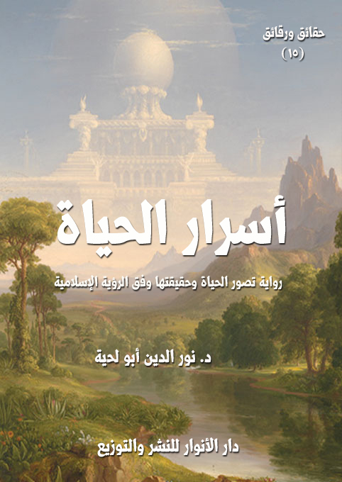

الكتاب: أسرار الحياة
السلسلة: حقائق ورقائق
الوصف: رواية تصور الحياة وحقيقتها وفق الرؤية الإسلامية
المؤلف: د. نور الدين أبو لحية
الناشر: دار الأنوار للنشر والتوزيع
الطبعة: الأولى، 1440 هـ
عدد الصفحات: 260
ISBN: 978-620-3-85900-3
لمطالعة الكتاب من تطبيق مؤلفاتي المجاني وهو أحسن وأيسر: هنا

التعريف بالكتاب
تحاول هذه الرواية أن تعرف بأهم الحقائق المرتبطة بالحياة وفق الرؤية الإسلامية التي تعتمد المصادر الأصلية، وما ساندها وأيدها وتوافق معها من الأحاديث والروايات والحكمة.. وهي تبرهن على مدى عقلانية الرؤية الإسلامية للحياة، مقارنة بسائر الرؤى، وبذلك تكون النظرة الإسلامية للحياة، برهانا من براهين النبوة، ودليلا من الدلائل الكبرى على حقانية الإسلام.
ذلك أن التشويهات والتحريفات التي أصابت مصادر الأديان أثرت في نظرتها للحياة، وهو ما أثر في سلوكها ومواقفا.. ذلك أن من ينظر إلى الحياة نظرة خاطئة، سيمارس لا محالة كل أعماله، ويقف كل مواقفه بطريقة خاطئة..
ولهذا كان من مهام الدين الكبرى التعريف بحقيقة الحياة، ومعناها، وأهدافها، وسر كونها بهذه الصفة، وكل ذلك أجابت عنه المصادر المقدسة للإسلام، ولا نجد مثلها، ولا ما يدانيها في سائر الكتب المقدسة.
أسرار الحياة (5)
تحاول هذه الرواية أن تعرف بأهم الحقائق المرتبطة بالحياة وفق الرؤية الإسلامية التي تعتمد المصادر الأصلية، وما ساندها وأيدها وتوافق معها من الأحاديث والروايات والحكمة.. وهي تبرهن على مدى عقلانية الرؤية الإسلامية للحياة، مقارنة بسائر الرؤى، وبذلك تكون النظرة الإسلامية للحياة، برهانا من براهين النبوة، ودليلا من الدلائل الكبرى على حقانية الإسلام.
ذلك أن التشويهات والتحريفات التي أصابت مصادر الأديان أثرت في نظرتها للحياة، وهو ما أثر في سلوكها ومواقفها.. ذلك أن من ينظر إلى الحياة نظرة خاطئة، سيمارس لا محالة كل أعماله، ويقف كل مواقفه بطريقة خاطئة..
ولهذا كان من مهام الدين الكبرى التعريف بحقيقة الحياة، ومعناها، وأهدافها، وسر كونها بهذه الصفة، وكل ذلك أجابت عنه المصادر المقدسة للإسلام، ولا نجد مثلها، ولا ما يدانيها في سائر الكتب المقدسة.
فالقرآن الكريم يبين أن هذه الحياة التي نعيشها، ليست سوى نشأة من النشآت، ومرحلة بسيطة في سلم الحياة الطويل.. وأنها مع قصرها مهمة جدا في تحديد المستقبل الحقيقي للإنسان..
ولذلك كانت الحياة ـ وفق الرؤية الإسلامية ـ مجالا لزراعة الأعمال الصالحة، واكتساب الأخلاق الطيبة، التي تتحول بعد ذلك إلى ثمار طيبة، يجنيها صاحبها في حياته الأبدية.
ولم تقتصر نظرة الإسلام للحياة على هذه الجوانب العامة التي تشاركه فيها سائر الديانات السماوية، وإنما نرى تفاصيل كثيرة في المصادر الإسلامية المقدسة لسنن الحياة،
أسرار الحياة (6)
وكيفية التعامل معها.. وقد حاولنا إحصاءها في عشرة أسرار كبرى، قسمناها إلى سبعة فصول بناء على الارتباط بين بعضها، وهذه الفصول هي:
أسرار العداوة: وذكرنا فيه الأعداء المتربصين بالحياة، والذين يريدون تحريفها عن مسارها، وقد بدأنا بها لأهميتها، فلا يمكن لأي أحد أن يبني حياة صحيحة دون أن يعرف أعداءه، والمواضع التي يتسللون منها إليه.
أسرار الصداقة: وذكرنا فيه الأصدقاء الحقيقيين للإنسان، والذين يمكن أن يستثمر صداقتهم في التعامل الصحيح مع الحياة، ذلك أن الإنسان اجتماعي بطبعه، ولا يستطيع أن يعيش لنفسه فقط.
أسرار السنن: وذكرنا فيه القوانين التي نظم الله تعالى بها الحياة، والتي يمكن من خلال التعامل الجيد معها الحصول على كل إمكانيات الحياة الطيبة.
أسرار الأقدار: ورددنا فيه على كل تلك الشبهات المرتبطة بالقدر، وكونه هو الذي يجبر الإنسان على سلوكاته ومواقفه، وبينا الحدود التي يتدخل فيها القدر الإلهي، ونوع تدخله.
أسرار الثبات والتطور: ورددنا فيه على تلك المقولات التي تريد أن تلغي باسم التطور كل الحقائق والقيم التي جاء بها الأنبياء، وبينا أن الثبات لا يتنافى مع التطور، بل يتكاملان جميعا للتعرف على الحقائق والقيم بطريقة صحيحة.
أسرار الفناء والبقاء: وبينا فيه استمرارية الحياة، ونوع الاستمرارية، وكيفيتها، ودور الأعمال في تلك الاستمرارية، وهو ما يبين الأسس التي تقوم عليها المنظومة القيمية الإسلامية.
أسرار السعادة والشقاء: وذكرنا فيه مدى ارتباط السعادة بالإيمان، وأنه إذا خلت منه حياة الإنسان حل به الشقاء لا محالة.
أسرار الحياة (7)
وقد صغنا الأفكار المتعلقة بهذه المواضيع على شكل رواية حوارية تحاول أن تصل بتلك الحقائق إلى العقول بطريقة سلسة سهلة.
وقد اختيرت فيها مشاهد متعددة تختلف بحسب الفصول، وغلب فيها ـ كالعادة في هذه السلسلة وغيرها ـ الجانب الرمزي، بحيث تدل كل قصة أو مشهد على معنى من المعاني الرمزية المرتبطة بالقضية المبحوث فيها.
أسرار الحياة (8)
في ذلك اليوم استيقظت على أصوات جميلة، لحنها عندليب خفيف الروح، حبسه ولدي في قفص في حديقة البيت..
حاولت أن أقرأ المعاني التي أراد أن يتحدث بها ذلك العندليب في غياهب الليل المظلم، فلم أستطع.. لكني شعرت أنه يريد أن يقول كلاما كثيرا.. ربما نحن أعجز من أن نفهم معانيه.. فلذلك رضينا بأن نتلذذ بنغماته عن أن نتدبر كلماته.
شعرت بنشوة تسري في عروقي ممتلئة بالتفاؤل والجمال.. فذهبت إلى حديقة البيت.. وهناك أحسست بالحياة كلها.. بجميع معانيها.. وبجميع مسمياتها.. وبجميع أسمائها.. تتحدث بألسنة عذبة.
نظرت إلى الأزهار ذات الألوان الجميلة، والأشكال البديعة، والعطور الفواحة، فشعرت، وكأنها تدعو عيني للتمتع بمرآها، وتدعو أنفي للتمتع بأريجها.. فاقتربت منها، وقلت: لقد فقهت عيني وأنفي وجميع حواسي ما أردت.. لكن عقلي لا يزال كليلا دون معرفة ما تريدين أن تقوليه بالضبط..
أنا أعلم أن هذه الثياب التي تلبسينها.. وهذه العطور التي تتعطرين بها مجرد شباك تريدين أن تصطاديني بها.. لكن ما الرسالة التي تحملينها.. وما المعاني التي تريدين من عقلي أن يستوعبها؟
لم تجبني الزهور إلا بعطورها.. فتركتها.. ونظرت إلى الندى، وهو يتربع كاللؤلؤ المكنون على عروش أوراق الأشجار.. فامتلأت نفسي بجماله.. وجمال العرش الذي يعتليه.. فسألته، لكنه لم يجبني بغير تلك المشاعر الرقيقة التي بثها في نفسي..
نظرت إلى السماء.. فرأيتها ممتلئة بالسرج المنيرة..
أسرار الحياة (9)
ونظرت إلى القمر.. وهو يتجول في أنحاء السماء.. وكأنه يدعو أبصارنا لتتبع آثار خطواته..
وهكذا بقيت أقلب طرفي في السماء والأرض لأنظر إلى تلك الثياب الجميلة الرائعة التي كسيت بها الكائنات..
لكني لم ألبث طويلا حتى زارتني بعوضة ثقيلة الظل.. راحت تنثر سمومها في جسدي.. فانصرفت عن كل ما كنت فيه.. ورحت أبحث عنها لأسألها عن سر شغبها.. وسر عشقها للإيذاء.. لكنها فرت عني.. ولم تقل لي شيئا.. أو لعلها قالت ما أرادت من خلال تلك الرسالة المؤلمة التي أرسلتها لي.. لكني لم أفطن لما أرادت أن تقوله بالضبط.
عدت إلى غرفتي.. وأطفأت جميع الأضواء.. وأغلقت عيني.. وصممت أذني.. ورحت أستجمع جميع قواي لأفهم تلك الرسائل المتناقضة التي ترسلها لي الكائنات كل حين.. لكن جارا ثقيلا راح يرفع صوت مذياعه، ونحن في منتصف الليل بأغنية تردد أبياتا من رباعيات الخيام يقول فيها:
لبست ثوب العمر لم أستشر... وحرت فيه بين شتى الفكر
وسوف أنضو الثوب عني ولم أدرك... لماذا جئت.. أين المفر!؟
في بداية سماعي استجمعت جميع قواي المادية والمعنوية لأصبها على ذلك الجار الثقيل.. لكني.. وبعدما سمعت تلك الكلمات الجميلة.. المصبوبة في ألحان في منتهى العذوبة.. رحت أتأمل معانيها.. وأستغرق في التأمل.
لقد قلت لنفسي، أو قالت لي نفسي: نعم.. أنت لم تفهم لغة الطير.. ولا لغة الزهر.. ولا لغة الندى.. ولا جميع لغات الكائنات.. لكنك يمكنك أن تفهم هذه الكلمات..
لعل العندليب عندما كان يشدو لم يكن ينطق إلا بهذه الكلمات التي قالها الخيام..
أسرار الحياة (10)
ولعل الأزهار.. وهي تتفتح لتعود بعدها إلى ذبولها الطويل لم تكن تردد إلا هذه الكلمات..
وهكذا القمر.. فهو يسير.. ولكنه يعلم أنه سيأتي اليوم الذي يتوقف فيه سيره.. ولذلك تراه يترنح في سيره جذلان طربا يغتنم كل لحظة.
لم يكتف جاري بالسماع.. بل راح يرفع صوته ـ بحنجرته التي لا تختلف في غلظتها عن حناجر الحمير ـ يقول، وهو يترنح من السكر، يردد مع الخيام:
لم يكتف جاري بالسماع.. بل راح يرفع صوته ـ بحنجرته التي لا تختلف في غلظتها عن حناجر الحمير ـ يقول، وهو يترنح من السكر، يردد مع الخيام:
اجعلوا قوتي الطلا وأحيلوا... كهرباء الخدود للياقوت
وإذا مت فاجعلوا الراح غسلي... ومن الكرم فاصنعوا تابوتي
جاء من حاننا النداء سحيرا... يا خليعا قد هام بالحانات
قم لكي نملأ الكؤوس مداما... قبل أن تمتلي كؤوس الحياة
هب الدنيا كما تهواه كانت... وكنت قرأت أسفار الحياة
وهبك بلغتها مئتين حولا... فماذا بعد ذاك سوى الممات
ألبدر شق بنوره جيب الدجى... فاشرب فلن تلقى كذي الأوقات
واهنأ ولا تأمن فهذا البدر كم... سيضيء فوق ثرى لنا ورفات
إن نلت من حنطة رغيفا... وكوز خمر وفخذ شاة
وكان إلفي معي بقفر... فقت بذا عيشة الولاة
قال ذلك.. ثم سقط كعادته لا أسمع إلا شخيره الذي ملأ الآفاق.
كان في مقابل هذا الجار جار آخر.. كان زاهدا ورعا.. ولكنه كان ممتلئا تشاؤما.. كان لا يرى الأشياء إلا بمنظار أسود.. وكان لا يكف كل حين من ترديد أبيات العتاهية
أسرار الحياة (11)
التي يقول فيها:
لِدُوا للموتِ وابنُوا لِلخُرابِ... فكُلّكُمُ يَصِيرُ إلى تَباب
لمنْ نبنِي ونحنُ إلى ترابِ... نصِيرُ كمَا خُلِقْنَا منْ تراب
ألا يا مَوْتُ! لم أرَ منكَ بُدّاً،... أتيتَ وما تحِيفُ وما تُحَابِي
كأنّكَ قد هَجَمتَ على مَشيبي،... كَما هَجَمَ المَشيبُ على شَبابي
أيا دُنيايَ! ما ليَ لا أراني... أسُومُكِ منزِلاً ألا نبَا بِي
ألا وأراكَ تَبذُلُ، يا زَماني،... لِيَ الدُّنيا وتسرِعُ باستلابِي
وإنَّكِ يا زمانُ لذُو صروفُ... وإنَّكَ يا زمانُ لذُو انقلاب
كان يرددها بصوت مختنق بحشرجة الدموع..
كنت بين هذين الجارين محتارا مترددا.. فبينا أنا مع الأول أحب الحياة.. وأحب اغتنام كل فرصة من فرص اللهو والمرح والسعادة فيها..
في نفس الوقت أجد نفسي تحن إلى الثاني.. فالحقائق كلها تدل على ما يذكره..
فالموت هو نهاية هذه الحياة.. ومن الغبن أن نشتغل بحياة تنتهي بالموت.. ثم لا ينكشف لنا بعدها أي سر.. ولا ينمحي لنا ونحن خارجون منها أي ظلمة من تلك الظلمات التي كانت أرواحنا ترقد فيها.
في ذلك الحين أصابني أرق شديد.. رحت أقلب أطراف فكري في هذه الحياة.. ما عشت منها، وما لعله ينتظرني.. ورحت أقلب طرفي في حياة الناس السعداء منهم والأشقياء.. المتفائلين منهم والمكتئبين.. الناجحين منهم والمحبطين.. فأصابني الذهول من تلك التناقضات الكثيرة التي تملأ الحياة..
فبينما أرى العبقري الذي يشق الشعرة بذكائه أرى بجانبه الغبي الذي لا يفكر ولا يريد أن يفكر، ولا يستطيع أن يفكر لو أراد.
أسرار الحياة (12)
وبينما أرى الغني الذي تنوء مفاتح كنوزه بالعصبة أولي القوة.. أرى الفقير الذي لا يجد في المزابل ما يسد به رمقه.
وبينما أرى الصحيح المعافى القوي الذي لا يعرف المرض، ولا يعرفه المرض.. أرى الذي لا يرحل عنه مرض إلا زاره آخر.. بل تزوره الأمراض العديدة في الوقت الواحد، فينشغل بتطبيب نفسه عن كل شؤون حياته.
وبينما أرى المعافى الذي لا يعرف البلاء.. أرى المبتلى الذي لا يعرف العافية، ولا يسمع بها.
-\--\-
كانت هذه المشاهد التي تمتلئ بها حارتي كما تمتلئ بها الأرض مثار تساؤلات عميقة عن سر هذه الحياة.. وسر تقلباتها وتناقضاتها.
نعم.. أنا مؤمن بالله.. ومؤمن بأقدار الله.. ومؤمن بعد ذلك كله بالمصير الذي ينتظر العباد.. ولكن هذا الإيمان لم يكن إلا قشرة طافية على بحر ذاتي.. ولذلك لم يستطع أن يفك تلك الألغاز التي تقبع فيها روحي..
لم أجد نفسي إلا وأنا أمام ذلك الشيخ الصالح الذي شرفني بزيارته، وقبل أن يطلع الفجر، أقول له من غير استئذان، ومن غير أن أحمل في يدي الفطور الذي تعودت أن أحمله إليه: ما أسرار الحياة؟
ابتسم، وقال: أنت تريد مني أن أحدثك عن رحلتي إلى أسرار الحياة.. فلا يمكن لأحد أن يتنعم بشمس الحقيقة، وهو يجهل هذه الأسرار.
قلت: أجل.. إن كان لديك علم بهذه الأسرار، فهلم به إلي، فنفسي تكاد تنفطر شوقا لمعرفتها.
قال: لقد وقع لك ما وقع لي.. فقد كان أول سؤال سألته بعد أن من الله علي
أسرار الحياة (13)
بمعرفته، ومعرفة ذاتي هو أني تساءلت عن الحياة.. وأسرار الحياة..
قلت: فهل وجدت الجواب؟
قال: أجل.. لقد من الله علي بصحبة العارفين الذي حلوا لي من معضلات الحياة، وأسرارها ما ملأني بالأنس والسعادة والتفاؤل.. بل لم أجد أنسا ولا سعادة إلا بعد أن فكت لعقلي جميع تلك الألغاز التي كان يحتار في حلها.
قلت: وابشراي إذن.. فحدثني..
-\--\-
اعتدل الشيخ الصالح في جلسته، وحمد الله، وصلى وسلم على نبيه صلى الله عليه وآله وسلم مستغرقا في كل ذلك، ثم قال: بعد أن رجعت إلى بلدي من تلك الرحلة المباركة التي من الله علي فيها بصحبة العارفين الذين تعرفت منهم على الإنسان، وطاقاته ووظائفه وكمالاته (1).. رجعت إلى بلدتي..
وهناك.. وفي غابة من غاباتها الممتلئة بالطهر والجمال.. لقيت صاحبك معلم السلام.. تتبعته، فرأيته مرة يرمي الطعام إلى النمل.. ومرة يشذب بعض الأغصان.. أو يزيل عن الأشجار بعض ما علق بها من أشواك.. وقد عجبت إذ رأيت الطير لا تفر منه.. فقد كان يمد يديه إليها بأنواع الطعام.. وكانت الطير تأتي؛ فتأكل من يده، وتنصرف بعدها.. وهي تغرد تغاريدها..
اقتربت منه، وقلت: ما تفعل في هذه الغابة؟
قال: أنا أبحث عن أسرار الحياة.
قلت: أنا مثلك.. فلم أخرج من بيتي إلا لأبحث عنها.. فما وجدت من ذلك؟
قال: لقد وجدت عشرة أسرار.. من فك ألغازها وحل طلاسمها ظفر بالحياة
__________
(1) أشير إلى كتاب [أسرار الإنسان]، من هذه السلسلة.
أسرار الحياة (14)
الحقيقية.. ومن عجز عن حلها، أو تغافل عن البحث عنها لم يكن له من الحياة إلا رسومها وطقوسها وألوانها.. أما أرواحها، فلن يظفر بها إلا من فقه أسرارها.
قلت: ففك ألغازها لي، وعلمني مما علمك الله من أسرارها.
قال: سأذكر لك الأبواب.. أما البحث.. فلا يمكن لأحد أن يبحث بدلا عن غيره.
قلت: فما أبواب أسرارها؟
قال: سبعة.
قلت: فما هي؟
قال: أولها أن تعرف أعداءك الحقيقيين الذين يهمون بك، فلا يمكن أن تتنعم بالحياة، ولك أعداء يتربصون بك، وأنت لا تفطن إليهم ولمكايدهم.
قلت: صدقت.. وإني أرى الدول العظمى تصرف معظم ثروتها في تدعيم الأمن، والبحث عن الأعداء.. ولكن ما مرادك بالأعداء الحقيقيين.. أهناك أعداء مجازيون؟
قال: نعم.. والخلق كلهم انشغلوا بأعدائهم المجازيين عن أعدائهم الحقيقيين.
قلت: فهلا ضربت لي مثالا عنهم؟
قال: أنت ترى من الناس من يعادي الحمى.. ويتصور أنها عدوه اللدود.. ولو كان فطنا لعلم أنها صديقته الحنون.. فلولا الحمى ما عرف من يتربص به من الأعداء.
قلت: صدقت.. فلولا الجراثيم وإخوانها من الأعداء ما بدت الحمى.. فحدثني عن الثاني.
قال: الأصدقاء الحقيقيون.
قلت: وهل هناك أصدقاء مجازيون؟
أسرار الحياة (15)
قال: أجل.. كل صديق شغلك عن الحياة الحقيقية بالحياة المجازية هو عدو في صورة صديق.. أو هو عدو محتال مخادع لبس ثياب صديق.
قلت: فحدثني عن الثالث.
قال: السنن..
قلت: ما السنن؟
قال: هي القوانين التي نظم الله بها كونه.. فلا يمكنك أن تعيش في كون لا تعرف قوانينه.
قلت: صدقت.. وأنا في حياتي أفعل هذا.. فلا أزور بلدة إلا اطلعت على قوانينها.. فالقانون لا يحمي المغفلين.. فحدثني عن الرابع.
قال: الأقدار.
قلت: وكيف أعرف الأقدار.. وهي بيد الله.. وهو يصرفها كيف يشاء؟
قال: من لم يعرف الأقدار.. ولم يتأدب معها.. أدبته بسياطها.
قلت: عرفت هذا.. فما الخامس؟
قال: الثبات والتطور.
قلت: ما تريد بالثبات والتطور؟
قال: من لم يميز بين الباقي الذي لا يتحول ولا يتبدل ولا يتغير ولا يزول، وبين المتحول والمتبدل والمتغير سيصطدم بالحياة كما يصطدم بالجبال الرواسي من لا يراها.
قلت: صدقت.. فقد جعل الله في كونه الثابت والمتطور.. والعاقل هو الذي يضع كل شيء في محله.. فما السادس؟
قال: الفناء والبقاء.
قلت: ما تريد بهما؟
أسرار الحياة (16)
قال: ألا ترى الموت كالحياة؟
قلت: بلى..
قال: فالعاقل هو الذي يفهم أسرار الفناء.. فلا يفهم البقاء من لا يفهم الفناء.
قلت: والبقاء.. فهل يمكن أن يكون في الدنيا بقاء؟
قال: إن لم يكن في الدنيا.. فابحث عن غيرها.. فلا خير في حياة لا بقاء فيها، ولا بقاء لها.
قلت: فما السابع؟
قال: الشقاء والسعادة.
قلت: ويلي.. ما علاقة الشقاء بالحياة؟
قال: ألا ترى الشقاء في الحياة؟
قلت: بلى..
قال: فالعاقل هو من بحث عن أسرار الشقاء.. فلا يمكن أن يتقي الشقاء من لا يعرف الشقاء.
قلت: والسعادة.. أهي خاتمة الأسرار؟
قال: وهي قبلة الأسرار.. فلا حياة بلا سعادة.. ومن لم يعرف الشقاء لم يعرف السعادة.
قال ذلك.. ثم انصرف كعهدي به إلى النمل يطعمها.. وإلى الأغصان يشذبها.
-\--\-
عندما رجعت إلى بيتي مصحوبا بتلك الأنوار التي استفدتها من صاحبك (معلم السلام) انبعثت في همة عجيبة لأرحل إلى العالم، وأجول فيه بحثا عن أسرار الأبواب التي حدثني عنها..
أسرار الحياة (17)
استأذنت أخي في ذلك.. فأذن لي، وهو ممتلئ سرورا وسعادة لهذا الطلب الذي طلبته..
لقد تصور المسكين أن رحلتي إلى البلاد المختلفة ستعطيني من الفقه في الحياة ما أنبذ به دين محمد صلى الله عليه وآله وسلم وشمس محمد صلى الله عليه وآله وسلم.. بل قد صرح بنيته هذه، قال لي: اذهب.. فستعرف من أسرار الحياة ما يرغبك عن تلك الشمس التي تريد أن تحرقك.. ستعرف من دين الحياة ما يرغبك عن دين الموت.
لم أشأ أن أرد عليه..
بل سرت إلى بيتي.. وجهزت متاعي إلى رحلة طويلة شملت بلادا كثيرة من أرض الله..
قلت: فهل ستحدثني عن هذه الرحلة؟
قال: أجل.. فهي رحلة أهم من كل رحلة.. لم أكتشف فيها البلدان ولا العمران.. ولكني اكتشفت فيها الحياة والإنسان.. وقد استفدت فيها من أشعة شمسه صلى الله عليه وآله وسلم ما جعلني مندمجا فيها اندماجا كليا.
أسرار الحياة (18)
قلت: فحدثني عن السر الأول من أسرار الحياة.. ذلك الذي سماه معلم السلام (العداوة)
قال: لقد شاء الله أن أكتشف أسرار العداوة وعلاقتها بالحياة في بلدة كانت ممتلئة بنيران العدوان..
عندما نزلت فيها كانت رحا حرب عنيفة تدور بينها وبين جارتها.. وكانت الحرب تأكل الأخضر واليابس.. وكان البلدان كلاهما يمسيان ويصبحان على أنباء الدماء المسفوكة والأرض المحروقة.. والجو الممتلئ برائحة الجثث.
كان البلدان ينطقان لسانا واحدا.. ويدينان دينا واحدا.. ولشعبيهما أعراق واحدة وألوان واحدة وتقاليد واحدة.. ولكن مع ذلك اندلعت بينهما حرب ضروس لم تزدها الأيام إلا اشتدادا..
كنت أمر على المقاهي، فأرى الأحقاد والضغائن.. كانت كل أحاديث المقاهي عد سعيد لقتلى الأعداء.. أو عد حزين لقتلاهم..
وكان الشعراء لا ينطقون إلا بهجاء الأعداء وسبهم والسخرية منهم..
وكان الحكماء.. أو من يسميهم الناس حكماء.. لا هم لهم إلا تعديد مثالب الأعداء وحماقتهم وغبائهم وغفلتهم.
وكان الساسة الذين تركوا ألبستهم المدنية.. ولبسوا بدلها ألبستهم العسكرية.. لا يتكلمون إلا بالخطب النارية.. وكانوا بين الحين والحين يطلقون الرصاص في الهواء.. ويطلقون معه من التهديدات المجلجلة ما لا يقل عن أصوات الرصاص.
في تلك البلاد الممتلئة بالأحقاد عرفت سر العداوة من أسرار الحياة..
أسرار الحياة (19)
وكان المبارك الذي جعله الله مفتاحا لحل هذا السر رجل من الصالحين.. رأيته منتحيا ناحية عن الناس، وقد تعجبت إذ رأيت الكل مسرورا بعد أن نزلت الهزيمة في ذلك اليوم بأعدائهم.. بينما رأيت الألم يعتصره اعتصارا، فاقتربت منه، وحاولت أن أستدرجه لأعرف سره.. قلت له: ما بالك.. ألم تسمع بالأخبار السعيدة التي جلبها لنا اليوم المبشرون؟
قال ببرودة: تقصد تلك الدماء التي سفكت.. وتلك الأراضي التي اغتصبت.. وتلك الديار التي دمرت..
قلت: أجل.. ولكنها ديار الأعداء، لا ديارنا.
قال: وأي فرق بين ديارنا وديارهم.. وبلادنا وبلادهم.. وأرضنا وأرضهم..؟
قلت: فرق عظيم.. نحن أبناء وطن واحد.. وهم أعداء لنا.
قال: هب أنك لم تكن ابنا لهذا الوطن، بل كنت ابنا لذلك الذي تفرح الآن بما حصل له.. هل كانت هذه الأفراح ستزور قبلك، أم تلك الابتسامة ستزور شفتيك.
لم أجد ما أقول له، فقال لي، والحزن قد طغا على وجهه: كل ما تراه ليس سوى مظاهر لأعداء أخطر وأعظم.. انشغل الخلق بهم، وتركوا الأعداء الحقيقيين الذين لولاهم ما قامت للحروب سوق.
قلت: فمن هم؟
قال: هم أربعة أعداء.. لم يقم سوق العداوة في الدنيا إلا بسببهم.. ولو أن البشر جميعا تخلوا عن عداواتهم المجازية وانصرفوا إليهم لوجدوا في ذلك الشغل عن ذلك الصراع الذي يطحنهم طحنا.
فرحت إذ سمعته يذكر العداوة المجازية التي ذكرها لي معلم السلام.. فلذلك رحت أقول له: أربعة أعداء؟.. من هؤلاء؟.. دلني عليهم عساني أنشغل بهم.
أسرار الحياة (20)
قال: أنا رجل حبب الله إلي الشعر والنظم.. فلذلك جمعتهم في أبيات قلتها.. لقد قلت في عدهم:
إني بليت بأربع ما سلطوا... إلا لأجل شقاوتي وعنائي
إبليس والدنيا ونفسي والهوى... كيف الخلاص وكلهم أعدائي
إبليس يسلك في طريق مهالكي... والنفس تأمرني بكل بلائي
وأرى الهوى تدعو إليه خواطري... في ظلمة الشبهات والآرائي
وزخارف الدنيا تقول أما ترى... حسني وفخر ملابسي وبهائي
قلت: فأعداء الحياة الأربع إذن هم: الشيطان، والدنيا، والنفس، والهوى..؟
قال: أجل.. ولولا هذه الأربع لم تقم في الدنيا عداوة.. ولم يسفك على الأرض دم..
قلت: فكيف انحصر الأعداء عندك في الأربع؟
قال: أنت تعلم أن الله خلق الإنسان ليكون خليفة في الأرض، وقد زوده من الطاقات ما يستطيع أن يؤدي به هذه الوظيفة.
قلت: أجل.. وقد ذكر الله ذلك في القرآن..
قال: وأنت تعلم أن تلك الطاقات التي زود بها الإنسان يمكن استثمارها في الخير.. ويمكن استثمارها في الشر؟
قلت: أجل.. وقد أشار إلى ذلك قوله تعالى: {إِنَّا عَرَضْنَا الْأَمَانَةَ عَلَى السَّمَاوَاتِ وَالْأَرْضِ وَالْجِبَالِ فَأَبَيْنَ أَنْ يَحْمِلْنَهَا وَأَشْفَقْنَ مِنْهَا وَحَمَلَهَا الْأِنْسَانُ إِنَّهُ كَانَ ظَلُوماً جَهُولاً} (الأحزاب:72).. فقد وصف الله بوصفين هما الظلم والجهالة.. وفي وصفه بالظلم دلالة على قدرته على العدل.. وفي وصفه بالجهالة دلالة على قدرته على الحكمة.
قال: ذلك صحيح.. وقد عبر القرآن الكريم عن تلك الاستعدادت الخبيثة
أسرار الحياة (21)
بالنفس الأمارة.
قلت: أجل.. وقد نص على ذلك قوله تعالى: {إِنَّ النَّفْسَ لَأَمَّارَةٌ بِالسُّوءِ إِلَّا مَا رَحِمَ رَبِّي) (يوسف: من الآية 53)
قال: فهذا هو العدو الأول.. وهو نفسك التي بين جنبيك..
قلت: عرفت هذا.. فمن العدو الثاني؟
قال: الشيطان..
قلت: أعرف أن الشيطان أقسم على عداوتي.. ولكني محتار في كيفية اختراقه لذاته.
قال: هو لا يخترق ذاتك التي هي حقيقتك.. وإنما يخترق مطامعك التي تمتلئ بها نفسك.. ألا ترى أنه دخل على آدم عليه السلام من هذا الباب؟
قلت: أجل.. لقد ذكر الله تعالى ذلك، فقال: {فَوَسْوَسَ إِلَيْهِ الشَّيْطَانُ قَالَ يَا آدَمُ هَلْ أَدُلُّكَ عَلَى شَجَرَةِ الْخُلْدِ وَمُلْكٍ لا يَبْلَى} (طه:120).. وفي موضع آخر قال تعالى: {فَوَسْوَسَ لَهُمَا الشَّيْطَانُ لِيُبْدِيَ لَهُمَا مَا وُورِيَ عَنْهُمَا مِنْ سَوْآَتِهِمَا وَقَالَ مَا نَهَاكُمَا رَبُّكُمَا عَنْ هَذِهِ الشَّجَرَةِ إِلَّا أَنْ تَكُونَا مَلَكَيْنِ أَوْ تَكُونَا مِنَ الْخَالِدِينَ (20) وَقَاسَمَهُمَا إِنِّي لَكُمَا لَمِنَ النَّاصِحِينَ (21} (الأعراف)
قال: لقد رأى في آدم عليه السلام حبه للخلود.. وحبه للملك الذي لا يبلى.. فلذلك أتاه من هذا الباب.
قلت: أجل.. وذلك واضح تدل عليه الآية.
قال: فقد عرفت العدو الثاني.. وعلاقته بالعدو الأول.
قلت: فما علاقة العدو الثالث بالعدوين جميعا؟
قال: العدو الثالث هو الدنيا..
أسرار الحياة (22)
قلت: فما علاقتها بالنفس وبالشيطان؟
قال: هل تعرف السر الذي جعل الشيطان يوسوس لآدم عليه السلام في الجنة؟
قلت: أجل.. لقد كان للجنة من الجمال ما جعل آدم عليه السلام يمتلئ قلبه محبة لها وحرصا عليها.. ولذلك استغل الشيطان هذا الحرص، فراح يستثمره في وسوسته.
قال: فالدنيا هي الجنة..
قلت: شتان بين الدنيا والجنة.
قال: صدقت.. ولكن العبرة ـ كما يقول الحكماء ـ بما تراه، لا بالحقيقة.
قلت: ما تعني؟
قال: لقد تخيل البشر ـ بسبب قصورهم ـ أن الدنيا هي كل شيء.. وأنه لا يمكن أن يكون هناك ما هو أجمل منها.
قلت: صدقت.. وقد أشار إلى هذا قوله تعالى: {فَأَمَّا عَادٌ فَاسْتَكْبَرُوا فِي الْأَرْضِ بِغَيْرِ الْحَقِّ وَقَالُوا مَنْ أَشَدُّ مِنَّا قُوَّةً} (فصلت: من الآية 15).. وقال عن صاحب الجنة الظالم: {وَدَخَلَ جَنَّتَهُ وَهُوَ ظَالِمٌ لِنَفْسِهِ قَالَ مَا أَظُنُّ أَنْ تَبِيدَ هَذِهِ أَبَداً} (الكهف:35)
قال: فالدنيا هي المحل الذي تحصل فيه الوساوس.. كما أن الجنة التي دخل إليها آدم عليه السلام هي المحل الذي حصلت فيه الوساوس.
قلت: فما علاقة العدو الرابع بهؤلاء الأعداء جميعا؟
قال: العدو الرابع هو الأهواء.. الأهواء التي امتلأ بها تاريخ البشرية.. فأصبحت دينا بدل الدين.
قلت: ألا ترجع الأهواء إلى النفوس؟
قال: هناك نفوس بسيطة قد لا تخطر ببالها إلا الوساوس البسيطة.. لكن الأهواء تجعل من النفوس نفوسا معقدة.. وتتيح للشيطان بسبب ذلك من فرص تنفيذ مخططاته
أسرار الحياة (23)
ما ييسر عليه مهمته.
قلت: هل تضرب لي مثالا يقرب لي ذلك؟
قال: أقرب مثال لذلك هو ما يحصل هذه الأيام بين الجارتين القريبتين.
قلت: تقصد الحرب الدائرة الآن بينكم وبين الدولة المجاورة.
قال: أجل.. فلولا الأهواء لم تقم بيننا أي حرب.
قلت: لم أفهم.
قال: أذكر جيدا أننا كنا في شبابنا نعيش مع من نسميهم الآن أعداءنا مثل الإخوة تماما، كنا نذهب لنفس المدارس، ونقرأ نفس الكتب، ونتردد على نفس المساجد.. ولدي منهم أصدقاء كثيرون.. بل ربما يفوق أصدقائي منهم أصدقائي من هذه الأرض التي لا أزال أعيش فيها.
قلت: ولكن ما الذي حصل؟ وكيف تغيرت الحال؟ وكيف تحول هؤلاء الأصدقاء إلى أعداء؟
قال: بسبب أولئك الأعداء الأربع تحول الأصدقاء إلى أعداء، ثم قامت الحروب، ثم غذيت تلك الحروب بكل ألوان الأسلحة.. ثم نتج عنها كل ما تراه من دماء ودمار وجثث.
قلت: فهلا حدثتني عن ذلك، وكيف بدأ؟
قال: لاشك أنك تعلم الحروب التي حصلت بسبب ناقة البسوس.
قلت: أجل.. وكيف لا أعرفها، وهي حرب امتلأت بها كتب التاريخ والأدب.
قال: فما سببها؟
أسرار الحياة (24)
قلت: هم يذكرون أن البسوس كانت امرأة صاحبة عزة ومنعة، وقد استجار بها جار لها من قبيلة أخرى، ومعه ناقة له.. يقال بأن اسمها أيضا [البسوس].. فرماها رجل من قبيلة أخرى، يقال له [كليب بن وائل] عندما رآها في الأرض التي حماها.. وحينها لجأ صاحب الناقة إلى البسوس، فقامت بإلقاء خطب كثيرة، ملأت قلوب القبائل غلا.. ثم سرعان ما هاجت الحرب بينهم سنين طويلة.. يقال بأنها استمرت أربعين عاما، حصدت من الأرواح ما لا يعلم عددهم إلا الله.
قال: فهل تعرف حرب داحس والغبراء؟
قلت: وكيف لا أعرفها، وهي حرب أسالت دماء كثيرة، خلدها التاريخ، وسجلها الأدباء.. لقد وقعت ـ كما يذكرون ـ بين قبليتي عبس وذبيان، وكان السبب في حدوثها أن قيس بن زهير، وحمل بن بدر، تراهنا على سباق خيول، فازت فيه الغبراء، بحيلة دبرها أصحاب داحس.. ثم أدى ذلك إلى أحداث كثيرة متلاحقة سرعان ما وصلت إلى الحرب.. التي استمرت أربعين سنة، لم تنتج حينها في تلك القبائل ناقة ولا فرس، لاشتغالهم بالحرب.
قال: فهل تعلم أسباب الحرب العالمية الأولى؟
قلت: أجل.. هم يذكرون أن السبب المباشر لنشوب الحرب العالمية الأولى حادثة اغتيال ولي عهد النمسا [فرانز فرديناند] مع زوجته من قبل طالب صربي يدعى [غافريلو برينسيب] أثناء زيارتهما لسراييفو.. وبعدها بفترة قصيرة أعلنت النمسا الحرب على صربيا.. ثم سرعان ما بدأت التحالفات الأوروبية تتفاعل، حيث ناصرت روسيا صربيا، وأعلنت الحرب على النمسا؛ فقامت ألمانيا بإعلان الحرب على روسيا.. ثم توسعت دائرة التحالفات مع اتساع دائرة الحرب ودخول العديد من الدول فيها إلى جانب أحد الفريقين.
أسرار الحياة (25)
ويذكر المؤرخون أن الحرب دامت أكثر من أربع سنوات، تحولت خلالها من حرب أوروبية إلى حرب عالمية، بل كان من آثارها الحرب العالمية الثانية، ذلك أنه بعد هزيمة ألمانيا في الحرب العالمية الأولى، وقعت في انهيار اقتصادي، جعل الألمان يأتون بأدولف هتلر وحزبه القومي إلى الحكم، والذي استطاع بخطاباته النارية أن يحرق العالم بالحرب العالمية الثانية..
قال: والتي ولدت فيها وبسببها القنبلة الذرية، ثم تلتها الحرب الباردة بين الولايات المتحدة والاتحاد السوفيتي..
قلت: أجل.. فما الغرض من كل هذا؟
قال: هل تعرف أسباب الاستعمار الأوروبي للمستضعفين؟
قلت: هم يذكرون لذلك أسبابا كثيرة.. ولكن أهمها ما انتشر في ذلك الحين من أفكار ترتبط بما يطلق عليه [العنصرية العلمية]، أو [الدارونية الاجتماعية]، فقد كان [ربرت سبنسر] مثلا يذكر أن نظرية التطور ليست قاصرة على الصراع بين أنواع الحيوان والنبات للاستمرار في الوجود.. بل إنها تشمل أيضا الإنسان والمجتمعات، ولذلك أطلق على فلسفته لقب [الداروينية الاجتماعية]، وهي فلسفة تدعو إلى ممارسة كل الوسائل التي تزيل المستضعفين من الوجود حتى لا يبقى في العالم إلا الأقوياء.. فالبقاء لهم وحدهم.. ولذلك لهم أن ينتهبوا ثروات الفقراء المستضعفين.. ولهم أن يبيدوهم.. حتى لا يبقى في الأرض إلا الأصلح والأقوى.. وهو بالتأكيد ليس سوى (الإنسان الأبيض)، والأوروبي على وجه التحديد.
قال: هل تعرف أسباب..
قاطعته قائلا: أظن أنك تريد أن تختبرني في التاريخ.. وأبشرك بأني أضعف الناس فيه.. ولولا أن ما طرحته علي من أسئلة مما يعرفه عوام الناس، ما استطعت أن أجيبك.
أسرار الحياة (26)
قال: لا.. أنا لا أريد أن أختبرك.. بل أردت أن تكتشف بنفسك أسرار العداوة.. فلا يمكن لأحد أن يفهم سر الحياة ما لم يفهم سر العداوة.
قلت: وعيت ما ذكرت.. ولكن ما الذي تقصده من تلك الأسئلة جميعا؟
قال: لقد ذكرت لي الكثير من العداوات التي حصلت بين البشر، والكثير من الدماء التي سالت بسببها.. وذكرت لي أن ذلك كله كان نتيجة خطب نارية حولت البشر إلى أعواد ثقاب يحرق بعضهم بعضا.
قلت: أجل.. كلامك صحيح.
قال: أتدري مصدر تلك الخطب والفلسفات التي أنشأتها؟
قلت: أنا أسألك عن ذلك.
قال: إنها الأهواء.. فهي العدو الأكبر للإنسان.. ذلك أنها من يُلبس الباطل لباس الحق، ومن يحول من الأكاذيب والأراجيف قوانين للحياة.. والله لم يرتض للحياة من القوانين سوى الحق.
قلت: صدقت.. فكل أولئك الذين أوقدوا تلك الحروب الظالمة كانوا يبررونها بما يحول منها حروبا مقدسة مشروعة..
قال: أتدري ما سبب ذلك؟
قلت: ما سببه؟
قال: عندما يقتنع الإنسان بعقله ونفسه وكونه مصدر الحقائق.. هنا تنبعث الأهواء، لتشكل قوانينها الخاصة في نفسه، والمجتمع الذي يستطيع أن يؤثر فيه.
قلت: إن لم يستمع الإنسان لنفسه، فلمن يستمع؟
قال: لصوت الحق.. لقد أكرم الله البشر بأصوات كثيرة داعية إلى الحق، لكن البشر أعرضوا عنها، وعن سماعها، وعن سماع الحكماء الذين يدعون إليها، وراحوا
أسرار الحياة (27)
يقفون خلف الشياطين الذين زينوا لهم تلك الأهواء.
قلت: صدقت.. لقد ذكر الله تعالى ذلك، فقال في شأن المنافقين: {وَمِنْهُمْ مَنْ يَسْتَمِعُ إِلَيْكَ حَتَّى إِذَا خَرَجُوا مِنْ عِنْدِكَ قَالُوا لِلَّذِينَ أُوتُوا الْعِلْمَ مَاذَا قَالَ آنِفًا أُولَئِكَ الَّذِينَ طَبَعَ اللَّهُ عَلَى قُلُوبِهِمْ وَاتَّبَعُوا أَهْوَاءَهُمْ} [محمد: 16]
قال: ألا ترى كيف اعتبر الله تعالى الإعراض عن رسل الله، وعن أهل العلم، سببا في الطبع على القلوب.. بحيث يُغض بصرها عن الحقائق أن تراها، وتُشل أقدامها عن السير في سراطها المستقيم؟
قلت: أجل.. وقد اعتبر الله تعالى ذلك سببا في اتباع الأهواء، وقيام أصحاب الأهواء الذين يتصورون أنهم يمكن أن يعوضوا البشر عن رسل الهداية الإلهية.
قال: ولذلك كان العدو الأكبر للإنسان هو اتباع الأهواء.. وأصحاب الأهواء.. فهم الذين يوقدون كل حرب.. وهم الذين ينشرون كل فترة.. وهم الذين يدعون لكل ضلالة.
قلت: لقد ذكرني حديثك هذا بما ذكره الله تعالى عن السامري، فقد كان صاحب راية من رايات الهوى.. وقد عز عليه أن يعبد قومه الله العظيم المنزه عن كل تجسيم وتشبيه.. فلذلك راح يصنع لهم عجلا يعبدونه بدل الله.. وقد استغل في ذلك فترة غياب موسى عليه السلام.
قال: هو لم يستغل غياب موسى عليه السلام.. وإنما استغل تلك الأهواء الموجودة في نفوس قومه.. ولذلك سرعان ما راح يشعل فيها نيرانه.. لقد سمع قومه، وهم يطلبون من موسى عليه السلام ـ بمجرد خروجهم من مصر ـ أن يجعل لهم إلها كالآلهة التي تعبدها الأمم من حولهم، لأنه عز عليهم أن يعبدوا إلها لا يتمكنون من رؤيته.. وهكذا رآهم يرددون كل حين طالبين من موسى عليه السلام أن يريهم الله
أسرار الحياة (28)
جهرة.. ولذلك راح يسارع في تلبية أهوائهم.
قلت: هل تقصد أن قادة الأهواء ليسوا فقط أولئك الفلاسفة والمفكرين؟
قال: لا يمكن للفلاسفة والمفكرين والخطباء ورجال الدين أن يتحركوا حركة دون أن يجدوا ما يدعمها في عالم النفوس.. هم كالشياطين تماما.. لا يزرعون الأهواء إلا في الأراض المستعدة لإنباتها.
قلت: صدقت.. فمع أن موسى عليه السلام ترك أثناء غيابه أخاه هارون عليه السلام، وقد كان الإسرائيليون يعرفون نبوته.. لكنهم أعرضوا عنه، وراحوا يتبعون السامري..
قال: ما حصل في بني إسرائيل حصل في كل الأمم.. حين تعرض عن وصايا أنبيائها، وتضع بدلها من الأهواء ما يناسبها.. لتحول الدين من دين الله إلى دين البشر، معجونا بكل أهواء البشر.
قلت: أرانا خرجنا من الحديث عن سر العداوة التي حصلت بين قومك إلى سر العداوات التي حصلت بين البشر.. فهلا حدثتني عن قومك.
قال: ما حصل بين قومي، ومن يطلقون عليهم لقب الأعداء، لا يختلف كثيرا عما ذكرته لي من قصة البسوس، أو داحس والغبراء.
قلت: هل كانت بداية الحرب رهان بين فرسين.. أو قتل لناقة؟
ابتسم ابتسامة حزينة، ثم قال: أصحاب الأهواء لا يكررون نفس المشاهد.. بل يستعملون كل مرة أدوات جديدة، وأساليب جديدة.
قلت: فما الأسلوب الذي استعملوه معكم؟
قال: لقد كنا ـ كما ذكرت لك ـ دولة واحدة، وشعبا واحدا، وكانت لنا اهتمامات مشتركة في كل شيء.. ولم يكن يفرق بيننا شيء.. إلى أن جاء ذلك اليوم المشؤوم الذي
أسرار الحياة (29)
دعانا فيه بعضهم إلى الاهتمام بالرياضة، وإنشاء ملاعب لها.
قلت: ما بك يا رجل.. لقد كنت أحسبك عاقلا، وهل في الرياضة ما يسوء.. ألا تعلم ما ورد في النصوص المقدسة من الدعوة إلى الحركة والرياضة؟
قال: لقد كنا نمارس الرياضة قبل ذلك.. ونمارسها جميعا.. فقد كانت حياتنا كلها حركة ونشاط.. لكن أولئك لم يريدوا هذا.. وإنما أرادوا شيئا خفيا سرعان ما برز إلى السطح.. ثم بدأ يكبر إلى أن تحول إلى ما تراه.
قلت: فما فعلوا؟
قال: لقد دعوا إلى تأسيس فرق تمثل المناطق المختلفة.. ثم دعوا إلى إجراء المقابلات الودية بين هذه الفرق.. لكنها لم تدم بصيغتها الودية مدة طويلة..
قلت: كيف؟
قال: لقد بدأت تلك اللعبة تتحول من لعبة للتسلية إلى لعبة تتشكل منها العقول الجديدة.. والتي أصبحت تتعامل مع المناطق المختلفة على أساسها..
قلت: لم أفهم.
قال: سأضرب لك مثالا على ذلك.. كنا قبل انتشار تلك الملاعب، والمباريات المرتبطة بها نعرف المناطق المختلفة من خلال علمائها وصالحيها.. وقد كنا إذا قصدنا أي قرية أو مدينة بدأنا بزيارة أهلها من العلماء والصالحين، نستفيد منهم، ونتبرك بنصائحهم.
قلت: فما الذي حصل بعد ذلك؟
قال: بعد ذلك.. وبعد أن تحولت كرة القدم إلى ثقافة وقيم.. استبدلنا احترامنا وتعظيمنا للصالحين باحترامنا وتعظيمنا للاعبين..
قلت: هذا شيء طبيعي.. فما الذي حصل بعد ذلك؟.. وهل كان أولئك
أسرار الحياة (30)
اللاعبون هم أصحاب الخطب النارية التي أشعلت بلادكم نيرانا؟
قال: لا.. أولئك اللاعبون لم يكونوا سوى وقود لتلك الحروب.. لقد خرج لنا بعض من يدعون الفلسفة والتفكير.. وراحوا يشحنوننا بكل ألوان العنصرية المقيتة.. لقد ذكروا لنا أن عرقنا مختلف عن عرقهم.. وأنهم لم يكونوا في الأصل سوى عبيد استقدموا لخدمة آبائنا وأجدادنا.. وأنهم سرعان ما احتلوا أرضنا.. ثم طالبونا بعد ذلك بطردهم منها، وتحرير أرضنا منهم.
قلت: وكيف فعلوا مع من أن أصبحوا أعداء لكم؟
قال: مثلما فعلوا معنا.. لقد كانوا يغرسون الأفكار بطريقة ذكية، لتنبت كل أنواع الأشواك والآلام.
قلت: لم أفهم.. هل كان السقي واحدا، والنبات مختلفا؟
قال: يمكنك أن تقول ذلك.. فقد استبدلوا حينها أخوتنا الإنسانية بما سموه الأخوة الوطنية.. حينها أنزلونا من العلاقة السماوية التي تربط بيننا إلى العلاقة الأرضية.. فحولوا من بلدتنا وطنا خاصا بنا.. وحولوا من بلدتهم وطنا خاصا بهم.. ثم راحوا ينشرون فينا التعلق بأرضنا.. وينشرون فيهم ذلك التعلق.. ثم راحوا يوحون لهم بأننا اغتصبنا بعض أرضهم.. ويوحون لنا بأنهم فعلوا ذلك بنا.
قلت: لقد فهمت ما تقصد.. أنت تريد أن الهوى الذي جر قومك إلى الحرب هي الوطنية..
قال: الوطنية المزيفة.. وهي ليست سوى الهوى الذي قامت عليه ما تراه من حروب.. فالحروب العالمية لم تكن إلا وقودا لهذه الوطنية المزيفة.
قلت: لكن حب الوطن شيء راسخ في النفوس..
قال: فرق بين أن تحب وطنك، وبين أن تجعله وقودا لإشعال الحروب، ونشر
أسرار الحياة (31)
المظالم.. فقد خلق الله لنا الأرض لنسكنها، ونعرفه من خلالها، ولم يخلقها لنا لتكون ميدانا للحرب والصراع.
قلت: لقد ذكرتني بما ذكره الله تعالى عن أقوام الأنبياء، وكيف توهموا أن الأرض ملكهم، يدخلون من شاءوا، ويخرجون من شاءوا، لقد قال في ذلك: {وَقَالَ الَّذِينَ كَفَرُوا لِرُسُلِهِمْ لَنُخْرِجَنَّكُمْ مِنْ أَرْضِنَا أَوْ لَتَعُودُنَّ فِي مِلَّتِنَا فَأَوْحَى إِلَيْهِمْ رَبُّهُمْ لَنُهْلِكَنَّ الظَّالِمِين} (إبراهيم:13)
قال: أنت تذكرني بما يقوله قومي عني؛ فهم يتهمونني كما يتهمون كل من دعاهم إلى الأخوة والإنسانية وإقامة الصلح بكونه مفتقدا للوطنية.. فهم يتصورون أنهم ـ بتلك الأهواء ـ وحدهم المواطنون والوطنيون وغيرهم عملاء أو خونة أو يريدون أن يخرجوا أهل الأرض من أرضهم.
قلت: لقد ذكر الله تعالى هذا أيضا.. فقد ذكر أن الوطنية هي الورقة التي كان يلعب بها فرعون عندما خاطب قومه وعيناه مغرورقتان بالدموع حزنا على الوطن الذي يريد موسى أن يسلبه من المصريين؛ فقد قال يذكر مقولة فرعون لقومه: {قَالَ لِلْمَلَإِ حَوْلَهُ إِنَّ هَذَا لَسَاحِرٌ عَلِيمٌ (34) يُرِيدُ أَنْ يُخْرِجَكُمْ مِنْ أَرْضِكُمْ بِسِحْرِهِ فَمَاذَا تَأْمُرُونَ} [الشعراء: 34، 35]
قال: ولذلك سير الجيوش لحربه.. كما سيرت جميع جيوش العالم من أجل هذا الهوى الذي استغله الشيطان لينفخ نيران العداوة بين الخلق.
قلت: عرفت سرى الهوى، وأثره في إقامة أسواق العداوة بينكم وبين جيرانكم.. فما علاقة النفس بذلك؟
قال: لولا النفوس ما تحركت الأهواء.. فالأهواء لا تنبت إلا في أرض النفوس..
أسرار الحياة (32)
ألم تسمع قوله تعالى: {وَأَمَّا مَنْ خَافَ مَقَامَ رَبِّهِ وَنَهَى النَّفْسَ عَنِ الْهَوَى (40) فَإِنَّ الْجَنَّةَ هِيَ الْمَأْوَى} [النازعات: 40، 41]؟
قلت: بلى.. ولكن لا يمكن لأحدنا أن يعيش من دون نفسه.. وقد قال الله تعالى: {يَاأَيَّتُهَا النَّفْسُ الْمُطْمَئِنَّةُ (27) ارْجِعِي إِلَى رَبِّكِ رَاضِيَةً مَرْضِيَّةً (28) فَادْخُلِي فِي عِبَادِي (29) وَادْخُلِي جَنَّتِي (30)} [الفجر: 27 - 30]
قال: صدق الله تعالى.. وأنت ترى أنه ذكر النفس المطمئة.. وهي تلك النفس التي تخلصت من كل أهوائها، والحجب التي تحول بينها وبين إدراك الحقائق، أو العمل بمقتضياتها.. فلذلك لم يبق للأهواء أي سلطان عليها.
قلت: هل تقصد أن المشكلة ليست في النفوس.. وإنما في الأهواء التي تتسلط عليها؟
قال: يمكنك أن تقول ذلك.. فـ (لولا ميادين النفوس ما تحقق سير السائرين، إذ لا مسافة بينك وبينه، حتى تطويها رحلتك، ولا قطعة بينك وبينه حتى تمحوها وصلتك) (1)
قلت: ولكن لم كان الأمر كذلك؟.. ولم كان للنفوس ذلك الاستعداد لتقبل الأهواء؟
قال: حتى يتردد السائرون في الميادين المختلفة، لتبرز حقائقهم، وتكشف سرائرهم، ويميز خبيثهم عن طيبهم.. ولذلك ترى من أصحاب النفوس من يصل إلى الكمال.. ومنهم من ينقطع دونه.. ومنهم من لا يفكر في السير أصلا لرضاه عن نفسه، وشغفه بها، وولهه بكل ما تطلبه منه.
قلت: أنت تشير بذلك إلى أنواع النفوس التي ذكر القرآن الكريم أنها ثلاثة..
__________
(1) شرح الرندى على الحكم العطائية، ج 2، ص 79..
أسرار الحياة (33)
فمنها النفس الأمارة التي ذكرها الله تعالى في قوله: {وَمَا أُبَرِّئُ نَفْسِي إِنَّ النَّفْسَ لَأَمَّارَةٌ بِالسُّوءِ إِلَّا مَا رَحِمَ رَبِّي إِنَّ رَبِّي غَفُورٌ رَحِيمٌ} (يوسف:53).. ومنها النفس اللوامة التي ذكرها الله في قوله: {وَلا أُقْسِمُ بِالنَّفْسِ اللَّوَّامَةِ} (القيامة:2).. ومنها النفس المطمئنة التي ذكرها الله في قوله: {يَا أَيَّتُهَا النَّفْسُ الْمُطْمَئِنَّةُ} (الفجر:27)
قال: هذه مجامع النفوس.. أما عددها؛ فلا يمكن لأحد من الخلق عدها، ذلك أنه تحدث مع كل نفس من الأنفاس نفس جديدة، إما ترتقي بصاحبها إلى المعالي، وإما تنزل به إلى السفل.
قلت: كلامك صحيح.. فمراتب الخلق لا نهاية لها.. ذلك أن منهم من يقترب من عالم الشياطين.. بل يتجرد، فيتحول إلى شيطان رجيم.. ومنهم من يقترب من عالم الملائكة.. ولولا أنه يلبس لباس البشر، لتصوره الخلق ملاكا.
قال: ولذلك جعل الله تعالى هذه النشأة ميدانا لبحث الإنسان عن نفسه.. وعندما يحددها بدقة، يرحل إلى النشأة الأخرى ليعيش وفق ما اختاره لنفسه، أو ما اختارته له نفسه.
قلت: أنت تذكرني بأحاديث كثيرة وردت عن رسول الله صلى الله عليه وآله وسلم يخبر فيها عن الخلق الذين يحشرون بصور مختلفة بناء على البناء الذين بنوا عليه أنفسهم.. وقد ذكر رسول الله صلى الله عليه وآله وسلم كيف يحشر المستكبرون والظلمة، فقال: (يحشر المتكبرون يوم القيامة أمثال الذر (1) في صور الرجال، يغشاهم الذل من كل مكان) (2)، وفي رواية: (يبعث الله يوم القيامة ناساً في صور الذر يطؤهم الناس بأقدامهم، فيقال: ما هؤلاء في صور الذر؟
__________
(1) قدرٌ ضئيل جدًّا، بالغ الصِّغر، مُثِّل بالنملة الصغيرة أو برأس النملة أو الهباءَة المنبثّة في الهواء.
(2) رواه الترمذي (2492)، وأحمد (2/ 179) (6677)، والبخاري في (الأدب المفرد) (557)
أسرار الحياة (34)
فيقال: هؤلاء المتكبرون في الدنيا) (1)
قال: صدق رسول الله صلى الله عليه وآله وسلم.. والوصف الذي وصفه بهم يتناسب تماما مع الطبيعة التي بنوا عليها أنفسهم في الدنيا.. عندما راحوا يغيرون خلق الله الذي خلقهم عليه..
قلت: هل تقصد أن ما قاله الشيطان من وعيده لبني آدم بتغيير خلق الله ينطبق على الآخرة، لا على الدنيا؟.. لكن الوعيد واضح في دلالته على الدنيا، فقد قال الله تعالى مخبرا عن وعيد الشيطان: {لَأَتَّخِذَنَّ مِنْ عِبَادِكَ نَصِيبًا مَفْرُوضًا (118) وَلَأُضِلَّنَّهُمْ وَلَأُمَنِّيَنَّهُمْ وَلَآمُرَنَّهُمْ فَلَيُبَتِّكُنَّ آذَانَ الْأَنْعَامِ وَلَآمُرَنَّهُمْ فَلَيُغَيِّرُنَّ خَلْقَ اللَّهِ} [النساء: 118، 119]
قال: الدنيا والآخرة وجهان لعملة واحدة.. فما تراه في عالم الدنيا هو عين ما ستراه في عالم الآخرة، ولكن بصورته الحقيقية التي غطتها حجب الدنيا.. ألم تسمع قوله تعالى: {وَلَكِنَّ أَكْثَرَ النَّاسِ لَا يَعْلَمُونَ (6) يَعْلَمُونَ ظَاهِرًا مِنَ الْحَيَاةِ الدُّنْيَا وَهُمْ عَنِ الْآخِرَةِ هُمْ غَافِلُونَ} [الروم: 6، 7]، فالآية الكريمة تشير إلى أن الغفلة هي الحجاب الذي حال بين الإنسان وبين رؤية عالم الآخرة، وهي التي جعلته يكتفي بظاهر الحياة الدنيا، دون البحث عن باطنها، والذي تتشكل منه الآخرة.
قلت: لقد ذكرتني بمقولة قالها بعض العلماء الحكماء، فقد قال في تفسير قوله تعالى: {يَسْتَعْجِلُونَكَ بِالْعَذَابِ وَإِنَّ جَهَنَّمَ لَمُحِيطَةٌ بِالْكَافِرِينَ} [العنكبوت: 54]: (إنّ الحيّات والعقارب، بل والنيران التي تظهر في القبر والقيامة، هي بعينها الأعمال القبيحة والأخلاق الذميمة والعقائد الباطلة التي ظهرت في هذه النشأة بهذه الصورة وتجلببت بهذه الجلابيب، كما أنّ الروح والريحان والحور والثمار هي الأخلاق الزكية والأعمال الصالحة والاعتقادات الحقّة التي برزت في هذا العالم بهذا الزي وتسمَّت بهذا الاسم، إذ
__________
(1) رواه البزار كما في (مجمع الزوائد) (10/ 337)
أسرار الحياة (35)
الحقيقة الواحدة تختلف صورها باختلاف الأماكن، فتحلّى في كلّ موطن بحلية، وتزيّى في كلّ نشأة بزيّ، وقالوا: إنّ اسم الفاعل في قوله تعالى: {يَسْتَعْجِلُونَكَ بِالْعَذَابِ وَإِنَّ جَهَنَّمَ لَمُحِيطَةٌ بِالْكَافِرِينَ} [العنكبوت: 54] ليس بمعنى الاستقبال بأن يكون المراد أنّها ستحيط بهم في النشأة الأُخرى) (1)
قال: صدق بهاء الدين العاملي.. فما ذكره هو الحقيقة التي نطقت بها جميع النصوص المقدسة.
قلت: إن هذا يعني أن لنا صورتان.. ولنفوسنا حقيقتان.
قال: لنفوسنا حقيقة واحدة.. وهي التي نشكلها باختياراتنا ورغباتنا التي تغذيها الأهواء، أو تغذيها الحقائق.. أما الصور، فهي التي تتحول بحسب الوجهة التي وجهنا لها نفوسنا، والطعام الذي أطعمناها به.. فإن وجهنا نفوسنا للحق، وأطعمناها الطيبات.. تجوهرت بجواهر أهل الحق.. وإلا تحولت إلى مستنقع من مستنقعات الخبائث.
قلت: وعيت هذا.. ولكني لا أبحث عن علاقة النفوس بالنشأة الأخرى.. وإنما أبحث عن النفوس وعلاقتها بهذه النشأة.. أنا أبحث عن علاقة النفوس بسر العدواة.. ولذلك أنتظر منك أن تذكر لي دور النفوس في الحرب الحاصلة بينكم وبين جيرانكم، كما ذكرت لي دور الأهواء في ذلك.
قال: لولا النفوس لما كانت الأهواء.. فتلك الأهواء لم تجد من يرددها إلا النفوس الأمارة الممتلئة بالخبث.
قلت: ولكن.. هل كل نفوس بلدتكم من هذا النوع؟
قال: لا.. ولكن كل الطيبين غُيبوا عن الساحة.. بعضهم قتل، وبعضهم سجن،
__________
(1) نقلا عن: بحار الأنوار: 7/ 229.
أسرار الحياة (36)
وبعضهم شوه.. ذلك أن النفوس الأمارة تستعمل كل الوسائل لتحقيق غاياتها.. فهي تركب كل المطايا.. وتستغل كل الشياطين لتنفيذ مآربها.
قلت: لم أفهم ما تقصد؟
قال: لقد ذكرت لك أن تلك الأهواء بدأت بلعبة.. كان يمكنها أن تظل لعبة للتسلية.. لكنها تحولت إلى ثقافة وفكر ومبادئ.. وهكذا تحول كل شيء يغذي النفوس إلى أدوات لغرس الفتنة.
قلت: عرفت هذا.. ولكن ذلك هو دور الأهواء في العداوة.. فما دور النفوس؟
قال: أنت تعلم أن أخطر النفوس وأبعدها عن الحق تلك النفوس التي تشتهي السلطة والرئاسة، وتضحي في سبيلها بكل شيء.
قلت: أعلم ذلك.. وهل مصائبنا إلا من ذلك.. وقد أشار إلى هذا المعنى تلك الآيات الكثيرة التي تذكر الملأ ودورهم في مواجهة الأنبياء عليهم السلام، ذلك أن أولئك الملأ قد أشبعت نفوسهم حب السلطة، ولذلك خشوا أن تتحول عنهم إلى الأنبياء؛ فراحوا يحاربونهم.
قال: حب السلطة لا يدفع إلى ذلك فقط.. بل قد يصل بصاحبه إلى ادعاء الألوهية.
قلت: بلى.. لقد ذكر الله تعالى ذلك فقال حاكيا عنه: {فَكَذَّبَ وَعَصَى (21) ثُمَّ أَدْبَرَ يَسْعَى (22) فَحَشَرَ فَنَادَى (23) فَقَالَ أَنَا رَبُّكُمُ الْأَعْلَى (24)} [النازعات: 21 - 24]، وقال: {وَقَالَ فِرْعَوْنُ يَاأَيُّهَا الْمَلَأُ مَا عَلِمْتُ لَكُمْ مِنْ إِلَهٍ غَيْرِي فَأَوْقِدْ لِي يَاهَامَانُ عَلَى الطِّينِ فَاجْعَلْ لِي صَرْحًا لَعَلِّي أَطَّلِعُ إِلَى إِلَهِ مُوسَى وَإِنِّي لَأَظُنُّهُ مِنَ الْكَاذِبِينَ} [القصص: 38]
قال: وهكذا النفس.. ففرعون لم يكن سوى نموذج للنفس الأمارة بالسوء في
أسرار الحياة (37)
قمة عنفوانها وطغيانها.
قلت: هل تقصد أن النفس في طغيانها تردد ما ردده فرعون من دعواه الألوهية؟
قال: أجل.. بل إنها لا ترضى بالشرك، ولذلك، فهي تردد في كل حين مع فرعون ومع كل الطواغيت قولهم: {مَا عَلِمْتُ لَكُمْ مِنْ إِلَهٍ غَيْرِي} [القصص: 38].. ولذلك فهي تلبس من الألبسة المختلفة ما تعبد به من خلالها.
قلت: وعيت هذا.. ولكن كيف حصل هذا بين قومك، وكيف جلب العداوة لهم؟
قال: لقد كنا قبل قيام هذه الفتن بيننا نعيش تحت إمرة قيادة حكيمة مشكلة من إخواننا في البلدة الأخرى.. وبعد أن حصلت تلك النزاعات بيننا وبينهم بسبب تلك الكرة المشؤومة، دعا قومنا إلى التمرد على تلك السلطة، لا لكونها لم تكن حكيمة، وإنما لكونها تنتمي لأرض غير أرضنا، وتسري في عروقها دماء غير دمائنا.. ثم ما لبث أن أوجد ذلك نفوسا فرعونية تحن إلى السلطة؛ فأسرعت تقترح نفسها، ثم وجدت من أصحاب المطامع من يجيب نداءها طمعا في هباتها وصلاتها.. ثم سار الرعاع يتبعونهم، وبذلك بدأت الحرب، ولا يمكن أن تنتهي أبدا.
قلت: أنت لم تذكر نفس فرعون فقط.. بل ذكرت نفوسا أخرى.
قال: لا يمكن لنفس فرعون أن تنفذ أهواءها ما لم تجد من يستمع لها، ويخضع لمطالبها.. لقد ذكر الله تعالى ذلك، فقال عن سبب طغيان فرعون واستبداده: {فَاسْتَخَفَّ قَوْمَهُ فَأَطَاعُوهُ إِنَّهُمْ كَانُوا قَوْمًا فَاسِقِينَ} [الزخرف: 54]
قلت: هل تقصد أن الشعوب هي التي تصنع المستبدين؟
قال: أجل.. فهناك نفوس خسيسة تحب الاستبداد، وتحن إلى العصا، وتخضع للمطامع؛ فلذلك سرعان ما يستولي عليها الظلمة، ويحركونها لتحقيق مآربهم.
أسرار الحياة (38)
قلت: لقد ذكر الله تعالى ذلك عندما تحدث عن الغوغاء والأتباع الذين يصيحيون يوم القيامة في وجوه المستكبرين، وهم يطلبون منهم نجدتهم من تلك المهالك، فقال: {وَبَرَزُوا لِلَّهِ جَمِيعًا فَقَالَ الضُّعَفَاءُ لِلَّذِينَ اسْتَكْبَرُوا إِنَّا كُنَّا لَكُمْ تَبَعًا فَهَلْ أَنْتُمْ مُغْنُونَ عَنَّا مِنْ عَذَابِ اللَّهِ مِنْ شَيْءٍ قَالُوا لَوْ هَدَانَا اللَّهُ لَهَدَيْنَاكُمْ سَوَاءٌ عَلَيْنَا أَجَزِعْنَا أَمْ صَبَرْنَا مَا لَنَا مِنْ مَحِيصٍ} [إبراهيم: 21]
قال: هل رأيت إلى هؤلاء.. وكيف تشكلت نفوسهم بتلك الضعة والتبعية حتى أنهم في تلك المواطن الصعبة، وبعد أن مروا بما مروا به من أهوال بقيت لهم بعض الثقة في الرؤوس التي اتبعوها، ولهذا راحوا يستجدونها أن تنقذهم؟
قلت: لقد وعيت هذا.. فالأهواء لم تكن تنتشر إلا بين النفوس بمختلف أنواعها.. نفوس المستبدين.. ونفوس أصحاب المطامع.. ونفوس الغوغاء الذين يصدقون كل ناعق.
قال: أجل.. فالحرب الجارية بين بلدينا ليس لها ما يدعمها من العقل، ولا من الحكمة.. بل دعامتها الوحيدة هي النفوس التي تمردت عن فطرتها.. فعوقبت بأفعالها، وتمردها.
قلت: عرفت سر النفس، وعلاقتها بالهوى، وأثرها في إقامة أسواق العداوة بينكم وبين إخوانكم.. فما علاقة الدنيا بذلك؟
قال: الدنيا هي المضمار الذي تتسابق فيه النفوس، وترفع فيه رايات الأهواء.
قلت: ولكن الدنيا أيضا هي المزرعة التي نبذر فيها الأعمال الصالحة، التي نجنيها بعد ذلك في جنان الله الواسعة.
أسرار الحياة (39)
قال: أجل.. وذلك أصل الدنيا.. فهي دار الضيافة الإلهية لعباده، ليعرفوه من خلالها، ثم يعرجوا منها إليه بعد أن ينجحوا في كل الاختبارات التي تجري عليهم فيها.
قلت: لقد ذكرتني بكلمات جميلة، وحكم جليلة للإمام علي، قالها مخاطبا قوما بالغوا في ذم الدنيا، من دون تفريق بين دنيا الصالحين المترفعين، ودنيا العابثين المتثاقلين، لقد قال يخاطبهم: (ما بال أقوام يذمّون الدنيا وقد انتحلوا الزهد فيها؟!.. الدنيا منزل صدق لمن صدّقها، ومسكن عافية لمن فهم عنها، ودار غنى لمن تزوّد منها، مسجد أنبياء اللّه، ومهبط وحيه، ومصلّى ملائكته، ومسكن أحبّائه، ومتجر أوليائه، اكتسبوا فيها الرحمة، وربحوا منها الجنّة.. فمن ذا يذم الدنيا وقد آذنت ببينها؟! ونادت بانقطاعها، ونعت نفسها بالزوال، ومثّلت ببلائها البلاء، وشوّقت بسرورها إلى السرور، وراحت بفجيعة، وابتكرت بنعمة وعافية، ترهيبا وترغيبا، فذمّها قوم غداة الندامة، وحمدها آخرون، خدمتهم جميعا فصدقتهم، وذكّرتهم فاذّكّروا، ووعظتهم فاتّعظوا، وخوّفتهم فخافوا، وشوقتهم فاشتاقوا) (1)
قال: بوركت.. فهذه الكلمات توضح حقيقة الدنيا، وجبلتها التي جبلها الله عليها؛ فالله تعالى لم يخلق الشر ابتداء، ولكن الخلق هم الذين حولوا الخير إلى شر، وحولوا النعمة إلى نقمة، وحولوا العافية إلى بلاء.
قلت: لقد ذكرتني بحديث لرسول الله صلى الله عليه وآله وسلم يقول فيه: (إن مما أخاف عليكم بعدي: ما يفتح عليكم من زهرة الدنيا وزينتها)، فقيل له: أوَيأتي الخير بالشر يا رسول الله؟ فقال صلى الله عليه وآله وسلم: (إنه لا يأتي الخير بالشر، وإن مما ينبت الربيع يقتل حَبَطًا (2) أو يُلم (3)، إلا آكلة
__________
(1) مستدرك نهج البلاغة للمحمودي: ج 1 ص 352 - 357 الخطبة رقم (117)
(2) الحبط: انتفاخ بطن الدابة من الامتلاء أو من المرض.
(3) أو يلم: ألمَّ به يلمُّ: إذا قاربه ودنا منه. يعني: أو يقرب من الهلاك.
أسرار الحياة (40)
الخْضِر (1)، فإنها أكلت، حتى إذا امتدت خاصِرتاها استقبلت عين الشمس، فثلَطَت (2)، ثم رتعت)
وبعد أن قدم رسول الله صلى الله عليه وآله وسلم هذا التشبيه قال لهم: (إن هذا المال خَضِرٌ حلو، ونعم صاحب المسلم هو لمن أعطى منه المسكين واليتيم وابن السبيل.. وإن من يأخذه بغير حقه كالذي يأكل ولا يشبع، ويكون عليه شهيدًا يوم القيامة) (3)
قال: صدق رسول الله صلى الله عليه وآله وسلم فهذا الحديث يبين حقيقة الدنيا.. فهي مثل الأرض التي يمكننا أن نزرع فيها العنب، ويمكننا أن نزرع فيها الشوك.. ويمكننا أن نزرع فيها أصناف السموم.
قلت: فكيف كانت الدنيا سببا لإشعال الحروب بينكم وبين إخوانكم؟
قال: لقد تحولت الدنيا إلى مضمار تتسابق فيه النفوس الممتلئة بالأهواء.. ولذلك راح كل فريق من أهل بلدنا ومن جيراننا يريد أن ينال منها أكبر قدر يستطيعه.. وحينها بدأ الصراع.
قلت: ولم بدأ الصراع.. والدنيا متسعة للجميع؟
قال: عندما تمتلئ النفوس بالمطامع لن يروي غليل محب الدنيا كل الكون..
قلت: صدقت.. وقد ذكرني حديثك هذا بقوله صلى الله عليه وآله وسلم: (لو كان لابن آدم واد لأحب أن يكون له ثان، ولو كان له واديان لأحب أن يكون إليهما ثالث، ولا يملأ جوف ابن
__________
(1) الخضِر: ضروب من النبات مما له أصل غامض في الأرض كالنصيِّ. وليس من أحرار البقول وإنما هو من كلأ الصيف. والنَّعمُ لا تستكثر منه وإنما ترعاه لعدم غيره.
(2) فثلطت: ثلط البعير يثلط: إذا ألقى رجيعه سهلاً رقيقًا.
(3) رواه البخاري ومسلم.
أسرار الحياة (41)
آدم إلا التراب، ثم يتوب الله على من تاب) (1)
قال: صدق رسول الله صلى الله عليه وآله وسلم، فقد أشار إلى علة الحرص والطمع، والذي منه تنشأ دنيا المنحرفين المتثاقلين إلى الأرض الذين يتوهمون أنها الغاية، وأن ما بعدها العدم.
قلت: لقد ذكرني حديثك هذا بقوله تعالى عن ذلك المتثاقل إلى الدنيا، والراغب فيها، والذي تحول بسبب إلى كلب من الكلاب، قال تعالى: {وَاتْلُ عَلَيْهِمْ نَبَأَ الَّذِيَ آتَيْنَاهُ آيَاتِنَا فَانسَلَخَ مِنْهَا فَأَتْبَعَهُ الشَّيْطَانُ فَكَانَ مِنَ الْغَاوِين (175) وَلَوْ شِئْنَا لَرَفَعْنَاهُ بِهَا وَلَكِنَّهُ أَخْلَدَ إِلَى الأَرْضِ وَاتَّبَعَ هَوَاهُ فَمَثَلُهُ كَمَثَلِ الْكَلْبِ إِن تَحْمِلْ عَلَيْهِ يَلْهَثْ أَوْ تَتْرُكْهُ يَلْهَث ذَّلِكَ مَثَلُ الْقَوْمِ الَّذِينَ كَذَّبُوا بِآيَاتِنَا فَاقْصُصِ الْقَصَصَ لَعَلَّهُمْ يَتَفَكَّرُون (176) سَاء مَثَلاً الْقَوْمُ الَّذِينَ كَذَّبُوا بِآيَاتِنَا وَأَنفُسَهُمْ كَانُوا يَظْلِمُون} [الأعراف:175 - 177]
قال: صدق رسول الله صلى الله عليه وآله وسلم.. وهذه الآيات الكريمة توضح لك دور الدنيا والتنافس فيها في التحريش بين البشر، وإشاعة العداوة بينهم.. ذلك أنهم ينتكسون بسبب ذلك الحب انتكاسة خطيرة تحولهم من بشر محترمين إلى كلاب لاهثين.
قلت: لقد ذكر رسول الله صلى الله عليه وآله وسلم دور الشح في إهلاك القرى، فقال: (اتقوا الظلم؛ فإن الظلم ظلماتٌ يوم القيامة، واتقوا الشح فإن الشح أهلك من كان قبلكم؛ حملهم على أن سفكوا دماءهم واستحلوا محارمهم) (2)
قال: صدق رسول الله صلى الله عليه وآله وسلم، وهذا الحديث يبين لك دور الطمع في الصراع.. ولو أنك بحثت في كل حروب العالم، فستجد حب الدنيا والطمع فيها والحرص عليها هو الوقود الذي أشعل كل الحروب.
__________
(1) أحمد (5/ 218، رقم 21956) قال الهيثمى (7/ 140): رجاله رجال الصحيح. والطبرانى (3/ 248، رقم 3303)
(2) البخارى فى الأدب المفرد (1/ 170، رقم 483)، ومسلم (4/ 1996، رقم 2578)
أسرار الحياة (42)
قلت: صدقت.. فكل أنواع الاستعمار لم تكن سوى نزوة نفوس شرهة ممتلئة بالمطامع، ولذلك راح المستعمرون يضمون يحرمون المستضعفين من قوتهم ليضموه إلى ترفهم.
قال: لقد ذكر الله تعالى ذلك عند بيانه لأسباب هلاك للقرى، فقال: {وَإِذَا أَرَدْنَا أَنْ نُهْلِكَ قَرْيَةً أَمَرْنَا مُتْرَفِيهَا فَفَسَقُوا فِيهَا فَحَقَّ عَلَيْهَا الْقَوْلُ فَدَمَّرْنَاهَا تَدْمِيراً} (الاسراء:16).. ألا تعلم السبب الذي جعل الترف حائلا بين المترفين والحق؟
قلت: ما هو؟
قال: الترف.. فالمترف مستغرق في ترفه مستعبد له، وقد قال تعالى: {فَلَوْلا كَانَ مِنَ الْقُرُونِ مِنْ قَبْلِكُمْ أُولُو بَقِيَّةٍ يَنْهَوْنَ عَنِ الْفَسَادِ فِي الْأَرْضِ إِلَّا قَلِيلاً مِمَّنْ أَنْجَيْنَا مِنْهُمْ وَاتَّبَعَ الَّذِينَ ظَلَمُوا مَا أُتْرِفُوا فِيهِ وَكَانُوا مُجْرِمِينَ} (هود:116)، فالمترفين استهواهم ترفهم، فاستعبدهم من دون الله.
قلت: لقد ذكرتني بقوله صلى الله عليه وآله وسلم: (تعس عبد الدينار وعبد الدرهم وعبد الخميصة إن أعطي رضي، وإن لم يعط تعس وانتكس، وإذا شيك فلا انتقش) (1)
قال: ولذلك كان حب الدنيا والطمع فيها والحرص عليها عبودية لها.. وكانت بذلك أساس كل خطيئة..
قلت: ألهذا جعلها الله طعما لتمييز أعدائه من أحبابه؟
قال: أجل.. فالمطامع هي التي تميز أهل الحق من أهل الباطل.. ولذلك ذكر رسول الله صلى الله عليه وآله وسلم هوان الدنيا على الله ليبين أنها ليست سوى طعم..
قلت: لقد ذكرتني بأحاديث كثيرة كان رسول الله صلى الله عليه وآله وسلم يذكر بها كل حين.. فقد كان يقول: (لو كانت الدنيا تعدل عند الله جناح بعوضة ما سقى كافراً منها شربة
__________
(1) البخارى (3/ 1057، رقم 2730)، وابن ماجه (2/ 1385، رقم 4135)
أسرار الحياة (43)
ماء) (1)، وكان يقول: (ما الدنيا فى الآخرة إلا كما يمشى أحدكم إلى اليم فأدخل أصبعه فيه فما خرج منه فهو الدنيا) (2)، وكان يقول: (ما لي وللدنيا؟ ما مثلي ومثل الدنيا إلا كراكب سار في يوم صائف، فاستظل تحت شجرة ساعة من نهار، ثم راح وتركها) (3)
قال: صدق رسول الله صلى الله عليه وآله وسلم.. ونصح... وبلغ.. ولو أن الأمة اتبعت هديها ما وقعت في كل تلك الحروب التي فرقت صفها وشتت شملها..
قلت: لقد ذكر الله تعالى ذلك عن الأمم وتخلفها عن أنبيائها بسبب حبها للدنيا، فقال: {فَخَلَفَ مِنْ بَعْدِهِمْ خَلْفٌ وَرِثُوا الْكِتَابَ يَأْخُذُونَ عَرَضَ هَذَا الْأَدْنَى وَيَقُولُونَ سَيُغْفَرُ لَنَا وَإِنْ يَأْتِهِمْ عَرَضٌ مِثْلُهُ يَأْخُذُوهُ أَلَمْ يُؤْخَذْ عَلَيْهِمْ مِيثَاقُ الْكِتَابِ أَنْ لَا يَقُولُوا عَلَى اللَّهِ إِلَّا الْحَقَّ وَدَرَسُوا مَا فِيهِ وَالدَّارُ الْآخِرَةُ خَيْرٌ لِلَّذِينَ يَتَّقُونَ أَفَلَا تَعْقِلُونَ} [الأعراف: 169]، وذكر في مقابلهم الصالحين الذين تمسكوا بالكتاب بدل التمسك بالدنيا، فقال: {وَالَّذِينَ يُمَسِّكُونَ بِالْكِتَابِ وَأَقَامُوا الصَّلَاةَ إِنَّا لَا نُضِيعُ أَجْرَ الْمُصْلِحِينَ} [الأعراف: 170]
قلت: لم يبق من الأعداء إلا الشيطان، وأظن أنك بحديثك عن النفس والهوى والدنيا قد أخرجت الشيطان، حيث لم يبق له أي دور مع هؤلاء الأعداء الثلاثة.
قال: لا.. الشيطان هو الركن الأكبر من أركان العداوة.. ذلك أنه مشعل نيران الفتن، وموقدها، وهو الذي يحول بين الخلق وإطفائها.
__________
(1) الترمذى (4/ 560، رقم 2320)، والطبرانى (6/ 157، رقم 5840)، والبيهقى فى شعب الإيمان (7/ 325، رقم 10465)
(2) الحاكم (4/ 355، رقم 7898)، وقال: صحيح الإسناد.
(3) أحمد (1/ 301، رقم 2744)، والطبرانى (11/ 327، رقم 11898)، وابن حبان (14/ 265، رقم 6352)، والحاكم (4/ 344، رقم 7858) وقال: صحيح على شرط البخارى.
أسرار الحياة (44)
قلت: ألم تذكر أن ذلك دور النفوس المغذاة بسموم الأهواء؟
قال: وهل تعلم مصدر الأهواء؟
قلت: النفوس..
قال: النفوس مستعدة للخير بقدر استعدادها للشر، ولذلك إن وجدت من ينفخ فيها روح الخير، ويشجعها عليه، لاكتفت به.
قلت: فهل هناك من يرجح جانب الشر فيها، ويحثها عليه؟
قال: أجل.. وهو الشيطان.. فكل ما تراه من غواية وضلالة وفتن وأهواء للشيطان يد فيها.. فمهمته هي الغواية.. ألم تسمع لقوله تعالى، وهو يخبرنا عن وعيد الشيطان للإنسان: {قَالَ رَبِّ بِمَا أَغْوَيْتَنِي لَأُزَيِّنَنَّ لَهُمْ فِي الْأَرْضِ وَلَأُغْوِيَنَّهُمْ أَجْمَعِينَ (39) إِلَّا عِبَادَكَ مِنْهُمُ الْمُخْلَصِينَ} [الحجر: 39، 40]
قلت: بلى.. فما فيها من العلم؟
قال: الآيتان الكريمتان تخبران أن الشيطان هو مصدر الغواية بما يملكه من خبرات وقدرات على التزيين والإغواء، ولذلك فإن كل ما تسمع به من فلسفات وأفكار ومدارس تصد عن الله، أو تنحرف بالبشرية عن القيم التي دعا إليها، مصدرها الشيطان.. ألم تعلم كيف استطاع بحيله ودهائه أن يخرج آدم عليه السلام من الجنة؟
قلت: بلى.. لقد ذكر الله تعالى ذلك، فقال: {فَوَسْوَسَ لَهُمَا الشَّيْطَانُ لِيُبْدِيَ لَهُمَا مَا وُورِيَ عَنْهُمَا مِنْ سَوْآتِهِمَا وَقَالَ مَا نَهَاكُمَا رَبُّكُمَا عَنْ هَذِهِ الشَّجَرَةِ إِلَّا أَنْ تَكُونَا مَلَكَيْنِ أَوْ تَكُونَا مِنَ الْخَالِدِينَ (20) وَقَاسَمَهُمَا إِنِّي لَكُمَا لَمِنَ النَّاصِحِينَ (21)} [الأعراف: 20 - 22]
قال: لقد ذكر الله تعالى في هذه الآيات الكريمة الكيفية التي استطاع أن يتوصل بها إلى آدم عليه السلام، فهو قد قاسمهما، وصور لهما وساوسه بصورة النصح، ثم علل
أسرار الحياة (45)
النهي الإلهي عن أكل الشجرة، بأنه ليس نهيا مطلقا، أو لأجل النهي، وإنما هو معقول المعنى.. ثم ذكر لهما أن ذلك النهي معلل بأن يصيرا ملكين أو يصيرا من الخالدين.
قلت: أو ربما قال لهما ما يقوله لنا الكثير من الذين يدعون إلى التساهل في مراعاة أحكام الشريعة: إن الله الرحيم بكما ما كان ليمنعكما من هذه الشجرة وأنتما ضيفان عنده، فاتهما فهمكما، ولا تتهما ربكما.
قال: أو ربما قال لهما ما قاله لنا دعاة الفتنة الذين حرضوا على الصراع بيننا وبين إخوتنا: إن النهي الذي صدر لكما من ربكما لم يكن نهيا مطلقا، بل هو مقيد بأكل جميع الشجرة، لا بمجرد تذوق ما فيها.. أو قال لهما: إن النهي لم يكن عاما في جميع الأوقات، بل كان مخصوصا بأول دخولكما الجنة لعدم تناسب أكلها مع أجهزتكم الهاضمة حينذاك.. أو قال لهما: لقد ورد النهي قبل نضجكما وصلابة يقينكما، أما بعد ذلك فلا تكليف بعد يقين ولا حركة بعد معرفة.
قلت: أبهذه الحيل استطاع أن يلقي في روعهما مخالفة أمر الله؟
قال: أجل.. لقد عرف أن في نفسيهما حبا للخلود، وحبا لأن يكونا ملكين، ولذلك راح يستعمل حيله في هذا الجانب.. لقد ذكر الله تعالى ذلك، فقال: {فَدَلَّاهُمَا بِغُرُورٍ} [الأعراف: 22].. فحبل الشيطان الممدود للإنسان هو تلك الأوهام التي تجعله مغترا، بعيدا عن حقيقته.
قلت: أنت تصور لي الشيطان، وكأنه المركز الذي تبث منه الفتن.
قال: أجل ذلك صحيح.. فهو مثل تلك القنوات التي تبث كل أنواع الميوعة والضلال والفتن.. وأي نفس أشربت ذلك، وتأثرت به، تحولت إلى جندي من جنود الشيطان، وتابع من أتباعه.. وقد تتحول بمرور الأيام إلى شيطان رجيم لا يختلف عن شيطان الجن في شيء.
أسرار الحياة (46)
قلت: لقد ذكرتني بقوله تعالى عن الوسائل التي يستعملها الشيطان في الغواية، فقد قال: {وَاسْتَفْزِزْ مَنِ اسْتَطَعْتَ مِنْهُمْ بِصَوْتِكَ وَأَجْلِبْ عَلَيْهِمْ بِخَيْلِكَ وَرَجِلِكَ وَشَارِكْهُمْ فِي الْأَمْوَالِ وَالْأَوْلَادِ وَعِدْهُمْ وَمَا يَعِدُهُمُ الشَّيْطَانُ إِلَّا غُرُورًا} [الإسراء: 64]
قال: أجل.. فكل ما تراه من قنوات فتنة، ورؤوس ضلالة هم تلاميذ وأدوات للشيطان يستعملها للغواية.. فالشيطان لا يكتفي بتضليل البسطاء، بل هو يستعمل كل الوسائل للوصول إلى الكبار، وتحويلهم إلى شياطين يؤدون جميع أدواره.
قلت: ولكن كيف يستقيم ما ذكرت مع رحمة الله بعباده.. كيف يأذن للشيطان في أن يضل الخلق من غير أن يدركهم بالهداية؟
قال: ألم تقرأ قوله تعالى: {قُلْنَا اهْبِطُوا مِنْهَا جَمِيعًا فَإِمَّا يَأْتِيَنَّكُمْ مِنِّي هُدًى فَمَنْ تَبِعَ هُدَايَ فَلَا خَوْفٌ عَلَيْهِمْ وَلَا هُمْ يَحْزَنُونَ} [البقرة: 38]؟
قلت: بلى..
قال: فالله تعالى وضع أعلاما كثيرة للهداية مقابل غواية الشيطان.. وأول تلك الأعلام ما وضعه في نفس الإنسان من حب للخير، وميل إليه.. ففطرة الإنسان السليمة لا تميل إلى الشر، ولا تجنح إليه.
وهكذا أرسل الله تعالى الرسل عليهم السلام.. فلم يترك أمة إلا وأرسل فيها من الرسل، وأنزل عليها من الكتب ما يدلها على السراط المستقيم.
قلت: ولكن مع ذلك كله؛ فإن غواية الشيطان دائمة، وهو فوق ذلك يرانا من حيث لا نراه.. ويزين لنا من الأهواء ما نتوهم أنه من بنات أفكارنا.
قال: والله تعالى كذلك برحمته وهدايته لخلقه جعل لكل إنسان واعظا وملكا يوجهه ويحذره من وساوس الشيطان، ومن كل تزييناته.. لقد قال رسول الله صلى الله عليه وآله وسلم يذكر
أسرار الحياة (47)
ذلك: (إن للشيطان لمة (1) بابن آدم وللملك لمة فأما لمة الشيطان فإيعاد بالشر وتكذيب بالحق وأما لمة الملك فإيعاد بالخير وتصديق بالحق فمن وجد ذلك فليعلم أنه من الله فليحمد الله ومن وجد الأخرى فليتعوذ بالله من الشيطان) (2)
قلت: فدور الإنسان إذن هو الترجيح بين كلا المصدرين: مصدر الهداية ومصدر الضلالة.
قال: صدقت.. وذلك ما يحدد حقيقة الإنسان.. فإن جنح للشيطان ووساوسه تحول إلى شيطان رجيم.. وإن جنح للملاك وإلهاماته أفاض الله عليه من العصمة والحفظ ما يجعله كالملائكة في طيبته ونوره وصفائه.
قلت: لقد ذكرتني بكلمة للغزالي في هذا المعنى يقول فيها: (والقلب بأصل الفطرة صالح لقبول آثار الملك، ولقبول آثار الشيطان، صلاحا متساويا ليس يترجح أحدهما على الآخر، وإنما يترجح أحد الجانبين باتباع الهوى، والإكباب على الشهوات، أو الإعراض عنها ومخالفتها. فإن اتبع الإنسان مقتضى الغضب والشهوة ظهر تسلط الشيطان بواسطة الهوى، وصار القلب عش الشيطان ومعدنه، لأن الهوى هو مرعى الشيطان ومرتعه، وإن جاهد الشهوات ولم يسلطها على نفسه، وتشبه بأخلاق الملائكة عليهم السلام، صار قلبه مستقر الملائكة ومهبطهم، ولما كان لا يخلو قلب عن شهوة وغضب، وحرص وطمع وطول أمل، إلى غير ذلك من صفات البشرية المتشعبة عن الهوى، لا جرم لم يخل قلب عن أن يكون للشيطان فيه جولان بالوسوسة) (3)
قال: ولذلك فإن الشيطان لا يتصرف في نفس الإنسان إلا بعد أن يأذن له
__________
(1) (اللمة): المرة الواحدة من الإلمام، وهو القرب من الشيء، والمراد بها: الهمة التي تقع في القلب من فعل الخير والشر والعزم عليه.
(2) رواه الترمذي (2988)، والنسائي في الكبرى، تحفة الأشراف (9550)
(3) إحياء علوم الدين، 3/ 49.
أسرار الحياة (48)
الإنسان في ذلك.. وذلك عندما يسير وفق مقتضى شهوته وغضبته، ويترك السير وفق ما يقتضيه الحق.
قلت: ألهذا يتبرأ الشيطان يوم القيامة من كل الذين يتهمونه؟.. فقد قال الله تعالى يذكر خطبته في ذلك: {وَقَالَ الشَّيْطَانُ لَمَّا قُضِيَ الْأَمْرُ إِنَّ اللَّهَ وَعَدَكُمْ وَعْدَ الْحَقِّ وَوَعَدْتُكُمْ فَأَخْلَفْتُكُمْ وَمَا كَانَ لِيَ عَلَيْكُمْ مِنْ سُلْطَانٍ إِلَّا أَنْ دَعَوْتُكُمْ فَاسْتَجَبْتُمْ لِي فَلَا تَلُومُونِي وَلُومُوا أَنْفُسَكُمْ مَا أَنَا بِمُصْرِخِكُمْ وَمَا أَنْتُمْ بِمُصْرِخِيَّ إِنِّي كَفَرْتُ بِمَا أَشْرَكْتُمُونِ مِنْ قَبْلُ إِنَّ الظَّالِمِينَ لَهُمْ عَذَابٌ أَلِيمٌ} [إبراهيم: 22]
قال: أجل.. بل إن الله تعالى ذكر براءته منهم في الدنيا.. ألم تسمع قوله تعالى: {كَمَثَلِ الشَّيْطَانِ إِذْ قَالَ لِلْإِنْسَانِ اكْفُرْ فَلَمَّا كَفَرَ قَالَ إِنِّي بَرِيءٌ مِنْكَ إِنِّي أَخَافُ اللَّهَ رَبَّ الْعَالَمِينَ} [الحشر: 16]
قلت: بلى.. فما فيها من العلم؟
قال: إن غاية الشيطان الكبرى لا تقتصر على تلك التضليلات البسيطة.. بل إن طموحه الأعظم هو قمع كل منابع الخير في نفس الإنسان، وإغلاق كل منافذ الفكر فيه، ليطبع على قلبه، ويختم على عقله، فلا يرى الحق حقا، ولا يرى الباطل باطلا، بل يتحول كل شيء في ذهنه إلى النقيض؛ فيرى الحق باطلا، والمعروف منكرا.
وهنا ـ كما يذكر الله تعالى ـ يتخلى الشيطان عن هذا الذي أضله ضلالا كليا، لأن هذا الإنسان لم يعد إنسانا، بل صار شيطانا في صورة إنسان، وهو حينها أخطر من الشيطان نفسه، لأن عمل شيطان الجن عمل خفي، بينما عمل شيطان الإنسان عمل ظاهر للعيان، قد نراه على شكل كتب نقرؤها، أو مناهج دراسية نعتمدها، أو أفلام نشاهدها، أو سلوكات نتصور أنها ترمز للحضارة والتطور والتقدم.. بينما هي في حقيقتها لا ترمز إلا للضلال والتيه والشيطنة.
أسرار الحياة (49)
قلت: ألهذا يحذرنا القرآن الكريم من اتباع أي خطوة من خطوات الشيطان، كما قال تعالى: {يَاأَيُّهَا الَّذِينَ آمَنُوا لَا تَتَّبِعُوا خُطُوَاتِ الشَّيْطَانِ وَمَنْ يَتَّبِعْ خُطُوَاتِ الشَّيْطَانِ فَإِنَّهُ يَأْمُرُ بِالْفَحْشَاءِ وَالْمُنْكَرِ وَلَوْلَا فَضْلُ اللَّهِ عَلَيْكُمْ وَرَحْمَتُهُ مَا زَكَى مِنْكُمْ مِنْ أَحَدٍ أَبَدًا وَلَكِنَّ اللَّهَ يُزَكِّي مَنْ يَشَاءُ وَاللَّهُ سَمِيعٌ عَلِيمٌ} [النور: 21]
قال: أجل.. فكل من لم يحاكم خواطره وأعماله وأفكاره إلى معايير الحق، سيسير لا محالة في طريق الشيطان.. وقد يصل في سيره إلى مرحلة اللارجوع، وحينها ينتكس انتكاسة عظمى، يتحول بموجبها إلى شيطان في صورة إنسان.
قلت: أرانا ابتعدنا عن تحليل أسباب العداوة بين قومك.
قال: لا.. لم نبتعد.. بل نحن نبحث في جذور العداوة وأساسها.. ذلك أن الشيطان استطاع أن يستخلص من بيننا أصحاب نفوس شرهة، ملأها بالأهواء، ثم صار يلقنها كل حين كل ما تعلمه من صنوف الغواية إلى أن صارت عميلة له تؤدي كل أدواره.
قلت: لقد ذكرتني بقوله تعالى: {وَإِذْ زَيَّنَ لَهُمُ الشَّيْطَانُ أَعْمَالَهُمْ وَقَالَ لَا غَالِبَ لَكُمُ الْيَوْمَ مِنَ النَّاسِ وَإِنِّي جَارٌ لَكُمْ فَلَمَّا تَرَاءَتِ الْفِئَتَانِ نَكَصَ عَلَى عَقِبَيْهِ وَقَالَ إِنِّي بَرِيءٌ مِنْكُمْ إِنِّي أَرَى مَا لَا تَرَوْنَ إِنِّي أَخَافُ اللَّهَ وَاللَّهُ شَدِيدُ الْعِقَابِ} [الأنفال: 48]
قال: أجل.. الشيطان بعد أن يحرش بين البشر، ويشعل نيران العداوة بينهم، ينتحي جانبا، ليتفرج على المهازل التي يقعون فيها، وهو يضحك من خفة عقولهم.
-\--\-
بينما كنا مستغرقين في تلك الأحاديث وأمثالها، إذ سمعنا جلبة كبيرة في الشارع، ثم سرعان ما اجتمع الناس.. وإذا بالخطباء والشعراء يتقدمون إلى منصة كبيرة، وهم يرقصون فرحا لتلك الانتصارات الوهمية التي حققوها.. ولم يؤلمني شيء كما آلمني
أسرار الحياة (50)
أولئك الذين يتكلمون باسم الله، لينفخوا في نيران العداوة بدل أن يطفئوها.
وآلمني أكثر من ذلك أنهم بمجرد أن رأوا صاحبي أخذوا يصيحون في الناس: ها هو العميل الذي حذرنا من هذه الحرب، تعالوا لنقدم رأسه قربانا لانتصاراتنا.
اجتمع الناس عليه، ورموه أرضا، ثم أخذوا يجرونه، وهم يكبرون ويهللون، وينشدون أناشيد النصر.
لم تكن لي حينها الجرأة على تخليصه أو الدفاع عنه، لأني أعلم أنهم سيفعلون بي مثلما يفعلون به، فلم يكن لأولئك من عقول تستطيع السماع ولا التفكير، وكيف تستطيع ذلك، وهي غارقة في نشوة تلك الانتصارات المزيفة.
ما هي إلا أيام قليلة، وبعد أن غادرت تلك البلدة، حتى سمعت بأن جارتهم المهزومة عقدت عقدا خطيرا مع الدولة التي كانت تستعمرهم، وكان ذلك العقد ينص على قيام وصاية تامة للدولة المستعمرة على تلك البلدة وجارتها.. وكانت تلك الوصاية استعمارا جديدا قضى على كل المنجزات التي حققتها كلتا البلدتين في الوقت الذي كانتا فيه متحدتين.
ومن العجيب أني بعد سنوات من تلك الحادثة وما عقبها سمعت أن تنظيما قويا قام في مواجهة الاستعمار، وأنه شكل من أبناء كلا البلدتين، وكان يضم فروعا مختلفة، منها السلمي الموجه لتوعية الناس، ومنها المسلح الموجه لضرب العدو المستعمر.
والأعجب من ذلك كله أن الأمين العام لذلك التنظيم لم يكن سوى صاحبي الذي أهين أشد إهانة، واعتبر عميلا.. لكنه استطاع بحكمته وبصيرته أن يجمع الإخوة المتصارعين، وأن يواجه بهم عدوهم الأكبر، وأن يقدم أثناء مواجهته له أروع الدروس في القيادة والبذل والتضحية.
ومصدر ذلك كله هو علمه بالأعداء الحقيقيين، والذين وجه إليهم كل سهام
أسرار الحياة (51)
حربه، واستطاع بذلك أن يحقق الكثير من الانتصارات ليس على الأعداء المزيفين فقط، بل على الأعداء الحقيقيين أيضا.
أسرار الحياة (52)
قلت: حدثتني عن أسرار العداوة.. فحدثني عن أسرار الصداقة.. وعلاقتها بأسرار الحياة.
قال: بعد أن كشف الله لي من أسرار العداوة ما شاء أن يكشفه لي.. رحت أبحث عن أسرار الصداقة..
وقد دعاني إلى ذلك البحث أني كنت أعلم علم اليقين أن الله ما أودع في فطرتي الحنين إلى اتخاذ الأصدقاء إلا وقد وفر لي في هذه الحياة من يصلح أن أتخذه صديقا..
علمت ذلك علم اليقين.. لكنه لم تنكشف لي أسرار ذلك، ولا كيفياته إلا بعد تلك الرحلة التي سرتها في الأرض، وكنت فيها كذلك الصحفي الجوال الذي أراد أن يحقق في قضية من القضايا المعقدة، ولذلك اضطر لأن يلبس في كل مرة لباسا جديدا ينسجم مع القضية التي يريد التحقيق فيها.
وقد شاء الله أن يكون أول من ألتقي بهم ـ أثناء بحثي عن أسرار الصداقة ـ نفرا من الشعراء، وأنت تعرف قدرة الشعراء على تصوير الواقع.. وقد رأيت منهم جميعا من التشاؤم ما ملأني رغبة عن الصداقة.. وعن جميع أسرار الصداقة..
كان أولهم شاعرا، رأيته عندما زرت قبيلة خزاعة.. وكان يضع كلتا يديه على جميع خديه، وهو يردد بحزن قائلا:
أيا رب كل الناس أبناء علة... أما تعثر الدنيا لنا بصديق
وجوه بها من مضمر الغل شاهد... ذوات أديم في النفاق صفيق
إذا اعترضوا دون اللقاء فإنهم... قذى لعيون أو شجى لحلوق
وإن أظهروا برد الوداد وظله... أسروا من الشحناء حر حريق
ألا ليتني حيث انتوت أفرخ القطا... بأقصى محل في الفلاة سحيق
أخو وحدة قد آنستني كأنني... بها نازل في معشري وفريقي
فذلك خير للفتى من ثوائه... بمسبعة من صاحب ورفيق
اقتربت منه، وسألته عن سره، وسر تشاؤمه؛ فراح ينشد من غير أن يلتفت لي:
وصاحب كان لي وكنت له... أشفق من والد على ولد
كنّا كساق تسعى بها قدم... أو كذراع نيطت إلى عضد
حتّى إذا دانت الحوادث من... عظمي وحلّ الزّمان من عقدي
ازورّ عنّي وكان ينظر من... طرفي ويرمي بساعدي ويدي
صحت فيه: ما بالك هلا حدثتني كما يحدث الخلق بعضهم بعضا.
نظر إلي، وقال:
أشرّق أم أغرّب يا سعيد... وأنقص من ذمامي أو أزيد
عدتني عن نصيبين العوادي... فبختي أبله فيها بليد
وخلّفني الزّمان على رجال... وجوههم وأيديهم حديد
لهم حلل حسنّ فهنّ بيض... وأخلاق سمجن فهنّ سود
ألا ليت المقادر لم تقدّر... ولم تكن العطايا والجدود
تركته بعد أن يئست من أن أستفيد منه شيئا، لكني ذهبت إلى شخص ذكر لي أنه الصديق الذي سبب له كل ذلك الاكتئاب، وعندما التقيت به وجدته لا يختلف عنه في الشكوى، ولا في الاكتئاب، فقد قال لي عندما سألته عنه، وعن سر العداوة التي حصلت بينه وبين صديقه:
وخليل لم أخنه ساعة... في دمي كفيه ظلماً قد غمس
كان في سري وجهري ثقتي... لست عنه في مهم أحترس
ستر البغض بألفاظ الهوى... وادعى الود بغش ودلس
إن رآني قال لي خيراً وإن... غبت عنه قال شراً ودحس
ثم لما أمكته فرصة... حمل السيف على مجرى النفس
وأراد الروح لكن خانه... قدر أيقظ من كان نعس
طلبت منه أن يترك الشعر، ويحدثني كما يحدث الخلق بعضهم بعضا، فنظر إلي، وقال:
شرّدتني خيانةٌ من صديق... أنا مستسلمٌ له وهو حربُ
مضمرٌ للنفاق والقلب فيهِ... مبطنٌ بغضه وباديهِ حبُّ
قلت يوماً له وإن مضى مِن... هُ فعال أتى بها أنتَ كلبُ
قال: للمزح قلتُ ذا أم لثلبي؟... قلت للثلبِ قال ما فيه ثلبُ
شيمةُ الكلب حفظه لوليٍّ... وعن الحيِّ في دجا الليل ذبُّ
يحفظُ الجار للجوار ويُمسي... ساهِرَ المقلتين يحنوهُ سَغبُ
يرقدُ النائمون أمنا ويمسي... خائفا هلكهم يحاكيهم صب
وتر الكلب في المهامِهِ غوثا... ويجيب اللهيف والنار تخبو
وتراه ينابحُ الكلب خوفا... وإلى الصوت في دجا الليل يحبو
فلماذا أنحَستَه الحظّ قل لي... لِمْ تُشِن حُسنَه وما فيه سبُّ
تركته، وانصرفت.. وفي بلدة المعرة من بلاد الشام التقيت شاعرا مزج بين الفلسفة والشعر، كان ممتلئا شؤما، كان يقال له (أبو العلاء)، سمعته ينشد، وعيناه تسحان بالدموع:
ليس الذي يُبكى على وصله... مثل الذي يُبكى على صَدِّه
قالوا فلانٌ جَيِّدٌ لصديقه... لا يكذبوا، مافي البريةِ جيدُ
فأميرهمْ نالَ الإِمارةَ بالخَنا... وتقيهمْ بصلاتِه متصيِّدُ
كنْ من تشاءُ مُهجَّناً أو خالصاً... وإِذا رزقتَ غنىً فأنتَ السيدُ
واصمتْ فما كثرَ الكلامُ من امرئٍ... إِلا وظُن بأنه متزيدُ
أردت أن أكلمه.. فأشاح بوجهه عني هو الآخر.. وراح يقول (1):
كم صديقٍ كنتَ منه في عَمىً... غَرَّني منهُ زماناً منظرُهْ
كان يلقاني بوجهٍ طلقٍ... وكلامٍ كاللآلي ينثرهْ
فإِذا فتشتهُ عن غيبِه... لم أجدْ ذاكَ لودٍ يضمرهْ
فدعِ الإِخوانَ إِلا كلِ من... يضمِرُ الودِّ كما قد يظهرهْ
وفي بلاد الشام.. وفي حماه.. التقيت شاعرا يقال له أسامة كان من نسل (أسامة بن منقذ).. كان ممتلئا همة وشجاعة، لكني ما إن سألته عن أسرار الصداقة حتى رأيت وجهه قد تغير، وهمته قد خارت.. ثم انصرف عني، وهو يقول:
قلَّ الصديقُ وإِن أصبحتَ تعرف لي... مكانهُ، فأبنْ لي أينَ أقصدهُ
كم قد عرفْتُ صديقاً بعد مَعْرِفتيْ... إِياهُ صرْتُ فراراً منه أجحدُهُ
كفرتُ بالودِّ منه حين أوحشني... وكنتُ وُجْداً به في الناسِ أعبدُهُ
دعِ العدوِّ وكن ما عِشْتَ ذا حذرٍ... من الصديقِ الذي زُورٌ توددهُ
وليس فتكةُ من بالذمِّ تقصِدُهُ... كفتكةٍ من حميمٍ أنتَ تحمدُه
ولا يغرنْكَ ثَغْرٌ لاحَ من ضَحِكٍ... بياضُهُ، فبياضُ المَكْرِ أسودُهُ
بقيت أتردد على مضارب القبائل المختلفة.. إلى أن وصلت إلى الكوفة.. وهناك التقيت رجلا وهب من صناعة الكلام ما جعل أعداءه يتهمونه بدعوى النبوة.. وقد كانوا يطلقون عليه لذلك ـ حسدا ـ (المتنبي).. عندما سألته عن أسرار الصداقة نظر إلى الأفق البعيد بحزن، وقال:
عدوُّك من صديقِكَ مستفادٌ... فلا تستكثرَنَّ من الصحاب
فإِن الداءَ أكثرُ ماتراهُ... يحولُ من الطعامِ أو الشراب
إِذا انقلبَ الصديقُ غدا عدواً... مُبيناً، والأمورُ إِلى انقلاب
ولو كان الكثيرُ يطيبُ كانَتْ... مصاحبةُ الكثيرِ من الصواب
ولكن قلما استكثرْتَ إِلا... سقطْتَ على ذئابٍ في ثياب
فدعْ عنك الكثيرَ فكم كثيرٌ... يُعافُ وكم قليلٍ مستطاب
بعد أن لقيت هؤلاء الشعراء وغيرهم امتلأت يأسا من أن أجد صديقا صدوقا يفضي إلي من أسرار الصداقة ما يجعلني أفقه هذا السر الخطير من أسرار الحياة..
لكني وأنا في تلك الحال الممتلئة باليأس والإحباط رأيت رجلا قد التف به جمع من الناس يسألونه؛ فاقتربت منه، فسمعته يقول (2): الصداقة التي تدور بين الرغبة والرهبة شديدة الاستحالة، وصاحبها من صاحبه في غرور، والزلة فيها غير مأمونة، وكسرها غير مجبور.
قال له بعض الحاضرين: فما تقول في صداقة الملوك؟
ابتسم، وقال: الملوك فقد جلوا عن الصداقة، ولذلك لا تصح لهم أحكامها، ولا توفي بعهودها، وإنما أمورهم جارية على القدرة، والقهر، والهوى، والشائق، والاستحلاء، والاستخفاف.
قال آخر: وما تقول في خدمهم وحشمهم والمقربين منهم؟
قال: هم على غاية الشبه بهم، ونهاية المشاكلة لهم، لانتشابهم بهم، وانتسابهم إليهم، وولوع طورهم بما يصدر عنهم، ويرد عليهم.
قال آخر: فما تقول في صداقة الفلاحين وأصحاب الضياع والتجار؟
قال: أما أصحاب الضياع، فليسوا من هذا الحديث في عير ولا نفير.. وأما التجار
__________
(1) هذه الأبيات في الأصل لمحمد بن إِبراهيم البصري.
(2) هذا النص وما بعده مقتبس بتصرف من كتاب الصداقة والصديق لأبي حيان التوحيدي (ص: 32)
أسرار الحياة (53)
فكسب الدوانيق سد بينهم وبين كل مروءة، وحجزهم عن كل مكرمة.
قال آخر: فما تقول في صداقة الكتاب وأهل العلم؟
قال: لا خير لك في صحبتهم.. فإنهم ممتلئون بالتنافس، والتحاسد، والتماري، والتماحك، ولذلك لا تصح لهم الصداقة، ولا يظهر منهم الوفاء.
قال آخر: فما تقول في صداقة عامة الناس؟
ابتسم، وقال: أولئك رجرجة بين الناس، لا محاسن لهم فتذكر، ولا مخازي فتنشر، ولذلك قيل لهم همج، ورعاع، وأوباش، وأوناش، ولفيف، وزعانف، وداصة، وسقاط، وأنذال، وغوغاء، لأنهم من دقة الهمم، وخساسة النفوس، ولؤم الطبائع على حال لا يجوز معها أن يكونوا في حومة المذكورين، وعصابة المشهورين.
وهكذا بقي ينفرهم من كل من يذكرون له، حتى يئست تاما من أن يفتح الله علي من أسرار الصداقة ما فتح لي من أسرار العداوة.
لكني بعد ذلك اليأس، فوجئت، وأنا أسير في بعض الحدائق يرجل يجلس مع نفسه، وهو في غاية السرور، وكان يبتسم كل حين، حتى توهمت أن به مسا من الجن.
لكن لست أدري كيف وجدت نفسي أشعر أن لديه علما بالسر الذي أبحث عنه.. فاقتربت منه بحيث أراه ولا يراني.. ففوجئت به يقرأ بصوت جميل قوله تعالى: {وَلَقَدْ آتَيْنَا دَاوُودَ مِنَّا فَضْلًا يَاجِبَالُ أَوِّبِي مَعَهُ وَالطَّيْرَ وَأَلَنَّا لَهُ الْحَدِيدَ} [سبأ: 10]
ثم فوجئت به، وهو يتحدث مع داود عليه السلام نفسه، وكأنه جالس بين يديه، وكان يقول له: بورك لتلك الجبال والطيور التي سمعت صوتك يا حبيبي يا داود.. ليتني كنت معهم لأسمع كما سمعوا، وأطرب كما طربوا..
أسرار الحياة (54)
ثم راح يقول: بلى.. يمكنني أن أكون معهم.. فحجاب الزمن الرقيق يمكنني أن أمزقه وأتجاوزه، لأرحل إليك، وأسمع منك.
ثم رأيته يتمايل مثلما يتامل الناس عند سماعهم لما يطربهم.. فاقتربت منه، وقلت، وأنا ممتلئ خوفا من أي مفاجأة قد تحدث لي معه: مرحبا بحبيب داود.
فنظر إلي مبتسما، وهو يمد يده، ويقول لي بكل لطف: مرحبا بك أخي الكريم.. وشكرا لأنك خاطبتني بهذا الخطاب الجميل، وأسأل الله أن يجعلنا جميعا من أحباب داود عليه السلام، وجميع الهداة الكرام، والملائكة العظام عليهم الصلاة والسلام.
قلت: هلا أخبرتني عن شأنك، فقد رأيتك تنفعل انفعالا كبيرا أثناء قراءتك للآيات التي تتحدث عن داود عليه السلام، ثم رأيتك تحدثه.. فما قصتك معه؟
قال: ليست قصتي معه وحده.. بل مع كل الصالحين المذكورين في القرآن الكريم.. فأنا أريد أن تنعقد بيني وبينهم الصحبة في الدنيا، قبل ملاقاتهم في الآخرة، حتى أفد عليهم، وهم يعرفوني، وأنا أيضا أعرفهم.
قلت: لم أفهم.
قال: لقد علمت أن الصديق الحقيقي هو الذي ينفعك في دينك ومآلك، ولذلك لم أكتف بأصحابي في عالم الشهادة، وإنما رحت أبحث عن أصحاب لي في عالم الغيب.
قلت: ولكن الزمان يحول بينك وبينهم.
قال: الزمان لم يخلق لأصحاب البصائر، وإنما خلق للمحجوبين، الذين استغرقوا في عالم الملك، ونسوا عالم الملكوت.
قلت: أمن الممكن أن يخترق أحدنا حجاب الزمن الكثيف؛ فيرحل لكل العصور.. إن هذا لا نسمع به إلا في الأساطير، وقصص الخيال.
قال: عندما ترفع الحجب عن عقلك؛ فسيصبح كل شيء أمامك حاضرا..
أسرار الحياة (55)
الماضي والمستقبل.. والقريب والبعيد.. والزمان والمكان.. والحس والمعنى.. والكثيف والمجرد.
قلت: لا أكاد أفهم ما تقول.
قال: ألم تقرأ في القرآن الكريم ذلك الطلب الغريب الذي طلبه سليمان عليه السلام من المقربين إليه، والذي قال لهم فيه: {يَاأَيُّهَا الْمَلَأُ أَيُّكُمْ يَأْتِينِي بِعَرْشِهَا قَبْلَ أَنْ يَأْتُونِي مُسْلِمِينَ} [النمل: 38]؟
قلت: بلى.. وقد قال العفريت حينها: {أَنَا آتِيكَ بِهِ قَبْلَ أَنْ تَقُومَ مِنْ مَقَامِكَ وَإِنِّي عَلَيْهِ لَقَوِيٌّ أَمِينٌ} [النمل: 39]
قال: لكن سليمان عليه السلام لم يقبل هذا العرض..
قلت: أجل.. لأنه حدد زمنا بعيدا.. ولذلك راح يقبل العرض الآخر، والذي قال فيه صاحبه: {أَنَا آتِيكَ بِهِ قَبْلَ أَنْ يَرْتَدَّ إِلَيْكَ طَرْفُكَ} [النمل: 40]
قال: ألا ترى أنه عرض مرتبط بتمزيق حجاب المكان؟
قلت: بلى.. فهو قد موعدا لا يمكن تحقيقه إلا لمن مزق هذا الحجاب.
قال: فكما يمكن تمزيق حجاب المكان؛ فتطوي ما تشاء من المسافات لتصل لما تشاء من الغايات.. فكذلك يمكنك أن تطوي حجاب الزمن، لترحل لمن تشاء، وتلتقي بمن تشاء.
قلت: ولكن كيف يمكن أن يكون ذلك؟
قال: الأداة التي تمزق بها حجاب المكان هي نفسها التي تمزق بها حجاب الزمان.
قلت: وما هي؟
قال: لقد ذكرها الله تعالى، وبين أنها العلة التي استطاع بها سليمان عليه السلام اختراق تلك الحجب.
أسرار الحياة (56)
قلت: هل تقصد قوله تعالى: {قَالَ الَّذِي عِنْدَهُ عِلْمٌ مِنَ الْكِتَابِ} [النمل: 40]؟
قال: أجل.. فبقدر ما يكون عندك من العلم بالكتاب، بقدر ما يمكنك أن تخرق الحجب.. وتسير في العوالم.. ظاهرها وباطنها.
قلت: لكن كيف ذلك؟
قال: لاشك أنك تعرف هذه الأجهزة التي يقال لها الحواسيب.. والتي يتفنن قومي وقومك في التعامل معها والاستفادة منها.
قلت: وكيف لا أعرفها، وهي من نعم الله علينا في هذا العصر؟
قال: ألا تراهم بمجرد الضغط على أيقونات معينة يصلون إلى كل ما يرغبون فيه من البرامج والكتب المودعة فيه؟
قلت: بلى.. فكل ما أودع فيه يمكن الوصول إليه بضغطة زر، بل أحيانا بكلمات تقال للجهاز، وإذا به يطبقها حرفيا.
قال: فكذلك العلم من الكتاب.. فمن كان له هذا العلم استطاع أن يصل به إلى كل ما أودع فيه من الحقائق.
قلت: هل تقصد علم المفسرين؟
قال: علم المفسرين قد يرتبط بالحروف والكلمات.. لكني أقصد علم العابرين، أولئك الذين يرحلون من الحروف والكلمات إلى الحقائق والمعاني.. أو أولئك الذين تتجسد لهم الحروف والكلمات في قوالبها الحقيقية.
قلت: لم أفهم علاقة كل هذا بحديثك مع داود عليه السلام.
قال: لقد جلست مع كلام ربي أردده، وأحاول بكل كياني أن أعيشه، فكلام ربي أعظم من أن نعطيه ألسنتنا، ونحجب عنه قلوبنا.
قلت: فما الذي حصل؟
أسرار الحياة (57)
قال: لقد كان لذلك الترديد والاستغراق أثره في نفسي وبصري وبصيرتي.. لقد رفع عن عيني الحجب.. وأراني الحقائق رأي العين.
قلت: هل تقصد أنك في هذا المحل كنت تجلس مع داود عليه السلام، وأن عينيك كانتا تشاهدانه؟
قال: لقد طغت بصيرتي على بصري؛ فجعلتني أرى ذلك رأي العين.
قلت: ألهذا كنت أسمعك تحدثه؟
قال: أجل.. وهل يمكن أن يحدث أحد ما لا يرى؟
قلت: ولكن كيف ذلك.. ألا ترى أن هذا نوعا من الخرافة؟
قال: لا.. بل هذا هو التدبر.. وهذه مرحلة من مراحله.. ألم تسمع قوله تعالى: {أَفَلَا يَتَدَبَّرُونَ الْقُرْآنَ أَمْ عَلَى قُلُوبٍ أَقْفَالُهَا} [محمد: 24]؟
قلت: بلى.. والتدبر واجب، والقرآن يوبخ من لا يتدبره؟
قال: لقد وصف الله القلوب التي لا تتدبر القرآن بكونها مقفلة.
قلت: أجل.. فهي مقفلة عن فهم الحقائق الواردة في القرآن.
قال: وهي مقفلة عن رؤيتها.
قلت: ما تعني؟
قال: التدبر الذي يجعلك تفهم الحقائق بعقلك تدبر المبتدئين.. وقد يقعون بسببه في أخطاء كبيرة.
قلت: فهل هناك تدبر أصحاب المستويات العالية؟
قال: أجل.. وهو تدبر المستبصرين والمتوسمين.. أولئك الذين قال الله تعالى فيهم: {إِنَّ فِي ذَلِكَ لَآياتٍ لِلْمُتَوَسِّمِينَ} (الحجر:75).. أولئك الذين تتحول الحروف والكلمات في أعينهم وقلوبهم إلى حقائق يرونها بأبصارهم وبصائرهم، ولا يرددونها
أسرار الحياة (58)
فقط بألسنتهم.
قلت: هل يمكن أن يحصل هذا؟
قال: ألم تسمع بحديث الحارث بن مالك الأنصاري؟
قلت: هل تقصد ذلك الذي قال له النبي صلى الله عليه وآله وسلم: كيف أصبحت يا حارث؟ فقال: أصبحت مؤمنا حقا، فقال صلى الله عليه وآله وسلم: انظر ما تقول! فإن لكل شئ حقيقة؛ فما حقيقة إيمانك؟ فقال الحارث: (عزفت نفسي عن الدنيا، وأسهرت لذلك ليلى وأظمأت نهاري، وكأني أنظر إلى عرش ربي بارزا، وكأني أنظر إلى أهل الجنة يتزاورون فيها، وكأني أنظر إلى أهل النار يتضاغون فيها، فقال صلى الله عليه وآله وسلم: (يا حارث! عرفت فالزم) (1)
قال: ألا ترى كيف خرق للحارث حجاب المكان؛ فأصبح يرى عرش ربه.. وخرق له حجاب الزمان، فأصبح يرى أهل الجنة وأهل النار؟
قلت: بلى.. والحديث واضح..
قال: العبرة ليست بحديث الحارث.. وإنما بحديث رسول الله صلى الله عليه وآله وسلم.. فقد قال له: (يا حارث! عرفت فالزم).. فالمعرفة التي لا يندمج لها كل الكيان معرفة ناقصة.
قلت: هل تقصد بذلك أن نعيش كل الحقائق القرآنية؟
قال: هذه هي المعرفة.. وبها يمكنك أن تصاحب من تشاء، وبها يمكنك أن تعرف أسرار الصداقة الحقيقية.
ثم أخذ يردد بصوت جميل:
قلوب العارفين لها عيون... ترى مالا يري للناظرين
وألسنة بأسرار تناجي... تغيب عن الكرام الكاتبين
وأجنحة تطير بغير ريش... إلى ملكوت رب العالمين
__________
(1) رواه الطبرانى (3/ 266، رقم 3367)
أسرار الحياة (59)
هزتني كلماته وإنشاده؛ فقلت، وأنا ممتلئ طربا، وقد زالت عني كل تلك الآلام التي عاينتها عند ترددي على من ذكرت لك من الشعراء المتشائمين: لا شك أنك أنت الذي كنت أبحث عنه.
قال: أجل.. فأنا الذي كلفت بأن أكشف لك أسرار الصداقة.. فلا يمكن لأحد أن يعرف الحياة، ولا أن يتنعم فيها دون أن يعلم هذا السر.
قلت: فهل كان ما تحدثني عنه من هذا السر؟
قال: أجل.. كنت أحدثك عن أشرف صداقة، وأعظم صداقة، وأكرم صداقة.. ومن ظفر بها فلن يذوق طعم الوحشة حتى لو هجره الخلق جميعا.
قلت: أتقصد صداقة الغيب؟
قال: بل هي صداقة الشهادة.. فالغيب غيب المحجوبين، أما الذين امتلأوا بالأسرار القرآنية، وأنوارها القدسية؛ فإن الحجب ترفع عن أعينهم ليصبح الغيب عندهم شهادة، والملكوت عندهم ملكا.
قلت: فمن أول أصدقاء الغيب؟
قال: ما هو أعظم الأسماء في القرآن الكريم، وأكثرها تكرارا؟
قلت: إنه بلاشك اسم [الله]
قال: فهل يمكنك أن تردد هذا الاسم بلسانك، ثم لا تستشعره بقلبك.. أو لا تراه ببصيرتك؟
قلت: ما تعني؟.. وهل يمكن لأحد أن يرى الله؟.. ألم تقرأ قوله تعالى: {لَا تُدْرِكُهُ الْأَبْصَارُ وَهُوَ يُدْرِكُ الْأَبْصَارَ وَهُوَ اللَّطِيفُ الْخَبِيرُ} [الأنعام: 103]
قال: وقد قرأت معها قول الإمام علي عندما سئل: هل رأيت ربك حين عبدته؟
أسرار الحياة (60)
فقد أجاب بقوله: (ما كنت أعبد ربّا لم أره)، فقيل له: وكيف رأيته؟ فقال: (لا تدركه العيون في مشاهدة الأبصار، ولكن رأته القلوب بحقائق الإيمان) (1)
قلت: أجل.. وقد قرأت معها ما روي عن الإمام الصادق أن أبا بصير سأله، فقال: أخبرني عن الله عزّ وجل هل يراه المؤمنون يوم القيامة؟ فقال الإمام: (نعم وقد رأوه قبل يوم القيامة)، فقال أبو بصير: متى؟.. قال الإمام: (حين قال لهم: {أَلَسْتُ بِرَبِّكُمْ قَالُوا بَلَى} [الأعراف: 172]، ثم قال: (وإن المؤمنين ليرونه في الدنيا قبل يوم القيامة، ألست تره في وقتك هذا؟)، فقال أبو بصير: جعلت فداك فأحّدِّث بهذا عنك؟ فقال الإمام: (لا، فإنك إذا حدثت به فأنكر منكر جاهل بمعنى ما تقوله ثم قدّر ان ذلك تشبيه كفر، وليست الرؤية بالقلب كالرؤية بالعين، تعالى الله عمّا يصفه المشبّهون والملحدون) (2)
قال: فقد أجاباك.. ولا حاجة لك إلى جوابي.
قلت: فكيف تجمع بين ما ذكر القرآن الكريم، وما ذكره هذان الإمامان الجليلان؟
قال: الجمع بينهما بسيط.. فالرؤية القلبية تتوجه إلى المعاني لا إلى الحس، وإلى اللطائف لا إلى الكثافات.. ولذلك لا تختلط بأوثان المجسمة، ولا بدنس المشبهة.
قلت: لم أفهم.
قال: ألم تسمع قول الشاعر:
صفاءٌ، ولا ماءٌ، ولُطْفٌ، ولاهَواً، ونورٌ ولا نارٌ وروحٌ ولا جسمُ
قلت: بلى.. فما يعني بها؟
__________
(1) أصول الكافي، 1/ 98.
(2) التوحيد: ص 117 ح 20..
أسرار الحياة (61)
قال: الرؤية المقدسة ليست رؤية الماء، وإنما رؤية الصفاء.. وليست رؤية النار.. وإنما رؤية النور.. وليست رؤية الجسم.. ولكن رؤية الروح.. فمن أطاقت بصيرته التجرد؛ فسيرى كل الحقائق من غير أن يقع في دنس القوالب الكثيفة.
قلت: أبهذا تصاحب الله؟
قال: أجل.. فلا يمكنك أن تصاحب من لا تراه ولا تسمعه.
قلت: أبعلم الكتاب أيضا تصاحب الله، وترحل إليه؟
قال: أجل.. بل هو أشرف علوم الكتاب.. فالعلم الذي لا يدلك على مولاك حجاب.. والطريق الذي لا يوصلك إليه طريق هلاك لا طريق نجاة.
قلت: لكن كيف ذلك؟
قال: ألم تسمع قول الإمام علي: (فتجلى لهم سبحانه في كتابه من غير أن يكونوا رأوه) (1) ومثله قال حفيده الإمام الصادق: (لقد تجلى الله سبحانه وتعالى لعباده في كلامه ولكنهم لا يبصرون)
قلت: بلى.. وقد ذكرتني بما يروى عنه من أنه كان يكرر بعض آيات القرآن الكريم، ثم يقول: حتى كأني سمعته من قائله..
قال: أجل.. فقد جعل الله تعالى القرآن الكريم بذلك النظم الخاص، حتى تتحول القلوب إلى عيون ترى الحقائق، ولا تكتفي بقراءتها.
قلت: ألا ترى أنه قد يشنع عليك المغرضون بهذا.. بل قد تحشر في زمرة المبتدعة، وأنت تعلم أنها النار الموقدة التي تطلع على الأفئدة.
قال: ولم ذلك؟
قلت: نحن نعبد الله تعالى، ولا نصاحبه.. فنحن عباد الله لا أصدقاء الله.
__________
(1) نهج البلاغة، الخطبة 147.
أسرار الحياة (62)
قال: أعظم العبودية هي أن تصحب ربك.. وتستأنس به.. وتمتلئ شوقا إليه.. حتى يصير هو أنيسك الأعظم..
قلت: أجل.. وقد ذكرتني بما روي أنه صلى الله عليه وآله وسلم كان إذا أسحر في سفر قال: (سمع سامع بحمد الله وحسن بلائه علينا (1)، ربنا صاحبنا وأفضل علينا، عائذا بالله من النار) (2)
ومثله ما وري عنه صلى الله عليه وآله وسلم أنه كان من دعائه إذا سافر: (اللهم أنت الصاحب في السفر، والخليفة في الأهل) (3)
قال: أجل.. فالصالحون لم يكون لهم أنس إلا بصحبة ربهم.
قلت: لقد ذكرتني بذلك الدعاء الرقيق الذي ورد عن بعض أئمة الهدى، والذي يقول فيه ـ مناجيا ربه ـ: (وأنر أبصار قلوبنا بضياء نظرها إليك، حتى تخرق أبصار القلوب حجب النور، فتصل الى معدن العظمة، وتصير أرواحنا معلقة بعز قدسك) (4)
قال: كل أدعية ومناجيات أئمة الهدى تسأل الله الصحبة، ألم تسمع تلك المناجاة التي يقول فيها ذلك الإمام السجاد: (إلهي من ذا الذي ذاق حلاوة محبتك، فرام منك بدلا؟ ومن ذا الذي أنس بقربك، فابتغى عنك حولا؟ إلهي فاجعلنا ممن اصطفيته لقربك وولايتك، وأخلصته لودك ومحبتك، وشوقته إلى لقآئك، ورضيته بقضآئك، ومنحته بالنظر إلى وجهك، وحبوته برضاك، وأعدته من هجرك وقلاك، وبوأته مقعد
__________
(1) سمع سامع بحمد الله وحسن بلائه: أي ليسمع السامع، وليشهد الشاهد على حمد الله سبحانه وتعالى على نعمه وحسن بلائه.. وقيل: معناه: انتشر ذلك وظهر، وسمعه السامعون. وحسن البلاء: النعمة. والبلاء: الاختبار والامتحان فالاختبار بالخير: ليتبين الشكر، والابتلاء بالشر: ليظهر الصبر.
(2) رواه مسلم: 4/ 2086 ح 2718.
(3) رواه مسلم رقم (1342)
(4) هذا الدعاء من المناجاة المشهورة في شهر شعبان، انظر: الإقبال: ص 687..
أسرار الحياة (63)
الصدق في جوارك، وخصصته بمعرفتك، وأهلته لعبادتك، وهيمت قلبه لارادتك، واجتبيته لمشاهدتك، وأخليت وجهه لك، وفرغت فؤاده لحبك، ورغبته فيما عندك، وألهمته ذكرك، وأوزعته شكرك، وشغلته بطاعتك، وصيرته من صالحي بريتك، واخترته لمناجاتك، وقطعت عنه كل شيء يقطعه عنك) (1)
قلت: بلى.. وفيها يقول: (اللهم اجعلنا ممن دأبهم الارتياح إليك والحنين، ودهرهم الزفرة والانين، جباههم ساجدة لعظمتك، وعيونهم ساهرة في خدمتك، ودموعهم سآئلة من خشيتك، وقلوبهم متعلقة بمحبتك، وأفئدتهم منخلعة من مهابتك، يامن أنوار قدسه لابصار محبيه رآئقة، وسبحات وجهه لقلوب عارفيه شآئقة، يا منى قلوب المشتاقين، ويا غاية آمال المحبين أسألك حبك وحب من يحبك، وحب كل عمل يوصلني إلى قربك، وأن تجعلك أحب إلي مما سواك وأن تجعل حبي إياك قائدا إلى رضوانك، وشوقي إليك ذائدا عن عصيانك، وامنن بالنظر إليك علي وانظر بعين الود والعطف إلي، ولا تصرف عني وجهك، واجعلني من أهل الاسعاد والحظوة عندك، يا مجيب يا أرحم الراحمين) (2)
قال: وقد قال إمام آخر من أئمة الهدى مخاطبا ربه: (أنت الذي أشرقت الأنوار في قلوب أوليائك حتى عرفوك ووحدوك.. وأنت الذي أزلت الأغيار عن قلوب أحبائك حتى لم يحبوا سواك، ولم يلجأوا إلى غيرك.. أنت المونس لهم حيث أوحشتهم العوالم، وأنت الذي هديتهم حيث استبانت لهم المعالم.. ماذا وجد من فقدك وما الذي فقد من وجدك؟!) (3)
__________
(1) الصحيفة السجادية الكاملة، ص 294.
(2) الصحيفة السجادية: 294..
(3) إقبال الأعمال: 349.
أسرار الحياة (64)
قلت: بلى.. وهو الذي يقول فيها: (لقد خاب من رضي دونك بدلا، وقد خسر من بغى عنك متحولا)
قال: ويقول فيها: (يا من أذاق أحباءه حلاوة مؤانسته فقاموا بين يديه متملقين.. ويا من ألبس أولياءه ملابس هيبته فقاموا بعزته مستعزين.. أنت الذاكر قبل الذاكرين، وأنت البادي بالإحسان قبل توجه العابدين، وأنت الجواد بالعطاء قبل طلب الطالبين، وأنت الوهاب، ثم لما وهبت لنا من المستقرضين.. إلهي، اطلبني برحمتك حتى أصل إليك.. واجذبني بمنك حتى أقبل عليك)
قلت: إن ما تذكره جميل.. ولكن كيف يمكن تحقيق ذلك؟
قال: لقد ذكرت ذلك لبعض شيوخي، فقال لي: (حدّد بصر الإيمان تجد اللّه في كل شيء وعند كل شيء ومع كل شيء وقبل كل شيء وبعد كل شيء وفوق كل شيء وتحت كل شيء وقريبا من كل شيء ومحيطا بكل شيء بقرب هو وصفه وبحيطة هي نعته، وعد عن الظرفية والحدود، وعن الأماكن والجهات، وعن الصحبة والقرب بالمسافات، وعن الدور بالمخلوقات، وامحق الكل بوصفه الأول والآخر والظاهر والباطن وهو هو هو، كان اللّه ولا شيء معه، وهو الآن على ما عليه كان)
قلت: ولكن هذه المعاني لم ترد في القرآن الكريم.. بل هي من كلمات الشيوخ، وربما تكون من شطحاتهم وترهاتهم.
قال: بل هي معان قرآنية.. ألم تسمع قوله تعالى: {هُوَ الْأَوَّلُ وَالْآخِرُ وَالظَّاهِرُ وَالْبَاطِنُ وَهُوَ بِكُلِّ شَيْءٍ عَلِيمٌ} [الحديد: 3]؟
قلت: بلى.. لكن المسافة كبيرة بينها وبين ما قالوا؟
قال: عندما تزيل حجب الكثافة، وتبعد عن بصيرتك أوهام الحس، وتشرب من شراب التنزيه المقدس.. فسترى أن كل شيء من الله وبالله ولله، وستسمع حينها من
أسرار الحياة (65)
سرادقات الغيب ربك، وهو يقول لك: {وَلِلَّهِ مَا فِي السَّمَاوَاتِ وَمَا فِي الْأَرْضِ وَكَانَ اللَّهُ بِكُلِّ شَيْءٍ مُحِيطًا} [النساء: 126].. ولذلك لن ترى شيئا إلا وترى الله معه وقبله وبه.. بل ترى كل شيء مجرد حروف، أو مرائي تتجلى فيها حقائق الأزل.
قلت: وعيت هذا.. فهل لك صاحب آخر غير الله؟
قال: كل ما في القرآن الكريم من حقائق يمكنك أن تصاحبها وتعيشها.. فالله تعالى لم ينزل لنا هذه الحقائق لنقرأها، وإنما أنزلها علينا لنراها، ونعيشها.
قلت: كيف تقول ذلك، والعادة جارية بأن يصاحب كل جنس جنسه الخاص به؛ فهل يمكن أن يصاحب الإنسان الملائكة؟
قال: وما المانع من أن يصاحبهم.. هم لا يمانعون في ذلك.. بل هم يتمنون ذلك.. والبشر هم الذين يستكبرون عن صحبتهم.
قلت: ما تعني؟.. هل حقا يمكننا أن نعقد صداقة مع الملائكة عليهم السلام، أولئك المعصومون المبرؤون المطهرون الذين {لَا يَعْصُونَ اللَّهَ مَا أَمَرَهُمْ وَيَفْعَلُونَ مَا يُؤْمَرُونَ} [التحريم: 6]
قال: أجل.. فإنك إن لم تعقد صحبتك مع المعصومين المطهرين، فستقع في أدناس صحبة الشياطين.. ذلك أنك في كل نفس من أنفاسك بين أحدهما.. بين قرين من الملائكة، أو قرين من الشياطين.. فإن وجهت وجهتك نحو شيطانك، صرفته عن ملاكك.
قلت: لقد ذكرتني بقوله صلى الله عليه وآله وسلم: (إن للشيطان لمة بابن آدم وللملك لمة فأما لمة الشيطان فإيعاد بالشر وتكذيب بالحق، وأما لمة الملك فإيعاد بالخير وتصديق بالحق فمن وجد ذلك فليعلم أنه من الله فليحمد الله، ومن وجد الآخرى فليتعوذ بالله من
أسرار الحياة (66)
الشيطان) (1)
قال: أرأيت أنه لابد لك من صحبة ترتبط بعالم الغيب شئت أم أبيت..
قلت: أجل.. وقد ذكرني هذا بقوله تعالى: {قَالَ قَرِينُهُ رَبَّنَا مَا أَطْغَيْتُهُ وَلَكِنْ كَانَ فِي ضَلَالٍ بَعِيدٍ} [ق: 27]، فقد ذكر الله تعالى أن ذلك الشيطان مصاحب للإنسان في كل حين.
قال: ومثله الملاك.. فالله تعالى أجل وأكرم من أن يدع الإنسان مع أعدائه من الشياطين، من دون أن ينقذه بأحبابه من الملائكة.
قلت: لقد ذكرتني بقوله تعالى عن رسول الله صلى الله عليه وآله وسلم: {وَإِنْ تَظَاهَرَا عَلَيْهِ فَإِنَّ اللَّهَ هُوَ مَوْلَاهُ وَجِبْرِيلُ وَصَالِحُ الْمُؤْمِنِينَ وَالْمَلَائِكَةُ بَعْدَ ذَلِكَ ظَهِيرٌ} [التحريم: 4]، فقد قرن الله تعالى الصالحين من المؤمنين بالملائكة.. واعتبرهم جميعا من المناصرين لرسول الله صلى الله عليه وآله وسلم.
قال: وهم مناصرون لكل من سار على سيره صلى الله عليه وآله وسلم، واقتفى أثره.. فكل من سار خلف رسول الله صلى الله عليه وآله وسلم نال من الفضل العظيم، والهدايا الجسام ما لا يمكن تصوره.
قلت: أجل.. ونسأل الله أن يرزقنا حسن الصحبة لرسول الله صلى الله عليه وآله وسلم..
قال: وحسن الصحبة لملائكة الله.. فلا يمكن لمن يريد أن يصاحب رسول الله صلى الله عليه وآله وسلم أن يتخلف عن صحبة ملائكة الله.. فكل ملائكة الله رسل لله وسفراءه إلى خلقه.
قلت: أصدقك القول.. فمع ما ذكرت لي من النصوص المقدسة إلا أن عقلي لا يزال كليلا دون استيعاب ما قلت.. ذلك أن مما حفظته في جميع مراحل دراستي أن الملائكة لا تتنزل إلا على الأنبياء.. فهل ترى أن الخلق كلهم أنبياء؟
قال: ألم تسمع قوله تعالى: {وَالْمَلَائِكَةُ يَدْخُلُونَ عَلَيْهِمْ مِنْ كُلِّ بَابٍ (23) سَلَامٌ
__________
(1) رواه الترمذي (2988)، والنسائي في الكبرى، تحفة الأشراف (9550)
أسرار الحياة (67)
عَلَيْكُمْ بِمَا صَبَرْتُمْ فَنِعْمَ عُقْبَى الدَّارِ} [الرعد: 23، 24]؟
قلت: بلى.. ولكن ذلك في الآخرة.. لا في الدنيا.. وفي الجنة.. لا في أي محل آخر؟
قال: ألم تسمع قوله تعالى: {إِنَّ الَّذِينَ قَالُوا رَبُّنَا اللَّهُ ثُمَّ اسْتَقَامُوا تَتَنَزَّلُ عَلَيْهِمُ الْمَلَائِكَةُ أَلَّا تَخَافُوا وَلَا تَحْزَنُوا وَأَبْشِرُوا بِالْجَنَّةِ الَّتِي كُنْتُمْ تُوعَدُونَ (30) نَحْنُ أَوْلِيَاؤُكُمْ فِي الْحَيَاةِ الدُّنْيَا وَفِي الْآخِرَةِ وَلَكُمْ فِيهَا مَا تَشْتَهِي أَنْفُسُكُمْ وَلَكُمْ فِيهَا مَا تَدَّعُونَ (31) نُزُلًا مِنْ غَفُورٍ رَحِيمٍ} [فصلت: 30 - 32]؟
قلت: بلى.. ولكن ما تقول لأولئك الأساتذة.. وما شحنوا به عقلي من المعارف والعلوم.. وهل تشككني فيها؟
قال: لا أشكك فيها.. ولكني أدعوك إلى سماع كلام ربك.. فالله تعالى لم يذكر في تلك الآيات الرسل، وإنما ذكر {الَّذِينَ قَالُوا رَبُّنَا اللَّهُ ثُمَّ اسْتَقَامُوا} [فصلت: 30]
قلت: أجل.. وهي تنطبق تماما على الأنبياء عليهم السلام.
قال: بل هي تنطبق على كل من قال قولهم، وفعل فعلهم.. وقد كان بعض الصالحين إذا أصبح يخاطب الملائكة، ويقول: (مرحبا بملائكة الله، اكتبوا: بسم الله الرحمن الرحيم، سبحان الله والحمد لله ولا إله إلا الله والله أكبر).. وكان آخر يقول مخاطبا لهم: (يا ملائكتي طالت صحبتي لكما فإن كان لكما عندالله شفاعة فاشفعا لي)
قلت: أجل.. ولعلي قد وجدت حلا يجمع بين ما ذكرت، وما ذكر أساتذتي.
قال: وما هو؟
قلت: صحبة الملائكة عليهم السلام مرتبطة بأولئك الذين يعيشون معنا من الملائكة الكتبة أو الحافظين.. والذين قال الله تعالى فيهم: {وَيُرْسِلُ عَلَيْكُمْ حَفَظَةً} [الأنعام: 61]، وقال: {وَإِنَّ عَلَيْكُمْ لَحَافِظِينَ (10) كِرَامًا كَاتِبِينَ (11) يَعْلَمُونَ مَا تَفْعَلُونَ} [الانفطار: 10 - 12].. أما غيرهم؛ فلا مطمع في صحبتهم.
أسرار الحياة (68)
قال: ومن الذي قال ذلك.. ألم تسمع قوله تعالى: {قُلْ مَنْ كَانَ عَدُوًّا لِجِبْرِيلَ فَإِنَّهُ نَزَّلَهُ عَلَى قَلْبِكَ بِإِذْنِ اللَّهِ مُصَدِّقًا لِمَا بَيْنَ يَدَيْهِ وَهُدًى وَبُشْرَى لِلْمُؤْمِنِينَ (97) مَنْ كَانَ عَدُوًّا لِلَّهِ وَمَلَائِكَتِهِ وَرُسُلِهِ وَجِبْرِيلَ وَمِيكَالَ فَإِنَّ اللَّهَ عَدُوٌّ لِلْكَافِرِينَ} [البقرة: 97، 98]؟
قلت: هاتان الآيتان الكريمتان تردان على اليهود الذين أظهروا عداوتهم لجبريل عليه السلام.. وقد ذكر المفسرون في ذلك قصصا.
قال: وهما تردان كذلك على الذين يحجبون قلوبهم عن حب جبريل وميكائيل وكل الملائكة المكرمين.
قلت: ليس في الآيتين ما يدل على ذلك.
قال: بل فيهما كل ما يدل على ذلك.. فما ذكر الله تعالى اسم جبريل وميكائيل وغيرهما في القرآن الكريم إلا لنعقد الصحبة معهم.. فالأسماء في القرآن الكريم معارج نرحل بها إلى الحقائق.. فهل ترى أنه يمكن لأحد أن يذكر هذه الأسماء ثم لا ينفعل لها، أو يتأثر؟
قلت: صدقت.. ووعيت ما قلت.. لكني لا أعرف كيف أعيش هذا المعنى.. وكيف تتحول كلمات الله في عيني إلى مرائي أبصر بها الحقائق.
قال: عندما يتحول علمك من علم اليقين.. إلى عين اليقين.. فسترى كل الحقائق القرآنية.. وعندما يتحول علمك من عين اليقين إلى حق اليقين، فستصحبها وتعيشها..
قلت: أليس علي سوى أن أرتقي بعلمي؟
قال: بلى.. فهل ترى في إمكانك أن ترى الكواكب البعيدة بعينك المجردة؟
قلت: بل أحتاج إلى مراصد ضخمة.
قال: فزود بصيرتك بتلك المراصد الضخمة لترى الكون من العرش إلى الفرش.
أسرار الحياة (69)
قلت: وعيت هذا.. فهل لك أصدقاء آخرون غير من ذكرت.
قال: لا يمكنك عد أصدقائي، فأنا أعيش في كون ضخم مملوء بالأصدقاء.
قلت: لقد رأيتك تتحدث مع داود عليه السلام..
قال: أنا أصادق جميع الأنبياء والأئمة والصالحين.. وكل من تراه في القرآن الكريم ممن ذكرت أسماؤهم أو لم تذكر أشعر بالعلاقة الوثيقة التي تربط بيني وبينهم.
قلت: فأنت تصادق عباد الرحمن إذن.
قال: أجل.. وكيف لا أصادقهم.. بل أنا أهتز طربا كلما رأيتهم، أو مررت عليهم، أو جلست بينهم.. يا لله ما أجملهم، وأجمل تواضعهم، ولينهم وطيبتهم.. لا تصدق كم يملؤني السرور عندما أرى قيامهم وخشوعهم وأخلاقهم العالية.
قلت: وهل تصادق المخبتين.. أولئك الذين ذكرهم الله تعالى، فقال: {وَبَشِّرِ الْمُخْبِتِينَ (34) الَّذِينَ إِذَا ذُكِرَ اللَّهُ وَجِلَتْ قُلُوبُهُمْ وَالصَّابِرِينَ عَلَى مَا أَصَابَهُمْ وَالْمُقِيمِي الصَّلَاةِ وَمِمَّا رَزَقْنَاهُمْ يُنْفِقُونَ} [الحج: 34، 35]
قال: أجل.. وأصحب معهم كل المتبتلين والسائحين والساجدين.. وكل أولئك الطيبين الطاهرين الذي ذكرت أوصافهم أو أسماؤهم في القرآن الكريم.. أنا أصحبهم جميعا، وأستفيد من علمهم وأخلاقهم.. ألم تسمع قوله صلى الله عليه وآله وسلم: (إنما مثل الجليس الصالح والجليس السوء كحامل المسك، ونافخ الكير، فحامل المسك: إما أن يحذيك، وإما أن تبتاع منه، وإما أن تجد منه ريحا طيبة، ونافخ الكير: إما أن يحرق ثيابك، وإما أن تجد منه ريحا خبيثة) (1)
قلت: بلى.. ورسول الله صلى الله عليه وآله وسلم يبين في هذا الحديث مدى تأثير الصاحب.
__________
(1) رواه البخاري 4/ 271، ومسلم رقم (2628)
أسرار الحياة (70)
قال: ولذلك انتقيت أولئك الأصحاب المضمخين بأجمل عطور الدنيا والآخرة.
قلت: ولكن القرآن الكريم لم يذكر سوى أوصافهم.. فهل تراك تصحب الأوصاف؟
قال: يستحيل على القرآن الكريم أن يذكر الأوصاف التي لا موصوف لها.. ولذلك كانت تلك الأوصاف أسماء لمسميات حقيقية.
قلت: ولكنك لا تعرفها.. والقرآن الكريم لم يذكر أسماء أصحابها.
قال: قد تستفيد من صاحبك، وتعيش معه جميع عمرك من غير أن تعرف اسمه.. فالاسم مجرد شكل من أشكال التمييز.. وأنا لا تهمني الأسماء، بل تهمني المسميات.. ولا تهمني المسميات، بل تهمني تلك الحقائق والقيم التي تملأ تلك المسميات، وقد كفاني القرآن الكريم كل تفاصيلها.
قلت: ولكن القرآن الكريم لم يكتف بذكر الأوصاف، وإنما ذكر أسماء.
قال: أنا أصحب الجميع.. أصحب أصحاب الأوصاف بأوصافهم.. وأصحب أصحاب الأسماء بأسمائهم.
قلت: فأنت تصاحب كل النبيين في القرآن الكريم إذن؟
قال: أجل.. فالله تعالى ما ذكرهم لنا إلا لنذكرهم ونصحبهم ونعيش معهم.. ألم تسمع قوله تعالى بعد ذكر أسمائهم: {أُولَئِكَ الَّذِينَ هَدَى اللَّهُ فَبِهُدَاهُمُ اقْتَدِهْ} [الأنعام: 90]
قلت: بلى.. ولكن الله تعالى ذكر الاهتداء، ولم يذكر الصحبة.
قال: لا يمكني أن تهتدي بأحد دون أن تصاحبه.. فهل يمكنك أن تتعلم من أستاذك من دون أن تجلس إليه؟
قلت: ذلك أستاذي.
أسرار الحياة (71)
قال: ورسل الله عليهم السلام هم سادة الأساتذة.. فهل ترى نفسك أكبر من أن تتتلمذ على أيديهم؟
قلت: بل أرى نفسي أصغر من ذلك.
قال: فهل كان أبو جهل وأبو لهب أكرم على الله منك؟
قلت: ما تعني؟
قال: لقد عرض رسول الله صلى الله عليه وآله وسلم صحبته على أبي جهل وأبي لهب، لكنهما رفضا استكبارا وعلوا.
قلت: ولكنه لو عرضها علي لطرت فرحا.
قال: بل قد عرضها عليك.. ألم تسمع قوله، وهو يخاطب من صحبه من أهل زمانه: (وددت أني لقيت إخواني)، فقالوا: أوليس نحن إخوانك؟ قال: (أنتم أصحابي، ولكن إخواني الذين آمنوا بي ولم يروني) (1)
قلت: بلى.. هو من الأحاديث المشهورة المعروفة.. فما فيه من العلم؟
قال: ألا ترى من العجب أن يشتاق رسول الله صلى الله عليه وآله وسلم إلينا، ثم لا نشتاق نحن إليه؟
قلت: ولكنه سمى من لم يكن في زمانه من أمته إخوانا، لا أصحابا.
قال: وهل الإخوان إلا أصحاب.. بل إن الأخوة أعظم من الصحبة وأشرف منها.. فهل ترى أخاك دون صاحبك؟
قلت: نحن في واقعنا نرى إخواننا أقرب إلينا.
قال: ذلك في كل واقع.. ولهذا طلب الله تعالى من المؤمنين أن تكون العلاقة بينهم علاقة أخوة، قال تعالى: {إِنَّمَا الْمُؤْمِنُونَ إِخْوَةٌ} [الحجرات: 10]
قلت: أيمكننا أن نصاحب رسول الله صلى الله عليه وآله وسلم، ونحن في هذا العصر البعيد؟
__________
(1) رواه أحمد 20/ 38 ح (12579)، وأبو يعلي (3390)، والطبراني في الأوسط (5490).
أسرار الحياة (72)
قال: خاب من لم يتخذ رسول الله صلى الله عليه وآله وسلم صاحبا.. وهل هناك أشرف أو أكرم على الله منه.
قلت: لقد ذكرتني ببعض الصالحين، وهو أبو العباس المرسي؛ فقد كان يقول: (لو غاب عني رسول الله صلى الله عليه وآله وسلم ساعة ما عددت نفسي من المسلمين) (1).. ومثله الشيخ علي الجمل العمراني، فقد كان يقول: (مما منَّ الله به عليَّ أني ما ذكرتُ رسول الله صلى الله عليه وآله وسلم ولا خطر على قلبي إلا وجدتني بين يديه) (2)
قلت: لقد ذكرت لي أن أصدقاءك بحدود الكون.. فهل تراك تصادق الشجر والحجر.. وتلك الحيوانات العجماوات اللاتي لا تعرف إلا مرعاها؟
قال: وما لي لا أصادقها، ونحن جميعا إخوان في مملكة واحدة، لرب واحد.. نتطلع جميعا إليه بشوق وحنان، ليمدنا بفضله ومدده.
قلت: لقد قبلت منك ما ذكرت لي سابقا.. لكني الآن أراك بدأت تخرج عن حدود العقل.. فهل هناك عاقل في الدنيا يقول ما تقول؟
قال: ألم تسمع كتاب ربك، وهو يذكر تسبيح الكائنات جميعا؟
قلت: بلى.. فقد سمعت قوله تعالى: {سَبَّحَ لِلَّهِ مَا فِي السَّمَاوَاتِ وَالْأَرْضِ وَهُوَ الْعَزِيزُ الْحَكِيمُ} (الحديد:1)، وقوله: {يُسَبِّحُ لِلَّهِ مَا فِي السَّمَاوَاتِ وَمَا فِي الْأَرْضِ الْمَلِكِ الْقُدُّوسِ الْعَزِيزِ الْحَكِيمِ} (الجمعة:1)، وغيرها من الآيات الكريمة.
قال: أنت قرأتها.. ولكنك لم تسمعها.
قلت: بلى.. لقد سمعتها من أفواه كبار القراء، وبأجمل التراتيل، وطربت لها
__________
(1) البحر المديد في تفسير القرآن المجيد (3/ 54)
(2) المرجع السابق.
أسرار الحياة (73)
كثيرا.
قال: لكنك لم تسمعها من الحق.. لأنك لو سمعتها منه لأسرعت تصادق هؤلاء الجالسين في حلقة الذكر العظمى يسبحون الله ويحمدونه.
قلت: لقد سمعت بعض الشيوخ يذكر أن تسبيح الكائنات وحمدها لله من باب الإشارة.. لا من باب الحقيقة.. أي أن الكائنات كلها دلائل على وحدانية الله وقدرته، فهي تنزهه عن الشرك والعجز.. وليس المقصود من تسبيحها أنها تفعل ذلك.. لأن ذلك يقتضي منها قدرات كبيرة لا تتوفر لها.
قال: مثل ماذا؟
قلت: أولها الحياة.. فلا يمكن للجماد أن يمارس ما يمارسه الأحياء..
قال: ومن ذكر لك أن هذه الكائنات الجامدة ليست حية؟
قلت: أنت الذي ذكرت ذلك.. فمجرد وصفك لها بكونها جامدة، يعني عدم حياتها.
قال: وما شروط الحياة التي تراها؟
قلت: لست أنا الذي يراها.. بل كل العقلاء يرونها.. فهم يذكرون أن الحي يحتاج إلى أن يكون مدركا على الأقل..
قال: فهل ترى أن هذه الكائنات التي مدحها الله تعالى بأنها تسبحه ليست مدركة لما تقول؟
قلت: ما تعني؟
قال: لو أن أحدا وضع في آلة تسجيل تسبيحا لله، ثم راح يقول لقومه: انظروا كيف تسبح هذه الآلة الله.. هل يقبلون منه ذلك؟
قلت: لا شك أنهم لن يقبلوا منه ذلك؛ فالتسبيح يحتاج إلى وعي.. والآلة ليس
أسرار الحياة (74)
لها وعي.
قال: ولو أن أحدا اخترع روبوتا، ثم راح يبرمجه على هيئة الصلاة، فيصلي في كل وقت.. ويذكر الله بين الصلوات، ويقرأ القرآن، هل يمكن اعتباره روبوتا عابدا؟
قلت: لاشك أنه لا يمكن اعتباره كذلك.. لأن حركاته مجردة عن الوعي.
قال: فهل سمعت قوله تعالى: {وَلِلَّهِ يَسْجُدُ مَنْ فِي السَّمَاوَاتِ وَالْأَرْضِ طَوْعاً وَكَرْهاً وَظِلالُهُمْ بِالْغُدُوِّ وَالْآصَالِ} (الرعد:15)
قلت: بلى.. وقد سمعت معها قوله تعالى: {أَوَلَمْ يَرَوْا إِلَى مَا خَلَقَ اللَّهُ مِنْ شَيْءٍ يَتَفَيَّأُ ظِلالُهُ عَنِ الْيَمِينِ وَالشَّمَائِلِ سُجَّداً لِلَّهِ وَهُمْ دَاخِرُونَ} (النحل:48)
قال: فهل ترى الله تعالى يثني على هذه الكائنات، وتعظيمها لله، وتسبيحها له، وسجودها لعظمته، ثناء فارغا لا معنى له؟
قلت: بل هو ثناء حقيقي، فتعالى الله أن يثني على من لا يستحق الثناء.
قال: فأنت تقر إذن بأنها مدركة لما تقول.
قلت: لا يمكنني أن أقول خلاف ذلك.. ولكني لم أستطع أن أتصور أن هناك كائنا يمكنه أن يكون مدركا من غير أن تتوفر له شروط الإدراك التي نعرفها..
قال: ذلك من كبرنا نحن البشر.. فقد رحنا نتوهم أننا وحدنا في الكون.. وأنه لا عاقل غيرنا.. ولذلك صرنا نتهم كل شيء بالعجز والجهل والموت المطبق.. مع أن كل شيء يسبح بحمد الله ويقدسه ويقنت له ويسجد بين يدي عظمته.
قلت: لا بأس.. أظن أنك أقنعتني بحياة الكائنات.. ولكن ذلك وحده لا يكفي لعقد الصداقة معها.. فالصداقة تقتضي مشاعر المحبة والمودة.
أسرار الحياة (75)
قال: ألم تسمع قوله صلى الله عليه وآله وسلم عن جبل أحد: (هذا جبل يحبنا ونحبه) (1)؟
قلت: ولكن رسول الله صلى الله عليه وآله وسلم لم يكن يقصد بذلك ظاهر ما فهمته.. بل كان يقصد أن ذلك الجبل بمن دفن فيه من أصحابه وقرابته صار يحبه.. مثلما قال الشاعر:
أَمُرُّ عَلى الدِيارِ دِيارِ لَيلى... أُقَبِّلَ ذا الجِدارَ وَذا الجِدارا
وَما حُبُّ الدِيارِ شَغَفنَ قَلبي... وَلَكِن حُبُّ مَن سَكَنَالدِيارا
قال: فما تقول في وصف حب الجبل لرسول الله صلى الله عليه وآله وسلم.. أم ترى أن رسول الله صلى الله عليه وآله وسلم ذكر ذلك من دون أن يكون لكلامه معنى واقعيا؟
قلت: معاذ الله.. وأستغفر الله.. وقد ألقمتني الحجة، فبورك فيك.. فقد حجبتني الغلظة أن أسمع ذلك.. وقد تذكرت لتوي حنين الجذع لفقد رسول الله صلى الله عليه وآله وسلم، فلم يسكن حتى ضمه صلى الله عليه وآله وسلم، فقد روي عن أبي سعيد قال: كان رسول الله صلى الله عليه وآله وسلم يخطب إلى لزق جذع فأتاه رجل رومي فقال أصنع لك منبرا تخطب عليه فصنع له منبرا هذا الذي ترون، قال فلما قام عليه النبي صلى الله عليه وآله وسلم يخطب حن الجذع حنين الناقة إلى ولدها، فنزل إليه رسول الله صلى الله عليه وآله وسلم فضمه إليه فسكن فأمر به أن يحفر له ويدفن) (2)
قال: لقد ذكر القرآن الكريم ما يحمله هذا الكون الذي يراه الخلق جامدا من المشاعر النبيلة التي لا يستطيع أن يعيها القاسية قلوبهم من ذكر الله، ومنها ذكر مشاعر الحجارة وهي تهبط أو تتفجر أو تتشقق من خشية الله، كما قال تعالى: {وَإِنَّ مِنَ الْحِجَارَةِ لَمَا يَتَفَجَّرُ مِنْهُ الْأَنْهَارُ وَإِنَّ مِنْهَا لَمَا يَشَّقَّقُ فَيَخْرُجُ مِنْهُ الْمَاءُ وَإِنَّ مِنْهَا لَمَا يَهْبِطُ مِنْ خَشْيَةِ اللَّه} (البقرة: 74)
قلت: أجل.. بل إن الله تعالى وبخ العتاة الغلاظ حين قارن قلوبهم بالجبال التي
__________
(1) البخاري: 2/ 539، مسلم: 2/ 993.
(2) الترمذي: 2/ 379، الدارمي: 29.
أسرار الحياة (76)
يرونها قاسية، بينما هي أكثر لينا منهم، فقال: {لَوْ أَنْزَلْنَا هَذَا الْقُرْآنَ عَلَى جَبَلٍ لَرَأَيْتَهُ خَاشِعًا مُتَصَدِّعًا مِنْ خَشْيَةِ اللَّهِ} [الحشر: 21]
قال: وهكذا أخبر عن تأثر الكون جميعا بتلك الشتائم التي يسب بها البشر ربهم من دون أن يعوا ما يقولون.. لقد قال في ذلك: {تَكَادُ السَّمَاوَاتُ يَتَفَطَّرْنَ مِنْهُ وَتَنْشَقُّ الْأَرْضُ وَتَخِرُّ الْجِبَالُ هَدًّا (90) أَنْ دَعَوْا لِلرَّحْمَنِ وَلَدًا (91) وَمَا يَنْبَغِي لِلرَّحْمَنِ أَنْ يَتَّخِذَ وَلَدًا} [مريم: 90 - 92]
قلت: أجل.. وقد ذكرني حديثك هذا بأحاديث كثيرة لرسول الله صلى الله عليه وآله وسلم أنستنيها الغفلة.. ومنها قوله صلى الله عليه وآله وسلم: (إن الإسلام بدأ غريبا وسيعود غريبا كما بدأ فطوبى للغرباء يوم القيامة) قيل: من هم يا رسول الله؟ قال: (هم الذين إذا فسد الناس صلحوا)، ثم قال: (ألا لا غربة على مؤمن، وما مات مؤمن في غربة غائبا عنه بواكيه إلا بكت عليه السماء والأرض) ثم قرأ رسول الله صلى الله عليه وآله وسلم قوله تعالى: {فَمَا بَكَتْ عَلَيْهِمُ السَّمَاءُ وَالْأَرْضُ وَمَا كَانُوا مُنْظَرِينَ}، ثم قال: (ألا إنهما لا يبكيان على الكافر) (1)
قال: إن هذا الحديث يبين لك ما ذكرته من كثرة أصدقاء المؤمن، حتى لو بدا غريبا بين الخلق.. ذلك أن الكل معه.. الله وملائكته ورسله وجميع الصالحين.. بل جميع الكائنات.. كلها معه.
قلت: لقد جعلني حديثك هذا أعي جيدا سر ذكر الله تعالى لكلب أصحاب الكهف في كل مرة يذكرون فيها.. بل إنه اعتبر أحدهم، حين ذكر ما قيل في عددهم، قال تعالى: {سَيَقُولُونَ ثَلَاثَةٌ رَابِعُهُمْ كَلْبُهُمْ وَيَقُولُونَ خَمْسَةٌ سَادِسُهُمْ كَلْبُهُمْ رَجْمًا بِالْغَيْبِ وَيَقُولُونَ سَبْعَةٌ وَثَامِنُهُمْ كَلْبُهُمْ} [الكهف: 22]
قال: أجل.. فقد كان ذلك الكلب الذي اتبعهم، وحرص على صحبتهم أفضل
__________
(1) تفسير الطبري (25/ 75) ورواه ابن أبي الدنيا في ذكر الموت كما في الدر المنثور (7/ 412) وهو مرسل..
أسرار الحياة (77)
حالا من أولئك الجبابرة الذين أخرجوهم من بيوتهم، واضطروهم إلى أن يأووا إلى الكهف.
قلت: صدقت، وقد ذكرني حديثك هذا بنهي رسول الله صلى الله عليه وآله وسلم عن اتخاذ ظهور الدواب منابر، ثم علل ذلك بقوله: (فرب مركوبة خيرا أو أكثر ذكرا لله تعالى من راكبها) (1)
قال: ولهذا أمرنا أن نذكر الله تعالى عند ركوبنا لها، لأنه أجرتها؛ فهي تستمع بذكرنا لله، وتستمع بذكرنا للقائه، قال تعالى: {وَالَّذِي خَلَقَ الْأَزْوَاجَ كُلَّهَا وَجَعَلَ لَكُمْ مِنَ الْفُلْكِ وَالْأَنْعَامِ مَا تَرْكَبُونَ (12) لِتَسْتَوُوا عَلَى ظُهُورِهِ ثُمَّ تَذْكُرُوا نِعْمَةَ رَبِّكُمْ إِذَا اسْتَوَيْتُمْ عَلَيْهِ وَتَقُولُوا سُبْحَانَ الَّذِي سَخَّرَ لَنَا هَذَا وَمَا كُنَّا لَهُ مُقْرِنِينَ (13) وَإِنَّا إِلَى رَبِّنَا لَمُنْقَلِبُونَ} [الزخرف: 12 - 14]
قلت: لقد ذكرتني بحديث لرسول الله صلى الله عليه وآله وسلم يقول فيه: (من قال إذا ركب دابة: باسم الله الذي لا يضر مع اسمه شيء، سبحانه ليس له سميّ، سبحان الذي سخر لنا هذا وما كما له مقرنين، وإنا إلى ربنا لمنقلبون، والحمد لله رب العالمين، وصلى الله على محمد وعليه وسلم، قالت الدابة: بارك الله عليك من مؤمن خففتَ عن ظهري، وأطعتَ ربك، وأحسنتَ إلى نفسك، بارك الله في سفرك، وأنجح مقصدك) (2)
قال: أجل.. ولهذا كان من بركات هؤلاء الأصدقاء الطيبين هذه الدعوات التي تنالها منهم.
قلت: أجل.. وقد ذكر رسول الله صلى الله عليه وآله وسلم ذلك، فقال: (إن الله وملائكته حتى النملة
__________
(1) رواه أحمد، 3/ 439.
(2) الدعاء للطبراني (ص: 247)
أسرار الحياة (78)
في جحرها وحتى الحوت في البحر يصلون على معلم الناس الخير) (1)
قلت: وعيت هذا، وقد تمنيت لو أن أولئك الشعراء المتشائمين الذين مررت عليهم قبل المرور عليك عرفوا هذا، لأنهم لو عرفوه لما أصابهم ذلك التشاؤم، ولاكتفوا بما اكتفيت به أنت من أصدقاء الغيب؛ فلا خير إلا في عالم الغيب.
قال: الخير في عالم الغيب والشهادة..
قلت: ولكني أراك قنعت بأصدقائك من عالم الغيب، وقليت بهم عالم الشهادة، وما يعج به من الضجيج والفوضى واللغو.
قال: لا تقل هذا.. فكما يوجد في عالم الشهادة ما ذكرت، يوجد أيضا غير ما ذكرت، والعاقل هو الذي يزن الأمور بموازين الحقيقة، لا بموازين الهوى.
قلت: ولكن الكل متفقون على أنه لا صداقة في عالم الشهادة، وقد أثبتت لهم التجارب ذلك؛ فكل من يصادقونه يغدر بهم.
قال: وقد يغدرون هم به..
قلت: ذلك ممكن.
قال: الصديق الصادق هو الذي لا يطلب من صديقه إلا شيئا واحدا، وهو أن يسير معه إلى الله، ويتعاون معه على عبادة الله، فيجتمعان عليه، ويتفرقان عليه.. أما الصداقة التي تجمع بينها المطامع والأغراض؛ فسرعان ما تزول بزوالها، أو تتأثر بكل ما يؤثر فيها.
قلت: جميل ما تذكر.. وقد ذكرني حديثك هذا بقوله صلى الله عليه وآله وسلم في حديث السبعة الذين
__________
(1) رواه الترمذي (2609)
أسرار الحياة (79)
يظلّهم اللّه في ظلّه يوم لا ظلّ إلّا ظلّه؛ فقد ذكر منهم: (.. رجلان تحابّا في اللّه اجتمعا عليه وتفرّقا عليه) (1).. لكن وجود هذا الصنف في عصرنا يكاد يكون مستحيلا، أو هو أقرب إلى الخيال منه إلى الواقع.. وإن شئت الصراحة، فإني اقتنعت بكل ما ذكرته لي عن أصدقائك من عالم الغيب، لكني لن أصدق أبدا ما تذكره من أصدقاء عالم الشهادة.
ابتسم، ثم نظر إلى الشمس، وهي تكاد تنحدر للغروب، فقال: أظن أن الشمس تكاد تغرب، ولذلك أرجو أن تشرفني بالذهاب معي إلى بيتي؛ فقد دعوت بعض أصدقائي الليلة.. فلعلك تجلس معهم، ولعلك ترى منهم ما يقنعك بأن الله الذي رزقنا أصدقاء الغيب، يمكنه أن يرزقنا أصدقاء الشهادة.. فالله رب الغيب والشهادة، وكرمه يشمل الغيب والشهادة، ويتجاوزهما.
لم أجد ما أقول له، فقد كانت فرصة عظيمة لي لأكتشف المزيد من الأسرار عن الصداقة.. وبالفعل، فقد كان لتلك الزيارة إلى بيته أثرها الكبير على نفسي، ليس في تلك البلدة فقط، بل في كل البلاد، وليس في تلك الفترة فقط، بل في حياتي جميعا.
لقد رأيته مع أصدقائه مثل الأنوار الطاهرة المليئة بكل ألوان الجمال.. فقد كان الاحترام والمودة والأخلاق العالية هي الحاكمة في العلاقة بينهم.. ولم أكن أسمع بينهم أي لغو.. بل كانوا مثالا صادقا لتلك الأخوة التي ذكرها الله تعالى عن المؤمنين في الجنة حين قال: {وَنَزَعْنَا مَا فِي صُدُورِهِمْ مِنْ غِلٍّ إِخْوَانًا عَلَى سُرُرٍ مُتَقَابِلِينَ} [الحجر: 47]
وقد كانوا يجتمعون كل حين، وكانت مجالسهم كلها مجالس خير وصلاح؛ فهم بين مذاكرة علم، أو قراءة قرآن، أو سماع وعظ، أو ممارسة رياضة، أو سياحة في الأرض، أو تعاون فيما بينهم في شؤون الدنيا، أو في شؤون الدين.
ولم تكن علاقتهم مرتبطة بهم فقط، بل كانت تشمل أسرهم أيضا، حيث كانوا
__________
(1) رواه البخاري، 1357، ومسلم 1031.
أسرار الحياة (80)
يشكلون مع بعضهم مجتمعا إيمانيا راقيا لم أر مثله في حياتي.
والأعجب من ذلك كله هو دوام تلك العلاقة بينهم، لتشمل معظم حياتهم؛ فكلهم يعرف بعضهم بعضا منذ الطفولة الباكرة.. والأعجب منه تنوع وظائفهم تنوعا شديدا من غير أن يحول ذلك بينهم.
بعد أن رأيت كل ذلك، وعند عزمي على السفر لاستكمال رحلتي، سألت صاحبي عن سر نجاحه في اختيار أصدقائه؛ فابتسم، وقال: ألم تسمع قوله صلى الله عليه وآله وسلم: (إنما الأعمال بالنيات، وإنما لكل امرئ ما نوى فمن كانت هجرته إلى الله وإلى رسوله فهجرته إلى الله وإلى رسوله ومن كانت هجرته إلى دنيا يصيبها أو امرأة يتزوجها فهجرته إلى ما هاجر إليه) (1)
قلت: بلى.. هذا الحديث يتحدث عن الأعمال، وارتباط الأجور بنيات أصحابها، لكن لست أدري ما علاقته بما نحن فيه.
قال: الأصدقاء الطيبون المخلصون من الأجور التي يقدمها الله لعباده في الدنيا، إن أحسنوا نياتهم.. فإن كانت نيتهم لله، وفي الله أثمرها الله، وأدامها، أما إن كانت لدنيا يطلبونها أو أهواء يتبعونها؛ فإن الله يرفع عنهم بركتها، وما كان لشيء رفعت بركته أن يدوم.
قلت: صدقت.. وقد ذكرني حديثك هذا بقوله تعالى: {الْأَخِلَّاءُ يَوْمَئِذٍ بَعْضُهُمْ لِبَعْضٍ عَدُوٌّ إِلَّا الْمُتَّقِينَ} [الزخرف: 67]؛ فقد أخبر الله تعالى فيها أن المودة البادية بين الأخلاء في الدنيا، ستنقطع إلا مودة المتقين..
قال: أجل.. فما كان لله دام واتصل، وما كان لغيره انقطع وانفصل.
قلت: كم كنت أتمنى أن أقضي عمري بينكم.. لكن شاء الله لي أن أكمل سياحتي
__________
(1) البخاري: 1/ 3.
أسرار الحياة (81)
في الأرض.. فهناك الكثير من المهام التي تنتظرني.
قال: أجل.. وكم تمنينا أن تبقى بيننا.. لكن عليك أن تؤدي ما كلفت به؛ فهناك الكثير ممن ينتظرك ليعلمك من أسرار الحياة، ما ينيلك خيرها، ويقيك شرها.
قلت: فهلا نصحتني قبل أن أكمل رحلتي.
قال: أنت لم تأخذ بعد عني كل أسرار الصداقة.. فهلم أكملها لك.
قلت: لقد تصورت أني اغتنيت بما رأيته منك، ومن أصدقائك.
قال: إن ما رأيته لم يكن ليتحقق لولا تلك النصائح الجليلة التي سمعناها جميعا من أفواه الصالحين الهداة.. أولئك الذين علمونا أسرار كل شيء.
قلت: ما تقصد؟
قال: لقد ذكرت لك أن صداقتنا كانت مؤسسة على طاعة الله، ومبنية على محبته.
قلت: أجل.. ألا يكفي ذلك لتأسيس الصداقة؟
قال: ما ذكرته جميل، ولكنه لا يكفي؛ فنحن نحتاج إلى دراسة متأنية في نوع الأصدقاء الذي يتناسبون معنا ومع طباعنا وتكاليفنا.
قلت: هل تقصد أننا نحتاج إلى انتقاء من نصاحبه؟
قال: أجل.. فقد يكون بعض الناس من المؤمنين الصادقين، ولكنك لا تجد في نفسك ما يدعوك إلى صداقته، ليس كبرا، وإنما لاختلاف الطباع والأمزجة.
قلت: لقد ذكرني حديثك هذا بقوله صلى الله عليه وآله وسلم: (الأرواح جنود مجندة، فما تعارف منها ائتلف، وما تناكر منها اختلف) (1)
قال: أجل.. وقد أشار صلى الله عليه وآله وسلم إلى ذلك في قوله: (إن أرواح المؤمنين تلتقي على مسيرة
__________
(1) رواه البخاري، 3158، ومسلم (2638)
أسرار الحياة (82)
يوم، ما رأى أحدهم صاحبه قط) (1)
قلت: لقد عبر الشاعر عن هذا المعنى، فقال:
وقائل كيف تفارقتما... فقلت قولا فيه إنصاف
لم يك من شكلي ففارقته... والناس أشكال وألاف
قال: أجل.. ولذلك لا ينبغي لمن يبحث عن الصداقة الحقيقية أن يرغم نفسه على من لا يتشاكل مع نفسه من الأصدقاء؛ فقد يؤدي ذلك إلى العداوة، وبها يتجاوز حدود الله، ويقع في الكثير من المحرمات.
قلت: لقد ذكرتني بالطعام؛ فمع كونه قد يكون حلالا إلا أن بعضنا يرغب في طعام، والآخر في غيره.
قال: أجل.. وقد كان من سنة رسول الله صلى الله عليه وآله وسلم أنه (ما عاب طعاماً قطُّ، إن اشتهاه أكله، وإلا تركه) (2).. وهكذا الأصدقاء؛ فإنك إن رحت ترغمهم على نفسك حصل الشنآن بينك وبينهم، وتقع بذلك في الهجران المحرم، مع أنه كان في إمكانك ألا تقيم العلاقة أصلا.
قلت: صدقت.. وربما يكون أولئك الذين مررت بهم من المتشائمين لم يدركوا هذا؛ فلهذا تحولت صداقتهم إلى عداوة.
قال: أجل.. فالصداقة مثل البناء.. إذا بني على غير أسس صحيحة انهار.
قلت: لكن وضع ما ذكرت من الأسس صعب.. فهل عندك من العلم ما يجعلني أضع به المعايير التي أميز بها الأصدقاء الذين تنفعني صحبتهم عن غيرهم.
قال: لقد ذكر لنا الهداة الذين تتملذنا على أيديهم الكثير من الموازين التي نزن بها
__________
(1) رواه أحمد (6636)
(2) مسلم (2064) (188)
أسرار الحياة (83)
الأصدقاء الذين يمكننا أن نستفيد منهم.
قلت: فهلا ذكرتها لي.
قال: سأذكر لك أربعة منها.. إن ظفرت بمن توفرت فيه ظفرت بالإكسير الأحمر الذي يغنيك عن كل أصدقاء الدنيا.
قلت: فما أول موازين الأصدقاء؟
قال: ما أول شروط التكليف؟
قلت: العقل.. فلا يمكن أن يكلف مجنون.
قال: فكذلك الصداقة، لا يمكنك أن تصاحب مجنونا، وإلا عداك بجنونه.
قلت: لا أحد من الناس يرغب في صحبة المجانين، وهم لا يكادون يرغبون في صحبة أحد.. ولذلك لم تكن بحاجة لوضع هذا الميزان، لأنه موجود في الفطرة.
قال: الجنون ليس فقدان العقل فقط.. فمن الجنون ما لا يختفي فيه العقل، وإنما يختفي فيه استعماله.
قلت: ما تقصد؟
قال: هل تعرف قصة ذلك الرجل الذي صاحب دبا؟
قلت: أجل.. وأحفظها منظومة.. فقد قال الشاعر ينظمها (1):
كفعل ذاك الدُبِّ... بِخِلِّه المُحِبّ
روى أولوا الأخبار... عن رجل سَيَّار
أبصر في صحراءْ... فسيحة الأرجاءْ
دُبًّاً عظيما مُوثَقا... في سِرْحة معلقا
يعوي عواء الكلب... من شدة وكرب
فأدركته الشفقه... عليه حتى أطلقه
وحله من قيده... لأمنه من كيده
ونام تحت الشجرة... منام من قد أضجره
طولَ الطريق والسفر... فنام من فرط الضجر
فجاء ذاك الدب... عن وجهه يَدِبُّ
فقال هذا الخِلُّ... جَفاه لا يحِلُّ
أنقذني من أسري... وفك قيدَ عُسري
فحقه أن أرصده... من كل سوء قصده
فأقبلت ذبابه... ترن كالربابه
فوقعت لحينه... على شِفار عينه
فجاش غيظُ الدب... وقال لا وربي
لا أدع الذبابا... يُسِيمُه عذابا
فأسرع الدبيبا... لصخرة قريبه
فَقَلَّها وأقبلا... يسعى إليه عَجِلا
حتى إذا حاذاه... صك بها مَحذاه
ليقتل الذبابة... قتلاً بلا إرابه
فَرَضَّ منه الرأسا... وفرق الأضراسا
وأهلك الخليلْ... بفعله الجميلْ
قال: فهل فهمت القصد من هذه الرواية؟
قلت: أجل.. وقد ذكره صاحبها، فقال بعد ذكره لها:
فهذه الرواية... تنهى عن الغواية
في طلب الصداقة... عند أولي الحماقة
إذ كان فعل الدب... هذا لفرط الحب
قال: وقد ذكر في مقدمتها ما يبين غرضه منها، فقال:
لا تصحبنَّ الأحمقا... المائقَ الشَّمقمقا
عدو سوء عاقلُ... ولا صديق جاهلُ
إن اصطحاب المائق... من أعظم البوائق
فإنه لحمقه... وخَبطه في عمقه
يحب جهلاً فعله... وأن تكون مثله
يستحسن القبيحا... ويبغض النصيحه
بيانه فهاهة... وحلمه سفاهة
وربما تمطَّى... فكشف المغطَّى
لا يحفظ الأسرارا... ولا يخاف عارا
يعجب من غير عجبْ... يغضب من غير غضبْ
كثيرُه وجيز... ليس له تمييز
وربما إذا نظر... أراد نفعا فأضر
قلت: أجل.. وقد قال قبله أبو العتاهية:
احذر الأحمق أن تصحبه... إنّما الأحمق كالثّوب الخلق
كلّما رقّعته من جانب... زعزعته الرّيح يوما فانخرق
أو كصدع في زجاج فاحش... هل ترى صدع زجاج يلتصق
فإذا عاتبته كي يرعوي... زاد شرّا وتمادى في الحمق
قال: فقد نصحك هؤلاء الشعراء؛ فاستمع لنصائحهم، واستفد من تجاربهم؛ فالحكمة ضالة المؤمن أين وجدها؛ فهو أحق بها.
__________
(1) انظر: منظومة نغمة الأغاني في عشرة الإخوان، وناظمها هو ابن معصوم أحمد بن علي الحسني.
أسرار الحياة (84)
قلت: ولكني لم أؤمر أن آخذ ديني من الشعراء، {أَلَمْ تَرَ أَنَّهُمْ فِي كُلِّ وَادٍ يَهِيمُونَ (225) وَأَنَّهُمْ يَقُولُونَ مَا لَا يَفْعَلُونَ} [الشعراء: 225، 226]
قال: وقد قال ذلك الحكماء، بل سادة الحكماء، ألم تسمع وصية الإمام علي التي يقول فيها: (لا عليك أن تصحب ذا العقل وإن لم تحمد كرمه، ولكن انتفع بعقله واحترس من سيء أخلاقه، ولا تدعن صحبة الكريم وإن لم تنتفع بعقله، ولكن انتفع بكرمه بعقلك، وافرر كل الفرار من اللئيم الاحمق) (1)، وقال في درر حكمه: (صحبة الأحمق عذاب الروح) (2)
قلت: بلى.. وقد ذكرني حديثك هذا بما رواه الإمام الصادق من وصية ورقة بن نوفل لخديجة بنت خويلد، والتي قال لها فيها: (يا بنت أخي، لا تماري جاهلا ولا عالما، فإنك متى ماريت جاهلا آذاك، ومتى ماريت عالما منعك علمه، وإنما يسعد بالعلماء من أطاعهم.. أي بنية، إياك وصحبة الأحمق الكذاب، فإنه يريد نفعك فيضرك، يقرب منك البعيد، ويبعد منك القريب، إن ائتمنته خانك، وإن ائتمنك أهانك، وإن حدثك كذبك، وإن حدثته كذبك، وأنت منه بمنزلة السراب الذي يحسبه الظمآن ماء حتى إذا جاءه لم يجده شيئا) (3)
قال: ويكفيك أن تقرأ القرآن الكريم لترى قيمة العقل
قلت: ولكن لم لا نصادق الحمقى بنية توجيههم وتربيتهم وإصلاحهم، ومنعهم من ارتكاب أي حماقات؟
قال: مجاهد من يفعل ذلك.. لكن عليه أن يلبس من الدروع، ويسكن من
__________
(1) الكافي 2: 446 | 1.
(2) غرر الحكم: 5839.
(3) الأمالي للطوسي ص: 45.
أسرار الحياة (85)
الحصون ما يتقي به هجمات الحمق ونوباته.
قلت: ما تعني؟
قال: ألم تسمع قول الشاعر:
لكلّ داء دواء يستطبّ به إلا الحماقة أعيت من يداويها
قلت: بلى.. وقد سمعت معه قول المتنبيّ:
ومن البليّة عذل من لا يرعوي... عن جهله وخطاب من لا يفهم
قال: وقبلهم جميعا ما روي عن المسيح عليه السلام، وأنه أتي بأحمق ليداويه، فقال: (أعياني مداواة الأحمق، ولم يعيني مداواة الأكمه والأبرص) (1)
قلت: وعيت هذا؛ فما الميزان الثاني لاختيار الأصدقاء.
قال: العقل عقلان.. عقل يعقل به صاحبه المعاني، وعقل يعقله عن الطيش والعجلة والعنف.. ويملؤه بالحكمة والتؤدة واللطف.
قلت: أراك تومئ إلى الحلم.
قال: أجل.. فلا خير في صديق عجول، يغضب لأدنى الأسباب، ويقطع حبال المودة والألفة لأقل خطأ يراه.
قلت: إن مثل هذا لا يحسن له أن يصحب إلا المعصومين، وإلا فإن كل البشر خطاءون.. ولا يمكن أن يجد معصوما.
قال: إن مثل هذا لن يقبل حتى بصحبة المعصومين.
قلت: كيف؟
قال: ألم تسمع بذلك الرجل الذي قال لرسول الله صلى الله عليه وآله وسلم: (اعدل يا محمد فإنك لم
__________
(1) محاضرات الأدباء ومحاورات الشعراء والبلغاء (1/ 28)
أسرار الحياة (86)
تعدل)
قلت: بلى.. وقد قال له رسول الله صلى الله عليه وآله وسلم حينها: (ويلك ومن يعدل إذا لم أعدل.. قد خبت وخسرت إن لم أكن أعدل) (1)
قال: فهذا الرجل كان يملك عقلا مملوءا بالطيش والتهور والجهل، ولذلك اعتبر نفسه ميزانا يزن به الحقائق والقيم.. بل يزن به أعمال رسول الله صلى الله عليه وآله وسلم نفسها.
قلت: هل تقصد أن مثل هذا لا تحسن صحبته؟
قال: أجل.. لأنه لا يريدك أن تمارس حياتك بحسب ما ترتضيه من القيم، وإنما يريد أن يقلب حياتك لما يراه منها.. ولذلك قد يرى صوابك خطأ، وعدلك ظلما.
قلت: ولكنه قد يكون ناصحا بذلك.
قال: فرق كبير بين الناصح الحليم، والناصح الجهول.. فالناصح الحليم يتأنى ويستعمل كل ألوان الحكمة، حتى يوصل لك نصيحته من حيث لا تشعر، وأما الجهول الذي يعتبر نفسه ناصحا، فإنه يثور فيك، ويحتقرك، ويملأ حياتك مهانة.. ولذلك كانت نصيحته في حال صحتها فضيحة، وكان نهيه عن المنكر منكرا لا يقل عن نهيه.
قلت: لقد ذكرتني بأولئك الجهال من المشركين الذين راحوا يفرضون على رسول الله صلى الله عليه وآله وسلم أن ينزل مستواهم حتى يقبلوا صحبته.. لقد قال الله تعالى في شأنهم: {وَقَالُوا مَالِ هَذَا الرَّسُولِ يَأْكُلُ الطَّعَامَ وَيَمْشِي فِي الْأَسْوَاقِ لَوْلَا أُنْزِلَ إِلَيْهِ مَلَكٌ فَيَكُونَ مَعَهُ نَذِيرًا (7) أَوْ يُلْقَى إِلَيْهِ كَنْزٌ أَوْ تَكُونُ لَهُ جَنَّةٌ يَأْكُلُ مِنْهَا وَقَالَ الظَّالِمُونَ إِنْ تَتَّبِعُونَ إِلَّا رَجُلًا مَسْحُورًا} [الفرقان: 7، 8]
قال: أجل.. {وَقَالُوا لَنْ نُؤْمِنَ لَكَ حَتَّى تَفْجُرَ لَنَا مِنَ الْأَرْضِ يَنْبُوعًا (90) أَوْ تَكُونَ لَكَ جَنَّةٌ مِنْ نَخِيلٍ وَعِنَبٍ فَتُفَجِّرَ الْأَنْهَارَ خِلَالَهَا تَفْجِيرًا (91) أَوْ تُسْقِطَ السَّمَاءَ كَمَا
__________
(1) البخاري (3610) ومسلم (1064)
أسرار الحياة (87)
زَعَمْتَ عَلَيْنَا كِسَفًا أَوْ تَأْتِيَ بِاللَّهِ وَالْمَلَائِكَةِ قَبِيلًا (92) أَوْ يَكُونَ لَكَ بَيْتٌ مِنْ زُخْرُفٍ أَوْ تَرْقَى فِي السَّمَاءِ وَلَنْ نُؤْمِنَ لِرُقِيِّكَ حَتَّى تُنَزِّلَ عَلَيْنَا كِتَابًا نَقْرَؤُهُ} [الإسراء: 90 - 93]، وقد أمر الله تعالى رسول الله صلى الله عليه وآله وسلم أن يقول لهم: {سُبْحَانَ رَبِّي هَلْ كُنْتُ إِلَّا بَشَرًا رَسُولًا} [الإسراء: 93]
قلت: وعيت هذا.. وأصدقك القول؛ فإن الصديق الحقيقي هو الذي لا تشعر معه بأي تكلف، ولا ثقل، بل تكون معه كما تكون وحدك.. ذلك أن الذي يحاسبك على الصغير والكبير لن تنال من صحبته إلا الغصص.
قال: ولذلك كان هذا الميزان مكملا لميزان العقل.. فالجهول لا يختلف عن الأحمق.. بل قد يكون الأحمق ألين جانبا من الجهول.
قلت: صدقت.. فبعض الجهلة يريد من صديقه أن يكون عبدا من عبيده، يأتمر بأوامره، وينتهي عند نواهيه، ولا يقبل منه إلا ذلك.
قال: أجل.. فعلامة اكتمال العقل اكتمال الحلم.. والجهول والمستعجل لم يكتمل عقله، ولذلك يحكم على الأشياء من غير ترو ولا بصيرة ولا نظر.
قلت: صدقت.. وقد قال الشاعر يذكر ذلك:
ما تم حلم ولا علم بلا أدب... ولا تجاهل في قوم حليمان
وما التجاهل إلا ثوب ذي دنس... وليس يلبسه إلا سفيهان
قال: ليس ذلك فقط، بل إن الجهول غير مكتمل الإيمان.. ولو كان مؤمنا حقا، لردعه إيمانه عن الجهل على خلق الله.. وقد روي عن بعض الصالحين أنه قال لابنه: (إذا غضبت فانظر إلى السماء فوقك، وإلى الأرض تحتك، ثم عظم خالقهما)
قلت: وعيت هذا؛ فما الميزان الثالث لاختيار الأصدقاء؟
أسرار الحياة (88)
قال: ذلك الذي الذي أشار إليه قوله تعالى: {وَثِيَابَكَ فَطَهِّرْ} [المدثر: 4]
قلت: تقصد أصحاب الثياب الطاهرة النظيفة الذين لا تشم منهم إلا الروائح الطيبة..
قال: وأقصد معها أصحاب القلوب الطاهرة النظيفة التي لا تسمع منها غيبة ولا نميمة، ولا تشم منها روائح حقد ولا حسد ولا ظغينة.
قلت: أتلك التي قال الله تعالى في وصف أصحابها: {وَنَزَعْنَا مَا فِي صُدُورِهِمْ مِنْ غِلٍّ إِخْوَانًا عَلَى سُرُرٍ مُتَقَابِلِينَ} [الحجر: 47]
قال: أجل.. فلا يمكنك أن تثق في صديق يزين ظاهره، ويخرب باطنه.. لأن باطنه سيسيطر على ظاهره، ليعديك أو يؤذيك.. ولذلك سبق الآية التي ذكرتها قوله تعالى: {ادْخُلُوهَا بِسَلَامٍ آمِنِينَ} [الحجر: 46]، ذلك أنه لا يمكن أن يحل السلام مع صديق ممتلئ بدنس العداوة.
قلت: ولكن الآية الكريمة تصف أهل الجنة.
قال: لن يدخل أحد الجنة حتى يصبح أهلا لها.. وأول شروط دخول الجنة طيبة القلب وطهارته، ألم تسمع قوله تعالى: {وَسِيقَ الَّذِينَ اتَّقَوْا رَبَّهُمْ إِلَى الْجَنَّةِ زُمَرًا حَتَّى إِذَا جَاءُوهَا وَفُتِحَتْ أَبْوَابُهَا وَقَالَ لَهُمْ خَزَنَتُهَا سَلَامٌ عَلَيْكُمْ طِبْتُمْ فَادْخُلُوهَا خَالِدِينَ} [الزمر: 73]؟
قلت: بلى.. وقد سمعت معها قوله تعالى على لسان إبراهيم عليه السلام، وهو يصف منهاج النجاة: {وَلَا تُخْزِنِي يَوْمَ يُبْعَثُونَ (87) يَوْمَ لَا يَنْفَعُ مَالٌ وَلَا بَنُونَ (88) إِلَّا مَنْ أَتَى اللَّهَ بِقَلْبٍ سَلِيمٍ} [الشعراء: 87 - 89]
قال: وقد قال الله تعالى بعدها: {وَأُزْلِفَتِ الْجَنَّةُ لِلْمُتَّقِينَ} [الشعراء: 90]، ليبشرنا أن الجنة أقرب ما تكون لأصحاب القلوب السليمة، بل تعجل لهم في الدنيا قبل
أسرار الحياة (89)
الآخرة..
قلت: أجل.. لكن ما علاقة هذا بالصداقة، وباختيار الأصدقاء؟
قال: بم شبه رسول الله صلى الله عليه وآله وسلم الصديق الصالح؟
قلت: شبهه بحامل المسك، فقال: (مثل الجليس الصالح والسوء، كحامل المسك ونافخ الكير، فحامل المسك: إما أن يحذيك، وإما أن تبتاع منه، وإما أن تجد منه ريحا طيبة، ونافخ الكير: إما أن يحرق ثيابك، وإما أن تجد ريحا خبيثة) (1)، وفي رواية: (مثل الجليس الصالح كمثل العطار، إن لا يحذك يعبق بك من ريحه) (2)
قال: فقد دعانا رسول الله صلى الله عليه وآله وسلم أن نعيش إخوانا على سرر متقابلين في جنة الدنيا قبل أن نعيشها في جنة الآخرة.. ذلك أن روائح الأعمال الصالحة، والقلوب الطاهرة، والنفوس النقية هي التي نراها عيانا يوم القيامة في ذلك النعيم الأبدي.
قلت: أجل.. وقد ذكرني حديثك هذا بقوله صلى الله عليه وآله وسلم: (إذا دخل أهل الجنة الجنة اشتاقوا إلى الإخوان؛ فيجئ سرير هذا حتى يحاذى سرير هذا، فيتحدثان بما كانا فى الدنيا، فيقول أحدهما لصاحبه: يا فلان، تدرى أى يوم غفر الله لنا، يوم كذا، فى موضع كذا وكذا؛ فدعونا الله فغفر لنا) (3)
قال: لقد ذكر رسول الله صلى الله عليه وآله وسلم نوع الأحاديث التي كان يتحدث بها هؤلاء الإخوان في الدنيا، والتي أهلتهم لدخول الجنة.
قلت: ما تقصد بذلك؟
قال: من أول ثمرات صحبتك للطاهرين أن المجالس التي تجلس معهم فيها
__________
(1) رواه البخاري، 5534..
(2) رواه ابن المبارك في الزهد (358)، وابن أبي شيبة 13/ 385 - 386.
(3) رواه البزار، جامع الأحاديث (3/ 117)
أسرار الحياة (90)
تفوح بروائح الطهارة الزكية.
قلت: لقد ذكرتني بقصيدة جميلة للشيخ أبي مدين التلمساني يقول فيها:
تحيا بكم كل أرض تنزلون بها... كأنكم في بقاع الأرض أمطار
وتشتهي العين فيكم منظراً حسناً... كأنكم في عيون الناس أزهار
ونوركم يهتدي الساري برؤيته... كأنكم في ظلام الليل أقمار
لا أوحش الله ربعاً من زيارتكم... يا من لهم في الحشا والقلب تذكار
قال: وقد قال في قصيدة أخرى يصف أصدقاءه الصالحين من الفقراء إلى الله:
ما لذة العيش إلا صحبة الفقرا... هم السلاطين والسادات والأمرا
فاصحبهموا وتأدب في مجالسهم... وخل حظك مهما قدموك ورا
واستغنم الوقت واحضر دائما معهم... واعلم بأن الرضا يختص من حضرا
ولازم الصمت إلا إن سئلت فقل... لا علم عندي وكن بالجهل مستترا
ولا تَرَ العيب إلا فيك معتقداً... عيباً بدا بيِّناً لكنه استترا
وحط رأسك واستغفر بلا سبب... وقف على قدم الإنصاف معتذرا
إن بدا منك عيب فاعتذر وأقم... وجه اعتذارك عما فيك منك جرى
وقل عبيدكموا أولى بصفحكموا... فسامحوا وخذوا بالرفق يا فقرا
هم بالتفضل أولى وهو شيمتهم... فلا تخف دركا منهم ولا ضررا
وبالتغني على الإخوان جد أبداً... حساً ومعنى وغض الطرف إن عثرا
قلت: ما أجمل هذه الكلمات.
قال: وأجمل منها المعاني التي تحملها.. فمن عاش في صحبة الطاهرين، تطهر قلبه، وكانت صحبته لهم معراجا يعرج به إلى ربه.
أسرار الحياة (91)
قلت: أجل.. فالصداقة ليست مجرد محل للأنس فقط، بل هي محل للتطهير والطهارة..
قال: كما أنها محل للتنجيس والنجاسة.
قلت: أجل.. ولذلك أخبر الله تعالى عن الندم العظيم الذي يصيب أولئك الذين لم يستعملوا عقولهم في اختيار أصدقائهم.. لقد قال الله تعالى في شأنهم: {وَيَوْمَ يَعَضُّ الظَّالِمُ عَلَى يَدَيْهِ يَقُولُ يَالَيْتَنِي اتَّخَذْتُ مَعَ الرَّسُولِ سَبِيلًا (27) يَاوَيْلَتَا لَيْتَنِي لَمْ أَتَّخِذْ فُلَانًا خَلِيلًا (28) لَقَدْ أَضَلَّنِي عَنِ الذِّكْرِ بَعْدَ إِذْ جَاءَنِي وَكَانَ الشَّيْطَانُ لِلْإِنْسَانِ خَذُولًا} [الفرقان: 27 - 29]
قال: وفي مقابل ذلك وصف رسول الله صلى الله عليه وآله وسلم أولئك الأصدقاء الطيبين الممتلئين بالطهارة، فقال: (إن من عباد الله لأناسا ما هم بأنبياء ولا شهداء يغبطهم الأنبياء والشهداء يوم القيامة بمكانهم من الله)، قالوا يا رسول الله تخبرنا من هم؟ قال: (هم قوم تحابوا بروح الله على غير أرحام بينهم ولا أموال يتعاطونها، فوالله إن وجوههم لنور، وإنهم على نور، لا يخافون إذا خاف الناس، ولا يحزنون إذا حزن الناس)، ثم قرأ قوله تعالى: {أَلَا إِنَّ أَوْلِيَاءَ اللَّهِ لَا خَوْفٌ عَلَيْهِمْ وَلَا هُمْ يَحْزَنُونَ} [يونس: 62]
قلت: أجل، وقد ورد في الحديث أن رسول الله صلى الله عليه وآله وسلم سئل: يا رسول الله أي جلسائنا خير؟ قال: (من ذكركم الله رؤيته، وزاد في علمكم منطقه، وذكركم في الآخرة عمله) (1)
قال: هذه هي الصداقة الحقيقية.. وهي سر دوامها.. فالطاهر لا يمل منه، ولا يحمل في قلبه من الأحقاد ما قد ينفجر في أي لحظة.
قلت: صدقت.. فالكثير من أسباب انقطاع المودة والتآلف بين الأصدقاء تلك الأحقاد التي تنتشر بينهم، والتي تحولهم إلى أعداء بعد أن كانوا أصدقاء..
__________
(1) البيهقى فى شعب الإيمان (7/ 57، رقم 9446)
أسرار الحياة (92)
قال: بل لم يكونوا أصدقاء أبدا.. فالصداقة تبنى على الصدق، ولا محل فيها للأحقاد والضغائن.
قلت: وعيت هذا؛ فما الميزان الرابع لاختيار الأصدقاء؟
قال: ذلك الذي الذي أشار إليه قوله تعالى في السورة التي تشرح موازين الربح والخسارة: {إِلَّا الَّذِينَ آمَنُوا وَعَمِلُوا الصَّالِحَاتِ وَتَوَاصَوْا بِالْحَقِّ وَتَوَاصَوْا بِالصَّبْرِ} (العصر:3)
قلت: هل تقصد التناصح والتواصي بالبر والتقوى؟
قال: أجل.. فلا خير في الصديق الذي يحمي صاحبه من نيران الدنيا، ثم لا يبالي أن تحرقه نيران الآخرة.
قلت: لقد قرن الله تعالى التواصي بالحق بالتواصي بالصبر؛ فهل لذلك علاقة بالصداقة؟
قال: أجل.. فلا يمكن أن يصدق في نصيحته من لم يتحل بحلية الصبر، ألم تسمع وصية لقمان عليه السلام لابنه، والتي يقول له فيها: {يَا بُنَيَّ أَقِمِ الصَّلاةَ وَأْمُرْ بِالْمَعْرُوفِ وَانْهَ عَنِ الْمُنْكَرِ وَاصْبِرْ عَلَى مَا أَصَابَكَ إِنَّ ذَلِكَ مِنْ عَزْمِ الْأُمُورِ} (لقمان:17)؟
قلت: بلى.. فقد قرن دعوته إلى الأمر بالمعروف والنهي عن المنكر بدعوته للصبر.. ولكني لا أزال أسأل عن سر ذلك.
قال: الصديق الصادق الصدوق هو الذي يبذل نصيحته بكل شفقة ومحبة، ثم لا ينتظر بعدها جزاء ولا شكورا، بل قد ينتظر سبابا وشتائم.. لذلك دعانا الله تعالى إلى الصبر والتحمل، وعدم المقابلة بالمثل، وعدم قطع الصداقة لأجل ذلك، وإلا كان القاطع شريكا للمخطئ.
أسرار الحياة (93)
قلت: ألا يمكن أن يصبر أحدنا على أخطاء أخيه؛ فلا يغيرها حتى لا يتسبب ذلك في قطع حبال المودة.. فأكثر الناس الآن يعتبرون النصيحة تدخلا في الشؤون الشخصية.
قال: صديقك من صدقك، لا من غشك، ومن رأى منكرا، وهو قادر على أن يغيره فلم يفعل كان شريكا لصاحبه.
قلت: إن هذا يهدد الصداقة.
قال: بل هو يؤسس لها أساسا صحيحا.. ذلك أن صديقك الذي تغضبه نصيحتك، وقد يقاطعك بسببها، سرعان ما يعود إليك، وهو أكثر احتراما لك، لأنه يشعر أنك كنت صادقا معه.
قلت: أنت تذكرني بما حصل لي في بعض الفترات من حياتي مع بعض أصدقائي؛ فقد حذرته من بعض الجهات التي كانت تحرضه على الفتنة.. وقد ثار في وجهي حينها، وغضب غضبا شديدا، لكنه بعد فترة قصيرة جاء إلي معتذرا، وأخبرني أنه قد فطن إلى ما كان يراد منه، وأن نصيحتي التي رفضها في ذلك الحين، بقيت تعمل عملها في خاطره إلى أن دعته للتثبت والتحقيق، وقد اكتشف بنفسه كل ما ذكرته له.
قال: ولهذا يقرن الله تعالى النصيحة بالصبر.. فالناصح الصادق هو الذي يلقي كلمته، مثلما يلقي الفلاح البذرة.. ثم لا ينتظر أن تنتج في ذلك الحين.. بل قد يحتاج نباتها إلى زمن طويل.
قلت: فالنصيحة إذن هي بذر بذور الخير دون انتظار حصادها.
قال: هذا هو الناصح الصادق.. فهو يتعامل مع ربه قبل أن يتعامل مع صديقه.. وهو يؤدي ما وجب عليه، ولا ينتظر أن يرى ثمار ما غرسه.
قلت: صدقت.. وقد أشار إلى ذلك قوله تعالى لأشرف خلقه صلى الله عليه وآله وسلم: {فَإِنْ أَعْرَضُوا
أسرار الحياة (94)
فَمَا أَرْسَلْنَاكَ عَلَيْهِمْ حَفِيظاً إِنْ عَلَيْكَ إِلَّا الْبَلاغُ} (الشورى: 48)، وقال: {قُلْ أَطِيعُوا اللَّهَ وَأَطِيعُوا الرَّسُولَ فَإِنْ تَوَلَّوْا فَإِنَّمَا عَلَيْهِ مَا حُمِّلَ وَعَلَيْكُمْ مَا حُمِّلْتُمْ وَإِنْ تُطِيعُوهُ تَهْتَدُوا وَمَا عَلَى الرَّسُولِ إِلَّا الْبَلاغُ الْمُبِينُ} (النور:54)، وقال حاكيا عن رسله: {وَمَا عَلَيْنَا إِلَّا الْبَلاغُ الْمُبِينُ} (يّس:17)
قال: الهداية بيد الله، والناصح ليس سوى دال عليها، وله أجر ذلك.. ولذلك كان أدبه فيها أن يراعي حقوقها، ويؤديها كما أمر بها، ثم يترك صاحبها وشأنه.
قلت: فما حقوقها؟
قال: أولها أن ينظر في نصيحته، وهل هي من المعاني المتفق فيها، أم من المختلف فيها؛ فإن كانت من المختلف فيه؛ فليس عليه أن يتشدد فيها، بل يكفيه أن يذكر ما يراه، ويحترم رأي غيره.. بل ليس له أن يسوقها في قالب النصح، وإنما أن يسوقها كما يسوق سائر الحديث.
قلت: أجل.. ولهذا نص الفقهاء على أنه لا إنكار على المختلف فيه.. وقد قال في هذا بعضهم: (إذا رأيت الرجل يعمل العلم الذي اختلف فيه، وأنت ترى غيره فلا تنهه)، وقال: (ما اختلف فيه الفقهاء، فلا أنهي أحداً من إخواني أن يأخذ به)، وقال آخر: (لا ينبغي للفقيه أن يحمل الناس على مذهب، ولا يشدد عليهم) (1)
قلت: ألهذا كان أصدقاؤك من مذاهب متعددة، ومشارب متنوعة؟
قال: أجل.. وقد استفدت من تنوعهم الكثير من العلوم والمعارف والقيم التي لم أكن لأستفيد منها لو كانوا نوعا واحدا.
قلت: ولكن.. ألا تتألم عندما تراهم مختلفين معك في الكثير من القضايا؟
قال: ولم أتألم؟.. أليس الله هو الديان، ونحن لسنا سوى عبيده؟
__________
(1) انظر: الآداب الشرعية: 1/ 186..
أسرار الحياة (95)
قلت: ألهذا لم أرك مع طول مقامي معكم تنصحهم؟
قال: وكيف عرفت أني لا أقوم بذلك؟
قلت: لقد كنت معكم، ولم أرك تقوم بذلك.
قال: لو قمت بذلك لكان ما فعلته فضيحة لا نصيحة.. فالنصيحة تحتاج إلى اختيار الزمان والمكان المناسبين، وألا يكون فيها أي أذى للمنصوح.
قلت: صدقت.. وقد ذكرني قولك هذا بما ذكره بعض الفقهاء عند ذكره لآداب النصيحة، فقد قال: (من وعظ أخاه فيما بينه وبينه، فهي نصيحة، ومن وعظه على رؤوس الناس فإنما وبخه) (1)، وقال آخر: (المؤمن يستر وينصح، والفاجر يهتك ويعير)، وقال آخر: (وإذا نصحت فانصح سراً لا جهراً، وبتعريض لا تصريح، إلا أن لا يفهم المنصوح تعريضك، فلابد من التصريح) (2)
قال: على هذا نص الكل.. ولا ينبغي للفقيه إلا أن ينص على هذا.. فالمؤمن هو الذي يراعي مشاعر الآخرين، ويتسلل إلى قلوبهم بكل هدوء، وإن أراد نصحهم استعمل لذلك كل الحيل المناسبة حتى يوصل لهم رسالته من غير أن يشعروا.
قلت: لقد ذكرتني بحديثك هذا عن الإمامين الجليلين الحسن والحسين سيدي شباب أهل الجنة، فقد روي أنهما مرا على شيخ يتوضأ ولا يُحسن، فأخذا في التنازع يقول كل واحد منهما: أنت لا تحسن الوضوء، فقالا: أيها الشيخ كن حكما بيننا، يتوضأ كل واحد منا، فتؤضآ، ثم قالا: أيّنا يحسن الوضوء؟ قال: (كلاكما تحسنان الوضوء، ولكن هذا الشيخ الجاهل هو الذي لم يكن يُحسن وقد تعلّم الآن منكما، وتاب على يديكما
__________
(1) جامع العلوم: (ص:77)
(2) الأخلاق والسير: (ص 44)
أسرار الحياة (96)
ببركتكما، وشفقتكما على أمة جدكما) (1)
بعد هذه الأحاديث وغيرها رحلت عن هذه البلدة، وأنا أشعر بأن الله قد من علي؛ فعرفت سرا من أسرار الحياة العميقة، التي لا يمكن لأحد أن يفلح، ولا أن يفوز، ولا أن يجتاز العقبات دون أن يعرفها.
__________
(1) بحار الأنوار 43/ 319.
أسرار الحياة (97)
قلت: عرفت أسرار العداوة والصداقة.. فحدثني عن أسرار السنن.. وعلاقتها بأسرار الحياة.
قال: بعد أن كشف الله لي بفضله ومنته أسرار العداوة والصداقة.. رحت أبحث عن أسرار السنن.. فقد عرفت أنه لا يمكن أن أصادق الحياة والكون، ولا يمكن أن أنسجم في النظام الذي نظم الله به الكائنات ما لم أعرف القوانين التي بنى الله عليها الكون والحياة؛ فأراعيها وأحفظها وأسير على مقتضاها.. فمن لم يراع السنن صدمته من حيث يحتسب.. أو من حيث لا يحتسب.
وقد رزقني الله ـ أثناء ذلك البحث ـ لقيا كثير من العارفين والصالحين والعلماء المحققين الذين كشفوا لي من أسرار السنن الإلهية ما ملأني تعظيما لله.. ولقوانين الله.
وقد رأيت أن الكثير من تلك التفاصيل التي تعلمتها على أيديهم يمكنها أن تجتمع في نوعين من السنن: سنن التغيير، وسنن التمكين.
لن أقص عليك هنا كل ما رأيته وسمعته؛ فذلك يستدعي أسفارا ضخمة لا يفي هذا المجلس بها.. ولكني بدل ذلك سأقص عليك قصة رحلة من رحلاتي تعلمت منها الكثير من القوانين المرتبطة بذينك النوعين من السنن.
في رحلة من رحلاتي.. قدر الله للطائرة التي كنت أمتطيها أن يحدث لها بعض العطب الذي جعلها تتوقف اضطراريا في بعض المطارات المهجورة في بلدة نائية ممتلئة بالآلام، كان الاستعمار والاستعباد والاستذلال وكل أنواع القهر والظلم تسكن فيها جنبا إلى جنب مع بشرها وحجرها ووبرها ومدرها.
أسرار الحياة (98)
وقد جعلني ذلك أتألم كثيرا لهذا البلاء الذي اختير لها، واختبرت به، وقد زاد في طينة بلائي ما كنت أراه فيها من ظهور المتمردين على الله، أولئك الذين اتهموا الله بأنه سبب ما يحصل لهم، وأنه هو الذي اختارهم من دون الناس جميعا ليكونوا نماذج للقهر الإلهي.
وقد ساعد على انتشارهم أولئك الذين يحملون صورا مشوهة عن الله والوجود والكون والحياة.. لقد كانوا يسيرون بين الناس، وينشرون فيهم أن كل ما يحصل لهم ليس سوى قدر إلهي، وأن عليهم أن يستقبلوه بصدر رحب، وأن أي معترض يعترض على ذلك، إنما يعترض على الله.
وقد رأيت آخرين منهم يواجهون ذلك الاستعباد والاستعمار بطرق غريبة يختلط فيها الدين بالشعوذة.. فهم يستعملون الطلاسم والأوفاق، ويتصورون أنهم بها يمكن أن يتغلبوا على عدوهم.
ورأيت بعضهم يكتفي بالدعاء بتجميد الدماء التي تسري في عروق المستعبدين لهم، ويكتفي بذلك، ويتصور أن الدعاء وحده سهام الله التي تصيب أعداء الله، وأن من فعل ذلك فهو المجاهد الحقيقي، حتى لو لم يتحرك بأي حركة، ولم يبذل أي جهد.
وقد رأيت فوق ذلك كله أسواق الشعوذة منتشرة بكثرة، ولهذا لا يواجهون ما يحصل لهم من البلاء بما يقابله من العمل، وإنما يواجهونه بطرد الشياطين والسحرة والفرار من العين وتوابعها وأزلامها.
وقد رأيت غير ذلك.. أشياء كثيرة لا يمكن أن أصفها لك، وربما لا ينفعك وصفي لها.
أما عدوهم؛ فقد كان يجثو فوق أرضهم، ويضرب بعضهم ببعض، ويستثمر كل نقاط الضعف التي امتلأوا بها، ليجعلهم خدما وسدنة لأغراضه، ومطالبه التي لا
أسرار الحياة (99)
تنتهي.
في غمرة تلك الآلام سمعت برجل صالح ممتلئ بالحكمة، وأنه انفرد دون الناس في محل محصن لا يستطيع أن يصل إليه عدوهم بما لديه من عتاد وأسلحة.
وسمعت أيضا أن شباب المدينة يتسللون إليه كل حين، ليسمعوا منه، ثم يعودوا إلى مدينتهم ليحدثوها بما سمعوه..
وقد استفزني ذلك إلى البحث عنه، والسير إليه.. وقد وفقني الله لذلك بعد المرور على إجراءات أمنية مشددة؛ فقد كان يضع الحرس والعيون في كل مكان، حتى يراقبوا الداخلين والخارجين..
عندما دخلت إليه بادرني بالتحية، والكلام الطيب اللطيف، واعتذر لي عن تلك الإجراءات الأمنية المشددة التي مررت بها، وأخبرني أن ذلك لم يكن إلا للضرورة التي تستدعيها الظروف التي يعيشها، والتي تهدد حياته كل حين.
وقد حاولت حينها أن أبدو له مثل سائر الناس الذين يسكنون المدينة، ويمتلئون بالضعف، لأعرف أسرار تأثيره فيهم..
قلت له: عجبا لك أيها الأستاذ.. عندما سمعت بك، كنت تصور أنك الشجاع الذي لا يغلب، والبطل الذي لا يقهر، لكني فوجئت بأن ذلك كله مجرد دعاوى، لا حقيقة لها.. فأنت تحتاط لنفسك، وكأنك ستخلد في الدنيا.. ألم تسمع قوله تعالى: {وَمَنْ يَتَوَكَّلْ عَلَى اللَّهِ فَهُوَ حَسْبُهُ} [الطلاق: 3]؟
قال: بلى سمعتها.. وسمعت معها قول موسى عليه السلام: {رَبِّ بِمَا أَنْعَمْتَ عَلَيَّ فَلَنْ أَكُونَ ظَهِيرًا لِلْمُجْرِمِينَ} [القصص: 17]، ورأيت معها ما فعله رسول الله صلى الله عليه وآله وسلم حين هم بالهجرة إلى المدينة المنورة.. فقد اتخذ كل الاحتياطات اللازمة لذلك.
قلت: ولكن ألا ترى أنك بذلك تفر من أقدار الله.
أسرار الحياة (100)
قال: بلى.. ولكن ليس إلى أقداري، وإنما إلى أقدار الله.. لأن الله تعالى وضع لنا كل الفرص، وأتاح لنا كل الوسائل، ووضع بين أيدينا كل الاختيارات، لنمارس حياتنا بكل حرية.. ألم تسمع قوله تعالى: {يَمْحُوا اللَّهُ مَا يَشَاءُ وَيُثْبِتُ وَعِنْدَهُ أُمُّ الْكِتَابِ} (الرعد:39)؟
قلت: بلى.. سمعتها.. فما فيها من العلم؟
قال: يخبرنا الله تعالى في الآية الكريمة بأن أقداره المرتبطة بالتكليف ليست ملزمة لنا، ويمكننا أن نمحوها إذا أردنا..
قلت: ولكن الله تعالى أخبر أنه هو الذي يتولى ذلك، وليس البشر، فالله هو سيد القدر، لا البشر.
قال: ولكن ذلك المحو والتبديل خاضع لسلوكاتنا واختياراتنا، ألم تسمع قوله تعالى: {إِنَّ اللَّهَ لَا يُغَيِّرُ مَا بِقَوْمٍ حَتَّى يُغَيِّرُوا مَا بِأَنْفُسِهِمْ} [الرعد: 11]
قلت: بلى.. وقد سمعت معها ما ورد في بعض الأحاديث أن رسول الله صلى الله عليه وآله وسلم قال ـ حاكيا عن ربه ـ: (قال الرب: وعزتي وجلالي، ما من أهل قرية ولا أهل بيت كانوا على ما كرهت من معصيتي، ثم تحولوا عنها إلى ما أحببت من طاعتي، إلا تحولت لهم عما يكرهون من عذابي إلى ما يحبون من رحمتي) (1)
قال: فهذا الحديث يخبر أن الله تعالى ينزل من الأقدار على عباده بحسب استعداداتهم؛ ولذلك كانوا هم من يصنع قدرهم.
قلت: لا تزال نفسي تنفر من هذا الذي تقوله.. فالقدر مرتبط بالله، وليس مرتبطا بالعبد.. أتريد من العباد أن يصارعوا ربهم؟
قال: معاذ الله أن أقول ذلك.. ولكن رسول الله صلى الله عليه وآله وسلم نفسه هو الذي قال ذلك، ولم
__________
(1) رواه ابن أبي شيبة في صفة العرش برقم (19)
أسرار الحياة (101)
أكن أتجرأ لأذكره لولا أني سمعته منه صلى الله عليه وآله وسلم.
قلت: أهناك حديث يذكر فيه رسول الله صلى الله عليه وآله وسلم هذا؟
قال: أجل.. ألم تسمع قوله صلى الله عليه وآله وسلم: (لا يغنى حذر من قدر، والدعاء ينفع مما نزل ومما لم ينزل، وإن البلاء لينزل فيلقاه الدعاء، فيعتلجان الى يوم القيامة) (1)
وقال في حديث آخر: (لا يرد القدر إلا الدعاء، ولا يزيد في العمر الا البر، وإن الرجل ليحرم الرزق بالذنب يصيبه) (2)
قلت: أفكل ما نزل بهذه المدينة من الاستعباد والاستذلال كان بسبب أهلها؟
قال: أجل.. ألم تسمع قوله تعالى: {وَلَوْ أَنَّ أَهْلَ الْكِتَابِ آمَنُوا وَاتَّقَوْا لَكَفَّرْنَا عَنْهُمْ سَيِّئَاتِهِمْ وَلَأَدْخَلْنَاهُمْ جَنَّاتِ النَّعِيمِ (65) وَلَوْ أَنَّهُمْ أَقَامُوا التَّوْرَاةَ وَالْإِنْجِيلَ وَمَا أُنْزِلَ إِلَيْهِمْ مِنْ رَبِّهِمْ لَأَكَلُوا مِنْ فَوْقِهِمْ وَمِنْ تَحْتِ أَرْجُلِهِمْ مِنْهُمْ أُمَّةٌ مُقْتَصِدَةٌ وَكَثِيرٌ مِنْهُمْ سَاءَ مَا يَعْمَلُونَ} [المائدة: 65، 66]؟
قلت: بلى.. وسمعت معها قوله تعالى: {وَأَلَّوِ اسْتَقَامُوا عَلَى الطَّرِيقَةِ لَأَسْقَيْنَاهُمْ مَاءً غَدَقًا} [الجن: 16]
قال: فقد كان الماء الغدق مرتبطا باستقامتهم على الطريقة.
قلت: أجل.. ومثله ما قاله نوح عليه السلام لقومه، فقد كان من جملة خطابه لهم قوله: {اسْتَغْفِرُوا رَبَّكُمْ إِنَّهُ كَانَ غَفَّارًا (10) يُرْسِلِ السَّمَاءَ عَلَيْكُمْ مِدْرَارًا (11) وَيُمْدِدْكُمْ بِأَمْوَالٍ وَبَنِينَ وَيَجْعَلْ لَكُمْ جَنَّاتٍ وَيَجْعَلْ لَكُمْ أَنْهَارًا (12)} [نوح: 10 - 13]
__________
(1) رواه الحاكم (1/ 669 رقم 1813) وقال: صحيح الإسناد. والخطيب (8/ 453) والطبرانى فى الأوسط (3/ 66، رقم 2498)
(2) رواه ابن أبي شيبة 10/ 441 - 442، وابن ماجه (90) و(4022)، وابن حبان (872)
أسرار الحياة (102)
قال: ومثله ذلك الوعد الإلهي لأصحاب رسول الله صلى الله عليه وآله وسلم بأن يمدهم بالجنود من الملائكة، لكن بشرط الصبر والتقوى، قال تعالى: {بَلَى إِنْ تَصْبِرُوا وَتَتَّقُوا وَيَأْتُوكُمْ مِنْ فَوْرِهِمْ هَذَا يُمْدِدْكُمْ رَبُّكُمْ بِخَمْسَةِ آلَافٍ مِنَ الْمَلَائِكَةِ مُسَوِّمِينَ} [آل عمران: 125]
قلت: أنا لا أتحدث عن المدد الغيبي، ولكني أتحدث عن مدد الشهادة..
قال: قوانين الغيب والشهادة واحدة.. والله يثيب عباده بالغيب والشهادة، ويعاقبهم بهما.
قلت: أترى أن ما يحصل في هذه المدينة عقاب إلهي؟
قال: أجل.. هو عقاب إلهي.. فما نزل بلاء إلا بذنب، ولا رفع إلا بتوبة.
قلت: ولكن ما ذنب هؤلاء.. وهم مسلمون وقد سلط الله عليهم الكفرة.
قال: هم مسلمون في صلاتهم وصيامهم وحجهم وذكرهم لربهم.. لكنهم ربما يكونون كفرة فيما عدا ذلك..
قلت: أمن الممكن أن يتجزأ الإسلام، فيكون الشخص نصف مسلم أو نصف كافر.
قال: أجل.. ألم تسمع قوله تعالى: {يَاأَيُّهَا الَّذِينَ آمَنُوا ادْخُلُوا فِي السِّلْمِ كَافَّةً} [البقرة: 208]، وقوله: {قُلْ إِنَّ صَلَاتِي وَنُسُكِي وَمَحْيَايَ وَمَمَاتِي لِلَّهِ رَبِّ الْعَالَمِينَ} [الأنعام: 162]؟
قلت: بلى، فما فيها من العلم؟
قال: هناك من يتمسك بالإسلام كاملا صافيا غير مشوب.. وهناك من يخلطه بالكثير من الجاهلية، أو ببعضها.. ألم تسمع قوله تعالى: {ثُمَّ أَنْزَلَ عَلَيْكُمْ مِنْ بَعْدِ الْغَمِّ أَمَنَةً نُعَاسًا يَغْشَى طَائِفَةً مِنْكُمْ وَطَائِفَةٌ قَدْ أَهَمَّتْهُمْ أَنْفُسُهُمْ يَظُنُّونَ بِاللَّهِ غَيْرَ الْحَقِّ ظَنَّ الْجَاهِلِيَّةِ يَقُولُونَ هَلْ لَنَا مِنَ الْأَمْرِ مِنْ شَيْءٍ} [آل عمران: 154]؟
أسرار الحياة (103)
قلت: بلى.. وقد سمعت معها قوله تعالى: {وَقَرْنَ فِي بُيُوتِكُنَّ وَلَا تَبَرَّجْنَ تَبَرُّجَ الْجَاهِلِيَّةِ الْأُولَى} [الأحزاب: 33]
قال: فقد أخبر الله تعالى أن الشخص قد يكون مسلما في بعض جوانب حياته، ويكون جاهليا في غيرها.. ولذلك يثاب فيما يكون فيه مسلما، ويعاقب فيما لا يكون فيه كذلك.
قلت: أنت تقصد بأن أهل المدينة لم يكونوا في حياتهم ملتزمين بالإسلام الصحيح، لذلك سلط عليهم من يسومهم العذاب.
قال: بل هم الذين سلطوا على أنفسهم.. فلولا تلك الأفكار الجاهلية التي سيطرت عليهم ما طمع أعداؤهم فيه..
قلت: ولكنهم يحفظون الكتاب.. ويقدسونه.. ويقبلونه.. ويقرؤونه.
قال: يقرؤون حروفه ويضيعون معانيه.. ألم تسمع قوله تعالى: {ثُمَّ أَنْتُمْ هَؤُلَاءِ تَقْتُلُونَ أَنْفُسَكُمْ وَتُخْرِجُونَ فَرِيقًا مِنْكُمْ مِنْ دِيَارِهِمْ تَظَاهَرُونَ عَلَيْهِمْ بِالْإِثْمِ وَالْعُدْوَانِ وَإِنْ يَأْتُوكُمْ أُسَارَى تُفَادُوهُمْ وَهُوَ مُحَرَّمٌ عَلَيْكُمْ إِخْرَاجُهُمْ أَفَتُؤْمِنُونَ بِبَعْضِ الْكِتَابِ وَتَكْفُرُونَ بِبَعْضٍ} [البقرة: 85]
قلت: بلى.. وقد ذكر الله تعالى بعدها العقوبة المهينة التي سلطت عليهم بسبب ذلك، فقال: {فَمَا جَزَاءُ مَنْ يَفْعَلُ ذَلِكَ مِنْكُمْ إِلَّا خِزْيٌ فِي الْحَيَاةِ الدُّنْيَا وَيَوْمَ الْقِيَامَةِ يُرَدُّونَ إِلَى أَشَدِّ الْعَذَابِ وَمَا اللَّهُ بِغَافِلٍ عَمَّا تَعْمَلُونَ} [البقرة: 85]
قال: فأنت ترى أن الله تعالى توعدهم بالعقوبتين: الدنيوية والأخروية.
قلت: ولكن ذلك كان وعيدا ووصفا لما وقع لبني إسرائيل.
قال: سنة الله تعالى في عباده واحدة، والله لا يفرق بين مسلم ولا يهودي، ولا مسيحي.. وإذا رمي هؤلاء جميعا في البحر لم ينجو إلا العارف منهم بالسباحة.
أسرار الحياة (104)
قلت: ألهذا استطاع أعداء هذه المدينة أن يكسبوا القوة التي يتسلطون بها عليها؟
قال: أجل.. لأن المؤمنين الذين أقاموا قوله تعالى: {وَأَقِيمُوا الصَّلَاةَ وَآتُوا الزَّكَاةَ وَارْكَعُوا مَعَ الرَّاكِعِينَ} [البقرة: 43]، هم أنفسهم الذين قصروا في قوله: {وَأَعِدُّوا لَهُمْ مَا اسْتَطَعْتُمْ مِنْ قُوَّةٍ وَمِنْ رِبَاطِ الْخَيْلِ تُرْهِبُونَ بِهِ عَدُوَّ اللَّهِ وَعَدُوَّكُمْ} [الأنفال: 60].. ولذلك جاءهم عدوهم من هذا الجانب.
قلت: ولكن لم لم تحمهم صلاتهم؟
قال: أرأيت لو كنت تسير في المطر، ثم غطيت رأسك، ولم تغط سائر بدنك.. فهل ترى رأسك يحمي سائر بدنك؟
قلت: كلا.. فالبلل سيصيب كل جزء غير مغطى..
قال: فهكذا البلاء.. قد تحتمي بعض حياتك منه، لكنها لن تحتمي جميعا.. فلكل جهة حصنها الخاص بها.
قلت: فما الغطاء الذي تراه مناسبا لأهل هذه المدينة حتى يخرجوا من ذلهم وفقرهم وحاجتهم، وكل أنواع البلاء المسلطة عليهم.
قال: أنا هنا في هذه الجبال أدعو إلى أربعة سنن من تحقق بها، رفع عنه كل بلاء، ونزلت عليه كل ألوان العافية.
قلت: هل تقصد سنن الله أم سنن رسول الله صلى الله عليه وآله وسلم؟
قال: لم يكن رسول الله صلى الله عليه وآله وسلم إلا مبلغا عن الله، ومعرفا بسننه.
قلت: ولكن الناس الآن يهتمون بسنة اللحية والقميص والعمامة وغيرها.
قال: ليس ذلك دوري هنا.. ولو كان ذلك دوري ما احتجت إلى السكن في هذه الجبال، واتخاذ هذه الحراسة.
قلت: فما السنن الأربعة التي تدعو إليها؟
أسرار الحياة (105)
قال: المجاهدة، والثبات، والشمول، والعموم.
قلت: لم أسمع بهذه السنن في حياتي مع كوني قرأت جميع الصحاح والسنن والمسانيد من جميع المدارس الإسلامية.
قال: كلها مملوءة بهذه السنن.. لكننا من قوم يؤمنون ببعض الكتاب، ويكفرون ببعض.
قلت: فهلا علمتني علومها، وكشفت لي عن أسرارها، وذكرت لي أدلتها؛ فإني لا أحب أن أتناول من ديني شيئا من غير أن يكون له سند متصل بمصدر الدين ومنبعه.
قال: لك ذلك.. لكن لن أفعل ذلك.. حتى تأكل من بعض طعامي؛ فلا يصح أن يقدم المضيف لضيفه كلاما..
بعد أن أكلت بعض الطعام الذي قدمه لي، والذي لم أذق مثله في المدينة التي كنت فيها، سألته عن سر هذا الطعام، وكيف لا يتوفر مثله في المدينة مع أن الأرض واحدة.
قال: الأرض واحدة.. لكن هناك من يعرف كيف يتعامل معها، ويبذل جهده في استصلاحها؛ فلا تملك إلا أن تجود عليه بثمار جهده.. وهناك من يقصر في ذلك.. والأرض بالوحي الذي أوحي إليها، لا تخدم إلا من خدمها، ولا تهدي ثمارها إلا من بذل جهده في ذلك.
قلت: فالمجاهدة إذن هي الطريق الذي ننال به ثمار الأرض.
قال: وهي الطريق الذين ننال به ثمار السماء.. ألم تسمع قوله تعالى: {وَالَّذِينَ جَاهَدُوا فِينَا لَنَهْدِيَنَّهُمْ سُبُلَنَا وَإِنَّ اللَّهَ لَمَعَ الْمُحْسِنِينَ} [العنكبوت: 69]
قلت: أجل.. لقد دخلنا إلى الحديث عن السنة الأولى من سنن التغيير من دون أن نشعر.
أسرار الحياة (106)
قال: أجل.. لقد دخلنا إليها من دون أن تشعر.
قلت: أأنت كنت تشعر بأننا نتحدث عنها؟
قال: أجل.. وما أريتك هذه الأصناف من الطعام التي تجود بها هذه الأرض إلا لتعرف أن سبب فقر أهلها ليس [الله]؛ فالله أكرم الأكرمين، وهو الرزاق ذو القوة المتين.. وإنما سببه تلك الأيادي العاطلة عن العمل، والتي ترفع يديها إلى السماء تسترزق الله.. ومع أن الله وفر لها كل شيء إلا أنها صارت تتهمه بتقصيره في رزقها.
قلت: أجل.. وقد ذكرني حديثك هذا بقوله تعالى: {وَآخَرُونَ يَضْرِبُونَ فِي الْأَرْضِ يَبْتَغُونَ مِنْ فَضْلِ اللَّهِ وَآخَرُونَ يُقَاتِلُونَ فِي سَبِيلِ اللَّهِ} (المزمل:20)، فقد قرن الله تعالى في هذه الآية الكريمة بين الجهاد والضرب في الأرض.
قال: بل إنه قدم الضرب في الأرض على الجهاد، فلا يمكن للمجاهد أن يجاهد لولا وجود من يضرب في الأرض.
قلت: أجل.. ولهذا كان رسول الله صلى الله عليه وآله وسلم يدعو إلى العمل، ويستعمل كل الوسائل في ذلك، وقد روي أن رجلا من الأنصار أتاه، فسأله فقال له رسول الله صلى الله عليه وآله وسلم: أما في بيتك شيء؟ فقال: بلى حلس نلبس بعضه ونبسط بعضه وقعب نشرب فيه الماء فقال: ائتني بهما، فأتاه بهما، فأخذهما رسول الله صلى الله عليه وآله وسلم بيده فقال: من يشتري هذين؟ فقال رجل: أنا آخذهما بدرهم، فقال رسول الله صلى الله عليه وآله وسلم: (من يزيد على درهم مرتين أو ثلاثا؟)، فقال رجل: أنا أخذهما بدرهمين، فأعطاهما إياه وأخذ الدرهمين فأعطاهما الأنصاري وقال: اشتر بأحدهما طعاما فانبذه إلى أهلك واشتر بالآخر قدوما فائتني به، فلما أتاه به شد فيه رسول الله صلى الله عليه وآله وسلم عودا بيده، ثم قال: (اذهب فاحتطب وبع ولا أرينك خمسة عشر يوما)، ففعل وجاء فأصاب عشرة دراهم، فاشترى ببعضها ثوبا وببعضها طعاما، فقال رسول الله صلى الله عليه وآله وسلم: (هذا خير لك من أن تجيء المسألة نكتة في وجهك يوم القيامة، إن المسألة لا تحل
أسرار الحياة (107)
إلا لثلاث: لذي فقر مدقع، ولذي غرم مفظع، ولذي دم موجع) (1)
قال: بل إن رسول الله صلى الله عليه وآله وسلم كان يعتبر العمل والكسب نوعا من الجهاد في سبيل الله، ومن أقواله في ذلك قوله لبعض أصحابه: (أبشر، فإن الجالب إلى سوقنا كالمجاهد في سبيل الله، والمحتكر في سوقنا كالملحد في كتاب الله) (2)
ورأى بعض أصحابه شاباً قوياً يسرع إلى عمله، فقالوا: لو كان هذا في سبيل الله! فرد رسول الله صلى الله عليه وآله وسلم عليهم مصححا: (لا تقولوا هذا؛ فإنه إن كان خرج يسعى على ولده صغاراً فهو في سبيل الله، وإن كان خرج يسعى على أبوين شيخين كبيرين فهو سبيل الله، وإن كان خرج يسعى على نفسه يعفُّها فهو في سبيل الله، وإن كان خرج يسعى رياء ومفاخرة فهو في سبيل الشيطان) (3)
قلت: أجل.. وفوق ذلك كله نرى القرآن الكريم يقرن العمل والتكسب بالشعائر التعبدية ليدل على فضله؛ فقد قرنه بالصلاة، التي هي عمود الدين، فقال: {فَإِذَا قُضِيَتِ الصَّلاةُ فَانْتَشِرُوا فِي الْأَرْضِ وَابْتَغُوا مِنْ فَضْلِ اللَّهِ وَاذْكُرُوا اللَّهَ كَثِيراً لَعَلَّكُمْ تُفْلِحُونَ} (الجمعة:10)
قال: لقد كان الإمام الصادق يقرأ هذه الآية الكريمة، ثم يقول ـ مبينا سنة العمل بها ـ: (إنِّي لأركب في الحاجة التي كفانيها الله، ما أركب فيها إلا لالتماس أن يراني الله أضحى في طلب الحلال) (4)
قلت: وقد روي أن رجلا جاءه، فقال: إنِّي لا أحسن أن أعمل عملاً بيدي ولا أحسن أن أتَّجر، وأنا محارف محتاج، فلم يجد له الإمام عذرا، بل قال له: (اعْمَل فاحْمِل
__________
(1) أبو داود (1641)، وابن ماجه (2198)
(2) الحاكم (2/ 15، رقم 2167)
(3) رواه الطبراني في الأوسط، 6835.
(4) وسائل الشيعة، ج 17، ص 28..
أسرار الحياة (108)
على رأسك واستغن عن الناس، فإنَّ رسول الله صلى الله عليه وآله وسلم قد حمل حجراً على عاتقه فوضعه في حائط له من حيطانه) (1)
قال: لقد كان كل الهداة وورثة النبوة على هذا المنهاج، وقد روي عن محمد بن المنكدر، وقد كان من العباد المشهورين أنه قال: ما كنت أرى أن علي بن الحسين يدع خلفا أفضل منه حتى رأيت ابنه محمد بن علي الباقر، فأردت أن أعظه فوعظني فقال له أصحابه: بأي شئ وعظك؟ قال: خرجت إلى بعض نواحي المدينة في ساعة حارة فلقيني، وكان رجلا بادنا ثقيلا وهو متكئ على غلامين أسودين أو موليين فقلت في نفسي: سبحان الله شيخ من أشياخ قريش في هذه الساعة على هذه الحال في طلب الدنيا أما لأعظنه فدنوت منه فسلمت عليه فرد علي السلام بنهر، وهو يتصاب عرقا، فقلت: (أصلحك الله شيخ من أشياخ قريش في هذه الساعة على هذه الحال في طلب الدنيا أرأيت لو جاء أجلك وأنت على هذه الحال ما كنت تصنع؟ فقال: (لوجاءني الموت وأنا على هذه الحال جاءني وأنافي طاعة الله عزوجل، أكف بها نفسي وعيالي عنك وعن الناس وإنما كنت أخاف أن لوجاءني الموت وأنا على معصية من معاصي الله)، فقلت: (صدقت يرحمك الله أردت أن أعظك فوعظتني) (2)
قلت: أجل.. وقد روي عن بعضهم أنه قال: استقبلت الإمام الصادق في بعض طرق المدينة في يوم صايف شديد الحر فقلت: جعلت فداك حالك عندالله عزوجل وقرابتك من رسول الله صلى الله عليه وآله وسلم، وأنت تجهد لنفسك في مثل هذا اليوم؟ فقال: (يا عبدالأعلى خرجت في طلب الرزق لاستغني عن مثلك) (3)
__________
(1) الكافي الكليني (5/ 109)
(2) الكافي الكليني (5/ 109)
(3) الكافي الكليني (5/ 110)
أسرار الحياة (109)
قال: هذه سنة جميع الأنبياء وورثتهم، ومن خالف ذلك كان مبتدعا، ولذلك لن يلقى إلا جزاء المبتدعة.
قلت: أجل.. فقد روي أن رسول الله صلى الله عليه وآله وسلم قال: (ما بعث الله نبيّا إِلا راعي غَنَمٍ)، فقال أَصحابه: وأنت؟ فقال: (نعم، كنتُ أرْعاها على قَرَارِيطَ لأهل مكة) (1)، وكان يقول: (ما أكل أحد طعاما خيرا من عمل يديه إن نبي الله داود عليه السلام كان يأكل من عمل يده) (2)
قال: وهكذا يروى في الآثار: أن آدم عليه السلام لما أهبط إلى الأرض أتاه جبريل عليه السلام بالحنطة، وأمره أن يزرعها، فزرعها وسقاها وحصدها ودرسها وطحنها وخبزها.. وأن نوحا عليه السلام كان نجارا يأكل من كسبه.. وأن إدريس عليه السلام كان خياطا.. وأن إبراهيم عليه السلام كان بزارا.. وذكر الله داود عليه السلام فقال: {وَأَلَنَّا لَهُ الْحَدِيدَ} (سبأ:10)، وقال: {وَعَلَّمْنَاهُ صَنْعَةَ لَبُوسٍ لَكُمْ لِتُحْصِنَكُمْ مِنْ بَأْسِكُمْ فَهَلْ أَنْتُمْ شَاكِرُونَ} (الانبياء:80)، فكان يصنع الدرع ويبيع كل درع باثني عشر ألفا فكان يأكل من ذلك ويتصدق.. وكان سليمان عليه السلام يصنع المكاييل من الخوص فيأكل من ذلك (3).
قال: إن السبب الذي جعل قومك يقعدون العمل هو هذا الاستعمار الذي جثا على أرضهم، وراح يسرق خيراتهم، ويستسخرهم لذلك.
قال: فهل تعرف سبب دخول الاستعمار لأرضنا؟
قلت: سألت عن ذلك أهل المدينة، فذكروا لي أنه قدر مقدور عليهم، اختبرهم
__________
(1) البخاري (2262)
(2) البخارى: (2072)
(3) انظر: المبسوط: 30/ 246.
أسرار الحياة (110)
الله به.
قال: ويلهم.. ألا يزالون يتهمون الله وعدالته ورحمته..
قلت: فما سبب دخول الاستعمار؟
قال: لقد كان قومي كسالى، لا يهتمون بالعمل، ولا ببذل أي جهد، وقد كانوا لذلك يستقدمون العمال من البلاد المختلفة، وكان أكثرهم من تلك البلدة التي استعمرتهم؛ فقد كان عمالها عيونا لها؛ وعندما أخبروهم بعجزهم وكسلهم، راحوا يغزونهم، وسرعان ما انتصروا عليهم، ثم صاروا يستسخرونهم في كل الأعمال التي كانوا يأنفون من العمل فيها.
قلت: فهذه تربية إلهية لهم.
قال: وقد كان في إمكانهم تفاديها.. كان في إمكانهم أن يسيروا كما سار الأنبياء وورثتهم.. لكنهم أبوا ذلك، فسلط الله عليهم عدوهم، ليذيقهم ألوان الهوان.
قلت: فقد صدق قومك إذن عندما ينسبون ما حصل لهم من استعباد وإذلال وقهر لله تعالى.
قال: الأمر كله لله من قبل ومن بعد.. ولكن الله يعامل كل جهة بما تستحقه.. ألم تسمع قوله تعالى: {وَإِذْ قُلْتُمْ يَامُوسَى لَنْ نَصْبِرَ عَلَى طَعَامٍ وَاحِدٍ فَادْعُ لَنَا رَبَّكَ يُخْرِجْ لَنَا مِمَّا تُنْبِتُ الْأَرْضُ مِنْ بَقْلِهَا وَقِثَّائِهَا وَفُومِهَا وَعَدَسِهَا وَبَصَلِهَا قَالَ أَتَسْتَبْدِلُونَ الَّذِي هُوَ أَدْنَى بِالَّذِي هُوَ خَيْرٌ اهْبِطُوا مِصْرًا فَإِنَّ لَكُمْ مَا سَأَلْتُمْ وَضُرِبَتْ عَلَيْهِمُ الذِّلَّةُ وَالْمَسْكَنَةُ وَبَاءُوا بِغَضَبٍ مِنَ اللَّهِ} [البقرة: 61]؟
قلت: بلى.. فقد ذكر الله تعالى أن ما حصل لبني إسرائيل من الهوان والذلة والاستعباد كان عقوبة إلهية بسبب استبدالهم الذي هو أدنى بالذي هو خير.
أسرار الحياة (111)
قال: وهكذا قومي.. فقد راحوا يستبدلون شريعة الله بأهوائهم، وعدالة الله بجورهم، ورحمة الله بقسوتهم، مثلما استبدل بنو إسرائيل المن والسلوى بالثوم والبصل.. ومثلما استبدلوا إلههم القدوس بذلك العجل الذهبي.
قلت: لقد ذكر الله تعالى في القرآن الكريم كثيرا سنة الاستبدال الإلهية.
قال: أجل.. فالله تعالى بعد أن ينزل هدايته على عباده يعطيهم الفرص، لاتباعها أو الإعراض عنها لاختبارهم بذلك، ألم تسمع بقوله تعالى: {أَحَسِبَ النَّاسُ أَنْ يُتْرَكُوا أَنْ يَقُولُوا آمَنَّا وَهُمْ لَا يُفْتَنُونَ (2) وَلَقَدْ فَتَنَّا الَّذِينَ مِنْ قَبْلِهِمْ فَلَيَعْلَمَنَّ اللَّهُ الَّذِينَ صَدَقُوا وَلَيَعْلَمَنَّ الْكَاذِبِينَ} [العنكبوت: 2، 3]؟
قلت: بلى.. وقد ذكر القرآن الكريم أن أكثر المبتلين يسقطون في بلائهم، فقد قال الله تعالى عمن أساءوا خلافة الصالحين: {فَخَلَفَ مِنْ بَعْدِهِمْ خَلْفٌ أَضَاعُوا الصَّلَاةَ وَاتَّبَعُوا الشَّهَوَاتِ فَسَوْفَ يَلْقَوْنَ غَيًّا} [مريم: 59]
قال: أتدري ما سر ذلك؟
قلت: ما سره؟
قال: تخلفهم عن سنة الثبات..
قلت: أتلك التي أخبرتني أنها ركن من أركان سنن التغيير؟
قال: أجل.. فقد يبذل مريد التغيير كل جهده في الإصلاح.. ولكنه إن لم يستمر على ذلك، ولم يثبت عليه، لم يتحقق له التغيير، بل قد يسقط في نيران الغفلة.. ألم تسمع ما ذكر الله تعالى عن ذلك الذي آتاه العلم.. لكنه لم يستطع الثبات والصبر والدوام.
قلت: لعلك تقصد من يقال له [بلعلم بن باعوراء]، ذلك الذي جعله الله تعالى عبرة ونموذجا للعلماء المغيرين المبدلين.
قال: أجل.. فقد ذكر الله تعالى أنه كان بمحل رفيع من العلم، وأنه كان في إمكانه
أسرار الحياة (112)
أن ينال الدرجات العليا في الدنيا والآخرة.. لكنه بسبب هجره لسنة الدوام تحول إلى كلب لاهث.. قال تعالى: {وَاتْلُ عَلَيْهِمْ نَبَأَ الَّذِي آتَيْنَاهُ آيَاتِنَا فَانْسَلَخَ مِنْهَا فَأَتْبَعَهُ الشَّيْطَانُ فَكَانَ مِنَ الْغَاوِينَ (175) وَلَوْ شِئْنَا لَرَفَعْنَاهُ بِهَا وَلَكِنَّهُ أَخْلَدَ إِلَى الْأَرْضِ وَاتَّبَعَ هَوَاهُ فَمَثَلُهُ كَمَثَلِ الْكَلْبِ إِنْ تَحْمِلْ عَلَيْهِ يَلْهَثْ أَوْ تَتْرُكْهُ يَلْهَثْ ذَلِكَ مَثَلُ الْقَوْمِ الَّذِينَ كَذَّبُوا بِآيَاتِنَا فَاقْصُصِ الْقَصَصَ لَعَلَّهُمْ يَتَفَكَّرُونَ} [الأعراف: 175، 176]
قلت: وهكذا كان حال السامري؛ فقد كان من أصحاب موسى عليه السلام، بل كان من المقربين السابقين.. لكنه لم يثبت ولم يواصل المسيرة، فتحول من صحابي جليل إلى شيطان رجيم.
قال: وهكذا أخبر الله تعالى أن طالوت لم يسر بقومه إلى عدوهم إلا بعد أن امتحن ثباتهم على ما عاهدوه عليه.
قلت: ولكنه امتحنهم بشيء شديد على نفوسهم، وهو شرب الماء.. فما سر ذلك؟
قال: سر ذلك أن أكبر ما يهدد الثبات تسلل الأهواء، وأكبر ما يدعو إلى تسلل الأهواء الركون إلى الدنيا.. والدنيا ليست سوى مطعم ومشرب.. فلذلك امتحنهم بالمشرب.
قلت: أجل.. ولهذا قال الثابتون: {رَبَّنَا أَفْرِغْ عَلَيْنَا صَبْرًا وَثَبِّتْ أَقْدَامَنَا وَانْصُرْنَا عَلَى الْقَوْمِ الْكَافِرِينَ} [البقرة: 250]، وقد عقب الله عليها بقوله: {فَهَزَمُوهُمْ بِإِذْنِ اللَّهِ} [البقرة: 251]
قال: وهكذا العدو؛ فهو لا يراهن على شيء كما يراهن على الملل، ولذلك كان عدوه الأكبر ثبات المجاهدين وصبرهم..
قلت: أجل.. ولهذا وصف الله تعالى المؤمنين الصادقين، فقال: {مِنَ الْمُؤْمِنِينَ رِجَالٌ صَدَقُوا مَا عَاهَدُوا اللَّهَ عَلَيْهِ فَمِنْهُمْ مَنْ قَضَى نَحْبَهُ وَمِنْهُمْ مَنْ يَنْتَظِرُ وَمَا بَدَّلُوا
أسرار الحياة (113)
تَبْدِيلًا} [الأحزاب: 23]
قال: أجل.. فعلامة الصدق الثبات.. وعلامة الصدق عدم التبديل.
قلت: ألهذا حذر الله تعالى هذه الأمة من أن تخلف وعدها لرسولها صلى الله عليه وآله وسلم، وتسقط في مهاوي الملل الذي يجرها إلى التغيير والتبديل؟
قال: أجل.. فقد قال الله تعالى: {وَمَا مُحَمَّدٌ إِلَّا رَسُولٌ قَدْ خَلَتْ مِنْ قَبْلِهِ الرُّسُلُ أَفَإِنْ مَاتَ أَوْ قُتِلَ انْقَلَبْتُمْ عَلَى أَعْقَابِكُمْ وَمَنْ يَنْقَلِبْ عَلَى عَقِبَيْهِ فَلَنْ يَضُرَّ اللَّهَ شَيْئًا وَسَيَجْزِي اللَّهُ الشَّاكِرِينَ} [آل عمران: 144]
قلت: لقد ذكر الله تعاى أن هذه السنة سارية إلى يوم القيامة، فكل من بدل وغير، بدل الله به وغير.. قال تعالى: {يَاأَيُّهَا الَّذِينَ آمَنُوا مَنْ يَرْتَدَّ مِنْكُمْ عَنْ دِينِهِ فَسَوْفَ يَأْتِي اللَّهُ بِقَوْمٍ يُحِبُّهُمْ وَيُحِبُّونَهُ أَذِلَّةٍ عَلَى الْمُؤْمِنِينَ أَعِزَّةٍ عَلَى الْكَافِرِينَ يُجَاهِدُونَ فِي سَبِيلِ اللَّهِ وَلَا يَخَافُونَ لَوْمَةَ لَائِمٍ ذَلِكَ فَضْلُ اللَّهِ يُؤْتِيهِ مَنْ يَشَاءُ وَاللَّهُ وَاسِعٌ عَلِيمٌ} [المائدة: 54]
قال: ولهذا كانت العبرة بالخاتمة.. وقد قال تعالى: {وَوَصَّى بِهَا إِبْرَاهِيمُ بَنِيهِ وَيَعْقُوبُ يَا بَنِيَّ إِنَّ اللَّهَ اصْطَفَى لَكُمُ الدِّينَ فَلا تَمُوتُنَّ إِلَّا وَأَنْتُمْ مُسْلِمُونَ} (البقرة:132)
قلت: وقد ورد في الحديث ما يبين خطورة الخاتمة، فقد قال صلى الله عليه وآله وسلم: (والذي لا إله غيره إن أحدكم ليعمل بعمل أهل الجنة حتى ما يكون بينه وبينها إلا ذراع فيسبق عليه الكتاب، فيعمل بعمل أهل النار فيدخلها، وإن أحدكم ليعمل بعمل أهل النار حتى ما يكون بينه وبينها إلا ذراع، فيسبق عليه الكتاب فيعمل بعمل أهل الجنة فيدخلها) (1)
قال: وقد أخبر صلى الله عليه وآله وسلم عن وقوع ذلك، وفي الزمن الأول، فقال: (بينا أنا قائم على الحوض، إذ زمرة، حتى إذا عرفتهم خرج رجل من بيني وبينهم، فقال: هلم، فقلت:
__________
(1) رواه البخاري 11/ 417، ومسلم رقم (2643)
أسرار الحياة (114)
إلى أين؟ فقال: إلى النار والله، فقلت: ما شأنهم؟ فقال: إنهم قد ارتدوا على أدبارهم القهقرى، ثم إذا زمرة أخرى، حتى إذا عرفتهم خرج رجل من بيني وبينهم، فقال لهم: هلم، قلت: إلى أين؟ قال: إلى النار والله، قلت ما شأنهم؟ قال: إنهم قد ارتدوا على أدبارهم، فلا أراه يخلص منهم إلا مثل همل النعم) (1)
قلت: وعيت هذا.. فما سنة الاعتدال، وما علاقتها بسنن التغيير؟
قال: ويمكنك أن تسأل أيضا عن علاقتها بسنة الثبات.
قلت: إن أجبتني عن علاقتها بسنة الثبات، فقد أجبتني عن الجميع.
قال: ألم تسمع قوله صلى الله عليه وآله وسلم: (لكل عابد شرة، ولكل شرة فترة، فإما إلى سنة، وإما إلى بدعة، فمن كانت فترته إلى سنة، فقد اهتدى، ومن كانت فترته إلى غير ذلك فقد هلك) (2)
قلت: بلى.. فما علاقته بالاعتدال والثبات؟
قال: لقد أخبر رسول الله صلى الله عليه وآله وسلم أن أول الانحرافات التي يقع فيها العبّاد، ويأتيهم الشيطان من خلالها، تلك الشرة والتنطع والتطرف، والذي يجعلهم ينشئون دينا جديدا وقيما جديدة تتناسب مع تطرفهم، سماها رسول الله صلى الله عليه وآله وسلم بدعة.
قلت: لقد ذكرتني بما فعله الرهبان، فقد وصف الله تعالى تطرفهم وتنطعهم فيها، فقال: {وَرَهْبَانِيَّةً ابْتَدَعُوهَا مَا كَتَبْنَاهَا عَلَيْهِمْ إِلَّا ابْتِغَاءَ رِضْوَانِ اللَّهِ فَمَا رَعَوْهَا حَقَّ رِعَايَتِهَا} [الحديد: 27]
قال: ولذلك كان الاعتدال هو أول ركن من أركان الثبات.. فمن خرج عنه
__________
(1) رواه البخاري (8/ 150)
(2) رواه أحمد (11/ 9)
أسرار الحياة (115)
تعرض للكثير من الهزات التي قد تخرجه من الدين نفسه.
قلت: لقد ذكرني حديثك هذا بقوله صلى الله عليه وآله وسلم: (إنّ هذا الدّين متين فأوغل فيه برفق ولا تبغّض إلى نفسك عبادة الله فإنّ المنبتّ لا أرضا قطع ولا ظهرا أبقى) (1)
قال: هل رأيت خطورة التنطع والتشدد، إنه يفسد كل شيء، حتى أنه يفسد تلك العلاقة بين العبد وربه، حيث يحول العبادة إلى شيء تبغضه النفس، بدل أن تقبل عليه بكل سرور.
قلت: لقد ذكرتني بما ورد في الحديث أن رسول الله صلى الله عليه وآله وسلم رأى ذات يوم رجلا يصلّى، يكثر الرّكوع والسّجود، فقال صلى الله عليه وآله وسلم: (عليكم هديا قاصدا، عليكم هديا قاصدا، عليكم هديا قاصدا، فإنّه من يشادّ هذا الدّين يغلبه) (2)
قال: وقد ذكر لرسول الله صلى الله عليه وآله وسلم رجال يجتهدون في العبادة اجتهادا شديدا. فقال (تلك ضراوة الإسلام وشرّته ولكلّ ضراوة شرّة، ولكلّ شرّة فترة. فمن كانت فترته إلى اقتصاد وسنّة فلا أمّ ما هو، ومن كانت فترته إلى المعاصي فذلك الهالك) (3)، وقال: (هلك المتنطّعون) (4)
قلت: صدق رسول الله صلى الله عليه وآله وسلم، وقد رأينا ذلك في الواقع، فقلما يتنطع أحد أو يتشدد إلا وأصبح عرضة للأهواء، ولأصحاب الأهواء.
قال: ولذلك كان رسول الله صلى الله عليه وآله وسلم يدعو إلى الاعتدال في كل شيء، وقد قال في بعض حديثه: (إذا نعس أحدكم في الصّلاة فليرقد حتّى يذهب عنه النّوم، فإنّ أحدكم إذا صلّى
__________
(1) البيهقي في السنن الكبرى (3/ 18)
(2) أحمد (5/ 350) واللفظ له، والحاكم في المستدرك (1/ 312)، السنن الكبرى للبيهقي (3/ 18)
(3) أحمد (2/ 165) رقم (6539)
(4) مسلم (2670)..
أسرار الحياة (116)
وهو ناعس لعلّه يذهب يستغفر فيسبّ نفسه) (1)
وروي أنه وصفت له امرأة عابدة، تكثر من الصلاة، قال: (مه، عليكم بما تطيقون، فو الله لا يملّ الله حتّى تملّوا، وكان أحبّ الدّين إليه ما داوم عليه صاحبه) (2)
قلت: فهل لهذا الركن من أركان سنن التغير علاقة بما حصل لقومك؟
قال: أجل.. لقد بدأ انحرافهم بالتنطع والوسوسة في بعض أمور الدين؛ فاستغرقوا فيها كل جهودهم وأوقاتهم، وقد جعلهم ذلك يضيعون غيرها، وقد تسلل الأعداء من ذلك الغير.
قلت: لم أفهم.
قال: سأضرب لك مثالا على ذلك.. لقد راح قومي يقرؤون فضائل أهل العلم، وبدل أن يفهموا العلم بمفهومه الشرعي الواسع الذي يشمل كل العلوم، راحوا يقصرونه على علوم الدين، بل على علوم الفروع، باعتباره ـ كما يتوهمون أفضل العلوم ـ وقد جعلهم ذلك يقصرون في علوم الكون والحياة، وفي غمرة ذلك التقصير، صاروا يحتاجون في كل شيء إلى أعدائهم، ليكفوهم شؤون الدنيا.. واستغل الأعداء الفرصة، واستعبدوهم، وأذلوهم.
قلت: لقد ذكرتني بما قاله الغزالي يحكي عن عصره، وعن تقصير الأمة في العلوم الطبية في نفس الوقت الذي يتهافتون فيه على الفقه ونحوه، فقد قال: (كم من بلدة ليس فيها طبيب إلا من أهل الذمة، ولا يجوز قبول شهادتهم فيما يتعلق بالأطباء من أحكام الفقه، ثم لا نرى أحداً يشتغل به، ويتهاترون على علم الفقه لاسيما الخلافيات والجدليات والبلد مشحون من الفقهاء بمن يشتغل بالفتوى والجواب عن الوقائع؛
__________
(1) مسلم (786)
(2) البخاري- الفتح 1 (43). ومسلم (785)..
أسرار الحياة (117)
فليت شعري كيف يرخص فقهاء الدين في الاشتغال بفرض كفاية قد قام به جماعة وإهمال ما لا قائم به؟ هل لهذا سبب إلا أن الطب ليس يتيسر الوصول به إلى تولي الأوقاف والوصايا وحيازة مال الأيتام وتقلد القضاء والحكومة والتقدم به على الأقران والتسلط به على الأعداء؟) (1)
قال: وقد ورد في الحديث ما يشير إلى ذلك، فقد روي أن النّبيّ صلى الله عليه وآله وسلم آخى بين سلمان وأبي الدّرداء، فزار سلمان أبا الدّرداء، فرأى أمّ الدّرداء متبذّلة فقال لها: ما شأنك؟ قالت: أخوك أبو الدّرداء ليس له حاجة في الدّنيا. فجاء أبو الدّرداء فصنع له طعاما فقال له: كل. قال: فإنّي صائم. قال: ما أنا بآكل حتّى تأكل. قال: فأكل. فلمّا كان اللّيل ذهب أبو الدّرداء يقوم. قال: نم. فنام. ثمّ ذهب يقوم. فقال: نم. فلمّا كان من آخر اللّيل قال سلمان: قم الآن، فصلّيا. فقال له سلمان: إنّ لربّك عليك حقّا، ولنفسك عليك حقّا، ولأهلك عليك حقّا، فأعط كلّ ذي حقّ حقّه. فأتى النّبيّ صلى الله عليه وآله وسلم فذكر ذلك له فقال له النّبيّ صلى الله عليه وآله وسلم: (صدق سلمان) (2)
قلت: أجل.. فما تشدد أحد في ناحية من النواحي إلا قصر في غيرها.. ولذلك كان الاعتدال صمام أمان الثبات، كما أنه صمام أمان الدخول في السلم كافة.
قال: كما أنه صمام أمان العموم.
قلت: أتقصد الركن الرابع من أركان التغيير؟
قال: أجل.. فلا يمكن أن يؤثر التغيير ما لم ينتشر بين العوام والخواص، لتصبح الغلبة له.. وحينها يتحقق نصر الله الذي وعد به عباده حين قال: {إِذَا جَاءَ نَصْرُ اللَّهِ
__________
(1) إحياء علوم الدين:1/ 21.
(2) البخاري- الفتح 4 (1968)
أسرار الحياة (118)
وَالْفَتْحُ (1) وَرَأَيْتَ النَّاسَ يَدْخُلُونَ فِي دِينِ اللَّهِ أَفْوَاجًا} [النصر: 1، 2]
قلت: فما علاقة الاعتدال بالعموم؟
قال: إن أخطر وسيلة يستعملها الشيطان لصرف عوام الناس عن الدين هي ذلك التشدد الذي يظهر به المتدينون، والذي يجعل العامة ينفرون منه، خوفا على حياتهم أن تنقلب رأسا على عقب.
قلت: ولكن ألا ترى الدين والتدين شيء شخصي؛ فكل شخص يحاسب وحده، {وَلَا تَكْسِبُ كُلُّ نَفْسٍ إِلَّا عَلَيْهَا وَلَا تَزِرُ وَازِرَةٌ وِزْرَ أُخْرَى} [الأنعام: 164]، وقد قال الله تعالى: {يَاأَيُّهَا الَّذِينَ آمَنُوا عَلَيْكُمْ أَنْفُسَكُمْ لَا يَضُرُّكُمْ مَنْ ضَلَّ إِذَا اهْتَدَيْتُمْ إِلَى اللَّهِ مَرْجِعُكُمْ جَمِيعًا فَيُنَبِّئُكُمْ بِمَا كُنْتُمْ تَعْمَلُونَ} [المائدة: 105]
قال: وقد قال الله تعالى معها، وموضحا لها: {لُعِنَ الَّذِينَ كَفَرُوا مِنْ بَنِي إِسْرَائِيلَ عَلَى لِسَانِ دَاوُودَ وَعِيسَى ابْنِ مَرْيَمَ ذَلِكَ بِمَا عَصَوْا وَكَانُوا يَعْتَدُونَ (78) كَانُوا لَا يَتَنَاهَوْنَ عَنْ مُنْكَرٍ فَعَلُوهُ لَبِئْسَ مَا كَانُوا يَفْعَلُونَ} [المائدة: 78، 79]
قلت: فما فيها من العلم، وكيف ترى عدم تعارضها مع الآية التي ذكرتها؟
قال: القرآن الكريم {كِتَابٌ عَزِيزٌ (41) لَا يَأْتِيهِ الْبَاطِلُ مِنْ بَيْنِ يَدَيْهِ وَلَا مِنْ خَلْفِهِ تَنْزِيلٌ مِنْ حَكِيمٍ حَمِيدٍ} [فصلت: 41، 42]، ولذلك لا تفهم متشابهه إلا على ضوء محكمه.
قلت: فما المحكم بين كلا الآيتين، وكيف يفهم المتشابه على أساسها؟
قال: المحكم هو ما نصت عليه تلك الآية الكريمة التي وردت نظائرها الكثيرة في القرآن الكريم تدعو إلى الأمر بالمعروف والنهي عن المنكر، وإصلاح المجتمع، وفي جميع المجالات.. وتعتبر القاعد عن ذلك ملعونا ومطرودا عن رحمة الله.
قلت: والمتشابه الوارد في الآية التي ذكرتها، والتي تدعو كل شخص لأن يقوم
أسرار الحياة (119)
بما عليه، وأنه لا يحاسب على عمل غيره.
قال: لقد أجبت بسؤالك عن ذلك.. فالآية الكريمة لا تدعو إلى القعود عن الدعوة.. وإنما تدعو إلى عدم الاهتمام بإنكار المنكرين أو إعراض المعرضين، لأن الهداية من الله، ودور الدعاة التبليغ عن الله.. كما قال تعالى: {إِنَّكَ لَا تَهْدِي مَنْ أَحْبَبْتَ وَلَكِنَّ اللَّهَ يَهْدِي مَنْ يَشَاءُ وَهُوَ أَعْلَمُ بِالْمُهْتَدِينَ} [القصص: 56]
قلت: صدقت، وهي تدعو كذلك إلى ما عبر عنه صلى الله عليه وآله وسلم عندما سئل صلى الله عليه وآله وسلم عن تلك الآية الكريمة، فقال: (بل ائتمروا بالمعروف، وتناهوا عن المنكر، حتّى إذا رأيت شحّا مطاعا، وهوى متّبعا، ودنيا مؤثرة، وإعجاب كلّ ذي رأي برأيه، فعليك بخاصّة نفسك، ودع العوامّ، فإنّ من ورائكم أيّاما الصّبر فيهنّ مثل القبض على الجمر، للعامل فيهنّ مثل أجر خمسين رجلا يعملون مثل عملكم) (1)
قال: صدق رسول الله صلى الله عليه وآله وسلم، ونصحنا؛ وهذا الحديث هو ما جعني ألجأ إلى هذه الجبال، وأفر من تلك البلدة التي امتلأت بالمعجبين برأيهم.
قلت: لكنك اجتذبت الكثير من شباب المدينة ورجالها، وكلهم صاروا يتحدثون عنك.
قال: لقد رحلت من بينهم عمدا، بعد أن أديت كل ما علي من النصيحة..
قلت: فكيف التحقوا بك.. أو كيف التحق الكثير منهم بك؟
قال: عندما علموا صدقي ونصيحتي لهم، راحوا يبحثون عني.. وقد كان ذلك فرصة لي.. لا لتوعيتهم فقط.. وإنما للدعوة لتنظيمهم، وتنظيم جهودهم لطرد الأعداء.
قلت: هل يمكن طرد الأعداء بالكلمات؟
قال: أجل.. عندما تتغلغل الكلمات في العقول والقلوب تتحول إلى معاول تهدم
__________
(1) سنن الترمذي برقم (3058) وسنن أبي داود برقم (4341) وسنن ابن ماجة برقم (4014)
أسرار الحياة (120)
كل الانحرافات، وتسد كل أبواب الشيطان.
قال ذلك.. ثم طلب مني أن أسير معه في الجبل.. وبعد أن سرنا قليلا، فوجئت بشباب كثيرين يمارسون أنواعا من الرياضة العنيفة.. فسألته عنهم، فقال: هؤلاء هم الذين سيحررون بلادهم من ذاك المستعمر.. وهم الذين سيبنونها بعد ذلك.. وعندما تأتي بعد عشر سنين سترى الأمر مختلفا تماما.
قلت: أنت تريد مني إذن أن أرحل، وأعود بعد عشر سنين.
قال: أجل.. فأنت لا تزال تحتاج إلى البحث عن المزيد من أسرار الحياة.
قلت: ولكنك لم تذكر لي أسرار سنن التمكين.
قال: عندما تأتي بعد عشر سنوات.. ستجد من تلاميذي من يخبرك عنها.. فنحن الآن في طور التغيير، لا في طور التمكين، ولا يصح لي أن أتحدث عن مقام لم أبلغه.
بعد عشر سنين من ذلك الحديث عدت إلى تلك المدينة من غير أن أخطط لذلك، أو أتذكر وعده لي، أو وعدي له.. فقد حصل لي معه نفس ما حصل لصاحب يوسف عليه السلام عندما نسي وصيته له..
وقد كان من مقادير الله العجيبة أن تنزل بنا الطائرة إليها مثلما نزلنا أول مرة، مضطرين مكرهين، لكن الله تعالى أراد أن يريني قوله: {إِنَّ اللَّهَ لَا يُغَيِّرُ مَا بِقَوْمٍ حَتَّى يُغَيِّرُوا مَا بِأَنْفُسِهِمْ} [الرعد: 11]، فقد رأيت هذه الآية الكريمة أمامي عيانا في تلك المدينة.
في المرة الأولى التي دخلت إليها فيها كانت أشبه بمدن الأشباح، وكانت أرضها قاحلة جدباء، وكانت وجوه أهلها تمتلئ بالذلة.. وكانت طرقها ممتلئة بالوحل..
أسرار الحياة (121)
لكني في المرة الثانية رأيتها بصورة مختلفة تماما، كانت ممتلئة بالحياة والجمال، وكانت أرضها مزهوة بأصناف الأزهار والثمار.. وكانت طرقها معبدة، وبناؤها منظما.. وكأنك تسير في مدينة من المدن العصرية.
والأجمل من ذلك كله أهلها الذين كان تبدو عليهم كل مظاهر العزة والاحترام، وقد كانوا ممتلئين بالحياة عكس ما رأيت في المرة السابقة، فقد كانوا ممتلئين بالموت، بل بكل أصناف الموت.
والأجمل من ذلك كله هو أن البلد كانت مستقلة استقلالا تاما؛ فلم يكن فيها موطئ قدم واحد لعدوهم..
وقد عجبت إذ وجدت شخصا في المطار ينتظرني، وبمجرد أن دخلت قاعة المطار الجميلة جاء إلي، وهو يقول لي: مرحبا بك.. لقد كنا في انتظارك.
قلت: كيف كنتم في انتظاري، وأنا لم أكن أقصد هذه المدينة، بل لم ننزل فيها إلا مضطرين.
قال: لقد أخبرنا حاكم هذه المدينة أنك ستفد اليوم، وقد طلب منا أن نستقبلك أحسن استقبال، وأن نسير بك في المدينة، لتراها، ثم ننقلك بعدها إليه.. ولا تقلق بشأن رحلتك؛ فلدينا بحمد الله من المهندسين الأكفاء من يمكنهم أن يصلحوا الطائرة، في أقصر مدة.. وستكمل رحلتك بعدها.
لم أجد إلا أن أسير معه، وأنا في غاية العجب من هذا الذي يحصل معي، وقد تذكرت حين ذكر لي ذلك كل شيء، وندمت على ذلك التقصير الذي بدر مني حول ذلك الرجل الصالح، والذي نسيته طول تلك المدة، مع أني كنت أعاتب كثيرا صاحب يوسف عليه السلام، ونسيانه لنبي الله.
في الطريق، ونحن نشاهد جمال تلك المدينة، قلت للذي استقبلني: لقد جئت إلى
أسرار الحياة (122)
هذه المدينة قبل عشر سنين، لكنها كانت مختلفة تماما.. وكأنها كانت ميتة، لكنها الآن أصبحت حية، بل ممتلئة بالحياة؛ فما السر في ذلك؟
قال: ألم تسمع قوله تعالى: {وَلَوْ أَنَّ أَهْلَ الْقُرَى آمَنُوا وَاتَّقَوْا لَفَتَحْنَا عَلَيْهِمْ بَرَكَاتٍ مِنَ السَّمَاءِ وَالْأَرْضِ} [الأعراف: 96]؟
قلت: بلى.. ولكني عندما دخلت إليها سابقا، كان هناك الأتقياء والمؤمنون.
قال: وكان هناك المستعبدون الذين كانوا يؤمنون ببعض الكتاب، ويكفرون ببعض.. وقد كان أولئك سبب بلائها.
قلت: فهل تخلصتم منهم؟
قال: بل تخلصنا من جهلهم وافترائهم على الله، وقد تعاملنا معهم بما أوصانا به رسول الله صلى الله عليه وآله وسلم حين قال: (مثل القائم على حدود الله والواقع فيها كمثل قوم استهموا على سفينة فأصاب بعضهم أعلاها وبعضهم أسفلها فكان الذين في أسفلها إذا استقوا من الماء مروا على من فوقهم فقالوا لو أنا خرقنا في نصيبنا خرقا ولم نؤذ من فوقنا فإن يتركوهم وما أرادوا هلكوا جميعا وإن أخذوا على أيديهم نجوا ونجوا جميعا) (1)
قلت: فهل قاتلتموهم؟
قال: بل جاهدناهم.
قلت: فقد تسببتم في قتلهم إذن.
قال: لقد قتلنا جهلهم وضلالهم واتباعهم لأهوائهم.
قلت: بم؟
قال: بالقرآن الكريم.. ألم تسمع قوله تعالى: {فَلَا تُطِعِ الْكَافِرِينَ وَجَاهِدْهُمْ بِهِ جِهَادًا كَبِيرًا} [الفرقان: 52]؟
__________
(1) البخاري 2/ 882، برقم: 2361..
أسرار الحياة (123)
قلت: بلى.. فكيف تم ذلك؟
قال: لقد كنا حينها شبابا.. وكنا نسير كل حين إلى ولي الله في الجبل، وكان يعلمنا، ويرشدنا.. فإذا عدنا إلى مدينتنا نشرنا بينها تلك التعاليم، وقد أذن الله أن يرفع ذلك الجهل، ويرفع معه كل أنواع البلاء التي كانت مرتبطة به.
قلت: لكن كان الاستعمار جاثياعلى أرضكم.
قال: لقد كان الاستعمار عقوبة لنا.. ولم يكن ليسكن بعد أن رأى عزتنا وكرامتنا وشجاعتنا ووعينا.
قلت: هل حاربتموه؟
قال: وسرعان ما انتصرنا عليه، لأنه لم يكن يملك من سلاح سوى ضعفنا وعجزنا وتهاوننا.. فعندما رأى بعض ما أبدينا له من عزتنا، راح يفر من أرضنا، فما كان للمتكبرين أن يسكنوا مع المعتزين.
قلت: فكيف تولى هذا الحاكم أمركم، وما سر تمكين الله له؟
قال: أنسيت ما وعدك به حاكمنا من سنن التمكين؟
قلت: أجل.. لقد أخبرني أن بعض تلاميذه سيذكرها لي.
قال: فأنا ذلك التلميذ.
قلت: فما هي سنن التمكين التي استطاع بها ذلك الرجل أن يخرج من كهوف الذلة إلى قصور التمكين.
قال: بأربعة سنن: الإخلاص، والتضحية، والورع، والزهد.
قلت: فما سنة التضحية، وما علاقتها بسنن التمكين؟
قال: ألم يخبر الله تعالى عن تمكين الله لإبراهيم عليه السلام، وجعله إماما؟
أسرار الحياة (124)
قلت: بلى.. وقد قال في ذلك: {وَإِذِ ابْتَلَى إِبْرَاهِيمَ رَبُّهُ بِكَلِمَاتٍ فَأَتَمَّهُنَّ قَالَ إِنِّي جَاعِلُكَ لِلنَّاسِ إِمَامًا} [البقرة: 124]
قال: فقد اعتبر الله تعالى البلاء الذي مر به، ونجاحه فيه السر في تمكين الله له وجعله إماما.
قلت: أجل.. وما علاقة ذلك بالتضحية؟
قال: لأن كل أنواع البلاء التي اختبر بها إبراهيم عليه السلام مرتبطة بالتضحية.. ألم يقدم نفسه للنار فداء لكلمته، ولم يتزحزح، ولم يبدل، ولم يغير؟
قلت: بلى.. لقد ذكر الله تعالى ذلك، فقال: {قَالُوا حَرِّقُوهُ وَانْصُرُوا آلِهَتَكُمْ إِنْ كُنْتُمْ فَاعِلِينَ (68) قُلْنَا يَانَارُ كُونِي بَرْدًا وَسَلَامًا عَلَى إِبْرَاهِيمَ (69) وَأَرَادُوا بِهِ كَيْدًا فَجَعَلْنَاهُمُ الْأَخْسَرِينَ} [الأنبياء: 68 - 70]
قال: ألم يكلفه الله بأن يترك أهله في تلك الصحراء القاحلة، ويسلم أمره وأمرهم لله تعالى من دون أن يجادل في ذلك، ففعل، ولم يجادل، ولم يعترض، بل سلم تسليما؟
قلت: بلى.. وقد ذكر الله تعالى ذلك، فقال: {رَبَّنَا إِنِّي أَسْكَنْتُ مِنْ ذُرِّيَّتِي بِوَادٍ غَيْرِ ذِي زَرْعٍ عِنْدَ بَيْتِكَ الْمُحَرَّمِ رَبَّنَا لِيُقِيمُوا الصَّلَاةَ فَاجْعَلْ أَفْئِدَةً مِنَ النَّاسِ تَهْوِي إِلَيْهِمْ وَارْزُقْهُمْ مِنَ الثَّمَرَاتِ لَعَلَّهُمْ يَشْكُرُونَ} [إبراهيم: 37]
قال: ألم يكلفه الله بأن يذبح ابنه بعد أن بلغ من العمر عتيا؟
قلت: بلى.. لقد ذكر الله تعالى ذلك، فقال: {فَبَشَّرْنَاهُ بِغُلَامٍ حَلِيمٍ (101) فَلَمَّا بَلَغَ مَعَهُ السَّعْيَ قَالَ يَابُنَيَّ إِنِّي أَرَى فِي الْمَنَامِ أَنِّي أَذْبَحُكَ فَانْظُرْ مَاذَا تَرَى قَالَ يَاأَبَتِ افْعَلْ مَا تُؤْمَرُ سَتَجِدُنِي إِنْ شَاءَ اللَّهُ مِنَ الصَّابِرِينَ (102) فَلَمَّا أَسْلَمَا وَتَلَّهُ لِلْجَبِينِ (103) وَنَادَيْنَاهُ أَنْ يَاإِبْرَاهِيمُ (104) قَدْ صَدَّقْتَ الرُّؤْيَا إِنَّا كَذَلِكَ نَجْزِي الْمُحْسِنِينَ (105) إِنَّ هَذَا لَهُوَ الْبَلَاءُ الْمُبِينُ (106) وَفَدَيْنَاهُ بِذِبْحٍ عَظِيمٍ (107)} [الصافات: 101 - 108]
أسرار الحياة (125)
قال: هذه الآيات الكريمة تريك سر كون التضحية والاستعداد لبذلها في سبيل الحق ركنا من أركان التمكين.
قلت: كيف ذلك؟
قال: لأن الممكن له في الأرض تمكينا إلهيا يحتاج لأن يكون مسلما للحق تسليما مطلقا؛ فلا يتحرك إلا به، ولا يتحرك إلا من أجله.. ولذلك يستعد للتضحية بكل شيء في سبيله.
قلت: لقد ذكرتني بقوله تعالى: {قُلْ إِنْ كَانَ آبَاؤُكُمْ وَأَبْنَاؤُكُمْ وَإِخْوَانُكُمْ وَأَزْوَاجُكُمْ وَعَشِيرَتُكُمْ وَأَمْوَالٌ اقْتَرَفْتُمُوهَا وَتِجَارَةٌ تَخْشَوْنَ كَسَادَهَا وَمَسَاكِنُ تَرْضَوْنَهَا أَحَبَّ إِلَيْكُمْ مِنَ اللَّهِ وَرَسُولِهِ وَجِهَادٍ فِي سَبِيلِهِ فَتَرَبَّصُوا حَتَّى يَأْتِيَ اللَّهُ بِأَمْرِهِ وَاللَّهُ لَا يَهْدِي الْقَوْمَ الْفَاسِقِينَ} [التوبة: 24]
قال: أجل.. فهذه الآية الكريمة تبين سرا من أسرار التضحية، وهو التضحية بالأقارب والأموال والمساكن في سبيل الحق.. ذلك أنه لا يمكن لأحد تزاحمه أهواؤه محبة ربه أن يقدم على أي عمل، أو يقدّم أي تضحية.
قلت: لقد ذكرني حديثك هذا بتلك الشكوى التي شكا بها رسول الله صلى الله عليه وآله وسلم قومه عندما قال: (اللهم إني أشكو إليك ضعف قوتي، وقلة حيلتي، وهواني على الناس، أنت أرحم الراحمين، أنت رب المستضعفين، وأنت ربي إلى من تكلني؟ إلى بعيد يتجهمني، أو إلى عدو ملكته أمري؟ إن لم يكن بك علي غضب فلا أبالي، ولكن عافيتك هي أوسع لي، أعوذ بنور وجهك الذي أشرقت له الظلمات وصلح عليه أمر الدنيا والآخرة من أن ينزل بي غضبك، أو يحل علي سخطك، لكن لك العتبى حتى ترضى، ولا حول ولا قوة إلا بك) (1)، فقد اكتفى رسول الله صلى الله عليه وآله وسلم باللجوء إلى ربه، والتضرع إليه، والخوف من
__________
(1) سبل الهدى والرشاد، في سيرة خير العباد، (2/ 439)
أسرار الحياة (126)
غضبه، مع كل تلك التضحيات التي قدمها.
قال: هكذا هم رسل الله وورثتهم عليهم الصلاة والسلام.. فكلهم اختبروا بكل ألوان البلاء، ولم يمكنوا إلا بعد مرورهم عليها، ونجاحهم فيها.
قلت: لقد ذكرتني بقوله صلى الله عليه وآله وسلم جوابا لمن سأله عن أشد الناس بلاء: (الأنبياء، ثم الصالحون، ثم الأمثل، فالأمثل من الناس، يبتلى الرجل على حسب دينه، فإن كان في دينه صلابة زيد في بلائه، وإن كان في دينه رقة خفف عنه، وما يزال البلاء بالعبد حتى يمشي على ظهر الأرض ليس عليه خطيئة) (1)
قال: أجل.. ولهذا اختبر الله تعالى يوسف عليه السلام قبل التمكين له في الأرض بالدخول إلى السجن، ومعاينة آلامه.. واختبر قبل ذلك بإيذاء إخوته له واستعباده.
قلت: أجل.. وقد أشار الله تعالى إلى ذلك عند قول يوسف عليه السلام بعد مجيء إخوته، وسجودهم له: {يَاأَبَتِ هَذَا تَأْوِيلُ رُؤْيَايَ مِنْ قَبْلُ قَدْ جَعَلَهَا رَبِّي حَقًّا وَقَدْ أَحْسَنَ بِي إِذْ أَخْرَجَنِي مِنَ السِّجْنِ وَجَاءَ بِكُمْ مِنَ الْبَدْوِ مِنْ بَعْدِ أَنْ نَزَغَ الشَّيْطَانُ بَيْنِي وَبَيْنَ إِخْوَتِي إِنَّ رَبِّي لَطِيفٌ لِمَا يَشَاءُ إِنَّهُ هُوَ الْعَلِيمُ الْحَكِيمُ (100)} [يوسف: 100]، ثم عقب على هذه البلايا التي مرت به بقوله عن تمكين الله له: {رَبِّ قَدْ آتَيْتَنِي مِنَ الْمُلْكِ وَعَلَّمْتَنِي مِنْ تَأْوِيلِ الْأَحَادِيثِ فَاطِرَ السَّمَاوَاتِ وَالْأَرْضِ أَنْتَ وَلِيِّي فِي الدُّنْيَا وَالْآخِرَةِ تَوَفَّنِي مُسْلِمًا وَأَلْحِقْنِي بِالصَّالِحِينَ} [يوسف: 101]
قال: أجل.. فلولا نجاح يوسف عليه السلام في بلائه مع امرأة العزيز، وفي السجن، ما تحول إلى عزيز مصر.
قلت: ولكن من الناس من يبتلى بكل أنواع البلاء، ولكن لا يحصل له التمكين.
__________
(1) رواه عبد بن حميد (146)، والدارمي (2783) عن أبي نعيم، والحاكم 1/ 41.
أسرار الحياة (127)
قال: هل تقصد الإمام الحسين، ذلك الذي مر به وبأهله أعظم بلاء في التاريخ؟
قلت: أجل.. وقد كان راضيا به أتم الرضى حتى أنه عندما قتل أمامه ابنه الرّضيع العطشان لم يجد سوى أن يمد يديه إلى السّماء ويقول: (أرضيت يا رب، خذ حتّى ترضى)
قال: وهل هناك أحد مكن له أكثر من الإمام الحسين، ألم يخبر رسول الله صلى الله عليه وآله وسلم أنه سيد شباب أهل الجنة؟
قلت: بلى.. ولكن ذلك تمكين مرتبط بالجنة، لا بالدنيا.
قال: بل هو مرتبط بكليهما، فما كان للإمام الحسين أن يكون سيد شباب أهل الجنة لو لم يكن سيد شباب أهل الدنيا.
قلت: لم أفهم.. كيف ذلك.
قال: لم يكن قائد ثورتنا سوى نموذج لتربية الإمام الحسين، كان يحدثنا عنه كثيرا، وكان يطلق علينا لقب الحسينين.. وكان يعتبر ثورتنا على المستعمر امتدادا للثورة الحسينية.. لذلك كنا نشعر جميعا أن الحسين هو قائدنا.. ومن العجائب أن اسم حاكمنا وقائدنا يطابق اسم الحسين.
قلت: عجبا.. لم أكن أعرف أن هذا اسمه.
قال: هذا اسمه.. وهو مثال على التمكين الإلهي للعبد في كل الأجيال.. مثلما مكن لرسول الله صلى الله عليه وآله وسلم فصارت المآذن في جميع العالم تصدح باسمه.. ومثلما مكن لإبراهيم عليه السلام حين صار نداؤه بالحج مسموعا لكل العالم.
قلت: عرفت سنة التضحية.. فما سنة الإخلاص؟
قال: لا تكفي التضحية وحدها ليمكّن الله لعبده.
قلت: لم؟
أسرار الحياة (128)
قال: لأن المضحي قد يرى نفسه، ويعجب بها، ويتصور أنه على شيء، ولذلك عندما يمكّن له يتعامل مع الخلق على أنه رب لا عبد.
قلت: فما المخرج من هذا؟
قال: المخرج منه بالتجرد والإخلاص.. فالتجرد هو الذي يجرد العبد من أنانيته، والإخلاص هو الذي يخلصه من نفسه.. حتى يصبح ربانيا يمثل الله، ولا يمثل نفسه، ويمثل الحقيقة، ولا يمثل الهوى.
قلت: ألهذا قال الله تعالى: {مَا كَانَ لِبَشَرٍ أَنْ يُؤْتِيَهُ اللَّهُ الْكِتَابَ وَالْحُكْمَ وَالنُّبُوَّةَ ثُمَّ يَقُولَ لِلنَّاسِ كُونُوا عِبَادًا لِي مِنْ دُونِ اللَّهِ وَلَكِنْ كُونُوا رَبَّانِيِّينَ بِمَا كُنْتُمْ تُعَلِّمُونَ الْكِتَابَ وَبِمَا كُنْتُمْ تَدْرُسُونَ} [آل عمران: 79]؟
قال: أجل.. فالعبد الرباني هو العبد الذي تخلص من كل أنانيته وأهوائه وتجرد للحق تجردا مطلقا؛ فلذلك استحق هذا الاسم، واستحق هذه النسبة الرفيعة.
قلت: ألهذا اعتبر الله الحاكم الصالح حاكما باسم الله؟
قال: أجل.. لأن الحكم الصالح لا تكفي فيه القوانين، وإنما يحتاج إلى المنفذ لها.. فالمنفذ إن كان ينفذها بأنانيته وشخصه بعيدا عن ربه، كان يحكم فيهم بنفسه، لكنه إن ترك نفسه، وخلص لربه صار حكمه بالله ولله وعلى شريعة الله.
قلت: وعيت هذا.. ولهذا فإن العلمانية ـ حسب هذا ـ ليست فقط في ترك التحاكم لشريعة الله، وإنما في ترك التحاكم لأوليائه الذين يطبقون شريعته.
قال: أجل.. فشريعة الله إن طبقها الفسقة تحولت إلى ذريعة لكل أنواع الفجور، وإن طبقها الأنانيون تحولت إلى مجال لأنانيتهم.. ولهذا لم تنفع بني إسرائيل كتبهم، ولا أحبارهم، ولا رهبانهم، لأنهم لم يطبقوا الشريعة باسم الله، وإنما طبقوها بأسمائهم، كما قال تعالى: {اتَّخَذُوا أَحْبَارَهُمْ وَرُهْبَانَهُمْ أَرْبَابًا مِنْ دُونِ اللَّهِ} [التوبة: 31]
أسرار الحياة (129)
قلت: لقد ذكرتني بما ورد من الحديث في تفسيرها، فهو ينطبق تماما على ما ذكرت، فقد روي عن عَدِيّ بن حاتم قال: أتيتُ النبي صلى الله عليه وآله وسلم وفي عُنُقِي صَلِيبٌ من ذَهَبٍ، فقال: (ما هذا يا عدي اطرح عنك هذا الوثن)، وسمعته يقرأ في سورة براءة {اتَّخَذُوا أَحْبَارَهُمْ وَرُهْبَانَهُمْ أَرْبَابًا مِنْ دُونِ اللَّهِ وَالْمَسِيحَ ابْنَ مَرْيَمَ} [التوبة: 31]، ثم قال: (أما إنهم لم يكونوا يَعبدونهم، ولكنهم كانوا إذا أحلُّوا لهم شيئًا استحلوه، وإذا حرموا عليهم شيئًا حرَّموه) (1)
قال: أجل.. فالحديث يبين سر فقدان الإخلاص.. ذلك أن أول أدوائه فقد التوجه التام لله.. والتجرد التام لمرضاته.. ولذلك يصبح ذلك المتجرد من الإخلاص عرضة لكل أصناف الهوى، فيحكم أو يفتي بحسب ما يمليه عليه هواه، لا بحسب ما يملي عليه ربه.
قلت: أجل.. بالإضافة إلى أنه لبعده عن التوجه لربه تصبح لفهومه مصادر أخرى.. فقد ذكر القرآن الكريم أن الله تعالى هو مصدر الفهم الصحيح للشريعة، ولكل شيء.. كما قال تعالى: {فَفَهَّمْنَاهَا سُلَيْمَانَ وَكُلًّا آتَيْنَا حُكْمًا وَعِلْمًا} [الأنبياء: 79]
قال: بل أعطى قانون ذلك، فقال: {وَاتَّقُوا اللَّهَ وَيُعَلِّمُكُمُ اللَّهُ وَاللَّهُ بِكُلِّ شَيْءٍ عَلِيمٌ} [البقرة: 282]
قلت: ألهذا اعتبر عدم الاحتكام لرسول الله صلى الله عليه وآله وسلم ضلالا وانحرافا، كما قال تعالى: {وَمَا كَانَ لِمُؤْمِنٍ وَلَا مُؤْمِنَةٍ إِذَا قَضَى اللَّهُ وَرَسُولُهُ أَمْرًا أَنْ يَكُونَ لَهُمُ الْخِيَرَةُ مِنْ أَمْرِهِمْ وَمَنْ يَعْصِ اللَّهَ وَرَسُولَهُ فَقَدْ ضَلَّ ضَلَالًا مُبِينًا} [الأحزاب: 36]
قال: بلى.. فقد فني رسول الله صلى الله عليه وآله وسلم عن نفسه، فصارت أحكامه أحكام الله، وأقواله أقوال الله، ورضاه رضا الله، وسخطه سخط الله.
__________
(1) الترمذي (3095)
أسرار الحياة (130)
قلت: صدقت.. وقد قال الله تعالى مشيرا إلى ذلك: {لَا تَجْعَلُوا دُعَاءَ الرَّسُولِ بَيْنَكُمْ كَدُعَاءِ بَعْضِكُمْ بَعْضًا} [النور: 63]، وقال: {وَمَا يَنْطِقُ عَنِ الْهَوَى (3) إِنْ هُوَ إِلَّا وَحْيٌ يُوحَى} [النجم: 3، 4]، وقد ورد في الحديث عندما سئل رسول الله صلى الله عليه وآله وسلم، فقيل له: (يا رسول الله أكتب عنك كل ما قلت في الغضب والرضا)، فقال: (اكتب فوالذي بعثني بالحق نبياً ما يخرج منه إلا حق) وأشار إلى لسانه (1).
قلت: فكيف طبق قائدكم وحاكمكم هذا الركن من أركان التمكين؟
قال: لقد كنا نراه مثالا للصدق والإخلاص والبعد عن كل صنوف الأنانية، حتى أنه لم يقبل أن يحكمنا إلا بعد أن فرضنا عليه ذلك فرضا.. وقد كان فوق ذلك متجردا لا نعرف شيئا من تفاصيل حياته، لأنه لم يكن يحدثنا إلا بما يفيدنا.
قلت: عجبا.. ألم يولد بينكم؟
قال: لا.. لقد وفد علينا مثلما تفد أشعة الشمس على الظلمات، فتملؤها بالأنوار.
قلت: ولكن كيف تولون أمركم من ليس منكم؟
قال: نحن نشعر أنه مخلصنا، وأنه أقرب إلينا منا، وأنه اللسان المعبر عنا.. وأنه فوق ذلك كله هبة الله لنا.. ولولاه لظللنا في ذلنا وفقرنا وعبوديتنا.
قلت: ولكن لم لم تسألوه عن شأنه؟
قال: كلما فعلنا ذلك قال لنا: وما حاجتكم لذلك.. اكتفوا بأنبيائكم وأوليائكم، وما أنا إلا خادم ضعيف من خدمهم، وغلام حقير من غلمانهم، وتلميذ بسيط من تلاميذهم.
قلت: عرفت سنة الإخلاص.. فما سنة الورع؟
__________
(1) أبو داود (3646)، والدارمي 1/ 125.
أسرار الحياة (131)
قال: لا يكفي الإخلاص وحده ليمكّن الله لعبده.
قلت: لم؟
قال: لأن العبد قد يخلص لله، ويكون صادقا في إخلاصه، صادقا في تضحيته، لكنه يعبد الله بهواه، وبالدين الذي شرعه لنفسه، وقد يقطع لذلك ما أمر الله به أن يوصل، أو يصل ما أمر الله به أن يقطع.
قلت: صدقت، فقد رأيت نفرا كثيرا من قومي لا يشك أحد في إخلاصهم، لكنهم جعلوا دينهم محاربة إخوانهم من المؤمنين الذين يخالفونهم في بعض الأصول، أو الفروع، بينما أراهم مع أعداء الله الحقيقيين من الظالمين والمستكبرين خاضعين أذلاء مستكينين.
قال: أولئك شر الناس، وإن بدوا للناس أنهم خيرهم، ذلك أن الشيطان استحوذ عليهم، واستثمر إخلاصهم وصدقهم، ليضرب دينهم.
قلت: ولكن كيف لم يخلصهم الإخلاص؟.. وكيف لم ينجهم الصدق؟
قال: الإخلاص والصدق يحتاجان إلى الاتباع.. وأولئك قد عبث الشيطان بهذا الجانب منهم، فلذلك بدل أن يتبعوا أهل الهدى اتبعوا أهل الهوى.
قلت: لقد ذكرتني بسورة الفاتحة؛ فقد اعتبر الله تعالى فيها السراط المستقيم هو اتباع أهله من الذين أنعم الله عليهم.
قال: وأولئك قد تركوا من أمروا باتباعهم، ورفضوا أن يركبوا سفينتهم، ثم لجأو بعدها لسفن شتى، كل سفينة أخذت بهم طريقا من الطرق.
قلت: لقد ذكرتني بحديث لرسول الله صلى الله عليه وآله وسلم يقول فيه: (إن الله ضرب مثلا صراطا مستقيما، على كنفي الصراط، زوران لهما أبواب مفتحة، على الأبواب ستور، وداع يدعو على رأس الصراط، وداع يدعو فوقه: {وَاللَّهُ يَدْعُو إِلَى دَارِ السَّلَامِ وَيَهْدِي مَنْ يَشَاءُ إِلَى
أسرار الحياة (132)
صِرَاطٍ مُسْتَقِيمٍ} [يونس: 25]، والأبواب التي على كنفي الصراط حدود الله، فلا يقع أحد في حدود الله حتى يكشف الستر، والذي يدعو من فوقه واعظ ربه) (1)
قال: صدق رسول الله صلى الله عليه وآله وسلم.. وهذا مبدأ الورع.. فلا ورع من دون اتباع.. ولا اتباع من غير معرفة من أمرنا باتباعهم.
قلت: لقد كنت أحسب الورع ذلك الذي ذكر فيه رسول الله صلى الله عليه وآله وسلم (الرجل يطيل السفر أشعث أغبر يمد يديه إلى السماء: (يا رب يا رب) ومطعمه حرام، ومشربه حرام، وملبسه حرام، وغذي بالحرام، فأنى يستجاب لذلك) (2)
قال: لا يمكن أن يتحقق ذلك إلا بالاتباع الصحيح لأئمة الهدى، وإلا وقع ذلك الورع في الحرام شعر أو لم يشعر.
قلت: صدقت.. فقد رأيت نفرا من قومي يتورعون عن أبسط الأمور من الحلال، ويحرمون نفوسهم منها، خوفا من أن يأكلوا حراما، لكنهم يتساهلون في الدماء، وفي الأعراض، فيكفرون طوائف الأمة، ويستبيحون دماءها.. وقد اتبعوا في ذلك سلفا كثيرا لهم تصوروا أنهم أئمة الدين، وأعلام الهدى.
قال: ولذلك لم يكن الشيطان حريصا على شيء مثل حرصه على التنفير من أئمة الهدى، ليعبد الناس أئمة الهوى..
قلت: أجل.. وقد حصل ذلك في بني إسرائيل، كما قال تعالى يخبر عنهم: {اتَّخَذُوا أَحْبَارَهُمْ وَرُهْبَانَهُمْ أَرْبَاباً مِنْ دُونِ اللَّهِ وَالْمَسِيحَ ابْنَ مَرْيَمَ وَمَا أُمِرُوا إِلَّا لِيَعْبُدُوا إِلَهاً وَاحِداً لا إِلَهَ إِلَّا هُوَ سُبْحَانَهُ عَمَّا يُشْرِكُونَ} (التوبة:31)
قال: وهكذا فعل مع كل الأديان.. بما فيها الإسلام.. كما قال صلى الله عليه وآله وسلم: (لتتّبعنّ سنن
__________
(1) أحمد (4/ 183)، والترمذي (2859)، والنسائي في الكبرى (تحفة الأشراف) (9/ 11714)
(2) مسلم (1015)
أسرار الحياة (133)
من كان قبلكم شبرا شبرا، وذراعا ذراعا حتّى لو دخلوا جحر ضبّ تبعتموهم) (1)
قلت: ولكن أولئك يتورعون عن أشياء كثيرة.. في المأكل والمشرب والملبس، حتى أنهم يحرمون أنفسهم من أن يلبسوا كسائر الناس، أو يعيشوا كسائر الناس.. بل إني أرى بعضهم، وفي البرد الشديد، والثلوج تتساقط، وهو يكشف عن ساقه خشية أن يقع في الحرام، متأولا قوله صلى الله عليه وآله وسلم: (إزرة المسلم إلى نصف الساق، ولا حرج ـ أو لا جناح ـ فيما بينه وبين الكعبين، فما كان أسفل من ذلك ففي النار، من جر إزاره بطرا لم ينظر الله إليه) (2)، مع أن كل الأدلة لا تحرم ذلك إلا بسبب الكبر والخيلاء والبطر.. لكنهم لا يرضون بذلك، وإنما يطبقون الحديثا بحروفه خشية الوقوع في الحرام.
قال: ذلك هو الورع البارد، ذلك هو الذي أشار رسول الله صلى الله عليه وآله وسلم إلى أهله، فقال: (سيخرج قوم في آخر الزمان حدثاء الأسنان، سفهاء الأحلام، يقولون من قول خير البرية، يقرؤون القرآن، لا يجاوز إيمانهم حناجرهم، يمرقون من الدين كما يمرق السهم من الرمية) (3)
قلت: أجل.. وقد ورد في حديث آخر قال صلى الله عليه وآله وسلم يصف فيه نفرا من هؤلاء: (إن من ضئضئ هذا قوماً يقرأون القرآن لا يجاوز حناجرهم، يقتلون أهل الإسلام ويدعون أهل الأوثان، يمرقون من الإسلام كما يمرق السهم من الرمية لئن أدركتهم لأقتلنهم قتل عاد) (4)
قال: وكل ذلك بسبب اتباع أهل الهوى، وترك أهل الهدى.. ولا يمكن لمن يسير خلف الأعمى أن يصل إلى منبع النور.
__________
(1) البخاري- الفتح (7320)
(2) رواه أبو داود، 4093.
(3) رواه البخاري 9/ 86.
(4) البخاري (7432)
أسرار الحياة (134)
قلت: فكيف طبق إمامكم وقائدكم الحسين هذه السنة؟
قال: لقد كان مثار إعجابنا في شخصه ذلك الورع الشديد، والذي ملأ قلوبنا بحبه.. لقد كنا نذهب إليه بأصناف الطعام، وهو في الجبل، فلا يأكل شيئا منه، وإنما يوزعه علينا أو على غيرنا، فقد كان يستن بسنة الأنبياء عليهم السلام، فلا يأكل إلا من عمل يده..
وعندما فتح الله علينا به، ونصرنا على أعدائنا، طلبنا منه أن يسكن قصورهم، فقال لنا: أتريدون أن ينزل علي انتقام الله بالسكن في مساكن أعداء الله.. ألم تسمعوا قوله تعالى يعاتب ويوبخ المسرفين على أنفسهم: {وَسَكَنْتُمْ فِي مَسَاكِنِ الَّذِينَ ظَلَمُوا أَنْفُسَهُمْ وَتَبَيَّنَ لَكُمْ كَيْفَ فَعَلْنَا بِهِمْ وَضَرَبْنَا لَكُمُ الْأَمْثَالَ} (ابراهيم:45)؟
حينها قام بعضنا، يؤول له الآية.. لكنه رفض تأويلها.. ثم راح يسكن مسكنا بسيطا جدا، أمام مسجد من المساجد، كان يعظنا فيه ويعلمنا.
قلت: وما فعلتم في تلك القصور.. هل أمر بهدمها؟
قال: هو أعقل من أن يفعل ذلك؟
قلت: فما فعل بها؟
قال: لقد حولها إلى مكتبات ومراكز أبحاث، وهي بحمد الله أصبحت مأوى لطلبة العلم الذين لم يكونوا يحلمون برؤيتها؛ فأصبحوا المديرين لها، والمتصرفين فيها.
قلت: وراتبه.. وكيف يعيش؟
قال: لقد كان يذكر لنا كثيرا زهد الإمام علي، ويقول لنا: لا يحسن بالحسين إلا أن يتبع أباه.. وكان يذكر لنا كثيرا رسالته الرقيقة التي كتبها إلى عامله على البصرة عثمان بن حنيف الأنصاري، بعد أن بلغه أنه دعي إلى وليمة قوم من أهلها فمضى إليها..
أسرار الحياة (135)
قلت: هل يمكنك أن تورد لي بعض ما كتب فيها؟
قال: أجل.. فقد كان قائدنا يرددها بيننا كثيرا حتى حفظناها.. لقد كتب يقول له: (أمّا بعد يا ابن حنيف، فقد بلغني أنّ رجلا من فتية أهل البصرة، دعاك إلى مأدبة فأسرعت إليها، تستطاب لك الألوان، وتنقل إليك الجفان، وما ظننت أنّك تجيب إلى طعام قوم عائلهم مجفوّ، وغنيّهم مدعوّ، فانظر إلى ما تقضمه من هذا المقضم، فما اشتبه عليك علمه فالفظه، وما أيقنت بطيب وجوهه فنل منه) (1)
ثم راح يصف له حاله، فقال: (ألا وإنّ لكلّ مأموم إماما يقتدي به، ويستضيء بنور علمه، ألا وإنّ إمامكم قد اكتفى من دنياه بطمريه، ومن طعمه بقرصيه، ألا وإنّكم لا تقدرون على ذلك، ولكن أعينوني بورع واجتهاد، وعفّة وسداد.. فو اللّه ما كنزت من دنياكم تبرا، ولا ادّخرت من غنائمها وفرا، ولا أعددت لبالي ثوبي طمرا، ولا حزت من أرضها شبرا، ولا أخذت منه إلّا كقوت أتان دبرة، ولهي في عيني أوهى وأوهن من عفصة مقرة)
ثم ذكر له أن زهده في الدنيا ليس ناشئا من جهله بها، وإنما هو ناشئ من زهده فيها، ورغبته فيما عند الله.. وليستوي هو وأبسط مستضعف من رعيته، فقال: (و لو شئت لاهتديت الطّريق إلى مصفّى هذا العسل، ولباب هذا القمح، ونسائج هذا القزّ، ولكن هيهات أن يغلبني هواي، ويقودني جشعي إلى تخيّر الأطعمة، ولعلّ بالحجاز أو اليمامة من لا طمع له في القرص، ولا عهد له بالشّبع!! أو أبيت مبطانا وحولي بطون غرثى، وأكباد حرّى)
وكتب يقول له: (أأقنع من نفسي بأن يقال: هذا أمير المؤمنين، ولا أشاركهم في مكاره الدّهر؟ أو أكون أسوة لهم في جشوبة العيش، فما خلقت ليشغلني أكل الطّيّبات،
__________
(1) نهج البلاغة: الكتاب رقم (45)
أسرار الحياة (136)
كالبهيمة المربوطة همّها علفها، أو المرسلة شغلها تقمّمها، تكترش من أعلافها وتلهو عمّا يراد بها، أو أترك سدى أو أهمل عابثا، أو أجرّ حبل الضّلالة، أو أعتسف طريق المتاهة)
قلت: ما أعظم هذه الرسالة، وما أعظم آثارها على النفس.
قال: لقد كان إمامنا يرددها بيننا كثيرا، ليعلمنا الزهد في الدينا، والرغبة فيما عند الله، فما كان الله ليمكن الراغبين في الدنيا المستغرقين في هواها.
قلت: لم؟
قال: لأن حب الدنيا رأس كل خطيئة، ومن أحب الدنيا رغب عن الآخرة.
قلت: ولكن الدنيا لابد منها.
قال: لقد كان إمامنا وقائدنا يقول لنا كل حين: ضعوا الدنيا في أيديكم، ولا تضعوها في قلوبكم، فهي في قلوبكم داء، وفي أيديكم دواء.
قلت: عجبا.. كيف يكون الشيء داء ودواء في نفس الوقت؟
قال: ألا ترى بعض المراهم التي يكتب عليها التحذير من ابتلاعها، وبيان خطر ذلك..
قلت: أجل.. فكل المراهم تستعمل استعمالا خارجيا، لخطورتها على الأجهزة الداخلية.
قال: والدنيا من تلك المراهم.. فلذلك أمرنا بتطويعها لنا، ولم نؤمر بعبادتها والتتيم فيها.
قلت: ما تقصد بتطويعها؟
قال: بعمارتها، وإصلاحها، لتكون مأوى يصلح للإقامة المؤقتة.. فلا يمكن لأحد أن يقطع رحلته إلى الله من دون أن يكون له أدنى عيش يهنأ به.
أسرار الحياة (137)
قلت: صدقت.. ولكني سمعت بعض قومنا يزهد في الزهد، ويذكر أنه من الدنس الذي شوهت به شريعة الله، وأن رسول الله صلى الله عليه وآله وسلم لم يكن زاهدا.. وأن كل أحاديث الزهد جاءتنا من رهبان الديانات المنحرفة.
قال: ويلهم.. ألم يقرؤوا قوله تعالى: {وَلا تَمُدَّنَ عَيْنَيْكَ إِلَى مَا مَتَّعْنَا بِهِ أَزْوَاجاً مِنْهُمْ زَهْرَةَ الْحَيَاةِ الدُّنْيَا لِنَفْتِنَهُمْ فِيهِ وَرِزْقُ رَبِّكَ خَيْرٌ وَأَبْقَى} (طه:131)، وقوله: {مَنْ كَانَ يُرِيدُ حَرْثَ الْآخِرَةِ نَزِدْ لَهُ فِي حَرْثِهِ وَمَنْ كَانَ يُرِيدُ حَرْثَ الدُّنْيَا نُؤْتِهِ مِنْهَا وَمَا لَهُ فِي الْآخِرَةِ مِنْ نَصِيبٍ} [الشورى: 20]؟
قلت: بلى.. ولكنهم راحوا يؤولونها بصنوف التأويلات.. وأنت تعلم أن القرآن الكريم حمال وجوه.
قال: ويلهم.. ألم يرجعوا إلى رسول الله صلى الله عليه وآله وسلم وورثته في فهمها.. ألم يعلموا بأنه صلى الله عليه وآله وسلم كان أعظم داعية للزهد.. بل كان أعظم الزاهدين.. ففي الحديث أن رجلا أتى النّبيّ صلى الله عليه وآله وسلم، فقال: يا رسول اللّه، دلّني على عمل، إذا أنا عملته، أحبّني اللّه، وأحبّني النّاس، فقال رسول اللّه صلى الله عليه وآله وسلم: (ازهد في الدّنيا يحبّك اللّه، وازهد فيما في أيدي النّاس، يحبّوك) (1)
وكان يردد مرتجزا (2):
اللّهمّ لا عيش إلّا عيش الآخره فاغفر للأنصار والمهاجره
وكان يعظ أصحابه وأمته كل حين بشأنه، ويقول مفسرا قوله تعالى: {أَلْهَاكُمُ التَّكَاثُرُ (1)} (التكاثر): (يقول ابن آدم: مالي، مالي.. وهل لك يا بن آدم من مالك إلّا ما أكلت فأفنيت، أو لبست فأبليت، أو تصدّقت فأمضيت) (3)
__________
(1) رواه ابن ماجة، 4102.
(2) رواه البخاري، 2801، ومسلم، 1804.
(3) رواه مسلم، 2959.
أسرار الحياة (138)
-\--\-
ما وصل تلميذ الحسين إلى هذا الموضع من حديثه حتى وصلنا إلى بيت بسيط في حي نظيف ممتلئ بالجمال والبساطة.. وهناك دق الباب.. فخرج لنا الحسين نفسه، يرحب بنا، وقد سمعت منه من أسرار التمكين الإلهي ما لا يمكنني أن أبثه لك أو لغيرك.
قلت: فهل هناك تمكين أكبر من التمكين الذي يتاح في الدنيا؟
قال: أعظم تمكين يهبه الله لعباده، تلك الأنوار التي ينزلها الله في قلوبهم، ليروا الحقائق رأي العين..
قلت: فكيف أصل إلى تلك الأنوار.. أو كيف يمكنها الله من قلبي؟
قال: لا يمكن لأحد أن يصل إلى التمكين، ما لم يتمكن من التغيير.. فأنوار الله عزيزة، وهي لا تنزل القلوب المدنسة بأدنى دنس.
قلت: أجل.. صدقت.. فسنن التمكين لا يمكن أن تتحقق من دون سنن التغيير.
أسرار الحياة (139)
قلت: عرفت أسرار العداوة والصداقة والسنن.. فحدثني عن أسرار الأقدار، وعلاقتها بأسرار الحياة.
قال: بعد أن عرفت أسرار السنن الإلهية، سرت باحثا عن السر الرابع من أسرار الحياة.. سر الأقدار.. ذلك السر الذي أشار إليه قوله تعالى: {إِنَّا كُلَّ شَيْءٍ خَلَقْنَاهُ بِقَدَرٍ} (القمر:49)، وقد عرفته بفضل الله في مدينة من المدن، دخلت إليها بعد خروجي من مدينة السنن، وقد عجبت للصراع الدائر بين أهلها حول الجبر والاختيار، فقد كان أول سؤال سألني عنه من استضافني فيها قوله لي: ما تقول في الإنسان، وهل هو مجبر، أم مخير؟
ومع كونه عاميا بسيطا إلا أنه قالها لي بكل حماسة، وكأن الإجابة عنها هي التي تحدد موقفه مني، وبما أني كنت في ذلك الحين في غاية الإرهاق؛ فقد رحت أحتال عليه للفرار من الإجابة، لأني لم أكن أعلم أي فريق يشجع، هل هو الفريق الذي يقول بالتسيير والجبر، أم الفريق الذي يقول بالحرية والاختيار.
لكني في الصباح الباكر، عرفت ميله إلى الجبر؛ فقد كان ينسب كل شيء لله، حتى تقصيره وتفريطه.. ومع أنني لم أكن أتجسس عليه، إلا أنني عرفت ذلك من حديثه مع أهله؛ فعندما طلبوا منه بعض الأمور، قال لهم: لا يمكنني أن أفعل ذلك.. فلو أن الله أذن فيه وقدره، لقدره أول مرة حين ذهبت أحاول الحصول عليه، لكني لم أنجح، لأن الله لم يقدر لي ذلك، وما كان علي أن أعترض على مقادير الله.
قالت أهله: الملوم أنت في ذلك اليوم، لأنك لم تعطهم الوثائق التي طلبوها، وقد سلمتها لك قبل ذهابك، لكنك رفضت أخذها.. وقلت لي: لا يحتاج الله إلى هذه الوثائق
أسرار الحياة (140)
حتى يسلمني ما طلبته منه.
قال لها: ولي الحق في ذلك.. ألم تسمعي قصة أبي سعيد الخراز عندما قال يحدث عن نفسه: دخلت البادية بغير زاد فأصابني فاقة فرأيت المرحلة من بعيد، فسررت بأن وصلت، ثمّ فكّرت في نفسي أنّي سكنت واتّكلت على غيره وآليت أن لا أدخل المرحلة إلّا أن أحمل إليها، فحفرت لنفسي في الرمل حفرة وواريت جسدي فيها إلى صدري، فسمعت صوتا في نصف اللّيل عاليا: يا أهل المرحلة إنّ للَّه تعالى وليّا حبس نفسه في هذا الرمل فألحقوه، فجاء جماعة فأخرجوني إلى القرية (1).
ومثلها تلك التي حدث بها أبو حمزة الخراساني عندما قال: حججت سنة من السنين فبينا أنا أمشي في الطريق إذ وقعت في بئر، فنازعني نفسي أن أستغيث، فقلت: لا واللّه لا أستغيث فما استتممت هذا الخاطر حتّى مرّ برأس البئر رجلان فقال أحدهما للآخر: تعال حتّى نسدّ رأس هذا البئر لئلاّ يقع فيه أحد، فأتوا بقصب وبارية وطمّوا رأس البئر فهممت أن أصيح، فقلت في نفسي: إلى من أصيح؟ هو أقرب منهما وسكنت، فبينا أنا بعد ساعة إذا أنا بشيء جاء وكشف عن رأس البئر وأدلى رحله وكأنّه يقول: تعلّق بي في همهمة له كنت أعرف ذلك، فتعلّقت به فأخرجني فإذا هو سبع (2).
ومثلها تلك التي حدث بها بعضهم عن بعض العباد أنّه عكف في مسجد ولم يكن له مال، فقال له الإمام: لو اكتسبت لكان أفضل لك، فلم يجبه حتّى أعاد عليه ثلاثا، فقال في الرابعة: يهوديّ في جوار المسجد قد ضمن لي كلّ يوم رغيفين، فقال: إن كان صادقا في ضمانه فعكوفك في المسجد خير لك، فقال: يا هذا لو لم تكن إماما تقف بين يدي اللّه وبين العباد مع هذا النقص في التوحيد كان خيرا لك، إذ فضّلت وعد
__________
(1) إحياء علوم الدين (4/ 271)
(2) المرجع السابق، (4/ 272)
أسرار الحياة (141)
يهوديّ على ضمان اللّه تعالى بالرزق (1).
قالت: لقد سمعت كل هذا منك سابقا.. لكن أنت ترى الحال التي صرنا إليها، وفي إمكانك أن تأخذ جميع حقوقك، وبوثائق قليلة تسلمها لهم، وهي عندك في بيتك.. فلم لا تأخذها، فإن الله تعالى ما نهاك عن ذلك؟
راح يستمر في حديثه، وكأنه لم يسمع لما تقول له: لقد حدثني شيخي أن إمام المسجد قال لبعض المصلّين: من أين تأكل؟ فقال: يا شيخ اصبر حتّى أعيد الصلاة الّتي صلّيتها خلفك ثمّ أجيبك (2).
قالت: لكن ألم تعلم ما فعل رسول الله صلى الله عليه وآله وسلم..
قاطعها، وقال: لقد حدثنا شيخنا أن بشرا كان يعمل بالمغازل فتركها، وذلك لأنّ البعادي كاتبه قال: بلغني أنّك استعنت على رزقك بالمغازل أرأيت إن أخذ اللّه سمعك وبصرك الرزق على من؟ فوقع ذلك في قلبه فأخرج آلة المغازل من يده وتركها (3).
بعد أن سمعت هذه الأحاديث منه، حاولت أن أتقرب إليه، لعلي أستطيع أن أكافئة على ضيافته لي ببعض النصائح التي قد تفيده، لكنه لم يسمع لي، ولم أجد إلا أن أخرج معه، ثم لا أعود بعد ذلك إلى بيته خشية أن أثقل عليه.
لكني ما إن ودعته، وشكرته على حسن ضيافته لي حتى عثرت بعصا لرجل مدها أمام قدمي، ولست أدري هل كان يتعمد ذلك أم لا.. لكني سقطت عندها على متاع لبعض المارة، فآذيته بسقوطي؛ فلم أجد إلا أن أعتذر له، وأقول: اعذرني، فقد مد هذا الرجل عصاه فجأة؛ فتعثرت.. وإن كنت بحاجة لتعويض الضرر، فسأفعل.
__________
(1) المرجع السابق، (4/ 270)
(2) المرجع السابق، (4/ 270)
(3) المرجع السابق، (4/ 269)
أسرار الحياة (142)
قال: ويلك.. حتى لو مد عصاه.. ألا ترى كبر سنه؟.. أليس لك عينان تبصر بهما؟.. لم لا تأخذ حذرك؟
توهمت أنه مثل الرجل الأول، فرحت أقول له: المقادير تريك ما لا يخطر ببالك.. وإذا نزل القدر غشّى البصر.. وإذا نزل الحين غطّى العين.. ولا يغني حذر من قدر.. ومن مأمنه يؤتى الحذر.
وهنا قامت قيامته، فقد كان من القائلين بالحرية المطلقة، ومسؤولية الإنسان عن كل أعماله، والنافين لتدخل القدر في حياة الناس، لذلك رفض كل التوسلات التي توسلت بها إليه، بل رفض ما عرضته عليه من التعويضات، وطلب مني أن نذهب للقضاء، ليحكم بيننا، لا على المتاع الذي أثر فيه سقوطي فقط، وإنما على مقولتي له..
وقد كان القاضي من أصحابه، ولذلك ما إن دخلت عليه، وسمع من المدعي علي مقالته حتى راح يصرخ في وجهي قائلا: ألا تعلم الجريمة التي قمت بها؟
قلت: لقد طلبت منه أن يطلب المبلغ الذي يريد، لأعوضه إياه.
قال: هو لم يدع عليك لأجل الدنيا ومتاعها، بل ادعى عليك لأجل تحريفك للدين، وكذبك على الله، وادعائك أن ما حصل لك لم يكن منك، وإنما كان بقدر الله.
أردت أن أتحدث لأدافع عن نفسي، لكنه رفض أن يسمع مني، بل راح يقول لي: أنت ترتكب نفس جريمة إبليس عندما قال: {فَبِمَا أَغْوَيْتَنِي لَأَقْعُدَنَّ لَهُمْ صِرَاطَكَ الْمُسْتَقِيمَ} [الأعراف: 16]
وترتكب نفس جريمة المشركين عندما راحوا يتهمون الله بأنه سبب جرائمهم، كما قال تعالى: {سَيَقُولُ الَّذِينَ أَشْرَكُوا لَوْ شَاءَ اللَّهُ مَا أَشْرَكْنَا وَلَا آبَاؤُنَا وَلَا حَرَّمْنَا مِنْ شَيْءٍ كَذَلِكَ كَذَّبَ الَّذِينَ مِنْ قَبْلِهِمْ حَتَّى ذَاقُوا بَأْسَنَا} [الأنعام: 148]، وقد رد الله عليهم بقوله: {قُلْ هَلْ عِنْدَكُمْ مِنْ عِلْمٍ فَتُخْرِجُوهُ لَنَا إِنْ تَتَّبِعُونَ إِلَّا الظَّنَّ وَإِنْ أَنْتُمْ إِلَّا
أسرار الحياة (143)
تَخْرُصُونَ} [الأنعام: 148]
ثم نظر إلي بغضب، وهو يقول: انظر كيف احتج المشركون بالقدر على شركهم، ولو كان احتجاجهم مقبولاً صحيحاً ما أذاقهم الله بأسه..
أردت أن أجيبه، لكنه راح يقول لي بكل عنف: ألم تسمع قوله تعالى: {رُسُلًا مُبَشِّرِينَ وَمُنْذِرِينَ لِئَلَّا يَكُونَ لِلنَّاسِ عَلَى اللَّهِ حُجَّةٌ بَعْدَ الرُّسُلِ وَكَانَ اللَّهُ عَزِيزًا حَكِيمًا} [النساء: 165]، فلو كان الاحتجاج بالقدر سائغاً لما انقطعت الحجة بإرسال الرسل، بل كان إرسال الرسل لغوا، لا قيمة له في الواقع.
ولو كان الاحتجاج بالقدر صحيحا، لاتهم المشركون يوم القيامة ربهم، ولم يتهموا أنفسهم، ألم تسمع حكاية الله تعالى لقولهم: {رَبَّنَا غَلَبَتْ عَلَيْنَا شِقْوَتُنَا وَكُنَّا قَوْمًا ضَالِّينَ (106) رَبَّنَا أَخْرِجْنَا مِنْهَا فَإِنْ عُدْنَا فَإِنَّا ظَالِمُونَ} [المؤمنون: 106، 107]؟
ألم تسمع قولهم، وهم يصيحون في دركات الجحيم: {لَوْ كُنَّا نَسْمَعُ أَوْ نَعْقِلُ مَا كُنَّا فِي أَصْحَابِ السَّعِيرِ} [الملك: 10]، وقد رد الله تعالى عليهم بقوله: {فَاعْتَرَفُوا بِذَنْبِهِمْ فَسُحْقًا لِأَصْحَابِ السَّعِيرِ} [الملك: 11]
لست أدري كيف أتيحت لي فرصة للحديث بعد أن رأيته يمسك كأس ماء ليشرب، وقلت: سيدي القاضي مع احترامي الشديد لك.. لكني لم أردد عليه إلا ما قاله صلى الله عليه وآله وسلم: (لا يغني حذر من قدر) (1)
وهنا زاد غضب القاضي حدة، وراح يقول لي: لم تقطع الحديث.. ألم تسمع تتمته.. لقد قال صلى الله عليه وآله وسلم بعد ذلك: (الدعاء ينفع مما نزل ومما لم ينزل وإن البلاء لينزل فيلقاه الدعاء فيعتلجان إلى يوم القيامة)، وقد أثبت بذلك أن القدر ليس لازما.. بل نحن الذين نختار ما نسميه قدرا لنا.
__________
(1) رواه ابن عدى (3/ 212)، والحاكم (1/ 669 رقم 1813) والخطيب (8/ 453)
أسرار الحياة (144)
قلت: لكني سمعت رسول الله صلى الله عليه وآله وسلم وهو يقول في موعظته البليغة لابن عباس: (واعلم أنّ الأمّة لو اجتمعت على أن ينفعوك بشيء لم ينفعوك إلّا بشيء قد كتبه الله لك، ولو اجتمعوا على أن يضرّوك بشيء لم يضرّوك إلّا بشيء قد كتبه الله عليك، رفعت الأقلام، وجفّت الصّحف) (1)
وقال في نصيحة أخرى: (المؤمن القويّ خير وأحبّ إلى الله من المؤمن الضّعيف، وفي كلّ خير، احرص على ما ينفعك واستعن بالله ولا تعجز، وإن أصابك شيء فلا تقل لو أنّي فعلت كان كذا وكذا، ولكن قل: قدر الله. وما شاء فعل، فإنّ لو تفتح عمل الشّيطان) (2)
ألا ترى أن رسول الله صلى الله عليه وآله وسلم دعانا إلى التسليم لقدر الله في الأمور التي لا نطيق دفعها، وقد حصل لي ما لم يكن بالحسبان.
قال القاضي: إن ما تذكره من التبريرات التي أسأت بها فهم حديث رسول الله صلى الله عليه وآله وسلم هي التي أوقعتنا في كل المصائب، حتى صرنا نرمي كل شيء على الله، ونعفي أنفسنا من كل مسؤولية..
قلت: ولكن..
قاطعني.. ولم يدعني أتحدث.. ثم أمر بي إلى السجن، وهو يقول: هذا هو القانون الذي يطبق على أمثالك من الذين يكذبون على الله.
لا أخفيك.. أني تألمت لذلك الحكم القاسي، والذي لم يدع لي فيه القاضي أي فرصة لأدافع عن نفسي.. لكني بعد أن دخلت السجن حمدت الله، فقد لقيت فيه ولي الله الذي عرفت منه أسرار الأقدار.
__________
(1) الترمذي (2516) واللفظ له وقال: هذا حديث حسن صحيح، أحمد (1/ 293، 303)
(2) مسلم (2664)
أسرار الحياة (145)
فبمجرد أن دخلت السجن، والألم يعصر قلبي، قال الرجل الممتلئ بالحكمة والإيمان: لقد طال انتظاري لك.. ما بك قد تأخرت كل هذا التأخر.
قلت: معذرة.. فأنا لا أعرفك.
قال: كيف لا تعرفني، وأنت لم تأت هذه المدينة إلا لتبحث عني.. وأنا لم أدخل السجن إلا لأنتظرك.. وقد ساقتك الأقدار إلي.. كما ساقت الأقدار صاحب يوسف عليه السلام، ليلتقي به في السجن، ثم يكون ذلك سببا لنجاة المصريين، ولتمكين الله ليوسف في الأرض.
قلت: أخبرني أولا.. هل أنت من القائلين بالجبر، أم القائلين بالاختيار، فقد اختلطت علي الأمور في مدينتكم؟
قال: لا أنا من القائلين بالجبر.. ولا أنا من القائلين بالاختيار.. بل أنا من أتباع ذلك الإمام الجليل الذي قيل له أخبرنا عن القدر، فقال: بحر عميق فلا تلجه، وبيت مظلم فلا تدخله، وسر الله فلا تبحث عنه، ثم قال: (إنه أمر بين أمرين لا جبر ولا تفويض)، فقال الرجل: إن فلانا يقول بالاستطاعة، وهو حاضر، فقال: علي به، فأقاموه فلما رآه قال له: الاستطاعة تملكها مع الله أو من دون الله، وإياك أن تقول واحدة منهما فترتد، فقال: وما أقول؟ قال: (قل: أملكها بالله الذي أنشأ ملكتها) (1)
وأنا من أتباع ذلك الإمام الذي قيل له: (إن أصحابنا بعضهم يقول بالجبر، وبعضهم يقول بالاستطاعة)، فقال: (قال الله تبارك وتعالى: يا بن آدم بمشيتي كنت أنت الذي تشاء لنفسك ما تشاء، وبقوتي أديت إلي فرائضي، وبنعمتي قويت على معصيتي، جعلتك سميعا بصيرا قويا، ما أصابك من حسنة فمن الله، وما أصابك من سيئة فمن نفسك، وذلك أني أولى بحسناتك منك، وأنت أولى بسيئاتك مني، وذلك أني لا أسأل
__________
(1) بحار الأنوار، 5/ 57، والقائل هو الإمام علي.
أسرار الحياة (146)
عما أفعل وهم يسألون، فقد نظمت لك كل شئ تريد) (1)
قلت: فأنت لست من كلا الفريقين في المدينة.
قال: أجل.. أنا من كليهما، ولست من كليهما.
قلت: لم أفهم.
قال: كلاهما يملك بعض الحق.. وكلاهما يملك بعض الباطل.. ولو أنهما التقيا، لما حصل لهما هذا الشقاق الذي تراه.
قلت: فهل عندك حل لذلك؟
قال: أجل.. ولو أنهم سمعوني لارتفع عنهم الخلاف، ولعرفوا الله وعظموه، وعرفوا مسؤولياتهم وأدوها.
قلت: فاعتبرني أحدهم، وأدل لي بما عندك.. فلعل أقدار الله وهبت لي فضل تبليغهم ما تريد.
قال: ربما يكون ذلك.. ولذلك كنت أنتظرك.
قلت: كيف تنتظرني، وأنا لم آت هذه المدينة إلا بغتة.. ولم يكن في بالي زيارتها.
قال: نعم أنت أتيتها بغتة.. لكن لطف الله ومقاديره العجيبة هي التي حركتك من غير أن تشعر، ألم تسمع قول يوسف عليه السلام مخاطبا والده بعد تلك الأحداث العجيبة التي مر بها: {يَاأَبَتِ هَذَا تَأْوِيلُ رُؤْيَايَ مِنْ قَبْلُ قَدْ جَعَلَهَا رَبِّي حَقًّا وَقَدْ أَحْسَنَ بِي إِذْ أَخْرَجَنِي مِنَ السِّجْنِ وَجَاءَ بِكُمْ مِنَ الْبَدْوِ مِنْ بَعْدِ أَنْ نَزَغَ الشَّيْطَانُ بَيْنِي وَبَيْنَ إِخْوَتِي إِنَّ رَبِّي لَطِيفٌ لِمَا يَشَاءُ إِنَّهُ هُوَ الْعَلِيمُ الْحَكِيمُ} [يوسف: 100]
قلت: بلى.. فما فيها من العلم المرتبط بأسرار الأقدار؟
قال: لو أن يوسف عليه السلام كان من أولئك المتحررين الذين يتصورون أن
__________
(1) المرجع السابق، 5/ 57، والقائل هو الإمام الرضا.
أسرار الحياة (147)
الأمر بأيديهم لا بيد الله، لنسبوا نجاحهم لأنفسهم، ولتصوروا أنهم بقدرتهم حققوا ما حققوه من مكاسب.. لكن يوسف عليه السلام لم يفعل ذلك.
قلت: فهل تراه من الجبرية الذي يزعمون أنه لا مجال لحرية الإنسان؟
قال: معاذ الله أن يقع نبي الله في ذلك.. وكيف يقول ذلك، وهو الذي نسب جريمة إخوته إليهم، فقال: {هَلْ عَلِمْتُمْ مَا فَعَلْتُمْ بِيُوسُفَ وَأَخِيهِ إِذْ أَنْتُمْ جَاهِلُونَ} [يوسف: 89]؟
قلت: لكنه نسب ما حصل له من فضل إلى الله، فقال: {رَبِّ قَدْ آتَيْتَنِي مِنَ الْمُلْكِ وَعَلَّمْتَنِي مِنْ تَأْوِيلِ الْأَحَادِيثِ} [يوسف: 101]
قال: لأن الأمر كذلك..
قلت: لم أفهم..
قال: الأقدار مثل الأمطار.. تنزل على الورود؛ فيعبق الجو بأريجها العطر، وتنزل على المستنقعات، فتزكم الأنوف من روائحها النتنة.
قلت: لم أفهم.
قال: الأقدار من الله جارية في كل لحظة، وبكل الألوان، ونحن الذين نختار الألوان التي تناسبنا.
قلت: أتقصد أن الأقدار مثل اللون الأبيض الذي تجتمع فيه كل الألوان، ثم تختلف بحسب استعدادات الأجسام لها.
قال: أجل.. أقصد ذلك.. فالقدر من الله.. ولا يصح أن نعزل الله كما يفعل القائلون بالاختيار المطلق.. وللإنسان حرية اختيار ما ينسابه.. ولذلك لا يصح ما يذكره أهل الجبر المطلق.
قلت: فهلا ذكرت لي من النصوص المقدسة ما يدل على ذلك؛ فهذا أمر لا يصح
أسرار الحياة (148)
أن نفتي بعقولنا، ألم تسمع قوله تعالى: {وَمَنْ أَظْلَمُ مِمَّنِ افْتَرَى عَلَى اللَّهِ كَذِبًا أَوْ قَالَ أُوحِيَ إِلَيَّ وَلَمْ يُوحَ إِلَيْهِ شَيْءٌ وَمَنْ قَالَ سَأُنْزِلُ مِثْلَ مَا أَنْزَلَ اللَّهُ} [الأنعام: 93]
قال: بلى، ونعوذ الله من أن نقدم بين {بَيْنَ يَدَيِ اللَّهِ وَرَسُولِهِ} [الحجرات: 1]، إنا إذن لظالمون.
قلت: لقد عرفت مجامع السنن، وارتباطها بالتغيير والتمكين.. فما مجامع أسرار الأقدار؟
قال: ما شرحته لك سابقا.
قلت: تقصد الإرسال والاستقبال.
قال: أجل.. فمن لم يفقه أسرار الإرسال والاستقبال لم يفقه أسرار الأقدار.
قلت: فهلا وضحت لي ذلك بمثال.
قال: ألا يضع قومك للقنوات الفضائية التي يبثونها تشفيرات خاصة.. من اهتدى إليها اهتدى إلى تلك القناة؟
قلت: أجل.. هم يفعلون ذلك..
قال: فهل يمكن للمرسل أن يفرض على المستقبل القناة التي يرغب فيها؟
قلت: لا.. حتى أن المستقبل إذا لم يستطع أن يستقبل إلا قناة واحدة، ولم تعجبه أغلق جهازه، ولم يشاهد تلك القناة.
قال: فهل للمستقبل أن يشاهد قناة لا يوجد لها بث؟
قلت: هذا مستحيل.. فهو لا يستقبل إلا ما بث من قنوات.
قال: فقد فهمت إذن أسرار الأقدار.
قلت: فهمت أسرار الإرسال والاستقبال، ولم أفهم أسرار الأقدار.
قال: المثال قنطرة الحقيقة؛ فمن فهمه اقترب منها.
أسرار الحياة (149)
قلت: فأنا قريب إذن من فهم الحقيقة.
قال: أجل.. ولا عليك إلا أن تنزه المثال من درون الكثافة والتشبيه، فالله أعظم من أن تضرب له الأمثال.
قلت: أجل.. فحدثني عن أسرار الإرسال.. تلك الأقدار الصادرة من الحق لعباده.
قال: الأقدار هي تنظيمات الله لكونه وعباده بما تقتضيه رأفته ورحمته بهم، ولذلك يمن عليهم بأفضاله عبر ما يكتبه لهم منها، لييسر لهم منافذها وطرقها.. ويختبرهم بها.
قلت: أتلك التي أشار إليها قوله تعالى: {أَلَمْ تَعْلَمْ أَنَّ اللَّهَ يَعْلَمُ مَا فِي السَّمَاءِ وَالْأَرْضِ إِنَّ ذَلِكَ فِي كِتَابٍ إِنَّ ذَلِكَ عَلَى اللَّهِ يَسِيرٌ} (الحج:70)، وقوله: {وَعِنْدَهُ مَفَاتِحُ الْغَيْبِ لا يَعْلَمُهَا إِلَّا هُوَ وَيَعْلَمُ مَا فِي الْبَرِّ وَالْبَحْرِ وَمَا تَسْقُطُ مِنْ وَرَقَةٍ إِلَّا يَعْلَمُهَا وَلا حَبَّةٍ فِي ظُلُمَاتِ الْأَرْضِ وَلا رَطْبٍ وَلا يَابِسٍ إِلَّا فِي كِتَابٍ مُبِينٍ} (الأنعام:59)
قال: أجل.. فعلم الله وخبرته بخلقه محيطة بهم، فلا يعزب عن علمه شيء في الأرض ولا في السماء.. كما قال تعالى: {قُلْ أَنْزَلَهُ الَّذِي يَعْلَمُ السِّرَّ فِي السَّمَاوَاتِ وَالْأَرْضِ إِنَّهُ كَانَ غَفُوراً رَحِيماً} (الفرقان:6)
قلت: فقد آل الأمر إلى الجبر إذن..
قال: لا.. بل آل الأمر إلى التوحيد.. فالله الخالق لكل شيء يستحيل عليه الجهل والعجز والإكراه، ولذلك لم يكن لأحد أن يخالف علم الله فيه.
قلت: فهو مجبر إذن على ما لا يستطيع الفكاك منه.
قال: أقدار الله المرسلة لعباده نوعان، منها ما لا يستطيعون الفكاك منه، ومنها ما
أسرار الحياة (150)
يمكنهم ذلك..
قلت: لم أفهم.. كيف ذلك؟
قال: ألا ترى في امتحانات العباد بعضهم لبعض في الدنيا، كيف يضعون بعض الأسئلة الإجبارية، ويضعون بعدها ومعها بعض الأسئلة الاختيارية؟
قلت: بلى.. هم يفعلون ذلك.
قال: فلذلك كان من سنة الله في خلقه أن يضع لهم بعض الاختبارات التي لا انفكاك لهم منها، لأنهم قد يولدون عليها، ويعيشون بها.. ووضع لها معها اختبارات أخرى يمكنهم أن يتصرفوا معها وفق ما تقتضيه إرادتهم.
قلت: فهم يحاسبون على الثانية.. لا على الأولى.
قال: وقد يحاسبون على الأولى إذا لم يسلموا لربهم، واعترضوا عليه، وراحوا يتهمونه.. مثلما يحاسب الطالب الذي يرفض بعض الأسئلة التي يوجهها له أستاذه.
قلت: فالأقدار المرسلة نوعان إذن.
قال: أجل.. وقد أشار إليها قوله تعالى: {يَمْحُوا اللَّهُ مَا يَشَاءُ وَيُثْبِتُ وَعِنْدَهُ أُمُّ الْكِتَابِ} (الرعد:39)، فالآية الكريمة تشير إلى نوعين من الأقدار: أقدار جازمة ثابتة جبرية، وأقدار اختيارية محتملة، يمكن أن تمحى أو تبدل.
قلت: فحدثني عن الأقدار الجبرية الجازمة.
قال: هي التي يجد العبد نفسها مختبرا بها من غير أن يكون له كسب فيها.. وقد يتألم لها، مع أن الله لم يقدرها عليه إلا لمصلحته.. وقد يغتر بها ويستكبر، مع أنها ليست من عمل يده.
قلت: أتقصد تلك التي أشار إليها قوله تعالى عند ذكر التنوع في بسط الرزق
أسرار الحياة (151)
وقبضه: {وَلَوْ بَسَطَ اللَّهُ الرِّزْقَ لِعِبَادِهِ لَبَغَوْا فِي الْأَرْضِ وَلَكِنْ يُنَزِّلُ بِقَدَرٍ مَا يَشَاءُ إِنَّهُ بِعِبَادِهِ خَبِيرٌ بَصِيرٌ} (الشورى:27)، أي لو أعطاهم فوق حاجتهم التي تختلف باختلاف طبائعهم وأحوالهم لحملهم ذلك على البغي والطغيان.
قال: أجل، فالله تعالى بحكمته وخبرته بعباده يختار لكل واحد منهم ما يناسبه من العطاء المرتبط ببيئته وزمانه وحاله وكل ما يصلحه، كما قال صلى الله عليه وآله وسلم: (أتانى جبريل فقال: يا محمد إن ربك يقرأ عليك السلام، ويقول لك: إن من عبادي من لا يصلح إيمانه إلا بالغنى ولو أفقرته لكفر، وإن من عبادي من لا يصلح إيمانه إلا بالفقر ولو أغنيته لكفر، وإن من عبادي من لا يصلح إيمانه إلا بالسقم ولو أصححته لكفر، وإن من عبادي من لا يصلح إلا بالصحة ولو أسقمته لكفر) (1)
قلت: فقد آل الأمر في هذا النوع من المقادير إلى الجبر.
قال: لا.. أنت لم تفهم الآية ولا الحديث.. فهي لا تعني أن ذلك قضاء لازم لا مفر منه.. وإلا لو كان ذلك لما أمكن للفقير أن يتحول إلى الغنى، ولا للمريض أن يتحول إلى الصحة.
قلت: فكيف توفق بين ما ورد في النصوص المقدسة، وما ذكرته؟
قال: أرأيت لو أن شخصا كتب الله له أن يعيش في بيئة فقيرة، ثم راح جميع عمره يتأسف على ما كتب له من العيش في تلك البيئة، هل ترى ذلك نافعا له في دنياه وأخراه؟
قلت: لا.. بل هو لن يكسب من ذلك سوى الألم والحسرة، ولو أنه بدل أن يتألم للمصير الذي وجد نفسه فيه، فكر في الطريقة التي يخرج بها منه، لكان أولى له، وأجدى نفعا.
قال: وهذا ما تشير إلى النصوص المقدسة؛ فهي تطلب من العباد عدم الاهتمام
__________
(1) رواه الخطيب (6/ 14)، والديلمى (5/ 250، رقم 8098)
أسرار الحياة (152)
بالوضع الذي لا يستطيعون الخروج منه، ليهتموا بدل ذلك بالطريقة التي يخرجون بها منه..
قلت: أذلك ما يشير إليه قوله تعالى: {مَا أَصَابَ مِنْ مُصِيبَةٍ فِي الْأَرْضِ وَلا فِي أَنْفُسِكُمْ إِلَّا فِي كِتَابٍ مِنْ قَبْلِ أَنْ نَبْرَأَهَا إِنَّ ذَلِكَ عَلَى اللَّهِ يَسِيرٌ} (الحديد:22)، فقد قال بعدها: {لِكَيْلا تَأْسَوْا عَلَى مَا فَاتَكُمْ وَلا تَفْرَحُوا بِمَا آتَاكُمْ وَاللَّهُ لا يُحِبُّ كُلَّ مُخْتَالٍ فَخُورٍ} (الحديد:23)
قال: أجل.. فالله تعالى في الآيتين الكريمتين يذكر لعباده سر إخبارهم عن علمه وسبق كتابته للأشياء قبل كونها، وذلك حتى لا يأسوا على ما فاتهم، ولا يفخروا على الناس بما أنعم اللّه به عليهم.. وكلا الأمرين يحول بين الإنسان والعمل الصالح الجاد، فالأول هو الوهن الذي يسببه تحمل جميع أثقال الماضي، والثاني هو البطر الذي يسببه الفرح بالحاضر، والإيمان بالقدر يقي من كليهما.. فإذا وقي الإنسان من كليهما توجه بكليته للعمل الجاد المثمر الذي أتيح له التحكم فيه.
قلت: صدقت.. ولهذا أرى الذين ينكرون على المؤمنين ما طبعوا عليه من تسليم الأمر لله في مثل هذه الأمور التي تخرج من أيديهم وكسبهم، لا يفعلون شيئا سوى رميهم في أتون الإحباط أو البطر الذي يجعلهم مستعبدين لذواتهم بعيدين عن ربهم، ومن ثم بعيدين عن كل عمل إيجابي.
قال: أجل.. فالإيمان بالقدر مرهم الله لعباده الذي يملؤهم بالسكينة والطمأنينة والتسليم، لأنهم يعلمون أن مصدر ذلك البلاء هو الله الرحيم الرحمن، وأنه ما ابتلاهم إلا لعلمه بأن في ذلك مصلحتهم.
قلت: ولكن الناس لا يرحمون هذا المبتلى، بل قد يعتبرونه حجابا بينهم وبين الله.. ألم تسمع بمعضلة الشر؟
أسرار الحياة (153)
قال: بلى.. وهذا من أسرار تنزل هذا النوع من البلاء.. حتى يميز الخبيث من الطيب، ألم تسمع قوله تعالى: {وَهُوَ الَّذِي جَعَلَكُمْ خَلائِفَ الْأَرْضِ وَرَفَعَ بَعْضَكُمْ فَوْقَ بَعْضٍ دَرَجَاتٍ لِيَبْلُوَكُمْ فِي مَا آتَاكُمْ إِنَّ رَبَّكَ سَرِيعُ الْعِقَابِ وَإِنَّهُ لَغَفُورٌ رَحِيمٌ} (الأنعام:165)؟
قلت: بلى.. وقد سمعت معها تلك الآيات الكريمة التي تشير إلى سر اختلاف البشر في المتاع الدنيوي، كقوله تعالى: {وَهُوَ الَّذِي جَعَلَكُمْ خَلائِفَ الْأَرْضِ وَرَفَعَ بَعْضَكُمْ فَوْقَ بَعْضٍ دَرَجَاتٍ لِيَبْلُوَكُمْ فِي مَا آتَاكُمْ إِنَّ رَبَّكَ سَرِيعُ الْعِقَابِ وَإِنَّهُ لَغَفُورٌ رَحِيمٌ} (الأنعام:165)، فقد ربطت الآية الكريمة بين التكليف ـ الذي هو الخلافة في الأرض ـ والاختبار باختلاف الدرجات الذي يعني التفاوت في الأرزاق والأخلاق والمحاسن والمساوي، والمناظر والأشكال والألوان.
قال: أجل.. ومثلها قوله تعالى: {نَحْنُ قَسَمْنَا بَيْنَهُمْ مَعِيشَتَهُمْ فِي الْحَيَاةِ الدُّنْيَا وَرَفَعْنَا بَعْضَهُمْ فَوْقَ بَعْضٍ دَرَجَاتٍ لِيَتَّخِذَ بَعْضُهُمْ بَعْضاً سُخْرِيّاً وَرَحْمَتُ رَبِّكَ خَيْرٌ مِمَّا يَجْمَعُونَ} (الزخرف: 32)، أي أن العلة في ذلك التفاوت هي أن يسخّر بعضُهم بعضاً في الأعمال، لاحتياج بعضهم لبعض.
قلت: وعيت هذا.. لكن قد يتهم بعض هؤلاء المختبرين ربه، لأنه أنزل عليه ذلك البلاء الذي عافى منه غيره.
قال: عدالة الله قسمت بين الخلق البلاء والعافية.. ولذلك كان الكل مبتلون، أولئك الذين ابتلوا بالفقر، أو أولئك الذين ابتلوا بالغنى.. لذلك كان الصادق من المؤمنين مسلما لله، عالما أن ذلك لم يكن إلا لمصلحته.
قلت: لقد ذكرني حديثك هذا بحديث لرسول الله صلى الله عليه وآله وسلم يذكر فيه أن الله تعالى أراد اختبار ثلاثة نفر من بني إسرائيل أبرص، وأقرع، وأعمى، ليخرجوا ما يخفيه جوهرهم
أسرار الحياة (154)
من صفات، فبعث ملكا فأتى الأبرص، فقال: أي شيء أحب إليك؟ قال: لون حسن وجلد حسن، قد قذرني الناس، فمسحه فذهب، وأعطي لونا حسنا وجلدا حسنا، فقال: أي المال أحب إليك؟ قال: الإبل، فأعطي ناقة عشراء، فقال: يبارك لك فيها.
وأتى الأقرع، فقال: أي شيء أحب إليك؟ قال شعر حسن، ويذهب هذا عني، قد قذرني الناس، فمسحه فذهب وأعطي شعرا حسنا، فقال: فأي المال أحب إليك؟ قال: البقر فأعطاه بقرة حاملا، وقال: يبارك لك فيها.
وأتى الأعمى، فقال: أي شيء أحب إليك؟ قال، يرد الله إلي بصري، فأبصر به الناس، فمسحه فرد الله إليه بصره، فقال: فأي المال أحب إليك؟ قال: الغنم فأعطاه شاة والدا.
وبعد مدة أنتجت تلك الأنعام التي اختبروا بها، فكان لهذا واد من الإبل، ولهذا واد من البقر، ولهذا واد من غنم.
وعندما اكتملت لهم النعمة عاد الملك ليختبرهم من جديد، فأتى الأبرص في صورته وهيئته فقال: رجل مسكين، تقطعت به الحبال في سفره، فلا بلاغ اليوم إلا بالله ثم بك، أسألك بالذي أعطاك اللون الحسن، والجلد الحسن والمال بعيرا أتبلغ عليه في سفري، فقال له: إن الحقوق كثيرة، فقال له: كأني أعرفك، ألم تكن أبرص يقذرك الناس فقيرا؛ فأعطاك الله، فقال: لقد ورثت لكابر عن كابر، فقال: إن كنت كاذبا فصيرك الله إلى ما كنت.
وأتى الأقرع في صورته وهيئته، فقال له: مثل ما قال لهذا، ورد عليه مثل ما رد عليه هذا، فقال له: إن كنت كاذبا فصيرك الله إلى ما كنت.
وأتى الأعمى في صورته، فقال رجل مسكين، وابن سبيل وتقطعت بي الحبال في سفري، فلا بلاغ اليوم إلا بالله، ثم بك أسألك بالذي رد عليك بصرك شاة أتبلغ بها في
أسرار الحياة (155)
سفري، فقال: قد كنت أعمى فرد الله بصري، وفقيرا، فخذ ما شئت، فوالله لا أجهدك اليوم بشيء أخذته لله فقال: أمسك مالك فإنما ابتليتم فقد رضي الله عنك وسخط على صاحبيك (1).
قال: أجل.. فهذا الحديث يدل على أسرار تنوع البلاء سواء للشخص الواحد أو للمجتمع ككل، ولهذا يوجد في كل مجتمع من المجتمعات، بل في حياة كل شخص الاختبارات المختلفة المتناقضة التي قد يتصورها عشوائية بينما هي تسيير من الله ليظهر الإنسان ما يخفيه جوهره من صفات.
قلت: وعيت هذا.. فما الأقدار الاختيارية؟
قال: هي تلك الأقدار التي يساهم الإنسان في صنعها من غير أن تفرض عليه.
قلت: فهي تمثل الأسئلة الاختيارية في الامتحان الإلهي لعباده.
قال: أجل.. وهي أكثر أنواع الأسئلة، ذلك أن الله تعالى أتاح للإنسان مجالا كبيرا للحرية، ليعبر عن شخصيته بالطريقة التي يريد.. حتى أنه يمكنه أن يدخل الكثير من التحسينات على ما فرض عليه من أقدار الحياة.. فيتحول مرضه إلى صحة، وفقره إلى غنى، وبلاؤه إلى عافية.
قلت: كيف تقول ذلك، وقد ورد في الحديث ما يشير إلى عكس ما ذكرت، فقد روي أن رسول الله صلى الله عليه وآله وسلم قال: (إن أحدكم يجمع خلقه في بطن امه أربعين يوما نطفة، ثم يكون علقه مثل ذلك، ثم يكون مضغة مثل ذلك، ثم يبعث الله إليه ملكا ويؤمر باربع كلمات ويقال له: اكتب عمله ورزقه واجله وشقي أو سعيد) (2).. ألا يدل هذا الحديث
__________
(1) رواه البخارى (3/ 1276، رقم 3277)، ومسلم (4/ 2275، رقم 2964)
(2) رواه البخارى (3/ 1174، رقم 3036)، ومسلم (4/ 2036، رقم 2643)
أسرار الحياة (156)
على أن سعادة الإنسان وشقاءه مكتوبان عليه، وأنه لا انفكاك له عنها؟
قال: هذا الحديث لا يدل على المقادير الإجبارية، بل هو يدل على المقادير الاختيارية، وهي المقادير التي تحتمل النسخ، وهي التي يشير إليها قوله تعالى: {يَمْحُوا اللَّهُ مَا يَشَاءُ وَيُثْبِتُ} (الرعد: 39)
قلت: كيف ذلك.. وهل يمكن للإنسان أن يغير من عمره، فيزيد فيه أو ينقص منه؟
قال: أجل.. ولذلك فإن ما يكتبه الملاك هو العمر الافتراضي للإنسان، مثلما يفعل أي صانع يدرك العمر الافتراضي لصناعته، وبذلك يكون الأجل الذي سأل عنه هنا هو هذا العمر الافتراضي، ومع ذلك يمكن الزيادة فيه، كما وصف رسول الله صلى الله عليه وآله وسلم طريق ذلك، فقال: (صلة الرحم، وحسن الخلق، وحسن الجوار يعمرن الديار ويزدن في الاعمار) (1)، وفي حديث آخر قال صلى الله عليه وآله وسلم: (من سره أن يمد الله له في عمره ويوسع له في رزقه ويدفع عنه ميتة السوء، فليتق الله، وليصل رحمه) (2)
قلت: وهل يمكن الإنقاص منه؟
قال: أجل.. مثل من يقتل نفسه، ولذلك ورد في الحديث العقوبة الشديدة للمنتحر، وقد قال صلى الله عليه وآله وسلم يذكر ذلك: (كان فيمن كان قبلكم رجل به جرح، فجزع فأخذ سكينا فحز بها يده، فما رقأ الدم حتى مات، قال الله تعالى: بادرني عبدي بنفسه، حرمت عليه الجنة) (3)، وهو يشبه ذلك التلميذ المشاغب الذي يخرج من الامتحان قبل أن ينتهي من الإجابة على الأسئلة المطروحة عليه.. ولذلك يتحمل مسؤولية عمله.
__________
(1) رواه أحمد، ج 6 ص 159.
(2) رواه الحاكم، ج 4 ص 160.
(3) رواه البخاري 6/ 362، ومسلم رقم (113)
أسرار الحياة (157)
قلت: وعيت هذا.. لكن ما تقول في ذكر الحديث لكتابة العمل.. وذلك يدل على أن الإنسان مجبر على كل عمل يعمله، ولا انفكاك له عنه؟
قال: معاذ الله.. ولوكان ذلك كذلك لانقطع التكليف، ولم تقم الحجة لله على عباده.
قلت: فكيف توجه الحديث إذن؟
قال: المراد من عمله ليس كسبه، وإنما الوظيفة التي ندب لها، ونوع الأسئلة التي تطرح عليه، وليس ما يعمله، أو ما يجيب به.
قلت: وما تقول في رزقه الذي كتب له؟
قال: أنت ترى في الواقع أن لكل إنسانا شعورا يجذبه لحرفة معينة، أو لطعام معين، فيكون رزقه من تلك الحرفة أو من ذلك الطعام، وقد جعل الله ذلك كذلك حتى يستقيم أمر الخلق، فلا يمكن أن يتوجهوا جميعا نحو حرف واحدة، ولا أن يأكلوا من طعام واحد.
قلت: وما تقول في الشقاوة والسعادة المذكورة في الحديث؟
قال: أقول فيها ما ورد في الدعاء المشهور الذي وردت به دواوين الأحاديث والآثار، ودعا به جميع الصالحين: (اللهم، إن كنت كتبتنا أشقياء فامحه، واكتبنا سعداء، وإن كنت كتبتنا سعداء فأثبتنا، فإنك تمحو ما تشاء وتثبت وعندك أم الكتاب) (1)
قلت: ما تعني بذلك؟
قال: ألا ترى أن أي مؤسسة من المؤسسات تضع علامات للنجاح من بلغها فاز، ومن لم يبلغها رسب.. ثم تعلم جميع المنتمين إليها بذلك.. فتكون اختياراتهم هي التي تحدد مصيرهم؟
__________
(1) انظر الآثار الكثيرة الواردة في هذا في تفسير ابن كثير (4/ 469)
أسرار الحياة (158)
قلت: بلى.. وكل حياتنا قائمة على ذلك.
قال: فالشقاوة والسعادة مرتبة بذلك.. وهي باختيار العبد، ولا يفرض عليه أحدهما، بل إن الله كتب الجميع.. فمن شاء أن يسعد عمل عمل السعداء، ومن شاء أن يشقى عمل عمل الأشقياء.
قلت: ولكن بعضهم قد يتعلل بكونه كتب من الأشقياء ليسير سيرهم.
قال: ذلك هو المحجوب.. فكيف عرف أنه كتب من الأشقياء مع أن الله قد أتاح له كل فرص السعادة.. بل أعطاه المدة الفسيحة ليراجع نفسه.
قلت: أجل.. وقد ذكرتني بما ورد في آخر الحديث، فقد قال فيه صلى الله عليه وآله وسلم: (فإن الرجل منكم ليعمل بعمل أهل الجنة حتى ما يكون بينه وبينها إلا ذراع، فيسبق عليه الكتاب، فيعمل بعمل أهل النار فيدخل النار، وإن الرجل ليعمل بعمل أهل النار حتى ما يكون بينه وبينها إلا ذراع، فيسبق عليه الكتاب فيعمل بعمل أهل الجنة فيدخل الجنة) (1)
قال: فهذا الحديث يدعو السعداء إلى مراعاة أنفاسهم في كل لحظة، حتى لا تسلبها منهم الأهواء.. ويدعو الأشقياء إلى المسارعة إلى التوبة، فرحمة الله وكرمه لا تمتنعان منهما مثلما لا تمتنعان من المحسنين، لأن الجميع مرسل متاح، والأعمال هي التي تحدد المصير.
قلت: وعيت هذا.. فحدثني عن أسرار الاستقبال.
قال: ألم تسمع سورة العصر؟
قلت: بلى.. تلك التي تحدد قوانين الربح والخسارة، وقد قال فيها الإمام الصادق
__________
(1) رواه البخارى (3/ 1174، رقم 3036)، ومسلم (4/ 2036، رقم 2643)
أسرار الحياة (159)
مبينا فضل قراءتها والتدبر فيها: (من قرأ [والعصر] في نوافله بعثه الله يوم القيامة مشرقا وجهه، ضاحكا سنه، قريرة عينه، حتى يدخل الجنة) (1)
قال: أجل.. فهذه الفضيلة العظيمة، تدل على مكانة المعاني التي تحملها السورة، وقد قال فيها بعض العلماء: (لو تدبر الناس هذه السورة، لوسعتهم) (2)
قلت: وقد روي في الحديث أن الرجلين من أصحاب رسول الله صلى الله عليه وآله وسلم كانا إذا التقيا، لم يتفرقا إلا على أن يقرأ أحدهما على الآخر سورة العصر إلى آخرها، ثم يسلم أحدهما على الآخر (3).
قال: هم يفعلون ذلك، حتى يذكروا أنفسهم بقوانين الربح والخسارة، والسعادة والشقاء.. فهي وإن تنزلت من السماء إلا أن استقبالها لا يكون إلا في الأرض.. وبحسب المستقبلين.. مثلما تنشر الأقمار الصناعية قنواتها، ليتفرق المشاهدون في مشاهدة ما يشاءون منها.
قلت: وعيت هذا.. وقد وضحت سورة العصر ذلك بأخصر عبارة، فقد ورد فيها قوله تعالى: {وَالْعَصْرِ (1) إِنَّ الْإِنْسَانَ لَفِي خُسْرٍ (2) إِلَّا الَّذِينَ آمَنُوا وَعَمِلُوا الصَّالِحَاتِ وَتَوَاصَوْا بِالْحَقِّ وَتَوَاصَوْا بِالصَّبْرِ (3)} [العصر: 1 - 3]
قال: فما القانون الذي يحدد الربح والخسارة، وهل وضع في أيدي العباد، أم أنه خارج عن إرادتهم؟
قلت: لقد ذكر القرآن الكريم أن القانون الذي يقي العباد من الخسارة هو الالتزام بالإيمان، والعمل الصالح، والتواصي بالحق، والتواصي بالصبر.. وكلها في
__________
(1) مجمع البيان، ج 10، ص 545..
(2) تفسير ابن كثير (8/ 479)
(3) المعجم الأوسط برقم (5097)
أسرار الحياة (160)
متناول يد الإنسان.. بل هي سهلة ويسيرة عليه.
قال: فهل كلف الله عباده ما لا يطيقون؟
قلت: لا.. وقد قال الله تعالى: {لَا يُكَلِّفُ اللَّهُ نَفْسًا إِلَّا وُسْعَهَا} [البقرة: 286]، وقال: {لِيُنْفِقْ ذُو سَعَةٍ مِنْ سَعَتِهِ وَمَنْ قُدِرَ عَلَيْهِ رِزْقُهُ فَلْيُنْفِقْ مِمَّا آتَاهُ اللَّهُ لَا يُكَلِّفُ اللَّهُ نَفْسًا إِلَّا مَا آتَاهَا} [الطلاق: 7]
قال: فهل وفر الله لهذه القوانين من يشرحها ويبينها ويقنع الخلق بها، ويبين لهم كيفية تنفيذها؟
قلت: أجل.. فقد أرسل الله تعالى الرسل، وأنزل الكتب، وبين كل الحقائق والقيم، ووضحها، وأقام الحجج بها، وقد قال تعالى بعد ذكره لكثير من أسماء الرسل عليهم الصلاة والسلام: {وَرُسُلًا قَدْ قَصَصْنَاهُمْ عَلَيْكَ مِنْ قَبْلُ وَرُسُلًا لَمْ نَقْصُصْهُمْ عَلَيْكَ وَكَلَّمَ اللَّهُ مُوسَى تَكْلِيمًا (164) رُسُلًا مُبَشِّرِينَ وَمُنْذِرِينَ لِئَلَّا يَكُونَ لِلنَّاسِ عَلَى اللَّهِ حُجَّةٌ بَعْدَ الرُّسُلِ وَكَانَ اللَّهُ عَزِيزًا حَكِيمًا} [النساء: 164، 165]
قال: فهل في هذه القوانين ما يتنافى مع الفطرة السليمة، أو تأباه العقول؟
قلت: كلا.. فدين الله متناسب مع الفطرة تماما، كما قال تعالى: {فَأَقِمْ وَجْهَكَ لِلدِّينِ حَنِيفًا فِطْرَةَ اللَّهِ الَّتِي فَطَرَ النَّاسَ عَلَيْهَا لا تَبْدِيلَ لِخَلْقِ اللَّهِ} (الروم: 30)
قال: وأخبر رسول الله صلى الله عليه وآله وسلم أن الإنسان يولد بفطرته مسلما، لكن البيئة التي يعيش فيها هي التي تساهم في تضليله، ففي الحديث قال رسول الله صلى الله عليه وآله وسلم: (كل مولود يولد على الفطرة، فأبواه يُهَوِّدانه أو يُنَصِّرانه أو يُمَجِّسانه، كما تولد البهيمة بهيمة جَمْعَاء هل تحسون فيها من جدعاء؟) (1) وقال حاكيا عن ربه عز وجل: (يقول الله عز وجل: إني خلقت
__________
(1) أبو يعلى (2/ 240، رقم 942)، والطبرانى (1/ 283، رقم 828)، والبيهقى (6/ 203، رقم 11923)
أسرار الحياة (161)
عبادي حُنَفاء فجاءتهم الشياطين فاجتالتهم عن دينهم) (1)
قلت: وعيت هذا.. ولكني لا أزال متعجبا من أن يكون الله وهو الرحمن الرحيم اللطيف بعباده، لم ينزل السعادة فقط، وإنما أنزل الشقاء أيضا.
قال: ومن قال ذلك.. الله أرحم بعباده من أن ينزل عليهم الشقاء.
قلت: ولكن الله خالق كل شيء.. والشقاء والشر من مخلوقاته.
قال: أرأيت النار التي نطبخ بها طعامنا.. هل هي رحمة أم نقمة، وهل تسبب لمستعمليها السعادة أم الشقاء؟
قلت: بل هي رحمة.. فلولاها ما هنأ لنا عيش.. فنحن نستدفئ بحرها، وننعم بلذيذ الطعام المطبوخ بها.. بل إنها ـ وبسبب الطاقة التي تعطيها ـ أساس الحضارة التي نعيشها.. فلولا النار ما كان شيء مما ينعم به الناس من وسائل الحضارة.
قال: ولكني سمعت أن بعض قومك راحوا يحرقون أنفسهم بها، ويحولونها إلى مصدر شقاء.
قلت: أجل..
قال: فهل هي شر بسبب كونهم فعلوا ذلك بها؟
قلت: معاذ الله.. بل هي خير وفضيلة.. لكنهم هم الملومون لأنهم حولوا النعمة نقمة، والعافية بلاء.
قال: فقد آل أمر الشقاء إلى المستقبلين لا إلى الله.. فالله لم ينزل على عباده إلا ما ينفعهم.. ولم يحذرهم إلا ما يضرهم.. ولذلك ذكر لهم قوانين السعادة ليلتزموها، وقوانين الشقاء ليبتعدوا عنها.
قلت: أتعني أن الله لم يخلق الشر المجرد.. وإنما الخير هو الذي قد يتحول إلى شر.
__________
(1) رواه الحكيم الترمذي، (1/ 310)
أسرار الحياة (162)
قال: أجل.. وقد أشار الله تعالى إلى ذلك عندما ذكر ما فعله الشياطين ببعض العلوم التي أنزلها الله على سليمان عليه السلام حيث حولوها إلى علوم سحر، كما قال تعالى: {وَاتَّبَعُوا مَا تَتْلُوا الشَّيَاطِينُ عَلَى مُلْكِ سُلَيْمَانَ وَمَا كَفَرَ سُلَيْمَانُ وَلَكِنَّ الشَّيَاطِينَ كَفَرُوا يُعَلِّمُونَ النَّاسَ السِّحْرَ وَمَا أُنْزِلَ عَلَى الْمَلَكَيْنِ بِبَابِلَ هَارُوتَ وَمَارُوتَ وَمَا يُعَلِّمَانِ مِنْ أَحَدٍ حَتَّى يَقُولا إِنَّمَا نَحْنُ فِتْنَةٌ فَلا تَكْفُرْ فَيَتَعَلَّمُونَ مِنْهُمَا مَا يُفَرِّقُونَ بِهِ بَيْنَ الْمَرْءِ وَزَوْجِهِ وَمَا هُمْ بِضَارِّينَ بِهِ مِنْ أَحَدٍ إِلَّا بِإِذْنِ اللَّهِ وَيَتَعَلَّمُونَ مَا يَضُرُّهُمْ وَلا يَنْفَعُهُمْ وَلَقَدْ عَلِمُوا لَمَنِ اشْتَرَاهُ مَا لَهُ فِي الْآخِرَةِ مِنْ خَلاقٍ وَلَبِئْسَ مَا شَرَوْا بِهِ أَنْفُسَهُمْ لَوْ كَانُوا يَعْلَمُونَ) (البقرة:102)
قلت: لطالما تعجبت من هذه الآية الكريمة، وخاصة بعد قراءتي لما ورد فيها من التفاسير المشحونة بالإسرائيليات.
قال: هذه الآية الكريمة تشير إلى أن العلوم التي كان يبثها ذانك الملكان (هاروت وماروت) من العلوم التي تصف حقائق كونية.. كتلك الحقائق التي توصل إليها علماء عصرنا.. وقد كانت تلك العلوم تحمل ثمارا طيبة خيرة يمكن أن تستفيد منها البشرية، وتحمل في نفس الوقت ثمارا خبيثة يمكن أن تتحول إلى شر محض.. ولهذا، فإن هذين الملكين كانا ينبهان كل من يدرس على يديهما تلك العلوم إلى المحاذير التي تنطوي عليها المعارف التي يدرسونها.. فالعلم وحده إن لم يصحبه التوجيه الأخلاقي سيكون وبالا على أصحابه..
قلت: فهي تشبه إذن العلوم الذرية، التي يمكن أن نستفيد منها طاقة نووية سلمية، ويمكن أن نستفيد منها قنابل مدمرة.
قال: أجل.. فبحسب المستقبلين، تكون الأشياء نافعة أو ضارة.
قلت: ألهذا يقال: العلم سلاح ذو حدين؟
أسرار الحياة (163)
قال: أجل.. وليس العلم فقط.. بل كل شيء سلاح ذو حدين.. فالسياسة عند الصالحين وسيلة للإصلاح، وعند الفاسدين وسيلة للمصالح.. والاقتصاد عند الصالحين وسيلة لإطعام الجائعين، وهو عند الفاسدين وسيلة للاختلاس والسرقة وكل أنواع اللصوصية.. وهكذا كل شيء.
قلت: واختيارات الإنسان هي التي تحدد بعد ذلك مصيره؟
قال: أجل.. ألم تسمع قوله تعالى: {كُلًّا نُمِدُّ هَؤُلَاءِ وَهَؤُلَاءِ مِنْ عَطَاءِ رَبِّكَ وَمَا كَانَ عَطَاءُ رَبِّكَ مَحْظُورًا} [الإسراء: 20]؟
قلت: بلى.. وقد قال الله تعالى قبلها: {مَنْ كَانَ يُرِيدُ الْعَاجِلَةَ عَجَّلْنَا لَهُ فِيهَا مَا نَشَاءُ لِمَنْ نُرِيدُ ثُمَّ جَعَلْنَا لَهُ جَهَنَّمَ يَصْلَاهَا مَذْمُومًا مَدْحُورًا (18) وَمَنْ أَرَادَ الْآخِرَةَ وَسَعَى لَهَا سَعْيَهَا وَهُوَ مُؤْمِنٌ فَأُولَئِكَ كَانَ سَعْيُهُمْ مَشْكُورًا} [الإسراء: 18، 19]، فالآيتان الكريمتان تذكران أن المصير المقدر لكل إنسان ناتج عن اختياراته في الدنيا.
قال: بل حتى مصيره الدنيوي.. فالله سيد مقادير الدنيا والآخرة.. ألم تسمع قوله تعالى: {وَلَوْ أَنَّ أَهْلَ الْقُرَى آمَنُوا وَاتَّقَوْا لَفَتَحْنَا عَلَيْهِمْ بَرَكَاتٍ مِنَ السَّمَاءِ وَالأرض وَلَكِنْ كَذَّبُوا فَأَخَذْنَاهُمْ بِمَا كَانُوا يَكْسِبُونَ} (لأعراف:96)، فقد أخبر الله تعالى أن كل ما يحصل في الأرض من مشاق هو نتيجة حتمية للذنوب، على حسب ما يقتضيه العدل الإلهي والحكمة الإلهية، التي رتبت المشقة على المعصية، كما رتبت الراحة على الطاعة.
قلت: بلى.. وقد قال الله تعالى يذكر ذلك في آية أخرى عن أهل الكتاب: {وَلَوْ أَنَّ أَهْلَ الْكِتَابِ آمَنُوا وَاتَّقَوْا لَكَفَّرْنَا عَنْهُمْ سَيِّئَاتِهِمْ وَلَأَدْخَلْنَاهُمْ جَنَّاتِ النَّعِيمِ وَلَوْ أَنَّهُمْ أَقَامُوا التَّوْرَاةَ وَالْأِنْجِيلَ وَمَا أُنْزِلَ إِلَيْهِمْ مِنْ رَبِّهِمْ لَأَكَلُوا مِنْ فَوْقِهِمْ وَمِنْ تَحْتِ أَرْجُلِهِمْ مِنْهُمْ أُمَّةٌ مُقْتَصِدَةٌ وَكَثِيرٌ مِنْهُمْ سَاءَ مَا يَعْمَلُونَ} (المائدة:65 ـ 66)
قال: وهكذا؛ فإن أكثر ما تراه من أنواع البلاء ناتج عن اختيارات البشر، فهم
أسرار الحياة (164)
الذين يعذبون أنفسهم بسلوكهم الناتج عن أنانيتهم وبعدهم عن الحق.
قلت: لقد ذكرتني بقوله تعالى: {ظَهَرَ الْفَسَادُ فِي الْبَرِّ وَالْبَحْرِ بِمَا كَسَبَتْ أَيْدِي النَّاسِ لِيُذِيقَهُمْ بَعْضَ الَّذِي عَمِلُوا لَعَلَّهُمْ يَرْجِعُونَ} (الروم:41)، فالآية الكريمة تشير إلى أن الكثير من الشرور التي نراها في العالم مصدرها الإنسان نفسه، والحرية التي وهبت له.
قال: ولذلك فإن الله تعالى أرحم بعباده من أن يعاقبهم، بل هم الذي يعاقبون أنفسهم، وما يرونه من أنواع العقاب ليس سوى تجسيم لجرائمهم..
قلت: أجل.. وقد ذكرني ذلك بقوله تعالى: {مَا يَفْعَلُ اللَّهُ بِعَذَابِكُمْ إِنْ شَكَرْتُمْ وَآمَنْتُمْ وَكَانَ اللَّهُ شَاكِراً عَلِيماً} (النساء:147)
-\--\-
ما وصلنا من حديثنا إلى هذا الموضع حتى حصل شيء عجيب، ملأني بالانبهار.. ذلك أنه دخل علينا السجن القاضي، برفقة المدعي علي، والعجيب أنه كان معهما صاحب العصا التي سقطت بسببها.
وعندما رأيتهم تصورت أن المدعي علي قد سحب دعواه، وأن صاحب العصا أقر بذنبه، وأن القاضي جاء ليعفو عني.. لكني فوجئت بأن الجميع يعرف بعضهم بعضا، وأن ما حصل لي لم يكن سوى مسرحية لاستدراجي لسماع تلك الكلمات النورانية.
وقد سمعت منهم أنهم لم يفعلوا ذلك بي فقط، وإنما فعلوه بغيري أيضا، وأنه من الوسائل التي يستعملونها لتصحيح المفاهيم الخاطئة التي تمتلئ بها تلك المدينة.
وعندما سألتهم عن سر اختيار هذا الأسلوب للتعريف بأسرار الأقدار، ذكروا لي قصة موسى والخضر عليهما السلام، وكيف علم الخضر موسى عليه السلام بعض
أسرار الحياة (165)
أسرار الأقدار بخرقة للسفينة وبنائه للجدار وقتله للغلام..
ذلك أن من الأقدار التي نتوهم أنها شر، ليست سوى خير عظيم، لأن العبرة ليست بتلك اللحظات القليلة التي نتألم لها، وإنما بالنتيجة العظيمة التي تنتظرنا.. مثلما يحصل مع المريض الذي قد تؤذيه مرارة الدواء، ولكن عاقبتها الشفاء.
أسرار الحياة (166)
قلت: عرفت أسرار العداوة والصداقة والسنن والأقدار.. فحدثني عن أسرار الثبات والتطور.. وعلاقتها بأسرار الحياة.
قال: بعد أن من الله علي بلقيا العلماء والعارفين الذين فتح الله لي على أيديهم مغاليق التعرف على أسرار أقدار الله ما ملأني بالرضا والأنس، رحت أبحث عن الثوابت التي ثبت الله بها الكون والحياة.. فلا يمكن أن تفهم الحياة، ولا أن تكشف أسرارها، من غير أن تعرف الجبال الرواسي التي تثبتها، وتتحكم في حركتها.
وككل مرة.. فإن الله لم يعرفني بالحقيقة إلا بعد أن عرفني بنواقضها المؤلمة.. كما لم يعرفني الإسلام إلا بعد أن عرفني بالجاهلية.. ولم يعرفني بمحمد صلى الله عليه وآله وسلم إلا بعد أن عرفني بكثير من الدجالين.
ذهبت في بعض تلك الأيام إلى (مؤسسة أدنبره) في أسكتلندا بالمملكة المتحدة، وذلك مع جمع غفير من الناس لمشاهدة أشهر نعجة في التاريخ النعجة [دوللي] (1)
وقد شاء الله أن أجد في تلك المؤسسة جمعا من الصحفيين المتمرسين يجرون حوارا مع صاحب النعجة.. أو (مخترعها!) ـ كما يتوهم ـ وكان اسمه (إيان ويلمت) (2)
قال له بعض الصحفيين (3): ألا ترى أن العلم انتقل باختراع هذه النعجة إلى شيء
__________
(1) هي أول حيوان ثدي يتم استنساخه بنجاح من خلية جسمية.
(2) ننبه إلى أن الحديث الجاري هنا افتراضي محض.. ولا علاقة له بالأفكار التي يحملها هذا الرجل الذي استعملت اسمه.. وإنما ذكرت اسمه لكونه هو مستنسخ الاستنساخ النعجة دوللي.
(3) استفدت الكثير من المعلومات العلمية المرتبطة بهذا الحوار من مقال بعنوان (الاستنساخ)، د. عبد الرشيد قاسم.. وتاريخ المقال هو (25/ 10/1425 - 08/ 12/2004)، ولذلك فإن المعلومات الواردة فيه مرتبطة بهذا التاريخ.
أسرار الحياة (167)
جديد لم يكن يخطر على بال..
قال ويلمت: ما تقصد؟
قال الصحفي: لقد كانت الاختراعات مرتبطة بالمادة الجامدة.. ولكنها تنتقل إلى المادة الحية.
قال ويلمت: ذلك صحيح.. ولذلك فإني أعتبر هذه النعجة سلما مهما جدا في تاريخ التطور العلمي المذهل الذي لم يقف في وجهه شيء..
قال الصحفي: فأنت تتنبأ إذن بالمزيد من الكشوف والاختراعات في هذا الباب؟
قال ويلمت: أجل.. هذه النعجة التي ترونها مجرد خطوة في هذا الباب.. وستليها خطوات كثيرة مذهلة.. ربما تستطيع أن تغير الحياة على هذه الأرض تغييرا نهائيا..
قال الصحفي: ما مصادر تنبئك هذا؟.. أم هو رجم بالغيب؟
قال ويلمت: تأمل سير المخترعات والاكتشافات.. وسترى أنها كلها تسير في طريق تصاعدي لا يقف في وجهه شيء..
انظر.. لقد بدأت الثورة الذرية بصناعة قنابل ذرية بسيطة.. لم تؤد إلا أغراضا بسيطة.. لم تعدو تلك الرشات التي رشتها على مدينتي هيروشيما ونجازاكي عام 1945 م.. لكن الدول المتطورة الآن تمتلك عددا من القنابل الذرية المتطورة التي تستطيع أن تدمر الأرض ست مرات على الأقل.. بل ربما نستطيع في المستقبل أن نخترع قنبلة واحدة تستطيع تدمير الأرض جميعا..
مثل ذلك انظر ثورة الإلكترونيات.. لقد ظهر علم السيبرنطيقا.. وكان ظهوره بمثابة الأساس لتقنية الحاسوب فيما بعد، ومن ثم ثورة الانترنت الذي أورث ثورة عارمة في المعلومات المختلفة في شتى الميادين..
ومثل ذلك حصل مع غزو الفضاء.. حيث بدأ بإطلاق الروس أول قمر صناعي
أسرار الحياة (168)
(سبوتنيك 1) عام 1957 م.. ثم توالت بعدها المحاولات التي كان منها هبوط الإنسان على سطح القمر وإرسال مركبات للمريخ وزحل والكوكب الأخرى لدراسة أحوالها، وتم وضع أقمار صناعية حول الأرض لأغراض متعددة منها تسهيل الاتصالات والتجسس ونقل الأحداث من شتى بقاع العالم مباشرة..
ومثل ذلك حصل مع الثورة الحيوية.. والتي تمثلت في مظاهر مختلفة.. منها زراعة الأعضاء.. حيث تم عام 1967 م أول عملية زرع قلب بشري.. وحظيت بالنجاح.. ثم توسعت عمليات النقل والزرع حتى سجلت الكلى والبنكرياس والكبد والقلب والرئة معاً..
ومنها الهندسة الوراثية.. حيث تم الكشف عن الحمض الريبي النووي، ونال صاحبه جائزة نوبل عام 1962 م، ثم تم الكشف عن أنزيمات التحديد أو التقييد اللازمة لقص ذلك الحمض في مواقع محددة.. وتدريجياً بدأ مصطلح هندسة وراثية يتداول بين الناس لتشكل تلك الهندسة في ذاتها ثورة من أخطر الثورات العلمية..
قام صحفي آخر، وقال: قبل أن نتحدث عن الجوانب الكثيرة المرتبطة بالاستنساخ.. حدثنا ـ حضرة البروفيسور ـ عن حقيقته.. هل هو اكتشاف.. أم هو اختراع.. أم هو ماذا؟
رفع ويلمت رأسه ببعض الكبر، ثم قال: تستطيع أن تقول كل ذلك.. وغير ذلك.. إنه ليس مجرد اكتشاف.. ولكنه في نفس الوقت لا يرقى إلى أن يكون اختراعا.
قال الصحفي: فما هو إذن؟
قال ويلمت: لقد عرفته في بعض المقالات العلمية بقولي: (هو زرع خلية إنسانية أو حيوانية جسدية تحتوي على المحتوى الوراثي كاملاً في رحم طبيعي أو صناعي، وذلك
أسرار الحياة (169)
بغرض إنتاج كائن حي (حيوان أو إنسان) صورة طبق الأصل من نظيره صاحب الخلية الأولى) (1)
قال الصحفي: فالاستنساخ إذن بحسب هذا التعريف ينقسم إلى قسمين: استنساخ يشمل الحيوانات والنباتات.. واستنساخ يرتبط بالبشر.
قال ويلمت: أجل.. وهو ينقسم نظريا إلى ثلاثة أقسام.. أولها الاستنساخ الجنيني.. وهو معروف وواضح.. وثانيها الاستنساخ العضوي.. وهو العمل على استنساخ العضو الذي يحتاج إليه الإنسان في حياته حال حدوث عطب في هذا العضو.. وثالثها هو الاستنساخ الخلوي.. وهو زرع خلية جسدية مكان نواة منزوعة من بيضة ليتولى السيتوبلازم المحيط بالنواة الجديدة حثها على الانقسام والتنامي من طور إلى طور من أطوار الجنين الذي يكون بعد ولادته صورة مطابقة لصاحب تلك الخلية الجسمية من الناحية المظهرية.
قام صحفي آخر، وقال: كيف خطرت على العلماء فكرة الاستنساخ؟
قال ويلمت: عندما نجح العلماء في معالجة البقرة (روزي) التي يمكنها إفراز حليب مقارب لحليب الأم البشرية بعد القيام بهندستها وراثياً هي وثمان بقرات أخر لإنتاج البروتين الآدمي ألفا لاكتالبومين.. فكرت مع زميل لي هو (كامبل) في الحفاظ على هذه الخاصية في البقرة (2)..
وبعد شروح علمية مفصلة حول كيفية تحقيق ذلك التناسخ أشار ويملت إلى النعجة، وقال: بفضلنا صارت هذه النعجة أشهر نعجة في التاريخ.. لقد اشترك في وجودها ثلاث أمهات بدون أب.. أما الأولى، فأعطت الخلية المانحة للمورثات من
__________
(1) ا لاستنساخ البشري لتوفيق علوان ص 13.
(2) الاستنساخ البشري لفوزي محمد ص 130.
أسرار الحياة (170)
ضرعها.. وأما الثانية، فأعطت البييضة.. وأما الثالثة، فحملت البييضة في رحمها حتى ولدت جنينها الكامل.
انظروا جيدا إلى هذه النعجة.. إن تركيبها الكروموزومي يتطابق تماماً مع النعجة التي أخذت الخلية منها.. وانظروا.. إنها كائن ثدي كامل سليم التكوين.. وقد ولدت ابنتها في نيسان 1998 م بشكل طبيعي.
ثم أردف يقول متأسفا: لكن شيئا واحدا نحن نأسف عليه.. ولم نجد له حلا..
ثم ربت بيده على كتف النعجة، وهو يقول: إن هذه النعجة ولدت وعمرها ست سنوات.. وهي لذلك ليست كالنعاج الطبيعية.. وهي وبالتالي ستصل لمرحلة الشيخوخة مبكراً.
قام صحفي آخر، وقال: ألا ترى أن الاستنساخ ينحرف بالتصور البشري المعروف عن عملية التكاثر.. والتي تحصرها في الطريق المعروف؟
قال ويلمت: الاستنساخ يصحح الخطأ البشري.. ولا ينحرف به.. فالإنسان يمكن أن يولد من أي خلية.. لا من الخلايا الجنسية وحدها.
قال الصحفي: ألا ترى في هذا انحرافا عن الفطرة.
قهقه ويلمت بصوت عال، وقال: ما تريد بالفطرة؟
قال الصحفي: الطبيعة التي جبلت عليها الأشياء..
قال ويلمت: ليس هناك طبيعة للأشياء.. نحن الذين نصنع الطبائع.. لا الطبائع هي التي تصنعنا.
قال الصحفي: بهذه المناسبة.. ألا تتخوفون من حصول انحرافات أخلاقية عند القيام بالاستنساخ المرتبط بالإنسان؟
قال ويلمت: عندما يفكر العالم في مراعاة مثل هذه الأمور.. فإنه يحتاج إلى أن
أسرار الحياة (171)
يخلع رداء العالم ليلبس بدله رداء القسيس.. وحينذاك سنحول من هذه المؤسسة إلى كنيسة.
قال الصحفي: ليس بالضرورة تحول هذه المؤسسة العلمية المحترمة إلى كنيسة.. ولكن يمكنها أن تطعم العلم بالأخلاق.
ضحك ويلمت، وقال: العلم علم.. والأخلاق أخلاق..
الأخلاق تقيدنا بالقوانين الكثيرة.. والثوابت الكثيرة.. ولكن العلم يطلقنا من إسارنا لنرى الحياة ونتصرف في الحياة.. ونحول الحياة إلا ما نحب لا إلى ما تحب.
ومع ذلك.. فإن ما نفعله يصب في الأخلاق التي تتحدث عنها..
لعلك رأيت في حياتك الكثير من المرضى الذين يعانون من الفشل الكلوي.. إنهم يعانون بشدة.. إنهم يحتاجون لثلاث جلسات أسبوعية على الأقل لعمل الغسيل الكلوي الذي يستغرق ساعات طويلة.
إن هؤلاء حتى لو حالفهم الحظ، ووجدوا متبرعين للكلى، فإن أجسادهم ستعمل بتلك الكلى لعدة سنوات فقط، ثم سيحتاجون بعدها لعملية نقل كلى أخرى، بسبب رفض جسمهم لها لاختلاف فصائل الأنسجة.
بينما لو تمكن الإنسان من عمل نسخة منه، فإنه يضمن الحصول على أعضاء كثيرة.. مثل الكلى والرئتين والمبايض أو الخصيتين.. بل إنه يمكنه الحصول على جزء من الكبد أو نخاع العظم دون التأثير على الإنسان المنسوخ مع ضمان استمرار عمل الأعضاء المنقولة في المريض بكفاءة؛ لأنها من نفس الفصيلة.
قال الصحفي: ألا ترى أن ذلك الإنسان المستنسخ سيصبح، وكأنه مجموعة من قطع الغيار؟
قال ويلمت: وما في ذلك.. أليست السيارات تحتاج إلى قطع غيار؟
أسرار الحياة (172)
قال الصحفي: السيارات سيارات.. والإنسان إنسان.. ولا يمكن المقارنة بينهما.
قال ويلمت: في العصور الماضية.. عندما كنا تحت سلطة الكنيسة المملوءة بالقيود.. كنا لا نقارن بينهما.. لكنا الآن في وضع مختلف تماما.. نحن الآن في عالم مختلف لا تحكمه الأخلاق.. بل يحكمه العلم.. العلم الذي لا يقيد بأي قيود.
قام صحفي آخر، وقال: ألا تخافون من أن ينجم عن الاستنساخ اختلال التوازن السكاني بسبب الاستغناء عن أحد الجنسين وفقدان التنوع الذي هو أساس المجتمع؟
لم يجب (ويلمت).. فقام آخر، وقال: ألا تخافون من أن يؤدي الاستنساخ إلى إنتاج أشخاص مشوهين أو مجرمين لديهم الاستعداد للإفساد أو التخريب؟
لم يجب (ويلمت).. فقام آخر، وقال: ألا تخافون من أن تتسابق الدول لاستنساخ أفراد ذوي صفات معينة مما يمهد للحروب، واعتبار هؤلاء أسلحة تهدد الشعوب الأخرى؟
لم يجب (ويلمت).. فقام آخر، وقال: ألا تخافون من إمكانية أن يتلاعب المتلاعبون بالجينات والخلايا والأجنة حسب الرغبات والأهواء.. ثم يستعملونها بعد ذلك للكسب والتجارة..؟
لم يجب (ويلمت).. فقام آخر، وقال: ألا ترون في الاستنساخ مسخا للإنسان وامتهانا لكرامته؟
لم يجب (ويلمت).. فقام آخر، وقال: ألا تخافون من احتمال حدوث خلل تقني أثناء إجراء عملية الاستنساخ مما ينتج عنه تشوهات جسمية وعقلية ونفسية لم نسمع بها من قبل؟
لم يجب (ويلمت).. فقام آخر، وقال: ألا تخافون من الآثار السلبية التي تنتج عن استبدال الطريقة الطبيعية للتكاثر وعمارة الأرض واختلال النظم الاجتماعية كالزواج
أسرار الحياة (173)
والأسرة والأبوة والبنوة وغير ذلك من أسس النسيج الاجتماعي؟
لم يجب (ويلمت).. فقام آخر، وقال: ألا..
قاطعه (ويلمت)، وقال: أرى أن الصحفيين الذين سألوا كل هذه الأسئلة نسوا أنفسهم، ونسوا المحل الذين هم فيه.. أنتم لستم في كنيسة.. ولا في مدرسة تربية.. أنتم في مؤسسة علمية.. ولا ضوابط تحكم العلم.. ولا ثوابت تحكم الكون والحياة.
قال ذلك، ثم حمل حقيبته وانصرف غير مبال بالتساؤلات الكثيرة التي تنتشر في أرجاء القاعة.
-\--\-
سرت بعدها إلى مزرعة أبقار بنفس البلدة.. وقد جلست فيها لبعض العلماء.. وكان يحدثنا بحماسة عن الاختراعات التي توصل إليها في تغذية الأبقار.. ووصف لنا بأن الأيام أثبتت كونها علمية ومفيدة.. فهي تعطي الأبقار ما هي في حاجة إليه من العناصر المتنوعة المستحضرة صناعيًّا.. وهي بالتالي تجعل الأبقار أكثر إدرارًا للألبان.. وتجعلها تنمو نموًا سريعًا.. وكل ذلك سيؤدي طبعا إلى وفرة في الأرباح..
بينما هو في حماسته تلك إذا بأحد العمال يأتي مسرعا.. وهو يصيح: أدركنا يا دكتور.. لقد جنت الأبقار (1)..
بعد أيام رأينا الربح العظيم الذي ناله الدكتور.. وناله مع زملاؤه.. لقد شممنا من مكان بعيد روائح الأبقار المحروقة.. وجميع تلك الأغذية التي أرادت أن تخترق سنة الله في غذاء الأبقار.. ومعها ملايين بل ملايير الدولارات.. ومعها تلك المستشفيات
__________
(1) يعتقد العلماء أن إطعام الأبقار بالمنتجات الحيوانية المصابة قد سبب هذا المرض. وفي أواخر الثمانينيات بدأت البحوث لاكتشاف كيفية انتشار العدوى بين الحيوانات.. وفي عام 1990 م ظهرت في المملكة المتحدة مخاوف من تسرب لحوم الأبقار المصابة إلى طعام البشر. وأدت هذه المخاوف إلى تناقص مبيعات اللحوم المنتجة محليًا بنسبة 20%. وبالإضافة إلى ذلك وضعت أكثر من عشرين دولة قيودًا على استيراد اللحوم والأبقار الحية من المملكة المتحدة.
أسرار الحياة (174)
التي امتلأت بجثث من أكلوا لحوم البقر المجنون.
-\--\-
سرت بعدها إلى محال كثيرة رأيت فيها من عجائب التطور الصناعي والزراعي ما ملأني بعضه بالإعجاب والانبهار، وملأني بعضه الآخر بالاشمئزاز والتقزز..
لكني بعد تلك الرحلة الطويلة، لم أجد من يدلني على أسرار الثبات والتطور مثلما وجدت في الرحلات السابقة؛ فقررت أن أذهب إلى بلدة من بلاد المسلمين، لعلي أجد فيها من كتب له أن يكون معلمي في هذا النوع من الأسرار.
كانت البلدة مقسمة بين حيين..
أحدهما موغل في محبة كل ما ورثه عن أسلافه من عادات وتقاليد، فهو لا يرى استبدالها بأي شيء.. ولذلك كان خاليا من كل شيء جديد، فلا طرقات معبدة، ولا سيارات ولا غيرها من وسائل النقل الحديثة.. ولم يكن هناك أي وسيلة من وسائل الاتصال حتى البسيطة منها.
وكانت ملابس الناس مثل مدينتهم، يشعر السائر فيها، وكأنه يعيش في العصور الوسطى.. وهكذا كانت كل شؤونهم.
وأما الحي الثاني؛ والذي كان يبعد قليلا عن الحي الأول، فقد كان على العكس من ذلك تماما.. كانت فيه كل وسائل التطور والرفاهية، ولكن ليس بجانبها العادي البسيط فقط، وإنما بجانبها المتوحش أيضا..
فقد كانت دور السينما تعرض صورا غير أخلاقية على واجهات محالها، تدعو الناس لمشاهدتها، وبأثمان رمزية.. وكان الشباب يلبسون ثيابا أقرب إلى التهتك منها إلى الستر.. وكان النساء غير محجبات..
أما المساجد، فلا وجود لها.. إلا مسجد واحدا يشبه المتاحف.. لم يكن يقترب
أسرار الحياة (175)
منه أحد.. ومع ذلك لم يجد من أهل ذلك القسم من المدينة أي حرمة، فقد كان بعض الناس يدخلون إليه بأحذيتهم ليشاهدوا عمرانه.. دون أن تحدثهم نفوسهم بأن يصلوا أو يذكروا الله فيه.
بل إني رأيت بعض الشباب يسخر من كل شيء يتعلق بالدين.. وسمعت بعضهم يقول لصاحبه، وهو يحاوره: لا شك أنك تريد بهذه الطريقة التي تفكر بها أن يتحول حينا إلى حي أشباح مثل حي أولئك الظلاميين الذين يجاوروننا.
قال له صاحبه: لم أقصد هذا.. ولكني قصدت أن بعض ما يحمله أصحاب الحي الذي تسميه ظلاميا من أفكار جميل جدا.. فقد ناقشت بعضهم، وأعجبني طرحه.
قال الأول: لو كانت أفكارهم صحيحة لأثرت في حياتهم.. وتخلفهم وظلاميتهم ليست إلا دليلا على الظلام الذي يسكن عقولهم.
قال الثاني: لم أذكر لك أن كل أفكارهم صحيحة.. ولكني ذكرت لك أن بعضها صحيح.. وأنه يمكننا أن نستفيد منها..
قال الأول: لو كان فيها فائدة لاستفادوا هم منها قبلنا.
قال الثاني: ليس بالضرورة.. فقد يكون الشخص صاحب سيارة لكنه قعيد.. ولذلك لا يستطيع أن يسوقها.
قال الأول: دعك من هذا حتى لا تقع في سجونهم.. فنحن قد آثرنا أن نتخلص من كل تلك الرواسب التي جعلتنا من المتخلفين.. ولا يمكننا أن نقبل التطور المادي، ونترك سائر أنواع التطور.. فالتطور شيء واحد.
أراد الثاني أن يقول شيئا.. لكن الأول أسرع وتركه، وهو يسخر منه بطريقة ممجوجة آذتني كثيرا.. فاقتربت منه، وقلت: لا عليك.. فهو في مرحلة الشباب والمراهقة، ولا يعرف ماذا يفعل.
أسرار الحياة (176)
قال: بل هو يعرف ما يفعل، ويتصور أنه لن يكون متطورا ولا متحضرا إلا إذا فعل هذا.. هو متأثر بممثل مشهور نال إعجاب أهل هذا الحي منذ فترة، والكل يقلده في حركاته.
قلت: لقد كان يحدثك عن التطور..
قال: أي تطور هذا.. بل كان يحدثني عن التخلف الذي طلي بطلاء التطرف.
قلت: لم أفهم.. فهل أنت من أهل الحي الذي يسميه ظلاميا؟
قال: لا.. أنا لست من أهل كلا الحيين.. بل من حي ثالث منعزل لا يعرفه كثير من الناس.. فهو حاليا لا يسكنه إلا ثلة قليلة، أنا أحدهم.. وقد أرسلني معلمي لعلي أستطيع أن أقنع بعض هذا الحي بزيارته.. لكني لم أفلح.
قلت: ولم لا تذهب إلى الحي الآخر.. فلعلك تجد فيهم من يسمعك؟
قال: لقد كنت فيه.. لكني أيضا لم أفلح.. لكني مع ذلك لن أيأس، وأنا ورفاقي ليس لنا من عمل في كل مساء إلى تنوير كلا الحيين بحقائق الثبات والتطور.
ما إن نطق بكلمة الثبات والتطور حتى اهتززت طربا.. وقلت: لعلي في هذه المدينة أظفر بأسرارهما.
قال لي: أجل.. فلم نهتد لبناء الحي الثالث إلا بعد أن تعلمنا أسرار الثبات والتطور.
قلت: فمن علمكم علومها؟
قال: معلمي.. معلم الثبات والتطور.. وإن شئت أن تزوره، فهو في انتظارك.
امتلأت فرحا بحديثه هذا، وقلت: وجدته.. هذا ما كنت أبحث عنه.
ذهبت معه إلى الحي الثالث الذي احتاج منا إلى بعض السير والجهد.. كان حيا صغيرا، لكنه ممتلئ بالجمال، وكان متطورا، ولكنه يحافظ على كل سمات الأصالة.
أسرار الحياة (177)
وأجمل ما رأيت فيه مدرسة مزودة بكل التقنيات، وأمامها مسجد، كان حينها ممتلئا ببعض الشباب والأطفال.. والذين انصرفوا إلى دروسهم بمجرد انتهائهم من الصلاة.
دخلنا على معلم الثبات والتطور.. وكان حينها بالمدرسة.. وقد عجبت حين علمت أنه يملك كثيرا من الشبهات العلمية، وفي تخصصات دقيقة، وأنه فوق ذلك يملك براءات اختراع.
وقد دعاني ذلك إلى سؤاله عن سر إعراض حي المتطورين عنه، وقلت له: لا أعجب أن يعرض عنك أولئك التقليديون.. فهم لا يؤمنون بالعلوم الحديثة.. ولكني أعجب من ترك أصحاب الحي المتطور لك، وعدم استفادتهم منك.
قال: سر ذلك بسيط، وهو انصرافهم عن معرفة أسرار الثبات والتطور.. فلو عرفوها، لميزوا بين ما يحتاج إلى التطور، وبين ما يحتاج إلى الثبات.
قلت: ولم لم تعلمهم ذلك؟
قال: وهل تركت تلك البلاد التي كنت فيها إلا لأجل هذا.. لقد جئت إليهم لأدعوهم إلى الحفاظ على أصالتهم في نفس الوقت الذي يستفيدون فيه من كل تطور سليم يتناسب مع الفطرة.. والحمد لله ها أنت ترى النتائج.. وسترى أفضل منها بعد مدة وجيزة.
قلت: كيف ضمنت ذلك؟
قال: سيصطدم أهل كلا الحيين بمخالفتهم للفطرة.. ولذلك لن يجدوا ملجأ إلا هذا الحي الذي سيكون نموذجا صالحا لهم، يكتشفون فيه النقص الذي يعيشونه.
قلت: فأنت تنشر تلاميذك بينهم ليؤدوا عنك رسالتك.
قال: أجل.. أنا أفعل ذلك.. والحمد لله، قد نجحوا في استنقاذ الكثير، وقد
أسرار الحياة (178)
أصبحوا نماذج طيبة، يمكنها أن تثمر بكل صنوف الثمار بعد فترة قصيرة.
قلت: فهلا علمتني أسرار الثبات والتطور.. فأنا منذ مدة طويلة أبحث عن معلمها.
قال: وأنا منذ مدة طويلة أنتظر حضورك.
قلت: لقد عرفت مجامع أسرار السنن، ومجامع أسرار الأقدار.. فهل لأسرار الثبات والتطور مجامع تجتمع فيها؟
قال: أجل.. هما مجمعان: الحقائق والقيم.
قلت: فحدثني عن أسرار الحقائق، وعلاقتها بأسرار الثبات والتطور.
قال: أعيان الحقائق ثابتة.. والتطور معرفتها والوصول إليها وإزالة الأوهام والخرافات المرتبطة بها، وتفعيلها للاستفادة منها.
قلت: ما تعني؟
قال: ألم ير البشر جميعا الشمس، وهي تملأ الأرض بأشعتها الحنون الدافئة؟
قلت: أجل.. ولذلك ذكرت في كل الأشعار، والكتب المقدسة، بل إنها عبدت في كثير من الديانات.
قال: فحقيقة الشمس واحدة، وفي كل العصور.. لكن التعامل معها هو الذي اختلف من جهة إلى جهة، ومن زمن إلى زمن.
قلت: أجل.. فالشمس مذ كانت هي الشمس.. ومثلها القمر.. ومثلها كل الكون.. لكن العلوم الحديثة أعطتنا الكثير من المعارف التي كنا نجهلها عنها، وأزالت كثيرا من الخرافات والأوهام المرتبطة بها، وبذلك تطور فهمنا لها، ومعرفتنا بها،
أسرار الحياة (179)
وازدادت استفادتنا منها..
قال: وهل التطور الذي وصل إليه البشر حولها ألغاها، أو ألغى حقيقتها؟
قلت: كلا.. بل هو زادنا طمأنينة لها، وتعلقا بها.. وشعورا بعدم إمكانية تخلينا عنها.
قال: فهل اختلف حالكم معها عن ذلك البدوي في الصحراء، أو البدائي في الكهوف؟
قلت: نحن الآن أكثر استفادة منها، وشعورا بأهميتها.. فالكثير من قومنا أصبحوا يستثمرون طاقتها في الكهرباء، وفي كل شيء.
قال: فقد عرفت إذن مجال الثبات والتطور المرتبط بالحقائق.
قلت: ما تعني؟
قال: الأشياء ثابتة في نفسها، والتطور هو موقفنا منها، ومن كيفية التعامل معها.. فإن وقفنا منها موقفا متناسبا مع حقيقتها، واستفدنا منها، كان تطورنا إيجابيا، وإن وقفنا منها موقفا لا يتناسب معها، ولم نستفد منها، أو استفدنا منها بطريقة خاطئة كان تطورنا انتكاسة وسقوطا وانحدارا.
قلت: لم أفهم.
قال: أنت تعلم أن الله تعالى أباح لآدم عليه السلام الأكل من كل شجر الجنة إلا شجرة واحدة، نهاه عن أكلها.
قلت: أجل.. وقد ذكر الله تعالى ذلك في القرآن الكريم، فقال: {وَقُلْنَا يَاآدَمُ اسْكُنْ أَنْتَ وَزَوْجُكَ الْجَنَّةَ وَكُلَا مِنْهَا رَغَدًا حَيْثُ شِئْتُمَا وَلَا تَقْرَبَا هَذِهِ الشَّجَرَةَ فَتَكُونَا مِنَ الظَّالِمِينَ} [البقرة: 35]
قال: فهل كان آدم عليه السلام عندما وسوس له الشيطان، فأكل منها بحاجة إلى
أسرار الحياة (180)
ذلك الأكل، أم أن الله تعالى وفر له في الجنة كل ما يحتاج إليه؟
قلت: بل وفر الله له كل ما يحتاج إليه، ولم يكن بحاجة إلى الأكل منها، كما قال تعالى: {إِنَّ لَكَ أَلَّا تَجُوعَ فِيهَا وَلَا تَعْرَى (118) وَأَنَّكَ لَا تَظْمَأُ فِيهَا وَلَا تَضْحَى} [طه: 118 - 119]
قال: فلم أكل آدم عليه السلام منها بعد أن وفر الله له في الجنة كل ما يغنيه عنها؟
قلت: لقد {وَسْوَسَ إِلَيْهِ الشَّيْطَانُ قَالَ يَاآدَمُ هَلْ أَدُلُّكَ عَلَى شَجَرَةِ الْخُلْدِ وَمُلْكٍ لَا يَبْلَى} [طه: 120]
قال: فهل كان ما ذكره الشيطان حقيقة أم وهما وتلبيسا؟
قلت: بل كان وهما وتلبيسا، فلم تكن في تلك الشجرة تلك المواصفات، بل على العكس من ذلك، فبمجرد أن أكلا منها {بَدَتْ لَهُمَا سَوْآتُهُمَا وَطَفِقَا يَخْصِفَانِ عَلَيْهِمَا مِنْ وَرَقِ الْجَنَّةِ} [طه: 121]
قال: فهل ما حصل لآدم عليه السلام بعد أكله من الشجرة، واكتشافه لسرها، تطور أم انتكاسة؟
قلت: لقد عبر الله تعالى عن ذلك بالهبوط، وهو لا يعني سوى الانتكاسة، كما قال تعالى: {قَالَ اهْبِطَا مِنْهَا جَمِيعًا بَعْضُكُمْ لِبَعْضٍ عَدُوٌّ} [طه: 123]
قال: وهكذا الحقائق.. هي ثابتة.. ولكن تعاملنا معها هو المتطور، وهو ليس بالضرورة تطور إيجابي، بل قد يكون تطورا سلبيا.
قلت: ما تعني؟
قال: الله تعالى اختبرنا بشيئين: بمعرفة الحقائق كما هي من غير تبديل ولا تغيير، وبالتعامل الصحيح معها.. فلو أن آدم عليه السلام اكتفى من معرفته بالشجرة التي نهي عنها، بأنها شجرة منهي عنها، واكتفى من تعامله معها بعدم القرب منها، ثقة في ربه، لما
أسرار الحياة (181)
حصلت له تلك الانتكاسة.
قلت: لا أزال لا أفهم مرادك.
قال: لتفهم هذا تحتاج إلى معرفة ركنين من أركان التعامل مع الحقائق.
قلت: ما هما؟
قال: التوثيق والتفعيل.. فلا يمكن أن نصل إلى الحقائق الثابتة، ونتطور في التعامل معها من دون هذين الركنين.
قلت: فحدثني عن توثيق الحقائق، ولم كان مقدمة لتفعيلها؟
قال: لا يمكن فهم الحقائق بالهوى أو بالظن أو بالرغبة المجردة، وإنما نحتاج إلى التعرف عليها من خلال المصادر التي تدل عليها.
قلت: أراك تشير إلى قوله تعالى: {وَلا تَقْفُ مَا لَيْسَ لَكَ بِهِ عِلْمٌ إِنَّ السَّمْعَ وَالْبَصَرَ وَالْفُؤَادَ كُلُّ أُولَئِكَ كَانَ عَنْهُ مَسْؤُولاً} (الاسراء:36)
قال: أجل.. فالحقائق التي تنبعث من الهوى تمتلئ بالوهم، والكذب والأسطورة.
قلت: الحمد لله.. لقد تخلص عصرنا من أوهام الخرافة والكذب والأسطورة.
قال: هو تخلص منها في بعض الجوانب.. لا في كل الجوانب.
قلت: ما تعني؟
قال: لقد تخلص مدعو التطور في هذا العصر من الخرافات التي كانت تصف الكون في العصور السابقة، ولكنه وقع في خرافات لا تقل عنها، عندما راح ينكر الحقائق الثابتة، بسبب كونها من معتقدات العصور السابقة.
قلت: أراك تشير إلى قوله تعالى: {يَا أَيُّهَا الَّذِينَ آمَنُوا كُونُوا قَوَّامِينَ لِلَّهِ شُهَدَاءَ
أسرار الحياة (182)
بِالْقِسْطِ وَلا يَجْرِمَنَّكُمْ شَنَآنُ قَوْمٍ عَلَى أَلَّا تَعْدِلُوا اعْدِلُوا هُوَ أَقْرَبُ لِلتَّقْوَى وَاتَّقُوا اللَّهَ إِنَّ اللَّهَ خَبِيرٌ بِمَا تَعْمَلُونَ} (المائدة:8)
قال: أجل.. فهذه الآية الكريمة تضع مقياسا لتوثيق الحقائق، لا يخضع لزمان، ولا لمكان، ولا لدين، ولا لعرق.. بل يخضع لما تتطلبه الحقيقة نفسها من البحث الموضوعي.
قلت: هل تقصد أن نتعامل مع القضايا بحسبها، لا بحسب العصر الذي ذكرت فيه؟
قال: أجل.. فالتطوريون تصوروا أن الخرافات التي سرت للمعلومات الكونية لأهل العصور السابقة، سرى مثلها في المعتقدات، ولذلك راح ينكرونها، وليس لهم من دليل على ذلك سوى تلك الخرافات التي ردوها، وكان لهم الحق في ردها.
قلت: لم أفهم.. هل لك أن توضح لي ذلك بمثال.
قال: أرأيت لو أن شخصا استطاع أن يثبت لدى القضاء بأن لديه بعض الحقوق المالية على شخص آخر، وأثبت له القضاء صحة دعواه، وكلف المدعى عليه بأن يرد له حقوقه التي طلبها.. هل يمكن للمدعي بسبب تلك الدعوى أن يطلب حقوقا أخرى من غير إثبات، معتبرا أن نجاح دعواه السابقة كافية لإثبات دعواه اللاحقة؟
قلت: كلا.. والقاضي الذي يحكم بذلك، لا شك أنه متهم؛ فكل جريمة دليلها الخاص المثبت لها.
قال: لقد قام التطوريون بنفس خطأ أو جريمة ذلك المدعي.. ذلك أنهم راحوا يستدلون بما وقع فيه أهل القرون السالفة من خرافات على فساد كل معتقداتهم، حتى معتقداتهم في الله نفسها.
قلت: صدقت.. فقد انتشر الإلحاد بعد الثورة الفرنسية، ولم يكن لهم من دليل
أسرار الحياة (183)
سوى تلك الخرافات التي كانت تؤمن بها الكنيسة أو يؤمن بها رجال الدين.
قال: وبذلك بدأت الحرب على الدين.. مع أنه كان يمكن أن توجه للخرافات المرتبطة بالدين..
قلت: صحيح.. ولكنهم يذكرون أن الدين شيء غيبي لا يمكن إثباته، ولذلك كان البحث فيه نوعا من اللهو أو اللغو الذي يبعدهم عن الحياة.
قال: وهنا كان خطؤهم الأكبر.. لأنهم حكموا على الدين من خلال أشخاصهم وأوهامهم وفهومهم، وليس بحسب ما هو عليه في الواقع.
قلت: لم أفهم.. هلا ضربت لي على ذلك مثالا.
قال: أرأيت لو أن شخصا من الناس يحب بعض الأطعمة، التي لا تضر صحته؛ فيأتي شخص ويرغبه عنها من غير حجة سوى كون ذلك الطعام مرتبطا بأهل العصور السابقة، ولا علاقة له بهذا العصر.. هل يمكن أن يقبل أحد هذه الحجة؟
قلت: لا.. هذا الرجل مفتر.. ولكل شخص الحق في أن يأكل ما يشتهي.. وليس على الآخرين نهيه، لأن الطباع مختلفة.. وما يشتهيه شخص من الناس قد لا يشتهيه غيره.
قال: فهكذا الأمر في الأديان.. فالتاريخ البشري يثبت أن الدين ركن أساسي في حياة كل الشعوب، ولا علاقة لذلك بعصر دون عصر.. لكن التطوريين في هذا العصر راحوا يتصورون أن الدين مرتبط بعصور سابقة، وأن التطور يقتضي إبعاده عن الحياة بجميع مجالاتها.. وهنا أدخلوا هواهم في هوى غيرهم، ورغبتهم في رغبة غيرهم.
قلت: ولكنهم يستدلون لذلك بتلك الخرافات التي وقع فيها أهل الأديان.
قال: أرأيت لو أن شخصا ذهب إلى بستان مملوء بالحشائش الضارة، لكنه بدل أن يطهر البستان منها راح يقضي على كل شيء فيه، حتى أشجاره المثمرة.. هل تراه
أسرار الحياة (184)
مصلحا أم مفسدا؟
قلت: لا شك في كونه مفسدا.. فلا يصح أن نحكم على النافع بجريمة الضار.
قال: وهكذا فعل التطوريون.. فهم لم يكتفوا بالرد على ما في الأديان من التحريفات، وإنما راحوا يقضون عليها، وقد أسلمهم ذلك إلى أوهام كثيرة.
قلت: فما كان عليهم أن يفعلوا؟
قال: كان عليهم أن يستعملوا وسائل البحث عن الحقيقة، ويتحروا في جميع الأديان، ويطبقوا عليها جميع المقاييس المفرقة بين الحقائق والأوهام، ليميزوا بين الحقيقة فيها والأسطورة.
قلت: حينها سيصلون حتما إلى الإسلام.
قال: ولكنهم لم يفعلوا.. لأن خوفهم من الحقائق جعلهم يتوقفون في منتصف الطريق.. ولا يكتفون بذلك، بل راحوا يشنون على حقائق الإسلام ما شنوه على غيرها.
قلت: أنت تذكرني بما فعله أهل الكتاب الذين كان لديهم كل الأدلة المثبتة لكون محمد صلى الله عليه وآله وسلم رسول الله الذي وعدوا به.. لكنه عندما لم يتفق مع أهوائهم راحوا ينفرون منه، وينفرون.
قال: صدقت.. وقد قال الله تعالى في شأنهم: {وَلَمَّا جَاءَهُمْ كِتَابٌ مِنْ عِنْدِ اللَّهِ مُصَدِّقٌ لِمَا مَعَهُمْ وَكَانُوا مِنْ قَبْلُ يَسْتَفْتِحُونَ عَلَى الَّذِينَ كَفَرُوا فَلَمَّا جَاءَهُمْ مَا عَرَفُوا كَفَرُوا بِهِ فَلَعْنَةُ اللَّهِ عَلَى الْكَافِرِينَ} [البقرة: 89]
قلت: وقد ذكر الله تعالى علة ذلك، فقال: {بِئْسَمَا اشْتَرَوْا بِهِ أَنْفُسَهُمْ أَنْ يَكْفُرُوا بِمَا أَنْزَلَ اللَّهُ بَغْيًا أَنْ يُنَزِّلَ اللَّهُ مِنْ فَضْلِهِ عَلَى مَنْ يَشَاءُ مِنْ عِبَادِهِ فَبَاءُوا بِغَضَبٍ عَلَى غَضَبٍ وَلِلْكَافِرِينَ عَذَابٌ مُهِينٌ} [البقرة: 90].. فقد كان الحسد هو السبب في عدم إيمانهم.
قال: أجل.. وهو سبب نفسي مبني على مزاج مريض مركب من الهوى المجرد..
أسرار الحياة (185)
قلت: وقد أضاف الله تعالى إلى ذلك السبب قوله: {وَإِذَا قِيلَ لَهُمْ آمِنُوا بِمَا أَنْزَلَ اللَّهُ قَالُوا نُؤْمِنُ بِمَا أُنْزِلَ عَلَيْنَا وَيَكْفُرُونَ بِمَا وَرَاءَهُ وَهُوَ الْحَقُّ مُصَدِّقًا لِمَا مَعَهُمْ} [البقرة: 91]
قال: وهو سبب اجتماعي مبني على عنصريتهم وطائفيتهم وكبرهم.. فلذلك أنكروا أن يكون النبي من غيرهم، مثلما فعل التطوريون الذين لم يستسيغوا أن يروا الحقائق في بلاد المسلمين.
قلت: وعيت هذا.. ووعيت معه أهمية هذا الركن من الثبات.. فالتطوريون امتنعوا من تقبل الحقائق، لا بسبب عدم الدليل عليها، وإنما بسبب نفرتهم النفسية والاجتماعية منها.
قال: أجل.. ولذلك ترانا في هذه المدرسة ندرس الحقائق الدينية بالأسلوب الذي يتناسب مع هذا العصر.. حتى لا نسيء إليها.
قلت: لم أفهم ما تعني.. هل طورتم الدين ليتناسب مع العصر.
قال: لا.. دين الله واحد.. وحقائقه ثابتة.. وإنما طورنا أساليب عرضه، وأنواع حججه ليفهمها أهل عصرنا.. ذلك أن بعض ما ذكره السابقون من أدلة لا يتناسب مع أمزجة وعقول هذا العصر.. ولذلك جددنا العرض، حتى لا يساء إلى الحقائق عندما تلبس ألبسة القرون السابقة.
قلت: أراكم استفدتم في هذا من رد الله تعالى على أولئك الذين طالبوا رسول الله صلى الله عليه وآله وسلم بأن يستعمل نفس ما استعمله الأنبياء السابقون من حجج.
قال: أجل.. لقد قال الله تعالى في ذلك: {الَّذِينَ قَالُوا إِنَّ اللَّهَ عَهِدَ إِلَيْنَا أَلَّا نُؤْمِنَ لِرَسُولٍ حَتَّى يَأْتِيَنَا بِقُرْبَانٍ تَأْكُلُهُ النَّارُ قُلْ قَدْ جَاءَكُمْ رُسُلٌ مِنْ قَبْلِي بِالْبَيِّنَاتِ وَبِالَّذِي قُلْتُمْ فَلِمَ قَتَلْتُمُوهُمْ إِنْ كُنْتُمْ صَادِقِينَ} [آل عمران: 183]
أسرار الحياة (186)
قلت: أهذا فقط ما قمتم به من تطوير يرتبط بالحقائق الدينية؟
قال: لا.. ليس ذلك فقط.. وإنما أزحنا عنها الكثير من الخرافات والدجل الذي ارتبط بها.. والذي شوهها، وحال بين الخلق وتقبلها.
قلت: هلا ضربت لي على ذلك مثالا؟
قال: عندما نقرأ كلمات الله المقدسة نجدها تصف الله بالتنزيه والتقديس المطلق.. لكن عقول رجال الأديان لم تستسغ ذلك التقديس، فراحت تصف الله بما تصف به البشر، فغرقت في أوحال التشبيه والتجسيم.
قلت: فماذا فعلتم أنتم؟
قال: لقد طهرنا العقائد من كل ذلك الرجس، لأنه افتراء على الله، وكذب عليه.
قلت: أهذا ما فعلتم؟
قال: هذا مجرد مثال.. فقد دخلت التحريفات في كل شيء.. ولذلك جردنا المقدس من كل أنواع المدنس.. وطهرنا دين الله من كل آثار دين البشر.. فتحول دين الله إلى جماله وقوته التي أضعفها ذلك الدنس الذي أحاط بها.
قلت: فهل كان لكم في ذلك حجة؟
قال: أجل.. لقد أمرنا صلى الله عليه وآله وسلم بذلك في وصاياه الخالدة.
قلت: أراك تشير إلى قوله صلى الله عليه وآله وسلم: (يحمل هذا العلم من كل خلف عدوله ينفون عنه تحريف الغالين وانتحال المبطلين وتأويل الجاهلين) (1)
قال: أجل.. فدين الله يحتاج كل حين إلى تطهيره من كل الأهواء التي تسربت إليه.
قلت: لكن الذي أعلمه هو أن الأهواء تسربت إلى أهل الأديان من قبلنا.. فقد
__________
(1) الجامع لأخلاق الراوي وآداب السامع للخطيب البغدادي (135)
أسرار الحياة (187)
كان رجال الدين يكتمون ما أمر الله به أن ينشر.. وكانوا يضيفون للدين ما يتناسب مع أمزجتهم كما قال تعالى: {إِنَّ الَّذِينَ يَكْتُمُونَ مَا أَنْزَلَ اللَّهُ مِنَ الْكِتَابِ وَيَشْتَرُونَ بِهِ ثَمَناً قَلِيلاً أُولَئِكَ مَا يَأْكُلُونَ فِي بُطُونِهِمْ إِلَّا النَّارَ وَلا يُكَلِّمُهُمُ اللَّهُ يَوْمَ الْقِيَامَةِ وَلا يُزَكِّيهِمْ وَلَهُمْ عَذَابٌ أَلِيمٌ} (البقرة:174)
بل أشار إليه الكتاب المقدس، فقد قال أرميا: (أما وحي الرب فلا تذكروه بعد، لأن كلمة كل إنسان تكون وحيه إذ قد حرّفتم كلام الإله الحي رب الجنود إلهنا) (إرميا: 23: 36)، وقال: (هكذا قال رب الجنود لا تسمعوا لكلام الأنبياء الذين يتنبأون لكم.. فإنهم يجعلونكم باطلا.. يتكلمون برؤيا قلبهم لا عن فم الرب) (إرميا: 23/ 16)، وقال: (لأن الأنبياء والكهنة تنجسوا جميعا بل في بيتي وجدت شرهم يقول الرب) (إرميا: 23/ 11)، وقال: (كيف تقولون نحن حكماء وشريعة الرب معنا.. حقا إنه إلى الكذب حوّلها قلم الكتبة الكاذب) (إرميا: 8: 8)
قال: وقد قال صلى الله عليه وآله وسلم: (لتتّبعنّ سنن من كان قبلكم شبرا شبرا، وذراعا ذراعا حتّى لو دخلوا جحر ضبّ تبعتموهم). قلنا: يا رسول الله، اليهود والنّصارى؟. قال: (فمن؟) (1)
قلت: هل تقصد أن التحريفات التي وقع فيها أهل الأديان من قبلنا تسرب مثلها إلى الإسلام؟
قال: أجل.. ولذلك أسسنا مركزا للبحث عن كل دخيل تسرب إلى الإسلام، ذلك أنه لا يمكن الوصول إلى جمال الأصيل قبل أن نطهره من دنس الدخيل.
قلت: وعيت سر توثيق الحقائق.. وكيفية تطويرها.. فما تعني بتفعيل الحقائق،
__________
(1) البخاري- الفتح 13 (7320)
أسرار الحياة (188)
وكيف تطور؟
قال: ألم تسمع قوله تعالى: {يَسْأَلُونَكَ عَنِ الْأَهِلَّةِ قُلْ هِيَ مَوَاقِيتُ لِلنَّاسِ وَالْحَجِّ} [البقرة: 189]؟
قلت: بلى.. فما فيها من العلم؟
قال: الله تعالى يدعونا في تلك الآية الكريمة إلى تفعيل الحقائق والاستفادة منها في كل شؤون الحياة، وعدم الاكتفاء بها بمعرفتها فقط.
قلت: ألهذا لم يجب الله تعالى عن سؤالهم عن الحقيقة وأجابهم عن كيفية الاستفادة منها؟
قال: أجل.. لأن عقولهم حينذاك كانت أضعف من أن تفهم حقيقتها؛ فلذلك دعوا إلى الاهتمام بتفعيلها والاستفادة منها.
قلت: ألهذا نهى الله تعالى عن البحث عن الأحداث الدقيقة المرتبطة بأهل الكهف؟
قال: أجل.. لأن تلك الأحداث لن تقدم أو تؤخر، والعاقل هو الذي يهتم بالتفعيل والعبرة، لا الذي يهتم بالتفاصيل التي قد لا يفيده علمه بها، ولا يضره جهله.
قلت: أهذا في كل الحقائق؟
قال: أجل.. فلكل حقيقة آثارها العملية الخاصة بها.
قلت: حتى الحقائق المرتبطة بالله؟
قال: أجل.. فنحن لسنا مطالبين بأن نعرف الله فقط، وإنما طولبنا بالتواصل معه أيضا؛ وذلك تفعيل للمعرفة بالله.. فمن عرف الله، ولم يتحرك للسير إليه كان جاهلا وضالا وغافلا.
قلت: ألذلك قال الله تعالى: {فَفِرُّوا إِلَى اللَّهِ إِنِّي لَكُمْ مِنْهُ نَذِيرٌ مُبِينٌ} [الذاريات:
أسرار الحياة (189)
50]؟
قال: أجل.. فالعاقل هو الذي يجعل الله مطلوبه الأكبر؛ فيتعرف عليه، ويتواصل معه.
قلت: ولكن التطوريين يعتبرون ذلك لغوا.
قال: وذلك لجهلهم وكبرهم وغرورهم وعنادهم.. وإلا فإن الله هو المطلوب الأكبر لكل عاقل.. فماذا وجد من فقده؟.. وما الذي فقد من وجده؟
قلت: وعيت هذا.. فكيف نفعل علاقتنا بالأنبياء؟
قال: بالتواصل معهم.. واتخاذهم أسوة.. ألم تسمع قوله تعالى: {أُولَئِكَ الَّذِينَ هَدَى اللَّهُ فَبِهُدَاهُمُ اقْتَدِهْ} (الأنعام: 90)
قلت: فكيف نفعل علاقتنا بالملائكة؟
قال: بمحبتهم وصداقتهم والتواصل معهم والشعور بحضورهم الدائم معنا.. ألم تسمع قوله تعالى: {وَإِنَّ عَلَيْكُمْ لَحَافِظِينَ كِرَامًا كَاتِبِينَ يَعْلَمُونَ مَا تَفْعَلُونَ} [الانفطار: 10 - 11]، وقوله: {إِذْ يَتَلَقَّى الْمُتَلَقِّيَانِ عَنِ اليمِينِ وَعَنِ الشِّمَالِ قَعِيد مَا يَلْفِظُ مِن قَوْلٍ إِلَّا لَدَيْهِ رَقِيبٌ عَتِيدٌ} [ق: 17 - 18]؟
قلت: بلى.. فما فيها من العلم؟
قال: أرأيت لو أن صاحبك الذي تحبه وتعتقد مودته كان مصاحبا لك في محل من المحال، أكنت تفعل ما يغير نظرته إليك؟
قلت: كلا.. إني حينها أستعمل كل الوسائل لأظهر أمامه بأحسن مظهر.
قال: فكذلك إن عرفت الملائكة وكمالهم وصدقهم.. وعرفت حضورهم الدائم معك، فإن ذلك يجعلك تستحيي منهم أكثر من استحيائك من صديقك.
قلت: ولكن أليس في ذلك شرك.. فنحن مطالبون بأن نعظم الله، ونكتفي بنظره
أسرار الحياة (190)
إلينا.
قال: ونحن مطالبون بمراعاة أهل الله وتعظيمهم، ألم تسمع قوله تعالى: {وَقُلِ اعْمَلُوا فَسَيَرَى اللَّهُ عَمَلَكُمْ وَرَسُولُهُ وَالْمُؤْمِنُونَ} [التوبة: 105]
قلت: بلى.. فأخبرني عن كيفية تفعيل حقائق اليوم الآخر؟
قال: من عرف حقائق اليوم الآخر امتلأ بكل أنواع السعادة، وتزود معها بكل أنواع الهمة.
قلت: ما تعني؟
قال: أرأيت لو قيل للناس: إن هناك فترة من حياتكم بعد بلوغكم الشيخوخة، أو بعد إصابتكم بمرض خطير يشل أعضاءكم جميعا تولدون من جديد، لا شيبا كما كنتم، بل شبابا أقوياء، ويمتد شبابكم أمدا لا ينتهي.. لو قيل ذلك، ورآه الناس بأعينهم.. يرون الشيخ الكبير ينام أمامهم، ثم في الصباح يشاهدونه، وقد اخضر عوده، واشتدت أوصاله، وقام قوامه.. لو رأوا ذلك بأعينهم، كيف يكون حالهم؟
قلت: إنهم حينها يبدلون كل أشعارهم التي قالوها عن الشباب ليمدحوا بها الشيخوخة، وحينها لن يقول أبو العتاهية:
فياليتَ الشبابَ يعودُ يوماً... فأخبرَهُ بما فعل المشيبُ
بل سيقول:
فياليتَ الشباب يعودُ يوماً... فأخبرَهُ بأفضال المشيبُ
قال: فإذا قيل لهم: إن هذا التغيير لن يحصل لكل الناس، بل لكل من عمل أعمالا معينة.. هل ترى الناس يعرضون عن تلك الأعمال، أم سيقبلون عليها بكل شوق؟
قلت: بل سيقبلون عليها بكل شوق.. وكيف لا يقبلون عليها، وهي مصدر سعادتهم.
أسرار الحياة (191)
قال: فكذلك حقائق اليوم الآخر عندما تتشربها القلوب، وتعيها العقول، لن تبقى مجرد حقائق، بل تتحول إلى أعمال ممتلئة بالصلاح، وتتحول معها النفوس المكتئبة إلى نفوس ممتلئة بالسعادة.. وتتحول معها الهمم الدنية إلى همم رفيعة تناطح الجوزاء.
قلت: لقد ذكرتني بمقالة السحرة لفرعون، فقد دخلوا عليها أذلة يسبحون بحمده، لكنه ما إن غمر الإيمان قلوبهم حتى راحوا يتحدونه.. لقد قال الله تعالى مخبرا عن حديثهم وتحديهم: {لَنْ نُؤْثِرَكَ عَلَى مَا جَاءَنَا مِنَ الْبَيِّنَاتِ وَالَّذِي فَطَرَنَا فَاقْضِ مَا أَنْتَ قَاضٍ إِنَّمَا تَقْضِي هَذِهِ الْحَيَاةَ الدُّنْيَا (72) إِنَّا آمَنَّا بِرَبِّنَا لِيَغْفِرَ لَنَا خَطَايَانَا وَمَا أَكْرَهْتَنَا عَلَيْهِ مِنَ السِّحْرِ وَاللَّهُ خَيْرٌ وَأَبْقَى (73) إِنَّهُ مَنْ يَأْتِ رَبَّهُ مُجْرِمًا فَإِنَّ لَهُ جَهَنَّمَ لَا يَمُوتُ فِيهَا وَلَا يَحْيَى (74) وَمَنْ يَأْتِهِ مُؤْمِنًا قَدْ عَمِلَ الصَّالِحَاتِ فَأُولَئِكَ لَهُمُ الدَّرَجَاتُ الْعُلَى (75) جَنَّاتُ عَدْنٍ تَجْرِي مِنْ تَحْتِهَا الْأَنْهَارُ خَالِدِينَ فِيهَا وَذَلِكَ جَزَاءُ مَنْ تَزَكَّى} [طه: 72 - 76]
قال: وهكذا ترى كيف تحول الحقائق الإيمانية حياة الإنسان إلى حياة ممتلئة بالإيجابية والقوة.
قلت: لكن التطوريين يذكرون أن الدين أفيون الشعوب.
قال: لقد ذكرت محل خطئهم، فهم لا يكتفون بمحل الخطأ، وإنما يتجاوزونه إلى غيره.. هم مثل ذلك الدب الذي أراد أن يذب عن صاحبه الذباب؛ فقتله.
قلت: أترى أن لهم بعض الحق فيما ذكروا؟
قال: أجل.. وما كنت لأكذبهم تكذيبا مطلقا، ولو فعلت ذلك لكنت شبيها لهم.. وكيف أفعل ذلك، والقرآن الكريم نفسه نطق بذلك قبل أن ينطقوا به..
قلت: عجبا.. هل أخبر القرآن الكريم أن الدين أفيون الشعوب؟
قال: لقد أخبر القرآن الكريم أن دين البشر هو أفيون الشعوب لا دين الله.. فدين
أسرار الحياة (192)
الله هو المحرك لكل طاقات الإنسان والمجتمع لكل أنواع الفضائل.
قلت: أراك تقصد قوله تعالى: {يَاأَيُّهَا الَّذِينَ آمَنُوا إِنَّ كَثِيرًا مِنَ الْأَحْبَارِ وَالرُّهْبَانِ لَيَأْكُلُونَ أَمْوَالَ النَّاسِ بِالْبَاطِلِ وَيَصُدُّونَ عَنْ سَبِيلِ اللَّهِ وَالَّذِينَ يَكْنِزُونَ الذَّهَبَ وَالْفِضَّةَ وَلَا يُنْفِقُونَهَا فِي سَبِيلِ اللَّهِ فَبَشِّرْهُمْ بِعَذَابٍ أَلِيمٍ} [التوبة: 34]؛ فهذه الآية الكريمة تشير إلى ما كان يقوم به رجال الدين من استغلال للدين في سبيل تحقيق المصالح الشخصية، وتشويه الدين لأجل ذلك، حتى يصبح مطية لخدمة أغراضهم.
قال: كل القرآن الكريم يتحدث عما يفعله المفسدون في الأرض من تلاعب بالأديان.. ألم تسمع قصة السامري، وهو من أصحاب موسى عليه السلام، وفي عهده، ومع ذلك حاول أن يدنس دين الله بالوثنية.
قلت: بلى.. وقد سمعت معها تلك الإلحاحات الشديدة لليهود بأن يريهم الله جهرة، أو يجعل لهم إلها يعبدونه من دون الله.
قال: فإذا كان الأمر كذلك في حياة الأنبياء، فكيف بمن بعدهم؟
قلت: وعيت هذا.. فحدثني عن تفعيل حقائق الكون، بعد أن حدثتني عن تفعيل حقائق الإيمان.
قال: ألم تسمع قوله تعالى: {وَاللَّهُ جَعَلَ لَكُمْ مِمَّا خَلَقَ ظِلَالًا وَجَعَلَ لَكُمْ مِنَ الْجِبَالِ أَكْنَانًا وَجَعَلَ لَكُمْ سَرَابِيلَ تَقِيكُمُ الْحَرَّ وَسَرَابِيلَ تَقِيكُمْ بَأْسَكُمْ كَذَلِكَ يُتِمُّ نِعْمَتَهُ عَلَيْكُمْ لَعَلَّكُمْ تُسْلِمُونَ} [النحل: 81]؟
قلت: بلى.. فما فيها من العلم؟
قال: إن الله تعالى في هذه الآية الكريمة يأمرنا بالاستفادة من الطاقات الموجودة في الأشياء لتطوير الحياة ومرافقها، وتيسير العيش فيها.
قلت: ولكنه ذكر أشياء بدائية جدا.. فالجبال لم تعد محلا للسكنى.
أسرار الحياة (193)
قال: القرآن الكريم يذكر الحقائق التي يستفيد منها الجميع.. فهل تطالبه في تلك البيئة البدوية البسيطة أن يحدثهم عن ناطحات السحاب، أو الأبراج العالية.
قلت: لا.. ولو قال ذلك لسخروا منه.
قال: ومع ذلك، فقد ذكر القرآن الكريم الكثير من الإشارات التي يمكن للعقلاء أن يستنتجوا منها الكثير من النتائج التي تفيدهم في حياتهم عندما ينظرون إلى الأشياء باعتبارها نعمة إلهية يمكن استثمارها في نواح كثيرة.
قلت: هلا ضربت لي على ذلك مثلا.
قال: ألم تسمع قوله تعالى: {وَلِسُلَيْمَانَ الرِّيحَ غُدُوُّهَا شَهْرٌ وَرَوَاحُهَا شَهْرٌ} (سبأ: 12)
قلت: بلى.. فالله تعالى يخبر عن النعم التي وهبها سليمان عليه السلام، ومنها تسخير الريح له، بحيث يستفيد منها في حاجاته المختلفة.
قال: هذا منطوقها.. أما إشارتها فهي تشير الى أن الطريق مفتوح أمام البشر لقطع مثل هذه المسافة في الهواء، وهي بذلك تحث على البحث عن القدرات المخزنة في الهواء لاستغلالها في قطع المسافات.
قلت: صدقت.. وقد ذكرتني بمقولة لبديع الزمان النورسي يقول فيها تعليقا على الآية الكريمة: (هذه الآية الكريمة تبين معجزةً من معجزات سيدنا سليمان عليه السلام. وهي تسخير الريح له، أي إنّه قد قطع في الهواء ما يُقطع في شهرين في يوم واحد. فالآية تشير إلى أن الطريق مفتوح أمام البشر لقطع مثل هذه المسافة في الهواء) (1)
قال: وهكذا قوله تعالى: {وَأُبْرِئُ الْأَكْمَهَ وَالْأَبْرَصَ} [آل عمران: 49]
قلت: أجل.. وقد قال فيها النورسي: (القرآن الكريم إذ يحث البشرية صراحة
__________
(1) الكلمات، ص 282.
أسرار الحياة (194)
على اتباع الأخلاق النبوية السامية التي يتحلّى بها سيدنا عيسى عليه السلام، فهو يرغّب فيها ويحض عليها رمزا إلى النظر إلى ما بين يديه من مهنة مقدسة وطب رباني عظيم.. فهذه الآية الكريمة تشير إلى أنه يمكن أن يُعثر على دواء يشفي أشدَّ الأمراض المزمنة والعلل المستعصية، فلا تيأس أيها الإنسان، ولا تقنط أيها المبتلى المصاب. فكلُّ داء مهما كان، له دواء، وعلاجُه ممكن، فابحث عنه، وجِدْه، واكتشفه، بل حتى يمكن معالجة الموت نفسِه بلون من ألوان الحياة الموقتة) (1)
قال: وهكذا كل القرآن الكريم.. فالعقول النيرة تفهم منه المعاني السامية التي تستثمرها في الحياة، وتوظفها لخدمتها، وأما العقول الممتلئة بالدنس؛ فتبحث في الأساطير عن تفسيرها لتحول دين الله إلى خرافة ودجل.
قلت: لقد ذكرتني ما قص علينا القرآن الكريم من قصة ذي القرنين الذي مارس كل الأساليب ليحقق الرفاه والأمن لمن ولي شأنهم..
قال: أجل.. فقد ذكر الله تعالى أنه اتبع الأسباب.. وما الأسباب إلا ما توفره العلوم من حقائق تستغل في التقنيات المختلفة.. بل إن الله تعالى ذكر بعض تلك التقنيات التي استعملها عند استثماره لحقائق الأشياء، فقال: {آتُونِي زُبَرَ الْحَدِيدِ حَتَّى إِذَا سَاوَى بَيْنَ الصَّدَفَيْنِ قَالَ انْفُخُوا حَتَّى إِذَا جَعَلَهُ نَاراً قَالَ آتُونِي أُفْرِغْ عَلَيْهِ قِطْراً} (الكهف:96)
قلت: أجل.. وقد ذكرني ما ذكرته من أن بعض العلماء المعاصرين استطاع أن يكتشف بعض تقنيات الزراعة الناجحة المرتبطة بالبيئات الجافة من خلال قراءته وتفعيله (2) لقوله تعالى: {وَاضْرِبْ لَهُمْ مَثَلاً رَجُلَيْنِ جَعَلْنَا لِأَحَدِهِمَا جَنَّتَيْنِ مِنْ أَعْنَابٍ
__________
(1) الكلمات، ص 282.
(2) انظر: معجزات علمية (ص: 304)
أسرار الحياة (195)
وَحَفَفْنَاهُمَا بِنَخْلٍ وَجَعَلْنَا بَيْنَهُمَا زَرْعاً} (الكهف:32)
قلت: وعيت أسرار الحقائق، وعلاقتها بأسرار الثبات والتطور.. فحدثني عن أسرار القيم، وعلاقتها بهما.
قال: ألا ترى الأرض وكل الكواكب تسير في مداراتها بكل دقة من غير أن تفكر في يوم من الأيام أن تغير تلك المسارات؟
قلت: بلى.. ولو فعلت ذلك لانهدت وانهد معها بنيان الكون.
قال: ألا ترى كيف يحافظ الأكسجين وغيره من الغازات على نسبته في الهواء؟
قلت: بلى.. وقد سمعت [جيمس لافلوك]، وهو عالم مختص في الكيمياء الحيوية: (لو زادت نسبة الأوكسجين عن 25 بالمائة لاشتعلت الحرائق في كافة الغابات الاستوائية والسهول القطبية، بل كافة النباتات التي تشكل الحلقة الرئيسية في شبكة الغذاء للإنسان.. أما النسبة الحالية للأوكسجين فهي محفوظة بواسطة توازن دقيق بين حد الخطر وبين الفائدة.. فلو كانت نسبة غاز الأوكسجين في الغلاف الجوي أكثر بقليل مما هي عليه لتحول كوكبنا إلى عالم لا يطاق ولا يمكن العيش عليه، لأن شرارة صغيرة تكفي لإشعال حرائق ضخمة جدا تحول كوكبنا إلى شعلة من النار.. لو كانت نسبة غاز ثاني أوكسيد الكربون في الغلاف الجوي أقل مما هي عليه لنتج من ذلك عدم المحافظة على حرارة سطح الأرض ولتحولت البحار والمحيطات شيئا فشيئا إلى مسطحات متجمدة وبالتالي يصبح كوكبنا غير ملائم للحياة) (1)
قال: فهل كان الأكسوجين في العصور الوسطى مختلفا عنه في هذا العصر؟
قلت: لا.. نسبته واحدة.. ولو اختلفت لتأثر الخلق بذلك..
__________
(1) انظر: الكون بين التوحيد والإلحاد (ص: 148)
أسرار الحياة (196)
قال: أتدري ما سر ذلك، وما علاقته بالثبات والتطور؟
قلت: لا.. لم أفهم بعد.. واعذرني، فأنا أحتاج دائما إلى التوضيح والتفصيل.
قال: لقد خلق الله تعالى لكل شيء في هذا الكون نظاما دقيقا يسير عليه إن هو راعاه، وبقي ثابتا عليه، ولم يغيره عاش عيشة طبيعية، فإن غيره وبدله أثر ذلك فيه.
قلت: هل تقصد النظام الكوني؟
قال: بل كل شيء.. فقد جعل الله لكل شيء من القوانين ما يرتبط به.. ألم تسمع خطاب الله تعالى للنحل، فقد قال عنها: {وَأَوْحَى رَبُّكَ إِلَى النَّحْلِ أَنِ اتَّخِذِي مِنَ الْجِبَالِ بُيُوتًا وَمِنَ الشَّجَرِ وَمِمَّا يَعْرِشُونَ (68) ثُمَّ كُلِي مِنْ كُلِّ الثَّمَرَاتِ فَاسْلُكِي سُبُلَ رَبِّكِ ذُلُلًا يَخْرُجُ مِنْ بُطُونِهَا شَرَابٌ مُخْتَلِفٌ أَلْوَانُهُ فِيهِ شِفَاءٌ لِلنَّاسِ إِنَّ فِي ذَلِكَ لَآيَةً لِقَوْمٍ يَتَفَكَّرُونَ} [النحل: 68، 69]
قلت: بلى.. فالآيتان الكريمتان تبينان قوانين الحياة التي يسير عليها عالم النحل.
قال: فهل هذه القوانين ابتدعها النحل ابتداعا أم أن الله هو الذي جبله عليها؟
قلت: بل الله تعالى هو الذي جبله عليها.
قال: فلو أن النحل غير تلك القوانين.. وراح يتلاعب بها.. وراح بدل أكله من كل الثمرات، صار يأكل لحوم الحيوانات.
قلت: حينها سيحصل لها ما حصل للبقر من جنون.
قال: وهكذا عالم البشر.. إن هو خالف القوانين التي هداه الله إليها، وجبله عليها.. فإنه حينها سيصاب بانتكاسة أعظم من انتكاسة البقر وجنونها.
قلت: فهل هذا ما يدعو إليه التطوريون؟
قال: أجل.. فهم يتمردون على القيم التي بنى الله عليها كونه وخلقه.. ويتصورون أنهم لن ينالوا حريتهم إلا بذلك.
أسرار الحياة (197)
قلت: لقد سمعتهم يرددون هذا.. وقد قال أحدهم معبرا عن تمرده على الله: (مرة واحدة شعرت بأن الله موجود حين كنت ألعب بعيدان الكبريت، وأحرقت سجادة صغيرة، وفيما كنت أخفي جرمي أبصرني الله فجأة.. لقد شعرت بنظراته داخل رأسي.. أحسُ أنني مرئي منه بشكل فظيع، وشعرت بأنني هدف حي للرماية، ولكن الإستنكار أنقذني، فقد اغتظت لفضوله المبتذل، لهذا رفضته وجدفت عليه فلم ينظر إليَّ أبدًا فيما بعد)، وقال آخر: (يجب ألا يكون الله، حتى يكون الإنسان)، وقال آخر: (إذا كان الله موجودًا فلست بحر، أنا حر فالله إذا غير موجود) (1)
قال: لكنهم لن ينالوا إلا السراب.. ذلك أن حرية الإنسان في عبوديته لله.. فالله هو مصدر السعادة والأمان والسلام والحضارة.. وكل من ابتعد عن الله انتكس.
قلت: لقد توعد الشيطان البشر بأن يغيرهم عن الجبلة التي خلقوا عليها.
قال: أجل.. لقد آلمه أن يأمر الله تعالى الملائكة بالسجود لآدم، فلذلك راح يتوعد بأن يحولهم من آدميتهم إلى شيطانيته.. قال تعالى: {وَقَالَ لَأَتَّخِذَنَّ مِنْ عِبَادِكَ نَصِيبًا مَفْرُوضًا (118) وَلَأُضِلَّنَّهُمْ وَلَأُمَنِّيَنَّهُمْ وَلَآمُرَنَّهُمْ فَلَيُبَتِّكُنَّ آذَانَ الْأَنْعَامِ وَلَآمُرَنَّهُمْ فَلَيُغَيِّرُنَّ خَلْقَ اللَّهِ} [النساء: 118، 119]
قلت: وقد أفلح في دعواه..
قال: أجل.. وخصوصا مع أدعياء التطور.. فهم يتوهمون أن كل جديد يأتون به من بنات أفكارهم وإبداعهم، بينما هو في حقيقته ليس سوى وساوس شيطانية، وتلبيسات إبليسية.
قلت: أتعتبر الحضارة التي يدعو إليها التطوريون حضارة إبليسية.
قال: أنا لا أقع فيما يقع فيه المعممون من الأخطاء.. بل كما ميزت بين الحق
__________
(1) انظر هذه النصوص وغيرها في: ما قاله الملاحدة ولم يسجله التاريخ (ص: 96)
أسرار الحياة (198)
والباطل في عالم الحقائق أميز بين الخير والشر في عالم القيم.
قلت: كيف ذلك؟
قال: لقد رأيت التطوريون يخلطون بين المبادئ والممارسات..
قلت: لم أفهم..
قال: لن تفهم أسرار الثبات والتطور في القيم حتى تفرق بين المبادئ القيمية، والممارسات القيمية.. فالمبادئ القيمية ثابتة، والممارسات القيمية متغيرة متطورة.
قلت: فحدثني عن المبادئ القيمية.
قال: المبادئ القيمية هي الثوابت التي تقوم عليها الحياة.. والتي اتفق الشرع والعقل على تحسينها، وتقبيح ما يخالفها.
قلت: ولكني سمعت أن بعض العلماء، أو بعض المدارس الإسلامية تذكر أن الحسن والقبح شرعيان، ولا يقضي العقل بحسن شيء منها ولا بقبحه، بل القاضي بذلك هو الشرع وما حسّنه فهو حسن، وما قبحه فهو قبيح.
قال: ما صدقوا.. وما كذبوا.
قلت: ما تعني؟
قال: هناك قيم لا يمكن للعقل المجرد أن يعرفها من دون الوحي.. وهناك قيم جعلها الله تعالى في العقول السليمة، يمكنها أن تكتشفها، بل هي في جبلتها وفطرتها.
قلت: هلا وضحت لي ذلك.
قال: لو كانت العقول المجردة وحدها كافية للتعرف على كل أنواع القيم ما احتاجت البشرية إلى شريعة إلهية.. ولذلك كانت الشريعة معينة للعقل حتى يتحقق للحياة ما أراده الله لها.
أسرار الحياة (199)
قلت: أذلك يشبه الوحي الذي أوحاه الله إلى النحل.
قال: أجل.. فالله تعالى كما أودع في عقل الإنسان تحسين الحسن وتقبيح القبيح أيده بعد ذلك بالوحي الذي يبين له كيفية القيام بذلك.. فقد يقع الخطأ نتيجة التلبيسات والأهواء.
قلت: هلا ضربت لي على ذلك مثالا.
قال: الحرية التي كنت تذكرها.. فهي قيمة من القيم النبيلة.. يحسنها العقل والشرع.. لكن العقل قد يخطئ في فهم حقيقتها ومجالاتها.. فلذلك كان الشرع هو المحدد لذلك، والمبين له.
قلت: لقد وضع الله تعالى حدودا كثيرة للحرية.
قال: أجل.. حتى لا تصبح ذريعة للانتكاسة الإنسانية.. ذلك أن الشيطان لا يستعمل وسيلة لإغراءته مثلما يستعمل الحرية.. ليحول بها الإنسان عن إنسانيته.
قلت: وعيت إنكارك على الذين ينكرون على الشرع تقريره لحسن الحسن، وقبح القبيح.. فما تقول لأولئك الذين ينكرون على العقل أن يعرف ذلك؟
قال: أدعوهم إلى سماع قوله تعالى: {أَمْ نَجْعَلُ الَّذِينَ آمَنُوا وَعَمِلُوا الصَّالِحَاتِ كَالْمُفْسِدِينَ فِي الْأَرْضِ أَمْ نَجْعَلُ الْمُتَّقِينَ كَالْفُجَّارِ} [ص: 28]، وقوله: {أَفَنَجْعَلُ الْمُسْلِمِينَ كَالْمُجْرِمِينَ (35) مَا لَكُمْ كَيْفَ تَحْكُمُونَ} [القلم: 35، 36]
قلت: فما يسمعون منها؟
قال: إن الله تعالى في تلك الآيات الكريمة بين أن العقول نفسها تقر بالفرق بين المسلمين والمجرمين.. وبين الفساد والصلاح.. وذلك يدل على أن الصلاح حسن بذاته، والفساد قبيح بذاته.
قلت: مثل ذلك كثير في القرآن الكريم.. فالله تعالى يخاطب العقول في كل
أسرار الحياة (200)
المحال، لتكتشف بنفسها حسن الحسن، وقبح القبيح، كما قال تعالى: {وَضَرَبَ اللَّهُ مَثَلًا رَجُلَيْنِ أَحَدُهُمَا أَبْكَمُ لَا يَقْدِرُ عَلَى شَيْءٍ وَهُوَ كَلٌّ عَلَى مَوْلَاهُ أَيْنَمَا يُوَجِّهْهُ لَا يَأْتِ بِخَيْرٍ هَلْ يَسْتَوِي هُوَ وَمَنْ يَأْمُرُ بِالْعَدْلِ وَهُوَ عَلَى صِرَاطٍ مُسْتَقِيمٍ} [النحل: 76]
قال: ولذلك قامت حجة الله على عباده.. لأن دينه الذي شرعه لهم متناسب مع عقولهم والفطر التي فطروا عليها، ولا يختلف معها.
قلت: أجل.. ولذلك قال عند ذكر بعض وصاياه لعباده: {قُلْ تَعَالَوْا أَتْلُ مَا حَرَّمَ رَبُّكُمْ عَلَيْكُمْ أَلَّا تُشْرِكُوا بِهِ شَيْئًا وَبِالْوَالِدَيْنِ إِحْسَانًا وَلَا تَقْتُلُوا أَوْلَادَكُمْ مِنْ إِمْلَاقٍ نَحْنُ نَرْزُقُكُمْ وَإِيَّاهُمْ وَلَا تَقْرَبُوا الْفَوَاحِشَ مَا ظَهَرَ مِنْهَا وَمَا بَطَنَ وَلَا تَقْتُلُوا النَّفْسَ الَّتِي حَرَّمَ اللَّهُ إِلَّا بِالْحَقِّ ذَلِكُمْ وَصَّاكُمْ بِهِ لَعَلَّكُمْ تَعْقِلُونَ} [الأنعام: 151]
قلت: وعيت هذا.. فحدثني عن الممارسات القيمية.
قال: الممارسات القيمية هي التي يمكن أن تتطور، وتتغير باختلاف البيئات مع الحفاظ على المبادئ.
قلت: هلا ضربت لي على ذلك مثالا.
قال: ألم تسمع قوله تعالى: {فَبِمَا رَحْمَةٍ مِنَ اللَّهِ لِنْتَ لَهُمْ وَلَوْ كُنْتَ فَظًّا غَلِيظَ الْقَلْبِ لَانْفَضُّوا مِنْ حَوْلِكَ فَاعْفُ عَنْهُمْ وَاسْتَغْفِرْ لَهُمْ وَشَاوِرْهُمْ فِي الْأَمْرِ فَإِذَا عَزَمْتَ فَتَوَكَّلْ عَلَى اللَّهِ إِنَّ اللَّهَ يُحِبُّ الْمُتَوَكِّلِينَ} [آل عمران: 159]؟
قلت: بلى.. فالآية الكريمة تذكر الأساليب التي كان يستعملها رسول الله صلى الله عليه وآله وسلم لتأليف قلوب أصحابه رحمة بهم، وحتى لا ينفضوا عنه.
قال: فهل هذه الأساليب توقيفية.. أم أنه يمكن الاجتهاد فيها؟
أسرار الحياة (201)
قلت: بل يمكن الاجتهاد فيها.. بل لا يمكن تحقيق تلك الأساليب من دون الاجتهاد فيها مراعاة لطباع الناس المختلفة.
قال: كيف ذلك؟
قلت: لقد قال رسول الله صلى الله عليه وآله وسلم: (المؤمن إلف مألوف، ولا خير فيمن لا يألف ولا يؤلف) (1)، وهو يدعونا بهذا إلى استعمال كل الممارسات التي تجعل الناس لا ينفرون منا، ما دامت تلك الممارسات خاضعة للقيود الشرعية.
قال: فهل ذكرت لي بعض تلك القيود؟
قلت: ألا يكون فيها غش ولا خديعة ولا أي رذيلة من الرذائل التي يأباها الشرع، وتأباها معه العقول السليمة.
قال: تقصد أنها مقيدة بالمبادئ القيمية.
قلت: يمكنك أن تقول ذلك.
قال: فالممارسات القيمية هي كل ما ترك الله تعالى فيه لعباده الحرية في النظر في كيفية تنفيذه بما يتناسب مع المبادئ القيمية.
قلت: أجل.. ذلك صحيح.
قال: وهنا يمكن أن يكون التطور..
قلت: هلا ضربت لي على ذلك مثالا.
قال: من أقرب الأمثلة على ذلك، ما اختلفنا فيها مع بعض التقليديين من سكان ذلك الحي الذي رأيته.. والذين يرفضون كل جديد حتى لو كان فيه خدمة للقيم الرفيعة التي جاءت بها الشريعة.. ذلك أنهم توهموا أن الممارسات التي مارسها سلفهم
__________
(1) رواه أحمد (2/ 400) وفي (5/ 335)، الفردوس للديلمي (4/ 77) برقم (6549)
أسرار الحياة (202)
هي التي يجب أن يمارسها خلفهم.. ولذلك شوهوا المبادئ القيمية نتيجة خلطهم بين المبادئ والممارسات.
قلت: لا أزال أنتظر منك مثالا أكثر وضوحا.
قال: من الأمثلة على ذلك أن أهل ذلك الحي يرفضون نظام التعليم الحديث.. بحجة كونه مستوردا من الكفار.. مع أن ذلك النظام يخدم القيم التي جاءت بها الشريعة، والتي تدعو إلى العلم.. ومع أن الكفار لم يكفروا في ذلك المجال، وإنما كفروا في موقفهم من الله، ومن دينه، وليس في موقفهم من العلم.
قلت: وعيت هذا.. فهلا ضربت لي مثالا آخر.
قال: أهل ذلك الحي يرفضون كل تجديد في الممارسات الاقتصادية حتى لو لم يدل دليل على حرمته.. مع أن الشريعة لم تضع في الجانب الاقتصادي إلا القيم التي يجب مراعاتها، ثم تركت الحرية بعد ذلك للناس في ممارسة أي نشاط اقتصادي يريدون.
قلت: وعيت هذا.. فهلا ضربت لي مثالا آخر.
قال: أهل ذلك الحي يرفضون كل تجديد مرتبط بالحياة.. بلباس الناس أو كيفية عمارتهم لمساكنهم.. وغيرها.. وهم يتوهمون أن ذلك مخالف لما جاءت به الشريعة.. مع أنها بريئة من ذلك، بل إن الله تعالى أخبر أن سليمان عليه السلام اتخذ قصرا من الزجاج.
قلت: وعيت هذا.. ولكن ألا ترى أن هؤلاء قد اختاروا طريق الورع، وهو أسلم الطرق.
قال: هم اختاروا طريق الورع لأنفسهم، لكنهم سدوا منافذ الحق أمام الخلق.. أتدري سر ذلك الحي الذي أساء فهم التطور، وانحرف به انحرافا شديدا؟
قلت: ما سره؟
أسرار الحياة (203)
قال: لقد كان في إمكان أهل حي الثبات لو فرقوا بين المبادئ والممارسات في تعاملهم مع القيم أن يجنبوا أهل حي التطور ما حصل لهم، لكنهم لم يفعلوا.. لأنهم ظلوا مصرين على فهم الدين بتلك الصورة التقليدية التي تلقوها من أسلافهم.. وهو ما أحدث تلك الثورة السلبية التي رأيتها.. ولذلك كانوا هم سبب ما حصل لهم.
قلت: لقد ذكرتني بما روي أن رسول الله صلى الله عليه وآله وسلم مر على معاذ، وهو يصلي بالناس، وقد افتتح يقرأ بسورة البقرة، فقال له: (أتريد أن تكون فتانا يا معاذ، إذا صليت بالناس فاقرأ بالشمس وضحاها، وسبح اسم ربك الأعلى، والليل إذا يغشى، واقرأ باسم ربك) (1)
وفي حديث آخر أن رجلا جاء رسول الله فقال: إني لأتأخر عن صلاة الصبح من أجل فلان مما يطيل بنا، فغضب رسول الله صلى الله عليه وآله وسلم غضبا شديدا، ثم قال: (أيها الناس إن منكم منفرين، فأيكم أم الناس فليوجز فإن من ورائه الكبير والضعيف وذا الحاجة) (2)
قال: صدق رسول الله صلى الله عليه وآله وسلم.. فقد كان أهل ذلك الحي الذي يدعي الورع فتنة للحي الآخر، لأنه صور له الدين بصورة سلبية جعلته ينفر منه.. ولذلك كان ورعهم ورعا باردا، مثل ذلك الذي يبني قصرا، ويهدم مصرا.
-\--\-
بقيت مع صاحبي معلم الثبات والتطور مدة في ذلك الحي، أرى كيف يمارس أهله القيم المرتبطة بها.. وأتجول معهم في الحيين المتناقضين لننقذ كل حين بعض الشيوخ أو الشباب.. وقد رأيت من عجائب طرقه في الإنقاذ ما ملأني بالانبهار.. فقد كان مثل ذلك الصياد الماهر الذي يستحيل أن يخطئ صيدة..
__________
(1) مسلم (1/ 340، رقم 465)، والنسائى (2/ 172، رقم 998)
(2) البخارى (1/ 249، رقم 672)، ومسلم (1/ 340، رقم 466)
أسرار الحياة (204)
وقد تعلمت من صحبته الكثير من فنون الدعوة على بصيرة، وبالحكمة والموعظة الحسنة والجدال بالتي هي أحسن.. والتي استعملتها بعد ذلك في رحلاتي المختلفة.
وقد وجدت عند استعمالي لها قبولا كبيرا من أولئك الذين كانوا يرفضون ما أدعوهم إليه، لأن رفضهم لم يكن للحقائق التي كنت أذكرها، وإنما للأساليب التي كنت أستعملها.
أسرار الحياة (205)
قلت: عرفت أسرار العداوة والصداقة والسنن والمقادير والثبات والتطور.. فحدثني عن أسرار الفناء والبقاء.. وعلاقتها بأسرار الحياة.
قال: بعد أن علمت أسرار الثبات والتطور الذي أودعه الله في جميع الكائنات، والذي تنتقل به من البساطة إلى التعقيد.. ومن السطحية إلى الأعماق.. ومن الجهل إلى العلم.. تاقت نفسي لمعرفة سر الفناء والبقاء.. ذلك أنهما ركنان أساسيان في الحياة.. فالكل يخشى الفناء، ويهرب منه بكل الطرق.. والكل يحب البقاء، ويستعمل له كل الوسائل.
وبمجرد أن خطر هذا على بالي، أتاح الله لي وسائل التعرف عليه من غير أن يكون لي أي جهد في ذلك؛ فالله تعالى برحمته جعل لعباده من الآيات ما يعرفون به الحقائق الكبرى، حتى لا يحتجوا عليه بجهلها، أو بصعوبة فهمها.
وقد كتب الله لي أن أتعرف على هذه الأسرار في مقبرة ببلدتي، ذهبت إليها لزيارة قبري صديقين لي توفيا في نفس اليوم، بسبب حادث ألجأهما إلى المستشفى أياما، ثم ما لبثا أن غادرا الحياة.
وقد عجبت إذ وجدت قبريهما متجاورين مع أن المسافة بينهما أثناء الحياة كانت متباعدة جدا، وفي كل شيء.
أما أحدهما، فكان صاحب ثروة ضخمة، وكان مسرفا على نفسه، يعطيها من الأهواء كل ما ترغب فيها، فإذا ما عوتب على ذلك، أنشد قول الخيام:
هلم حبيبي نترك الهم في غد... ونغنم قصير العمر قبل فوات
سنزمع عن ذي الدار رحلتنا غدا... بسبعة آلاف من السنوات
أسرار الحياة (206)
وكان إذا ما اجتمع مع صديقنا الثاني قال له: قبل أن تقدم لي نصائحك، اسمع مني هذه المقطوعة:
يقول المتقون غدا ستحيا... على ما كنت في هذي الحياة
لذا اخترت الحبيبة والحميا... لأحشر هكذا بعد الممات
أما الصديق الثاني، فكان تقيا ورعا ممتلئا بكل معاني الزهد والنبل، وكان مخلصا في نصيحته لصديقه الذي كان يعمل معه في نفس الشركة، ثم افترقا بعد أن نال الصديق الأول حظه من الدنيا بصفقة مشبوهة تحول بها من عامل بسيط إلى ثري صاحب مال كثير.
وقد حصلت بينهما بعض الشحناء بسبب ذلك؛ فكلاهما كانا محاسبين في شركة كبيرة، وعرضت على كليهما بعض الرشاوى لتزوير بعض الحسابات؛ فقبل الأول، وأعرض الثاني.
وقد كان من نتائج ذلك أن أصبح الأول في قمة الثراء، بينما بقي الثاني في حياته البسيطة التي تشبه حياة كل الموظفين العاديين.
لست أدري بدقة سبب الحادث، ولا كيف تم، لكني سمعت الكثير يذكر أن الأول هو الذي حاول أن يدهس الثاني بسيارته، بعد أن خاف أن يشي به، وبما قام به من تزويرات، وما نال على ذلك من رشاوى.
وكان من نتائج ذلك أن كليهما أصيب إصابة بليغة، ألجأته إلى المستشفى، ثم مات بعدها.. ليبقى سرهما في طي الكتمان عن كل الجهات.. إلا تلك الجهات المقربة منهما، والتي ذكرت سبب الحادثة.
لست أدري كيف أصابتني غفوة، وأنا بجانب قبرهما، أتذكر تلك الأيام التي جمعتني بهما..
أسرار الحياة (207)
وقد رأيت أثناء تلك الغفوة من المشاهد ما تعلمت منه أسرار الفناء والبقاء.. فقد كانت من الوضوح بحيث شعرت فيها، وكأني أنا بجسدي وروحي ونفسي وكل لطائفي أعيش ما أراه وأسمعه.
لقد رأيت كلا القبرين.. لكن بصورة مختلفة تماما.. أما أولهما، وهو قبر ذلك الصديق المسرف على نفسه، فقد كان على هيئة كوخ حقير، محاط بالقاذورات، التي تجمعت عليها أنواع الحشرات السامة وغير السامة..
وأما الثاني، وقد كان مجاورا له، فقد رأيته بصورة قصر منيف، محاط بكل ألوان الزينة، وتعبق من جنباته روائح الزهور الزاهية الممتلئة بالجمال.
بينما أنا في دهشتي إذا بالمعلم الذي كتب لي أن أتعلم أسرار الفناء والبقاء على يديه، يقدم إلي، وهو يقول: لقد وصلتنا رغبتك في أن تتعرف على أسرار الفناء والبقاء.. ولذلك شاء الله أن تراهما بعينيك؛ فليس الخبر كالعيان.
قلت: من أنت.. وكيف عرفت رغبتي في معرفة هذين السرين؟
قال: لا تسل عن الكيف.. فأنت لا تطيقه.. واعلم أن الله تعالى هو المعلم الأكبر لعباده، ولذلك إن أراد أن يعلمهم شيئا يسر لهم من الأسباب ما يخرجون به من ظلمة الجهل إلى نور المعرفة.
قلت: هل أنت بشر أم ملاك؟.. وما هذا العالم الذي أراه؟.. وفي أي بلاد أنا؟
قال: لن أجيبك إلا على ما أذن لي الإجابة عليه، ولن أعلمك إلا ما أذن لي في تعليمك إياه.. فلا تسلني إلا ما ينفعك.. فلله تعالى من الشؤون ما لا يمكن لأحد الإحاطة به.. فسلم لربك تسلم.
قلت: سلمت أمري لله.. فحدثني عن سر هذا الكوخ.. والقصر الذي بجانبه.
قال: هذان ثمرتان لبعض أعمال صديقيك اللذين جئت تزورهما.
أسرار الحياة (208)
قلت: اللذان توفيا؟
قال: لم تكن وفاتهما إلا رحلة عن المدينة التي تسكنون فيها إلى هذه المدينة الجديدة التي تراها.. فالله ما خلق خلقه للفناء، وإنما خلقهم للبقاء، ألم تسمع قول الشاعر:
خلق الناس للبقاء فضلت... أمة يحسبونهم للفناء
إنما ينقلون من دار أعمال... إلى دار شقوة أو رشاد
قلت: بلى.. وقد سمعت معه القرآن الكريم، وهو يحدثنا عن البقاء.. وأنه مصير كل الخلائق.. لكني أسأل عن هذا الذي أراه.
قال: ألم تسمع قوله تعالى: {الْمَالُ وَالْبَنُونَ زِينَةُ الْحَيَاةِ الدُّنْيَا وَالْبَاقِيَاتُ الصَّالِحَاتُ خَيْرٌ عِنْدَ رَبِّكَ ثَوَابًا وَخَيْرٌ أَمَلًا} [الكهف: 46]؟
قلت: بلى.. وقد سمعت معها قوله تعالى: {وَالْبَاقِيَاتُ الصَّالِحَاتُ خَيْرٌ عِنْدَ رَبِّكَ ثَوَابًا وَخَيْرٌ مَرَدًّا} [مريم: 76]
قال: فهذا الكوخ، وذاك القصر كلاهما يمثلان الباقيات الصالحات، والباقيات الموبقات..
قلت: هل تقصد أنهما ثمار للأعمال التي كان يقوم بها صديقاي في الدينا.
قال: بل هي تجسيد لأعمالهما.. فقد كان أحدهما يرسل في كل لحظة حشرة من الحشرات التي تقززت منها، وكان الآخر يرسل في كل لحظة لبنة من لبنات القصر الذي أعجبت به.
قلت: هل تقصد أن مصير ذلك الصديق المسرف على نفسه هو هذا الكوخ، وأن مصير ذلك الصديق المحسن هو هذا القصر؟
قال: لم أقصد هذا.. فأعمالهما أكبر من أن يبنى بها كوخ أو قصر.. إنما هذه بعض أملاكهما..
أسرار الحياة (209)
قلت: ولكن صاحب الكوخ لا يملك إلا الحشرات والقاذورات وهذا الكوخ الممتلئ بالآلام..
قال: أجل.. فقد كان بأعماله يقوم ببنائه، وبتوفير كل ما تراه فيه من دنس وألم وقاذورات.. وما خفي عن عينيك أعظم.
قلت: وصاحب القصر.. كيف حصل على كل هذا؟
قال: لقد كان يرسل كل يوم.. بل كل لحظة.. بل مع كل نفس من أنفاسه من الأعمال الصالحة ما هيأ له هذا القصر، ومعه قصور وجنات كثيرة.. هو الآن يرتع فيها، ممتلئا بالسعادة.
قلت: والآخر.. أين هو؟
قال: لقد ذهب قبل قليل ليشاهد شريطا وثائقيا عن المصير الذي ينتظره في الآخرة..
قلت: ما تعني؟
قال: ألم تسمع قوله تعالى عن آل فرعون: {النَّارُ يُعْرَضُونَ عَلَيْهَا غُدُوًّا وَعَشِيًّا} [غافر: 46]؟
قلت: بلى.
قال: لقد كان صاحبك يسير سيرة آل فرعون، فلذلك بمجرد أن رحل من تلك المدينة إلى هذه المدينة، صار منهم وفيهم.. يعامل مثلما يعاملون.. وهو الآن صديق حميم لقارون الذي كان نظيرا له في تلك المدينة، فصار صديقا له في هذه المدينة.
قلت: وصديقي الثاني.
قال: هو الآن مع كل الأولياء والأصفياء والعلماء الذين كان يحبهم في الدنيا.. وقد ذهب قبل قليل مع رفاقه إلى سياحة في بعض الحدائق، ليشاهد معهم بعض عجائب
أسرار الحياة (210)
خلق الله، والتي كان يتوق إلى مثلها في المدينة التي كان يسكن فيها.
قلت: هل تقصد أن كل ما كان يتوق له في الدنيا حقق له هنا؟
قال: أجل.. بل حقق له ما لم يكن يحلم، أو يخطر على باله.. ألم تسمع قوله تعالى: {فَلَا تَعْلَمُ نَفْسٌ مَا أُخْفِيَ لَهُمْ مِنْ قُرَّةِ أَعْيُنٍ جَزَاءً بِمَا كَانُوا يَعْمَلُونَ} [السجدة: 17]
قلت: بلى، وقد سمعت معها قوله صلى الله عليه وآله وسلم: (قال اللّه تعالى أعددت لعبادي الصالحين ما لا عين رأت، ولا أذن سمعت، ولا خطر على قلب بشر) (1).. ولكن ذلك في جنة المأوى.
قال: تعالت رحمة الله وكرمه أن يخص بالجنة دون غيرها..
قلت: صدقت.. فإن الله تعالى وفر من النعيم الصالح للصالحين في الدنيا، ما جعلهم يشعرون أنهم في الجنة.. ولكن كيف حصل صاحبي الصالح على ذلك؟
قال: لأنه عرف المفاتيح التي يفتح بها أبواب البقاء.. ولذلك حفظ الله له كل أعماله الصالحة، والتي شكلت له رصيدا ضخما، هو الآن يتنعم به.
بينما كنا مستغرقين في هذا الحديث، إذا بالمعلم يغيب عن عيني فجأة، ويحل بدله شخص ممتلئ بالدمامة والروائح الكريهة، فسألته عنه، فقال: ألا تعرفني.. أنا صديقك فلان؟
قلت: ولكن صديقي مات.
قال: لقد كنت مثلك أظن أن الموت فناء.. لكني اكتشفت أن الموت ليس إلا رحلة من مدينة إلى مدينة، ومن عالم إلى عالم.. وواحسرتاه على ما جنته يداي.
قلت: لكن صديقي كان وسيما صاحب رائحة طيبة.
__________
(1) رواه البخاري رقم (4780)
أسرار الحياة (211)
قال: ذاك جسده الذي كان حجابا بينك وبين معرفته.. أما ما تراه فهي نفسه الخبيثة الممتلئة بكل ألوان الدنس.. كل ما تراه من دمامة ليس سوى أخلاقي وأعمالي التي شكلت منها نفسي في تلك المدينة.
قلت: فكيف وجدت طعم الموت؟
قال: ألم تسمع ما ذكره القرآن عن النازعات.
قلت: بلى.. فقد قال الله تعالى: {وَالنَّازِعَاتِ غَرْقًا (1) وَالنَّاشِطَاتِ نَشْطًا} [النازعات: 1 - 2]، وقد ذكر في تفسيرها أنها (الملائكة، حين تنزع أرواح بني آدم، فمنهم من تأخذ روحه بعنف فتغرق في نزعها، ومنهم من تأخذ روحه بسهولة وكأنما حلته من نشاط) (1)
قال: فقد كنت أنا من أولئك الذين قبضت أرواحهم بشدة.. لقد ذكر لي ذلك صاحبي، وحذرني منه، لكني كنت أسخر منه، لقد تلا علي حينها بعض آيات من القرآن تذكر ما تفعله الملائكة بأصحاب النفوس الخبيثة.. لكني لا أذكر ما قرأه، ولا أستطيع.
قلت: لعله كان يقرأ عليك قوله تعالى: {وَلَوْ تَرَى إِذِ الظَّالِمُونَ فِي غَمَرَاتِ الْمَوْتِ وَالْمَلَائِكَةُ بَاسِطُو أَيْدِيهِمْ أَخْرِجُوا أَنْفُسَكُمُ الْيَوْمَ تُجْزَوْنَ عَذَابَ الْهُونِ بِمَا كُنْتُمْ تَقُولُونَ عَلَى الله غَيْرَ الْحَقِّ وَكُنْتُمْ عَنْ آيَاتِهِ تَسْتَكْبِرُونَ (93) وَلَقَدْ جِئْتُمُونَا فُرَادَى كَمَا خَلَقْنَاكُمْ أَوَّلَ مَرَّةٍ وَتَرَكْتُمْ مَا خَوَّلْنَاكُمْ وَرَاءَ ظُهُورِكُمْ وَمَا نَرَى مَعَكُمْ شُفَعَاءَكُمُ الَّذِينَ زَعَمْتُمْ أَنَّهُمْ فِيكُمْ شُرَكَاءُ لَقَدْ تَقَطَّعَ بَيْنَكُمْ وَضَلَّ عَنْكُمْ مَا كُنْتُمْ تَزْعُمُونَ (94)} [الأنعام: 93، 94]
قال: أجل.. كان يقرأ علي هذه الآيات، وكنت أسخر منها ومنه.. لكني اكتشفتها ورأيتها بحقيقة عيني.. لقد كنت أطالبه بدليل حسي على ما يقوله، وكان حينها يقرأ علي آيات أخرى.. لا أذكرها، ولا أستطيع أن أنطق بها.
__________
(1) تفسير ابن كثير (8/ 312)
أسرار الحياة (212)
قلت: لعله كان يقرأ عليك قوله تعالى: {وَقَالَ الَّذِينَ لَا يَرْجُونَ لِقَاءَنَا لَوْلَا أُنْزِلَ عَلَيْنَا الْمَلَائِكَةُ أَوْ نَرَى رَبَّنَا لَقَدِ اسْتَكْبَرُوا فِي أَنْفُسِهِمْ وَعَتَوْا عُتُوًّا كَبِيرًا (21) يَوْمَ يَرَوْنَ الْمَلَائِكَةَ لَا بُشْرَى يَوْمَئِذٍ لِلْمُجْرِمِينَ وَيَقُولُونَ حِجْرًا مَحْجُورًا (22)} [الفرقان: 21 - 23]
قال: أجل.. فهذه الآيات تنطبق علي تماما؛ فأنا مذ رأيت أولئك الملائكة الذين قدموا علي في تلك اللحظات القصيرة قبل موتي، وأنا لا أرى طعم الراحة.
قلت: فقد تألمت إذن عند قبض روحك؟
قال: وكيف لا أتألم.. وقد ذكر لي حينها المصير الذي سأصير إليه.
قلت: أجل.. لقد أخبر الله تعالى أن الموتى يعرفون مصيرهم قبل موتهم، قال تعالى مخبرا عن ساعة الاحتضار: {فَلَوْلَا إِذَا بَلَغَتِ الْحُلْقُومَ (83) وَأَنْتُمْ حِينَئِذٍ تَنْظُرُونَ (84) وَنَحْنُ أَقْرَبُ إِلَيْهِ مِنْكُمْ وَلَكِنْ لَا تُبْصِرُونَ (85) فَلَوْلَا إِنْ كُنْتُمْ غَيْرَ مَدِينِينَ (86) تَرْجِعُونَهَا إِنْ كُنْتُمْ صَادِقِينَ (87) فَأَمَّا إِنْ كَانَ مِنَ الْمُقَرَّبِينَ (88) فَرَوْحٌ وَرَيْحَانٌ وَجَنَّتُ نَعِيمٍ (89) وَأَمَّا إِنْ كَانَ مِنْ أَصْحَابِ الْيَمِينِ (90) فَسَلَامٌ لَكَ مِنْ أَصْحَابِ الْيَمِينِ (91) وَأَمَّا إِنْ كَانَ مِنَ الْمُكَذِّبِينَ الضَّالِّينَ (92) فَنُزُلٌ مِنْ حَمِيمٍ (93) وَتَصْلِيَةُ جَحِيمٍ} [الواقعة: 83 - 94].. فهل عاينت كل هذا؟
قال: لا.. أنا لم أعاين سوى ما عاينه أمثالي من المكذبين الضالين.
قلت: ولكنك كنت مسلما، وعشت في بلاد المسلمين.. وكل أجدادك مسلمون، ويحملون أسماء إسلامية.. بل إن بعضهم يذكر أن أسرتكم من الأسر الطيبة التي لها تاريخ كبير في الصلاح.
قال: أنت لا تعرف قوانين هذا العالم الذي أعيشه.. فهو عالم لا يغني فيه اسم ولا نسب ولا حسب.. ولا آباء ولا أجداد.. لا يغني فيه إلا العمل الصالح.
أسرار الحياة (213)
قلت: فكيف أجبت الملائكة حين سألوك؟.. لاشك أنك أجبتهم بما حفظناه في دروس التربية الإسلامية.. وبما سمعناه في المساجد ودروس الوعظ، فقد كنت تقلدها، وتحفظ الكثير منها.
قال: لقد كنت أحفظها في ذاكرة جسدي، لا في ذاكرة روحي.. ولذلك سرعان ما ارتبكت حين سئلت.. فلم أجد نفسي إلا وأنا أقول لملائكة ربي: ها ها.. لا أدري..
ثم ترجيت أن يتركوا لي الفرصة لأتذكر.. لكني لم أستطع، فقد غابت عني حينها كل الحقائق التي كنت أحفظها..
قلت: ولكن.. لم؟
قال: لأني كنت أحفظها، ولا أؤمن بها.. أو كان إيماني بها لا يتجاوز حنجرتي.. بل كنت أحيانا أسخر منها.
قلت: كيف ذلك.. لم أكن أعلم ذلك.
قال: لم أكن غبيا حتى أخبر الناس بذلك.. لأني كنت أجد مصالحي في الإيمان الذي عليه قومي.. لكن قلبي كان مستغرقا في الدنيا، لا يرى سواها.. ولولا ذلك ما شاركت في تلك الصفقة المشؤومة التي بعت بها كل ما عندي من بذور الخير، لأشتري بها هذا الكوخ الذي تراه.
قلت: أهذا الكوخ هو ثمن تلك الصفقة؟
قال: أجل.. لقد جسد الله لي عملي في هذا الكوخ المشؤوم الذي تراه.
قلت: لا بأس.. فما أكثر الذين كانوا يعيشون في الأكواخ في الدنيا.
قال: أنت لا تعرفه.. هذا ليس مثل الأكواخ التي تعرفها.. إنه كوخ عاقل مثل كل شيء تراه.. فكلما أويت إليه راح يضيق علي، ويجمع لي كل أصناف الحشرات والعقارب والحيات، ثم يخاطبني بكل ما يملؤني بالأسى والاكتئاب والإحباط.
أسرار الحياة (214)
قلت: فقد ندمت على تلك الصفقة إذن.
قال: ولات ساعة مندم.. لقد تمنيت أن تسوي بي الأرض، أو أتحول إلى تراب، ولا أكون أجريتها.
قلت: فما سر الحشرات التي أراها؟
قال: ويلك هل هذه حشرات.. هذه أسود وسباع وحيات وعقارب.
قلت: لكني أراها حشرات..
قال: أنت تراها كذلك.. لأنك لم تعاين أفعالها في جسدك، ولو عاينتها لعرفت أنه لو اجتمعت جميع سباع الدنيا وحياتها وعقاربها ما عادلت واحدة منها.
قلت: فهل أنت الذي صنعتها؟
قال: أجل.. لقد كنت في الدنيا أتفنن في صناعة الحيات والعقارب.. كنت أكذب وأغش وأحسد وأمشي بين الناس بالنميمة.. وكل تلك الصفات تجسدت لي فيما تراه.. وما خفي أعظم.. لقد شاهدت اليوم ككل يوم بعض ألوان العذاب المعدة لي، فامتلأت رعبا.
قلت: إلى متى يظل هذا حالك؟
قال: لا أظن أنني سأخرج من هذه الحال أبدا، فجرائمي كثيرة، وآخرها جريمة قتلي لصديقي الذي قضى كل عمره ينصحني، لكني كنت مستكبرا عن نصيحته.. وها أنت ترى مصيري.
قلت: هو الآن جارك.. فهل تراه يزورك؟
قال: وكيف يكون جاري.. وقد سمعت أنه حشر مع الشهداء.
قلت: لكن قصره بجانب كوخك.
قال: أي قصر هذا.. أنا لا أرى أمامي أي قصر.
أسرار الحياة (215)
قلت: ها هو.. حدق ببصرك جيدا لتراه.
قال: أنت تقول ذلك، لأنك لا تعرف قوانين هذا العالم.. فهو ليس كعالمنا نشترك فيه في رؤية الأشياء أو الإحساس بها.. نحن هنا في عالم العدالة المطلقة.. فلا يرى أحد شيئا أو لا يحس بشيء إلا بحسب ما قدمه من عمل.
قلت: فهل تركت في أهلك من يرسل لك بعض الهدايا الصالحة التي قد تنقذك من هذه الحال.
قال: بل تركت فيهم من يرسل لي كل حين أنواع البلاء.. فآثار أعمالي لا تزال في ذلك العالم تملؤه بالأسى.. لقد علمت أولادي جميعا فنون الاحتيال واللصوصية، وهم الآن يمارسونها، وأنا أتحمل كل أوزارهم من غير أن ينقص من أوزارهم شيئا.
قلت: لعلك أعنت من قد يرسل لك بعض الدعوات.
قال: وما عسى دعواته تفعل لي.. وخصومي لا يعدون.. وآثار أعمالي لا يمكن إحصاؤها.
ما إن وصل من حديثه إلى هذا الموضع حتى غاب عني هو الآخر، بل تلاشى، وحل بدله شخص آخر ممتلئ جمالا، وتنبعث منه روائح طيبة، ما إن رأيته حتى توهمت أنه يوسف عليه السلام، وكدت أقول ما قال النسوة عنه: {مَا هَذَا بَشَرًا إِنْ هَذَا إِلَّا مَلَكٌ كَرِيمٌ} [يوسف: 31]
قلت، وأنا مندهش مما أرى: من أنت.. هل أنت من ملائكة الله، أم أحد النبيين أو الصديقين والصالحين؟
قال: بل أنا صديقك فلان.
قلت: لم أرك في حياتي بهذا الجمال أبدا.. بل كان الكل يصفونك بالدمامة،
أسرار الحياة (216)
ويعيرونك بها.
قال: كانوا ينظرون إلى جسدي.. والذي لم يكن سوى قناع ابتلاني الله به، وابتلاهم به.. لنكشف من خلاله عن حقائقنا.
قلت: لكني كنت أراك راضيا، بل كنت دائم البشر والابتسامة.
قال: لأني لم أكن أنظر إلى جسدي، وإنما كنت أنظر إلى حقيقتي، وأحمد الله تعالى على أن زين نفسي بالفضائل.. أما جسدي فكنت أراه كما أرى سائر الأشياء، مجرد واجهة ألبسها لمدة محدودة، ثم سرعان ما أتركها.
قلت: صدقت.. فالأخلاق هي الصورة الحقيقية للإنسان.. وأما الجسد فليس سوى قناع عن تلك الحقيقة.
قال: لا أستطيع مهما قلت أن أصف نعم الله علي.. مذ دهستني تلك السيارة.
قلت: ألم تشعر بألم الدهس؟
قال: وكيف أشعر به.. وقد كتبني الله بفضله من الشهداء، ألم تسمع قوله صلى الله عليه وآله وسلم، وهو يصف ميتتهم.. فقد قال: (ما يجد الشهيد من مس القتل، إلا كما يجد أحدكم مس القرصة) (1)
قلت: بلى.. فأخبرني.. كيف واجهت الملائكة عليهم السلام لأول مرة.. ألم يصبك الفزع؟
قال: وكيف يصيبني الفزع، وأنا في كل حياتي كنت مصاحبا لهم، مشتاقا للالتقاء بهم.. وقد شرفني الله تعالى بذلك.. آه يا صديقي العزيز لو رأيت جمالهم ولطفهم وأنوارهم، إنها وحدها كافية لتمسح عنك كل الآلام.
__________
(1) رواه أحمد (7953)، والترمذي (1668)، والنسائي (3161)، وابن ماجة (2802)، وابن حبان (4655)، والبيهقي (18525)
أسرار الحياة (217)
قلت: فهل حدثتهم؟
قال: وكيف لا أحدثهم.. لقد تعاملوا معي بكل لطف.. وقد رأيت كل ما ذكره ربي من أنوار وروح وريحان.. وأنواع الجمال التي لا يمكنني أن أعبر عنها.. فاللغة التي كنا نتحدث بها لا يمكنها أن تصف هذا العالم الذي نعيشه.
قلت: أنت تسكن الآن في هذا القصر؟
قال: هذا مجرد قصر واحد من قصوري.. وأنا أتردد إليه أحيانا.. لكني معظم أوقاتي أقف أمام باب الجنة لأشاهد فيها (ما لا عين رأت، ولا أذن سمعت، ولا خطر على قلب بشر) (1)
قلت: لقد سمعت في بعض الأحاديث أن أرواحكم (في جوف طير خضر، لها قناديل معلقة بالعرش، تسرح من الجنة حيث شاءت، ثم تأوي إلى تلك القناديل) (2)
قال: الله أكرم من أن يضع أرواحنا في جوف الطيور.. بل نحن نسرح في الجنة بخلقتنا التي خلقنا الله عليها، والتي تراها الآن.
قلت: أجل.. لقد ذكرتني بمقولة للإمام الصادق يقول فيها لمن سأله عن أرواح المؤمنين في الجنة: (في حجرات في الجنة يأكلون من طعامها، ويشربون من شرابها، ويقولون ربّنا أقم لنا الساعة، وانجز لنا ما وعدتنا)، وسئل عن أرواح المشركين، فقال: (في النار يعذبون، ويقولون ربّنا لا تقم لنا الساعة ولا تنجز لنا ما وعدتنا) (3)
وروي أنه قيل له: (جعلت فداك يروون أنّ أرواح المؤمنين في حواصل طيور خضر حول العرش)، فقال: (لا، المؤمن أكرم على الله من أن يجعل روحه في حوصلة
__________
(1) رواه البخاري رقم (4780)
(2) مسلم (1887)
(3) بحار الأنوار: 6/ 269.
أسرار الحياة (218)
طير، لكن في أبدان كأبدانهم) (1)، وفي رواية: (فإذا قبضه الله عزّوجلّ صيّر تلك الروح في قالب كقالبه في الدنيا فيأكلون ويشربون، فإذا قدم عليهم القادم عرفوه بتلك الصورة التي كانت في الدنيا) (2)
قال: أجل.. وقد ذكر القرآن الكريم ذلك، بل صرح به، فقد قال تعالى: (وَلَا تَحْسَبَنَّ الَّذِينَ قُتِلُوا فِي سَبِيلِ الله أَمْوَاتًا بَلْ أَحْيَاءٌ عِنْدَ رَبِّهِمْ يُرْزَقُونَ (169) فَرِحِينَ بِمَا آتَاهُمُ الله مِنْ فَضْلِهِ وَيَسْتَبْشِرُونَ بِالَّذِينَ لَمْ يَلْحَقُوا بِهِمْ مِنْ خَلْفِهِمْ أَلَّا خَوْفٌ عَلَيْهِمْ وَلَا هُمْ يَحْزَنُونَ ([آل عمران: 169، 170]
قلت: إن هذه الآية الكريمة تشير إلى معرفتكم بأهل الدنيا.
قال: أجل.. نحن نطلع على كل شيء يحصل فيها، مثلما تطلعون أنتم في وسائل الإعلام على كل ما يحصل في أنحاء العالم.
قلت: ولكنا قد نشارك بآرائنا ومواقفنا.. وربما بأعمالنا.. وقد عزلتم أنتم عن ذلك.
قال: نحن مختلفون في ذلك.. منا من يكتفي بما ذكرت.. ومنهم من يتاح له المشاركة.
قلت: كيف؟
قال: ذلك غيب لا يمكنني أن أشرحه لك.. ولكن اعلم بأن من جزاء المؤمن أن الله تعالى يكافئة نتيجة زهده في الدنيا وورعه فيها بأن يعطيه كليهما.
قلت: لا أكاد أفهم هذا.
قال: نحن هنا لا نرى إلا الأعمال.. فكل عمل من الأعمال له جزاؤه الخاص
__________
(1) بحار الأنوار: 6/ 268..
(2) بحار الأنوار: 6/ 270..
أسرار الحياة (219)
المناسب له.. ولذلك لا يمكنك أن تعد أنواع الجزاء، هي تشمل كل ما يخطر على بالك، وما لا يخطر على بالك.
قلت: ألست تشتاق إلى أهلك؟
قال: وكيف أشتاق إليهم، وأنا أراهم كلما خطروا على بالي.. أتنقل إليهم متى أشاء، وقد يتاح لي أن أتدخل في حياتهم بما ينفعهم.
قلت: لم أفهم.. كيف ذلك؟
قال: ألم تسمع قوله تعالى: {وَأَمَّا الْجِدَارُ فَكَانَ لِغُلَامَيْنِ يَتِيمَيْنِ فِي الْمَدِينَةِ وَكَانَ تَحْتَهُ كَنْزٌ لَهُمَا وَكَانَ أَبُوهُمَا صَالِحًا فَأَرَادَ رَبُّكَ أَنْ يَبْلُغَا أَشُدَّهُمَا وَيَسْتَخْرِجَا كَنْزَهُمَا رَحْمَةً مِنْ رَبِّكَ} [الكهف: 82]؟
قلت: بلى.. وقد ذكر الله تعالى فيها كيف ذهب الخضر وموسى عليهما السلام لخدمة ذينك الولدين بسبب أبيهما الصالح.
قال: فنحن كذلك قد ندعو بعض الصالحين ليفعل بأسرنا ما فعله الخضر وموسى عليهما السلام.
قلت: كنت أظن أن ذلك خاص بهما.
قال: معاذ الله.. فرحمة الله وكرمه أوسع من أن تشمل من عباده شخصا واحدا، ثم تضيق بغيره.
قلت: أخبرني عن هذا القصر.. ما هو العمل الذي عملته حتى نلته؟
قال: خدمات بسيطة قدمتها لبعض الناس.. وقد دعا لي أحدهم بأن يرزقني الله قصرا في الجنة بسبب ذلك، وهذا القصر بني في تلك اللحظة التي دعا لي فيها هذا الدعاء.
قلت: كنت أحسبه جزاء خاصا بتلك التضحية التي قمت بها في الشركة التي
أسرار الحياة (220)
كنت تعمل فيها.
قال: جزاء تلك التضحية لا يمكنك تصوره.. لقد أعطاني الله به فضلا عظيما بغير حساب..
قلت: هل تتمنى أن ترجع للدنيا؟
قال: أجل.. بمجرد أن رأيت ما رأيت من فضل الله تمنيت أن أرجع للدنيا.
قلت: ويلك.. أتريد أن أقول لك ما قال الله تعالى لبني إسرائيل: {أَتَسْتَبْدِلُونَ الَّذِي هُوَ أَدْنَى بِالَّذِي هُوَ خَيْرٌ} [البقرة: 61]
قال: ألم تسمع قوله صلى الله عليه وآله وسلم: (ما من نفس تموت لها عند اللّه خير، يسرها أن ترجع إلى الدنيا إلا الشهيد، فإنه يسره أن يرجع إلى الدنيا فيقتل مرة أخرى مما يرى من فضل الشهادة) (1)
قلت: بلى.. وقد سمعت معها قوله صلى الله عليه وآله وسلم لجابر عند استشهاد أبيه: (أعلمت أن اللّه أحيا أباك فقال له: تمنَّ، فقال له: أردُّ إلى الدنيا فأقتل فيك مرة اخرى، قال: إني قضيت أنهم إليها لا يرجعون) (2)، وسمعت معها قوله صلى الله عليه وآله وسلم: (والذي نفسي بيده لولا أن رجالا يكرهون أن يتخلفوا بعدي ولا أجد ما أحملهم ما تخلفت لوددت أني أقتل في سبيل الله ثم أحيا ثم أقتل ثم أحيا ثم أقتل ثم أحيا ثم أقتل) (3)
قلت: فهل تأكلون وتشربون..؟
قال: نحن نمارس حياتنا بكل معانيها.. فنأكل ونشرب ونلبس ونتجول.. ونسيح في ملكوت الله.. ونصحب أولياء الله.
__________
(1) البخارى (3/ 1029، رقم 2642)، ومسلم (3/ 1498، رقم 1877)
(2) أبو نعيم فى الحلية (2/ 4)
(3) النسائى (6/ 20، رقم 3132)، وابن عساكر (52/ 135)
أسرار الحياة (221)
قلت: فهل تتذوقون اللذات مثلما نتذوقها نحن أهل الدنيا؟
قال: لا.. لا يمكن ذلك.
قلت: كيف.. كنت أحسبكم تتلذذون مثلنا.
قال: كل لذات الدنيا منغصة ومكدرة ومملوءة بالشوائب.. أما نحن فلذاتنا خالصة صافية، ليس فيها شائبة.. ونحن نتلذذ بجميع كياننا، لا ببعض أجسامنا مثلما كنا في الدنيا.
قلت: أكل هذا تجسد لأعمالكم؟
قال: أجل.. فمن وهب كل حياته لله.. وهبه الله كل شيء.
قلت: هلا أدخلتني هذا القصر، وقدمت لي بعض الطعام، مثلما كنت تستضيفني في الدنيا..
-\--\-
ما قلت هذا حتى استيقظت من تلك الغفوة، وقد كان عجبي شديدا حين لقيت ذلك الذي سميته معلما أثناء غفوتي، يقف بجانبي، وهو يقول لي مبتسما: ليس الآن.. الآن دورك أن تعمل.. أما الجزاء، فقد ادخره الله لك في تلك الدار.. فأرسل من أعمالك الصالحة ما ستجده هناك، فالله لا يضيع عنده شيء.
قلت: من أنت.. هل أنت من الإنس أم من الجن.. من البشر أم من الملائكة؟
قال: ألا تزال تسأل هذه الأسئلة.. ألم يخلق ربك غير الإنس والجن والملائكة؟
قلت: فهل أنت خلق آخر من خلق الله؟
قال: {وَمَا يَعْلَمُ جُنُودَ رَبِّكَ إِلَّا هُوَ} [المدثر: 31]
قلت: ما الذي حصل لي، وكيف دخلت معي في غفوتي؟
قال: لم تكن تلك غفوة.. ولم يكن ذلك نوم.. بل كنت ترى الحقائق التي طلبتها..
أسرار الحياة (222)
ألم تطلب أن ترى أسرار الفناء والبقاء.
قلت: بلى.. وقد كنت أتصور أني أحتاج لرحلة طويلة لأتعرف على أسرارها.
قال: لقد علم الله تعالى صدقك، فلذلك أرسلني إليك لأريك هذه الحقائق رأي العين.. فلا يمكن لأسرار الفناء والبقاء أن تشرح بأحسن من رؤيتها رأي العين.
أسرار الحياة (223)
قلت: عرفت أسرار العداوة والصداقة والسنن والمقادير والثبات والتطور والفناء والبقاء.. فحدثني عن أسرار السعادة والشقاء.. وعلاقتها بأسرار الحياة.
قال: بعد أن علمت علم اليقين بأن الله قدر لهذه الحياة عمرا أطول بكثير من كل تصور.. بل عمرا لا يطيق الخيال أن يجسمه أو يصوره أو يحسبه.. فلذلك يكتفي المنطق الرياضي بالتعبير عنه بكونه (ما لا نهاية)
بعد أن علمت هذه الحقيقة العظيمة.. رحت أبحث عن أهم سر من أسرار الحياة، وهو سر السعادة والشقاء.. لقد قلت لنفسي: نعم.. الخلود جميل ولذيذ.. لكنه لا يكون كذلك إلا إذا كان مصحوبا بالسعادة.. أما إذا صحبه الشقاء والألم والكآبة؛ فإن الموت أفضل منه.
وعندما جادلتني نفسي المحبة للحياة في هذا قلت لها: ألا ترين المنتحرين الكثيرين.. لقد وضعوا نفوسهم بين الشقاء والموت، فاختاروا الموت على الشقاء؟
عندما علمت هذا سحت في الأرض، ولقيت أقواما كثيرين منهم العامي البسيط.. ومنهم المفكر العبقري.. ومنهم المشتهر بين الناس.. ومنهم الخامل بينهم.. وقد اكتشفت من صحبتي لهم الكثير من أسرار السعادة والشقاء.. وسأنقل لك بعض المشاهد التي عشتها، ورأيتها، لتكتشف بنفسك تلك الأسرار.
قلت: فلم لا تحدثني عنها جميعا؟
قال: ألم تسمع قوله تعالى: {وَلَقَدْ أَرْسَلْنَا رُسُلًا مِنْ قَبْلِكَ مِنْهُمْ مَنْ قَصَصْنَا عَلَيْكَ وَمِنْهُمْ مَنْ لَمْ نَقْصُصْ عَلَيْكَ} [غافر: 78]؟
قلت: بلى.. فما تقصد منها؟
أسرار الحياة (224)
قال: لقد اكتفى الله تعالى لتعريف الأدوار التي قام بها الرسل عليهم الصلاة والسلام، والحقائق والقيم التي دعوا إليها بذكره لعدد محدود منهم.. حتى لا ينشغل قراء القرآن الكريم بالقصص عن العبرة.
قلت: أجل.. ذلك صحيح.. فالقرآن الكريم يكتفي بالنماذج والأمثلة ليعبر منها العابرون إلى الحقائق الكبرى..
قال: ولذلك سنستن بسنة القرآن الكريم في ضرب الأمثال لتكون عبرة للمعتبرين.. وسأكتفي لك بأربعة مشاهد منها.
قلت: فحدثني عن المشهد الأول من المشاهد التي اكتشفت بها أسرار السعادة والشقاء.
قال: لقد كان أول مشهد رأيته، مشهدا ملأني بالأسى، فقد كنت أسير في شارع من شوارع الأرجنتين الفقيرة، وهناك التقيت امرأة منبطحة على الأرض (1).. تكاد تلقي بآخر أنفاسها.. فأسرعت إليها، وطلبت منها أن أرسل إلى الإسعاف.. لكنها رفضت، وقالت لي: لا.. لا داعي للإسعاف.. لم يبق لي من الحياة إلا هذه الكلمات التي سأسمعك إياها.. وأخاف أن أموت بحسرة لا نظير لها لو أني لم أسمعك إياها.
قلت: أنت تعرفينني إذن؟
قالت: أنت الذي تبحث عن أسرار السعادة والشقاء؟
قلت: أجل.. وقد بذلت جهدا طويلا في ذلك.
قالت: وأنا (كرستينا أوناسيس)..
__________
(1) أنبه هنا إلى أن القصة حقيقية.. لكني تصرفت في بعضها بما يقتضيه المقام.
أسرار الحياة (225)
تفاجأت من هول ما ذكرت، وقلت: كرستينا أوناسيس!؟.. ابنة المليونير المشهور (أوناسيس) ذلك الذي يملك المليارات.. ويملك معها الجزر.. والأساطيل؟
قالت: أجل.. لقد مات أبي.. وقبله ماتت أمي.. وبينهما مات أخي.. وبقيت الوارثة الوحيدة مع زوجة أبي لهذه الثروات الطائلة.. أتدري ـ أيها الباحث عن السعادة ـ كم ورثت؟
قلت: أعلم أنك من عائلة غنية جدا..
قالت: لقد ورثت من أبي ما يزيد على خمسة آلاف مليون ريال.. وورثت أسطولا بحريا ضخما.. وورثت جزرا كاملة.. وورثت شركات طيران.. لكني مع ذلك كله لم أذق طعم السعادة لحظة في هذه الحياة..
لقد عشت حياة ممتلئة بالشقاء.. أما أمي.. فقد ماتت بعد حياة مأساوية، كان آخر فصولها الطلاق.. وأما أخي.. فقد هلك بعدما سقطت به طائرته، التي كان يلعب بها.. وأما أبي.. فقد اختلف مع زوجته الجديدة التي هي (جاكلين كندي).. وقد اختار لشقاوته أن يتزوج زوجة الرئيس الأمريكي السابق (كندي).. لتجعله رغم غناه عبدا لها.. لقد صرف عليها ملايين الدولارات.. لا لشيء إلا لأجل أن يقال: إنه تزوج بزوجة الرئيس الأمريكي (جون كندي)، ومع ذلك فقد عاش معها في شقاء دائم.. لقد كان عبدا لها بكل ما تحمله هذه الكلمة من معان.
بعد أن يئست من أن أجد السعادة في المال بحثت عنها في الرجال.. لقد تصورت أني إن تزوجت سأعيش السعادة التي كانت حلمي الأكبر..
في حياة أبي تزوجت برجل أمريكي.. لكني لم أعش معه إلا شهورا، ثم طلقته.. أو طلقني.. ثم تزوجت برجل من أهل بلدي.. يوناني.. لكن الآخر لم يكن أحسن حظا من الأول.. فلم أعش معه إلا شهورا، ثم طلقته.. أو طلقني.. ثم تزوجت شيوعيا
أسرار الحياة (226)
روسيا.. وقد التقت بزواجنا قمة الرأسمالية مع قمة الشيوعية.. أذكر أن الصحفيين سألوني حينها قائلين: أنت تمثلين الرأسمالية، فكيف تتزوجين بشيوعي؟.. قلت لهم: أنا أبحث عن السعادة.. ولا يهمني أن أجدها عند رأسمالي أو عند شيوعي.
لقد ذهبت معه إلى روسيا، وبما أن النظام هناك ـ في ذلك الحين ـ لا يسمح بامتلاك أكثر من غرفتين، ولا يسمح بخادمة، فقد جلست أخدم في بيتي، بل في غرفتي.
جاء الصحفيون الذي يتابعونني في كل مكان يسألونني: كيف يكون هذا؟.. فقلت لهم: أبحث عن السعادة.. لكني مع كل هذه التضحيات لم أجد السعادة التي كنت أبحث عنها.. فطلقته كما طلقت من قبله.
لقد أقيمت ـ بتلك المناسبة ـ حفلة في فرنسا، وسألني الصحفيون: هل أنت أغنى امرأة؟.. فقلت: نعم.. أنا أغنى امرأة، ولكني أشقى امرأة..
وهكذا بقيت الحياة تتقلب بي من شقاء إلى شقاء.. ومن ألم إلى ألم إلى أن بعثت بي إلى هذا المحل الذي تراني فيه.. وها أنت تراني أموت بحسرتي وشقائي.. ولم أرتشف طيلة حياتي إلا زخارف من السعادة الوهمية التي لم تزدني ذكراها إلا آلاما.
قالت ذلك، ثم لفظت آخر أنفاسها.. قمت بما وجب علي من تجهيزات.. ورحت أواصل بحثي عن السعادة.
قلت: لقد آلمني كثيرا هذا المشهد، فحدثني عن مشهد أرق منه وألين.
قال: لك ذلك.. لقد عاينت هذا المشهد في بقعة من بقاع الأرض لم يكن فيها من الحياة إلا اسم الحياة.. ولولا أني وجدت خيمة هناك وأمامها بعض الجمال لسرى إلى ذهني أني في المريخ أو في أي كوكب من تلك الكواكب التي لا وجود فيها لأي أثر من
أسرار الحياة (227)
آثار الحياة.
كان الجو كئيبا.. وكان الحر شديدا.. وكان الماء شحيحا.. وكان الطعام قليلا.. وكان الكلأ الذي تأكل منه تلك الجمال ليس إلا أشواكا قاسية كقساوة الطبيعة التي تحيط بها.. ومع ذلك، فقد شاء الله أن أكتشف في هذا المحل السر الأول من أسرار السعادة.
فبعد أن أصابني الإعياء في تلك الصحراء.. وأخذ مني الجوع والعطش كل مأخذ سرت إلى تلك الخيمة المنفردة المنعزلة الممتلئة في ظاهرها بالكآبة..
وقفت بعيدا عنها.. وأنا متردد في المناداة على صاحبها خشية أن يرميني بسهم من سهامه.. أو خشية أن يأتي بسكينه ليجعلني طعاما لعشائه.. لكني.. ولفرط جوعي وعطشي في تلك الصحراء لم أجد إلا أن أناديه.. ليسقيني ويطعمني.. ولا يهمني بعدها ما يصيبني من سهامه أو من سكينه..
لقد كاد الجوع والعطش يفني جسدي.. ويملؤه بالشقاء..
لقد أثرت تلك القساوة على عقلي.. فلم يعد يستطيع أن يفكر في شيء.. فكلما أراد شيئا ارتسمت صورة المياه وصورة الخبز في مخيلته، فحجبته عن كل فكرة.
في تلك الحال القاسية خرج إلي الرجل صاحب الخيمة.. فلاحظت صورة لا تختلف عن صورة تلك الصحراء.. كانت صورة دميمة بشعة.. قد أثرت فيها تلك الأجواء، فلم تعد تختلف عنها..
لكن قلب الرجل وعقله كانا مختلفين تماما..
لقد أسرع إلي، وأخذ بيدي.. وحملني إلى خيمته.. وقدم لي ما استطاع تقديمه من ماء وطعام.. كانا لا يختلفان في قساوتهما عن تلك الأجواء جميعا..
بعد أن ارتدت إلي روحي نظرت إليه، وقلت: ما مكوثك في هذه البلاد.. إنها
أسرار الحياة (228)
بلاد الموت، لا بلاد الحياة؟
ابتسم، وقال: أحيانا تكون بلاد الموت أسعد من بلاد الحياة..
قلت: هذا لا يمكن.. بلاد الموت لا سعادة فيها.. ولا يمكن مقارنتها ببلاد الحياة.
قال: لقد فررت من تلك البلاد التي تسميها بلاد الحياة إلى هذه البلاد التي تسميها بلاد الموت.
قلت: أمجنون أنت.. من أوقعك في هذا الفخ؟
قال: إن كان هذا فخا.. فديني هو الذي أوقعني فيه..
قلت: هذا دين سوء.. فاتركه إلى دين الحياة.. فلا خير في دين يبعث بك إلى الموت.
قال: أنا رجل مسلم..
قاطعته قائلا: مسلم.. وتقول هذا.. لا شك أنك تحمل فهما خاطئا للإسلام.. فالله تعالى يقول: {قُلْ مَنْ حَرَّمَ زِينَةَ اللَّهِ الَّتِي أَخْرَجَ لِعِبَادِهِ وَالطَّيِّبَاتِ مِنَ الرِّزْقِ قُلْ هِيَ لِلَّذِينَ آمَنُوا فِي الْحَيَاةِ الدُّنْيَا خَالِصَةً يَوْمَ الْقِيَامَةِ كَذَلِكَ نُفَصِّلُ الْآياتِ لِقَوْمٍ يَعْلَمُونَ} (لأعراف:32)
قال: وهو القائل: {الْمَالُ وَالْبَنُونَ زِينَةُ الْحَيَاةِ الدُّنْيَا وَالْبَاقِيَاتُ الصَّالِحَاتُ خَيْرٌ عِنْدَ رَبِّكَ ثَوَاباً وَخَيْرٌ أَمَلاً} (الكهف:46)
قلت: لا تعارض بين هذا وذاك.. فيمكنك أن تذكر الله وتعيش مع الله وأنت في بلاد الحياة لا في بلاد الموت.
قال: فقد قال الله تعالى: {إِنَّ الَّذِينَ تَوَفَّاهُمُ الْمَلائِكَةُ ظَالِمِي أَنْفُسِهِمْ قَالُوا فِيمَ كُنْتُمْ قَالُوا كُنَّا مُسْتَضْعَفِينَ فِي الْأَرْضِ قَالُوا أَلَمْ تَكُنْ أَرْضُ اللَّهِ وَاسِعَةً فَتُهَاجِرُوا فِيهَا
أسرار الحياة (229)
فَأُولَئِكَ مَأْوَاهُمْ جَهَنَّمُ وَسَاءَتْ مَصِيراً} (النساء:97)
قلت: وما علاقة هذه الآية بما نحن فيه؟
قال: هذه الآية تخاطبني.. هذه الآية هي التي حركتني إلى هذه الأرض.. لقد كنت رجلا صاحب مال ومتاع وقصور وجنات.. ولكني كنت مع ذلك ممتلئا بالشقاء.. جربت كل المذاهب والأديان بحثا عن السعادة، فلم أجدها.. وعندما بحثت في الإسلام وجدت كل شيء.. وجدت كل ما أبحث عنه.. لكني ما إن أعلنت إسلامي حتى راح ذلك المستبد يتهمني بأبشع التهم.. ثم راح يصادر أموالي وقصوري وجناتي.. وليته اكتفى به.. بل راح يراودني عن ديني، ويخيرني بينه وبين النفي إلى هذه الأرض.. فاخترت النفي إلى هذه الأرض عن أن أبيع ديني الذي لا تتحقق سعادتي إلا به.
قلت: أنت تذكرني بمشهد ذكره القرآن الكريم لبعض المؤمنين الذين تعرضوا لمساومات في دينهم، فاختاروا دينهم.
قال: تقصد قوله تعالى: {وَمِنَ النَّاسِ مَنْ يَشْرِي نَفْسَهُ ابْتِغَاءَ مَرْضَاتِ اللَّهِ وَاللَّهُ رَءُوفٌ بِالْعِبَادِ} [البقرة: 207]
قلت: أجل.. فهذه الآية الكريمة تتحدث عن شخص فعل مثلما فعلت تماما.
قال: بل هي تتحدث عني وعنه وعن كل من فعل فعله.. فلا تحصر القرآن في التاريخ.. فالزمن أضعف من أن يحيط بحقائقه.
قلت: صدقت.. وقد أشار الله تعالى إلى ذلك في قوله: {سَنُرِيهِمْ آيَاتِنَا فِي الْآفَاقِ وَفِي أَنْفُسِهِمْ حَتَّى يَتَبَيَّنَ لَهُمْ أَنَّهُ الْحَقُّ} [فصلت: 53]، فقد تركت هذه الآية الكريمة التاريخ جميعا مجالا لفهم حقائق القرآن الكريم.
قال: لقد كان أول ما طرق سمعي من القرآن الكريم ـ قبل إسلامي ـ تلك الآية الكريمة.. فرحت أتساءل متعجبا عن هذا الدين الذي يضحي من أجله صاحبه بنفسه
أسرار الحياة (230)
وماله.. وقد كنت صادقا في سؤالي، فهداني الله إلى الإسلام..
قلت: ما الذي حركك في تلك الآية؟
قال: لقد ذكرت لك أني كنت صاحب مال ومتاع.. وكنت مغرما بالدنيا غراما عجيبا.. ولكني مع ذلك كنت ممتلئا بالحزن والكآبة..
فقد كنت أنظر بحسرة لمغيب كل شمس.. لأني أعلم أنها بغيابها أقترب خطوة إلى القبر.. ثم إلى العدم بعدها.. وكان ذلك ينغص علي كل شيء..
لكني ما إن أن سمعت تلك الآيات.. وتأملت تلك المعاني العظيمة التي تحملها.. حتى رحت أبحث وأستيقن عن مدى صدق هذه الدعوى العظيمة.. دعوى أنه يمكن أن تكون هناك سعادة لا تعرف الموت ولا المرض ولا الألم ولا الكدورة..
وقد وجدت ـ بحمد الله ـ من رجال الله من دلني على ذلك..
بقيت عنده أياما أتزود من أسرار السعادة ما ملأني بالعجب.. فالرجل، وعلى الرغم من شظف العيش الذي كان يعانيه إلا أن حياته الحقيقية كانت خالية تماما من كل الكدورات، ذلك أنه كان يعيش بجسده في تلك الصحراء القاحلة، بينما كانت روحه تعيش في المصير الذي طلق كل شيء من أجله.
قلت: ما أجمل هذا المشهد.. فحدثني عن المشهد الثالث.
قال: لقد حصل لي ذلك المشهد في بعلبك.. ففيها لقيت رجلا في صلاة المغرب في بعض مساجدها.. عرفت بعد ذلك أن اسمه (شداد).. وكان كأنه (شداد بن أوس) (1)
__________
(1) أشير به إلى شداد بن أوس، وقد كان من صحابة رسول الله (، وكان له عبادة واجتهاد.. وقد اخترناه هنا لما روي عنه من الروايات الدالة على اجتهاده بسبب خوفه من عذاب الله.. ومما يروى في ذلك عنه أنه كان إذا دخل الفراش يتقلب على فراشه لا يأتيه النوم فيقول: (اللهم ان النار اذهبت مني النوم، فيقوم فيصلي حتى يصبح)، ووصفه بعضهم، فقال: (كان شداد بن أوس إذا أوى إلى فراشه كان حبة على مقلى فيقول: اللهم ان النار قد اسهرتني ثم يقوم إلى الصلاة)
أسرار الحياة (231)
الحقيقي.. ذلك الصحابي الجليل الذي امتلأ قلبه خشية من الله.
وقف يصلي بجانبي في الصف.. وقرأ الإمام حينها قوله تعالى: {أُولَئِكَ الَّذِينَ يَدْعُونَ يَبْتَغُونَ إِلَى رَبِّهِمُ الْوَسِيلَةَ أَيُّهُمْ أَقْرَبُ وَيَرْجُونَ رَحْمَتَهُ وَيَخَافُونَ عَذَابَهُ إِنَّ عَذَابَ رَبِّكَ كَانَ مَحْذُورًا} [الإسراء: 57]
شعرت بجسمه يرتعش جميعا.. وكأنه كما قال الشاعر:
وإنى لتعرونى لذاكراك هزة... كما انتفض العصفور بلله القطر
قرأ الإمام في الركعة الثانية قوله تعالى: {وَإِنْ مِنْ قَرْيَةٍ إِلَّا نَحْنُ مُهْلِكُوهَا قَبْلَ يَوْمِ الْقِيَامَةِ أَوْ مُعَذِّبُوهَا عَذَابًا شَدِيدًا كَانَ ذَلِكَ فِي الْكِتَابِ مَسْطُورًا} [الإسراء: 58]، فشعرت بجسمه يزداد ارتعاشا.. وبدموعه، وهي تفيض من غير حساب..
عندما انتهينا من الصلاة نظرت إليه.. فوجدته هائما مستغرقا، وكأنه ينظر إلى شيء لا أراه، أو يستمع إلى شيء لا أسمع له.
في ذلك الحين خطر على بالي أن أتبعه لأرى حقيقته.. فقد شعرت بأن لديه من أسرار الحياة ما يمكن أن ينفعني الله به..
انتظرت إلى أن أنهى أذكاره.. وصلاته.. وما أجمل صلاته، وما أرقها..
بعد أن انتهى منها جميعا ذهبت إليه، وقلت له: أنا رجل قد انقطعت بي السبل في هذه البلاد، فإن شئت دللتني على مطعم أتقوت منه.. أو فندق أبيت فيه..
افتر ثغره عن ابتسامة عذبة تخفي ألما دفينا، وقال: أولا أدلك على ما هو أفضل من ذلك؟
قلت: وما هو؟
أسرار الحياة (232)
قال: تذهب معي إلى بيتي، فتأكل معي من فضل الله.. وتبيت معي في كنف الله.
قلت: لا يسرني إلا ذلك..
ذهبت معه إلى بيته.. وقد كان بيتا متواضعا.. ولكنه يفيض بكل معاني الجمال..
استقبلنا بعض ولده.. وقدموا لنا طعاما طيبا.. فأكلنا.. وبينما نحن كذلك إذ طرق طارق الباب، فأسرع إليه، وأدخله معي إلى البيت.. كان الرجل يلبس بذلة محترمة تدل على أن له منصبا مرموقا.. وقد فوجئت به مع تلك الحال يخاطب شدادا كما يخاطب الموظف البسيط مسؤوله الأكبر.
وفوجئت أكثر عندما علمت من خلال الحديث أن شدادا كان صاحب مؤسسة كبيرة تمتد فروعها في جميع أرض لبنان.. وأن الرجل صاحب الهيئة المحترمة الذي زاره لم يكن إلا موظفا مكلفا بالعلاقات العامة في تلك المؤسسة.
وقد دعاني ذلك إلا التنصت والاهتمام لحديثهما:
قال الرجل: لقد عرضوا علينا مبلغا لا يمكن الاستهانة به.. إنه مبلغ يجعل لنا القدرة على فتح فروع للمؤسسة خارج هذه البلاد..
قال شداد: والله لو عرضوا علينا أموال الدنيا جميعا.. فلن أقبل هذا.. إن تلك المبالغ التي يعرضونها علينا ليست سوى جمرات من نار تريد أن تحرقنا وتحرق معنا خلقا كثيرا.
قال الرجل: لقد ذهبت إلى بعض الفقهاء.. وقد وجد لها مخرجا.. وها هو نص فتواه.. وعليها إمضاؤه.
قال شداد: ألم تسمع قوله صلى الله عليه وآله وسلم: (استفت نفسك.. البر ما اطمأنت إليه النفس، والإثم ما حاك فى نفسك، وتردد فى صدرك، وإن أفتاك الناس وأفتوك) (1)
__________
(1) أحمد (4/ 228، رقم 18030) واللفظ له، وأبو يعلى (3/ 160، رقم 1586)
أسرار الحياة (233)
قال الرجل: بلى.. سمعت الحديث، فأنت تكرره دائما.. ولكن.. ألا تخشى من أن تعدو العوادي على مؤسستك، فتصيبها بالإفلاس الذي أصاب الكثير من المؤسسات؟
قال شداد: أنا لا أخشى إلا عذاب الله والحجاب عن الله.. أما هذه المؤسسة، فأنا مجرد وكيل فيها عن الله.. فإن شاء أن تبقى أبقاها، وإن شاء أن تزول أزالها.. لقد عاهدت الله مذ رزقني من فضله أن لا أسير فيها إلا بما يقتضيه الورع.. وقد وفى الله لي بفضله فأعطاني ما لم أكن أحلم به.. وليس علي إلا أن أوفي بما عاهدته عليه..
قال الرجل: ولكن.. ما تقول في فتوى الفقهاء؟
قال شداد: أنا أحترم فتاوى الفقهاء.. ولكني في هذه المسألة خصوصا أعرف من ثغراتها ما لا يفطن له الفقهاء..
أنا أعلم أن الشريعة رحمة كلها.. وعدالة كلها.. وما تعرضه علي يتنافى مع العدالة والرحمة..
قال الرجل: ولكن السوق وأهلها لا يتعاملون بهذه القيم التي تتحدث عنها.
قال شداد: أنا أفكر في سوق الآخرة.. ولا يهمني ما يفكر فيه أهل أسواق الدنيا.. أنا أفكر في اليوم الذي تتطاير فيه الصحف.. وليس لي في ذلك الحين إلا أمل واحد هو أن لا آخذ كتابي بشمالي..
أتدري ماذا يقول حينها من يأخذ كتابه بشماله.. إنه يقول: {يَالَيْتَنِي لَمْ أُوتَ كِتَابِيَهْ (25) وَلَمْ أَدْرِ مَا حِسَابِيَهْ (26) يَالَيْتَهَا كَانَتِ الْقَاضِيَةَ (27) مَا أَغْنَى عَنِّي مَالِيَهْ (28) هَلَكَ عَنِّي سُلْطَانِيَهْ} [الحاقة: 25 - 29]
أتدري ما يقال له حينها.. لقد ذكر الله ذلك، فقال: {{خُذُوهُ فَغُلُّوهُ (30) ثُمَّ الْجَحِيمَ صَلُّوهُ (31) ثُمَّ فِي سِلْسِلَةٍ ذَرْعُهَا سَبْعُونَ ذِرَاعًا فَاسْلُكُوهُ (32) إِنَّهُ كَانَ لَا يُؤْمِنُ
أسرار الحياة (234)
بِاللَّهِ الْعَظِيمِ (33) وَلَا يَحُضُّ عَلَى طَعَامِ الْمِسْكِينِ (34) فَلَيْسَ لَهُ الْيَوْمَ هَاهُنَا حَمِيمٌ (35) وَلَا طَعَامٌ إِلَّا مِنْ غِسْلِينٍ (36) لَا يَأْكُلُهُ إِلَّا الْخَاطِئُونَ (37)} [الحاقة: 30 - 37]؟
قال الرجل: ولكن الله تعالى أمرنا بمراعاة نصيبنا من الدنيا.. ألم تسمع قوله: {وَلَا تَنْسَ نَصِيبَكَ مِنَ الدُّنْيَا} [القصص: 77]؟
قال شداد: بلى.. ولكنه أمرنا بألا نبيع ديننا بدنيانا، فسعادتنا لا تتحق إلا بديننا.. أما سعادة الدنيا الخالية من الدين، فهي مجرد أحلام وأوهام وسراب.. ألم تسمع قوله تعالى: {وَالَّذِينَ كَفَرُوا أَعْمَالُهُمْ كَسَرَابٍ بِقِيعَةٍ يَحْسَبُهُ الظَّمْآنُ مَاءً حَتَّى إِذَا جَاءَهُ لَمْ يَجِدْهُ شَيْئًا وَوَجَدَ اللَّهَ عِنْدَهُ فَوَفَّاهُ حِسَابَهُ وَاللَّهُ سَرِيعُ الْحِسَابِ} [النور: 39]
لم يجد الرجل إلا أن ينصرف، وهو يتأسف لعدم قبول شداد للصفقة.. وقد شاء الله ألا أخرج من المدينة إلا بعد أن أرى العواقب الجميلة التي نالها شداد بسبب ذلك الموقف، ذلك أن كل من قبل تلك الصفقة أقيمت عليه دعاوى لدى القضاء، ثم صودرت أمواله، ولم ينج من ذلك إلا شداد لورعه وتقواه.
قلت: لقد ذكرت لي أنه كان متألما خائفا، فكيف تزعم أنك اكتشفت من خلاله السعادة.
قلا: لم يكن ألمه ألم القانطين، ولا خوفه خوف المكتئبين المحبطين.. بل كان مع خوفه ممتلئا بالرجاء لله، يعاين فضل الله الذي ينتظره، بكل سعادة.
قلت: أراك تذكر الكثير من المعاني المتناقضة.. فهل يمكن أن تجتمع السعادة مع ما ذكرت؟
قال: أرأيت لو أن شخصا كانت له أموال كثيرة، وكان في بيئة مملوءة باللصوص، وكان حريصا عليها، يستعمل كل الوسائل لحمايتها، ولا يثق في أي شخص قد يسلبها منه.. هل تعتبر ذلك شقاء؟
أسرار الحياة (235)
قلت: لا.. بل هذا حرص.. وهو حرص ممدوح.
قال: فكذلك كان شداد.. لقد كان حريصا على السعادة التي بلغها، فلم يكن ليأذن لأي شيء يسلبها منه.
قلت: حدثتني عن المشهد الثالث.. فحدثني عن المشهد الرابع.
قال: لقد حصل لي هذه المشهد أثناء زيارتي لتركيا.. حيث التقيت فيها برجل اسمه سعيد (1).. تعلمت منه من أسرار السعادة ما أزال عني كل أوهام الشقاء.
التقيت به في (أنقرة) في يوم من الأيام الأخيرة لفصل الخريف، حيث كانت الدنيا مملوءة بالكآبة.. قلت له، وقد رأيت الشيب قد اشتعل في رأسه، والوهن قد ملك عليه جسده: أراك يا سعيد تسير إلى الموت الذي كنت تخاف منه سيرا حثيثا.
قال، وهو يبتسم: نعم كنت أخاف منه، وأمتلئ رعبا من ذكره، وأمتلئ تشاؤما من وجوده.. لكني اليوم أشعر أن أجمل الأيام ذلك اليوم الذي يزورني فيه.. فكل أماني أن يزورني، وأنا في حالة طيبة، حتى ألقى الله بصورة جميلة.
قلت: لكأني بك كفرت بتلك المقولات التي قالها [شوبنهاور]، والتي كنت ترددها علي كل حين.. لقد كنت تذكر لي قوله: (حياة الإنسان كلها ليست إلا نضالا مستميتا من أجل البقاء على قيد الحياة مع يقينه الكامل بأنه سيهزم في النهاية).. وقوله: (ينبغي أن ندمر في داخلنا، وبكل الأشكال الممكنة، إرادة الحياة، أو الرغبة في الحياة، أو حب الحياة).. وقوله: (يُقال أن السماء تحاسبنا بعد الموت على ما فعلنا في الحياة الدنيا.. وأنا أظن أنه بإمكاننا أن نحاسبها أولًا عن المزحة الثقيلة للوجود الذي فُرض علينا من دون أن نعلم لماذا؟ وإلى أي هدف؟).. وتردد معها مقولة (فكتور فرنكل): (للكثير من الناس اليوم وسائل للحياة، غير
__________
(1) أشير به إلى بديع الزمان النورسي.
أسرار الحياة (236)
أنهم يفتقدون معنى يعيشون لأجله) (1)
قال: أجل.. كنت أردد ذلك قبل أن يذوق قلبي طعم الإيمان.. لقد كانت القسوة والجفاء والغلظة تطبع حياتي جميعا، نتيجة تركي للهداة الدالين على الحقائق، وتمسكي بأولئك الدجالين الذي نصبهم الشيطان أئمة للضلال.
قلت: عجبا.. لطالما كنت أسمعك تردد علي مقولة شوبنهاور التي يذكر فيها (أن الدين هو من صنيعة البشر ابتكروها لتفسير ما هو مجهول لديهم من ظواهر طبيعية أو نفسية أو اجتماعية، وكان الغرض منه تنظيم حياة مجموعة من الناس حسب ما يراه مؤسس الدين مناسبا وليس حسب الحاجات الحقيقية للناس الذين عن جهل قرروا بالالتزام بمجموعة من القيم البالية)
قال: أجل.. كنت أردد ذلك.. وكنت ممتلئا بالشقاء بسبب ذلك..
قلت: فكيف عرفت الحق؟
قال: باللجوء لأهل الحق..
قلت: فكيف لجأت إليهم؟
قال: بعد أن عرفت دجل الدجالين، وكذبهم، وكونهم صناعة شيطانية.
قلت: فكيف اهتديت إلى ذلك؟
قال: لقد علم الله صدقي في طلب الحق، ورأى معه عدم تكبري عن أهله.. فلذلك دلني عليهم..
قلت: ولكنك قضيت كل عمرك مع الدجالين.
قال: ألم يقض سحرة فرعون كل عمرهم في صناعة السحر، وخدمة فرعون؟
قلت: بلى..
__________
(1) انظر هذه النصوص وغيرها في كتابي [كيف تناظر ملحدا]، ص 380.
أسرار الحياة (237)
قال: ولكن الله شاء أن يختم لهم بتلك الخاتمة الطيبة.. لأنهم مع الشرور الكثيرة التي قاموا بها كان فيهم الكثير من الصدق، ومعه الكثير من التواضع.. وهذان وحدهما كافيان ليصدا كل وساوس الشياطين في أي لحظة من لحظات الوعي.
قلت: لكأني بك تذكرني بقوله صلى الله عليه وآله وسلم: (والذي لا إله غيره إن أحدكم ليعمل بعمل أهل الجنة حتى ما يكون بينه وبينها إلا ذراع فيسبق عليه الكتاب، فيعمل بعمل أهل النار فيدخلها، وإن أحدكم ليعمل بعمل أهل النار حتى ما يكون بينه وبينها إلا ذراع، فيسبق عليه الكتاب فيعمل بعمل أهل الجنة فيدخلها) (1)
قال: صدق رسول الله صلى الله عليه وآله وسلم.. وإياك أن تحسب أن ذلك جبر، أو مخالف للحكمة؛ فتتهم ربك.
قلت: فكيف يكون ذلك؟
قال: ذلك الذي لم يبق بينه وبين الجنة إلا ذراع كان فيه الكثير من التواضع والصدق، ولكنه ربما يكون فيه من الغفلة ما أتاح لأهل الضلال بأن يجذبوه إلى صفهم.. فلذلك ما إن يرى الحقيقة حتى يسرع إليه، في أي عمر كان..
قلت: والذي قضى عمره في عمل أهل الجنة؟
قال: ذلك هو المملوء بالكبر والطغيان.. ولذلك يبدو في ظاهره من الصالحين، لكن باطنه يفوح بتلك الروائح المنتنة التي نطق بها فرعون حين قال: {أَنَا رَبُّكُمُ الْأَعْلَى} [النازعات: 24]، ولذلك يهيء الله من الاختبارات ما تبلى به سريرته، وتظهر به حقيقته، مثلما حصل مع إبليس حين لم تغن عنه كل عباداته بسبب سجدة واحدة استكبر أن يسجدها.
قلت: أجل.. فعد بنا إلى نفسك، وأخبرني كيف حصل لك هذا التبدل الكبير.
__________
(1) رواه البخاري 11/ 417، ومسلم رقم (2643)
أسرار الحياة (238)
قال (1): ذات يوم من الأيام الأخيرة للخريف، صعدت إلى قمة (قلعة أنقرة)، التي أصابها الكبر والبلى أكثر مني، فتمثلت تلك القلعة أمامي كأنها حوادث تاريخية متحجرة، واعتراني حزن شديد وأسى عميق من شيب السنة في موسم الخريف، ومن شيبي أنا، ومن هرم القلعة، ومن هرم البشرية، ومن شيخوخة الدنيا.. فاضطرتني تلك الحالة إلى النظر من ذروة تلك القلعة المرتفعة إلى أودية الماضي وشواهق المستقبل، أنقب عن نور، وأبحث عن رجاء وعزاء ينير ما كنت أحس به من أكثف الظلمات التي غشيت روحي هناك وهي غارقة في ليل هذا الهرم المتداخل المحيط.
حينها نظرت إلى اليمين الذي هو الماضي باحثا عن نور ورجاء، فبدت لي تلك الجهة من بعيد على هيئة مقبرة كبرى لأبي وأجدادي والنوع الإنساني، فأوحشتني بدلا من أن تسليني.
ثم نظرت إلى اليسار الذي هو المستقبل مفتشا عن الدواء، فتراءى لي على صورة مقبرة كبرى مظلمة لي ولأمثالي وللجيل القابل، فأدهشني عوضا من أن يؤنسني.
ثم نظرت إلى زمني الحاضر بعد أن امتلأ قلبي بالوحشة من اليمين واليسار، فبدا ذلك اليوم لنظري الحسير ونظرتي التاريخية على شكل نعش لجنازة جسمي المضطرب كالمذبوح بين الموت والحياة.
فلما يئست من هذه الجهة أيضا، رفعت رأسي ونظرت إلى قمة شجرة عمري، فرأيت أن على تلك الشجرة ثمرة واحدة فقط، وهي تنظر إلي، تلك هي جنازتي، فطأطأت رأسي ناظرا إلى جذور شجرة عمري، فرأيت أن التراب الذي هناك ما هو إلا رميم عظامي، وتراب مبدأ خلقتي قد اختلطا معا وامتزجا، وهما يداسان تحت الأقدام، فأضافا إلى دائي داء من دون أن يمنحاني دواء.
__________
(1) هذا النص مقتبس بتصرف شديد من اللمعات، ص 322.
أسرار الحياة (239)
ثم حولت نظري على مضض إلى ما ورائي، فرأيت أن هذه الدنيا الفانية الزائلة تتدحرج في أودية العبث وتنحدر في ظلمات العدم، فسكبت هذه النظرة السم على جروحي بدلا من أن تواسيها بالمرهم والعلاج الشافي.
ولما لم أجد في تلك الجهة خيرا ولا أملا، وليت وجهي شطر الأمام ورنوت بنظري بعيدا، فرأيت أن القبر واقف لي بالمرصاد على قارعة الطريق، فاغرا فاه، يحدق بي.
بينما أنا في تلك الحال، تتوالى علي صنوف الوحشة والدهشة واليأس والظلمة، إذا برجل يقترب مني، لست أدري من أين جاء.. لكنه كان مختلفا تماما عن كل أولئك الفلاسفة الذين ملأوا حياتي بالتشاؤم والشقاء.
لقد قال يخاطبني، وكأنه علم ما في نفسي: ما أجمل اسمك يا سعيد..
قلت: بل أنا شقي.. فليس لي من السعادة إلا الاسم الذي سماني به والدي.. وقد أخطأ خطأ كبيرا في ذلك، فهذا العالم مملوء بالشقاء، ولا محل فيه للسعادة.
قال: أنا أحسبك يا سعيد عاقلا، وأحسب أن ما حصل لك لم يكن ناتجا عن كبرك وتعاليك، ولكنه ناتج عن جهلك بالذين تأخذ منهم حقائق الحياة.
قلت: ما تعني.. ألا ترى أني قد لجأت إلى الفلاسفة، وهم أعقل العقلاء؟
قال: وقد يكونون أكبر المخادعين.. فالعقل الكبير ليس بالضرورة عقل ناصح، فعقول اللصوص والمختلسين الكبار ممتلئة بالذكاء، ولكنها ممتلئة كذلك بالخداع.
قلت: فكيف أميز بين المخادعين والصادقين.
قال: الصادقون هم الذي لم يتاجروا بالحقائق التي دعوا إليها، وهم الذين ألهم الله قلوب البشر لاتباعهم، وهم الذين دلوا على مصدر الحقائق، وأخبروا أن كل ما عندهم ليس من بنات أفكارهم، وإنما هو من منبع الحقيقة نفسها.
أسرار الحياة (240)
قلت: أراك تقصد الأنبياء؟
قال: إن لم يدلنا الأنبياء على الحقائق.. فمن يدلنا؟
قلت: لكن أتباع الأنبياء مختلفون.. فكيف أثق فيهم؟
قال: والفلاسفة وأتباع الفلاسفة كذلك مختلفون، ومع ذلك كنت أراك تتبع بعضهم، وتؤمن بما يقول، وتترك غيره.
قلت: صدقت في هذا.. لكن كيف أميز بين الحق الذي جاء به الأنبياء من الباطل الذي سار عليه أتباعهم.
أخرج مصحفا من جيبه، وقال: اقرأ هذا الكتاب.. وسترى فيه كل حقائق الوجود.. فقط كن صادقا معه، وامسح عن قلبك كل ذلك الران الذي ملأه.. وستسمع الله نفسه يحدثك.
كان الرجل ممتلئا بالصدق والوقار، ويظهر عليه كل سيما الصالحين، فلذلك أخذت المصحف منه، وشكرته، وقد كان ذلك من باب المجاملة، وقطع الحوار، لا أكثر.. فانصرف، وهو يقول: أسأل الله كما أمسكته يداك أن يمسكه قلبك..
لست أدري كيف خطر لي بعد ذهابه أن أفتحه، وبمجرد فتحي له، وقعت عيني على قوله تعالى: {كُلُّ نَفْسٍ ذَائِقَةُ الْمَوْتِ وَإِنَّمَا تُوَفَّوْنَ أُجُورَكُمْ يَوْمَ الْقِيَامَةِ فَمَنْ زُحْزِحَ عَنِ النَّارِ وَأُدْخِلَ الْجَنَّةَ فَقَدْ فَازَ وَمَا الْحَيَاةُ الدُّنْيَا إِلَّا مَتَاعُ الْغُرُورِ} [آل عمران: 185]
رحت أتأمله، وأتأمل الحقائق التي يحويها.. فإذا بي أرى فيها كل شيء.. فالموت الذي ذكره القرآن الكريم يختلف عن الموت الذي ذكره لي فلاسفة التشاؤم.. الموت الذي ذكره القرآن الكريم مرحلة بسيطة في سلم الحياة، وبعدها تكون السعادة، أو يكون الشقاء.
وقد جعلني ذلك أبحث فيه عن أسرار الفوز والسعادة، فوجدتها كلها من
أسرار الحياة (241)
الخلال النبيلة والأخلاق الطيبة.. لقد قرأت في القرآن الكريم قوله تعالى: {قَدْ أَفْلَحَ الْمُؤْمِنُونَ (1) الَّذِينَ هُمْ فِي صَلَاتِهِمْ خَاشِعُونَ (2) وَالَّذِينَ هُمْ عَنِ اللَّغْوِ مُعْرِضُونَ (3) وَالَّذِينَ هُمْ لِلزَّكَاةِ فَاعِلُونَ (4) وَالَّذِينَ هُمْ لِفُرُوجِهِمْ حَافِظُونَ (5) إِلَّا عَلَى أَزْوَاجِهِمْ أَوْ مَا مَلَكَتْ أَيْمَانُهُمْ فَإِنَّهُمْ غَيْرُ مَلُومِينَ (6) فَمَنِ ابْتَغَى وَرَاءَ ذَلِكَ فَأُولَئِكَ هُمُ الْعَادُونَ (7) وَالَّذِينَ هُمْ لِأَمَانَاتِهِمْ وَعَهْدِهِمْ رَاعُونَ (8) وَالَّذِينَ هُمْ عَلَى صَلَوَاتِهِمْ يُحَافِظُونَ (9) أُولَئِكَ هُمُ الْوَارِثُونَ (10) الَّذِينَ يَرِثُونَ الْفِرْدَوْسَ هُمْ فِيهَا خَالِدُونَ (11)} [المؤمنون: 1 - 12]
وكل هذه معان طيبة، وأخلاق نبيلة.. لم يذكر لي الفلاسفة الذين ملأوني بالتشاؤم منها، لأنهم كانوا يقتصرون فقط على ذكر ما يرونه من حقائق دون أن يربطوها بأي سلوك مؤثر في الحياة.
لا أكذبك أنني في ذلك الحين، ومع كون الإيمان لم يدخل إلى قلبي بعد دخولا كاملا إلا أني رحت أحاول أن أطبق تلك المعاني التي ربط القرآن الكريم السعادة بها، وأولها القيام بخدمة الناس، وإطعام المساكين، وتوفير كل أصناف العناية بهم.. وكان الكل يدعون لي، فأشعر مع دعواتهم بأمطار السعادة، وهي تتنزل على قلبي فتطهره من كل أدناس الشقاء.
وهكذا بقيت أجمع مدة بين تلك الخدمات، وقراءتي الدائمة للقرآن الكريم إلى أن من الله علي فشرح صدري للإيمان، فصرت أرى تلك الحقائق بعيني.. صرت أرى أهل الجنة يتنعمون فيها، وأهل النار يصيحون فيها.. وكنت أعمل كل الوسائل لأبتعد عن النار، وأدخل الجنة، حتى أحقق السعادة الأبدية.
وقد أصبح لحياتي منذ ذلك الحين معنى ملموسا، بعد أن كانت فارغة من أي غاية، وكانت لذلك مملوءة بكل أنواع الشؤم.. وبذلك فإن الإيمان لم ينقذ آخرتي فقط،
أسرار الحياة (242)
وإنما أنقذ دنياي أيضا.
أسرار الحياة (243)
تحاول هذه الرواية أن تعرف بأهم الحقائق المرتبطة بالحياة وفق الرؤية الإسلامية التي تعتمد المصادر الأصلية، وما ساندها وأيدها وتوافق معها من الأحاديث والروايات والحكمة.. وهي تبرهن على مدى عقلانية الرؤية الإسلامية للحياة، مقارنة بسائر الرؤى، وبذلك تكون النظرة الإسلامية للحياة، برهانا من براهين النبوة، ودليلا من الدلائل الكبرى على حقانية الإسلام.
ذلك أن التشويهات والتحريفات التي أصابت مصادر الأديان أثرت في نظرتها للحياة، وهو ما أثر في سلوكها ومواقفا.. ذلك أن من ينظر إلى الحياة نظرة خاطئة، سيمارس لا محالة كل أعماله، ويقف كل مواقفه بطريقة خاطئة..
ولهذا كان من مهام الدين الكبرى التعريف بحقيقة الحياة، ومعناها، وأهدافها، وسر كونها بهذه الصفة، وكل ذلك أجابت عنه المصادر المقدسة للإسلام، ولا نجد مثلها، ولا ما يدانيها في سائر الكتب المقدسة.